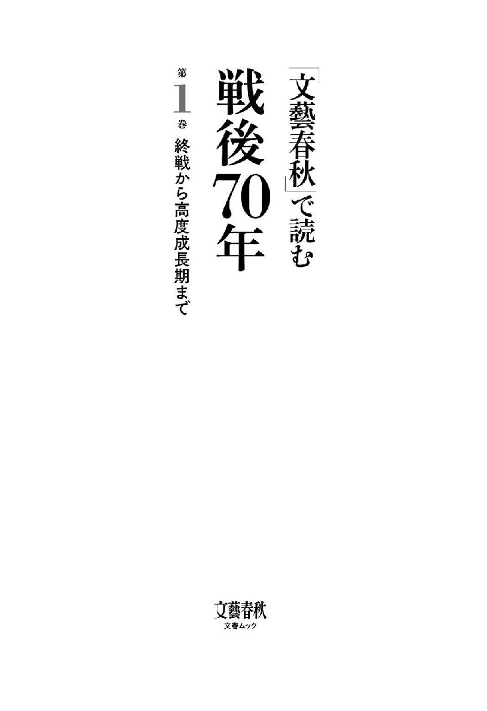
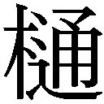
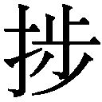
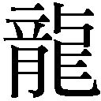
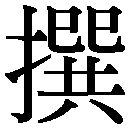
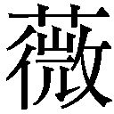
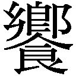
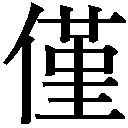
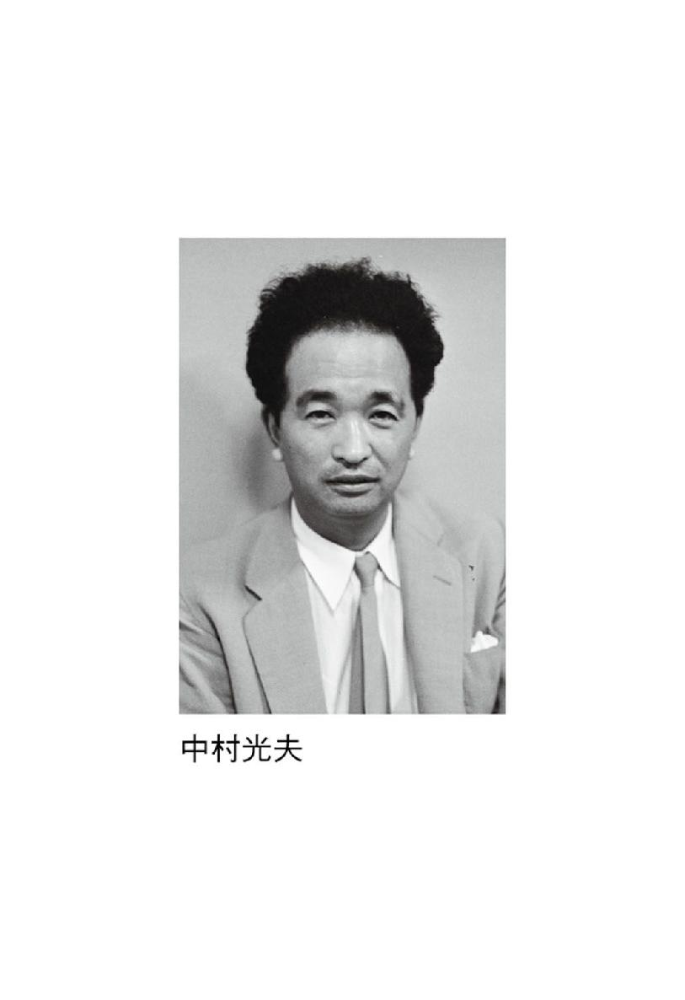
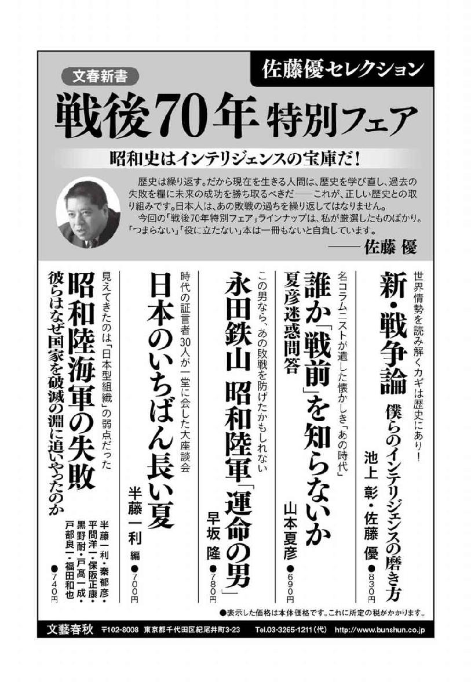

| 「文藝春秋」で読む戦後70年 第一巻 終戦から高度成長期まで (文春e-book) | |
| Unknown | |
| (2015) | |

「文藝春秋」で読む戦後70年
［第１巻］終戦から高度成長期まで
【総論】日本を狂わせた異質の四十年間 昭和の中の魔物 司馬 太郎
太郎
昭和22年 ノーベル賞受賞直前に寄稿 偶然と必然のあいだ 湯川秀樹
昭和23年 作家の自殺に寄せて 太宰治はなぜ死んだのか 井伏鱒二
昭和24年 戦後の暗雲を吹き飛ばした名座談 天皇陛下大いに笑う 辰野隆／徳川夢聲／サトウ・ハチロー
昭和26年 クロサワの名が世界に轟く ベニス映画祭の「羅生門」騒ぎ 高田博厚
昭和27年 「貧乏人は麦を食え」のヒトの回想 大蔵大臣はつらい 池田勇人
昭和31年 『太陽の季節』という爆裂弾 第三十四回芥川龍之介賞決定発表 石原慎太郎ほか
昭和34年 半世紀前のあの興奮が甦る 「天覧試合」あの四打席を語る 長嶋茂雄／加藤良三
昭和35年 60年安保闘争時の不慮の死 嵐の議事堂に消えたわが娘 樺 俊雄
昭和36年 昨今の繁栄はウソかマコトか 所得倍増の二日酔い 松下幸之助
昭和37年 政界引退後の大放言 首相なんてバカな奴がやるもんだ 吉田 茂
昭和39年 避妊法の博士の述懐 〝オギノ式〟乱用者に告ぐ 荻野久作
昭和41年 沖縄出身兵士の記録 ベトナム最前線の日本兵 石川文洋
昭和42年 初の革新知事、選挙を語る 都民との対話に成功せり 美濃部亮吉
昭和43年 時の幹事長がぶち上げた政権構想 日本列島改造の青写真 田中角栄
昭和45年 防衛庁長官が明かすその瞬間 三島事件・自決の現場 中曾根康弘
昭和47年 激動期の宰相が語る政治史 今だから話す沖縄・公害・台中 佐藤栄作
【編集後記】
※各記事の末尾に付した数字は、記事の初出時を示します。例えば（21・６）は昭和21年６月号の意味です。また、文中の敬称は略し、肩書きは当時のままとしました。
以下が、夢だったのかどうかは、わからない。ともかくも山を登りつづけていて、不意に浅茅が原に出てしまった。
こういう場所を昔の修験道は好んだ。まわりを、山なみが蓮の花びらのように取りまいているのである。山々には、小袖の裾濃のように、青や紫の光が当たっている。ただその浅茅が原だけは色がない。
そこに、巨大な青みどろの不定形なモノが横たわっている。
その粘膜質にぬめったモノだけは、色がある。ただし、ときに褐色になったり、黒い斑点を帯びたり、黒色になったりもする。割れてささくれた爪もそなえている。両眼が金色に光り、口中に牙もある。牙は、折れている。形はたえず変化し、とらえようがない。わずかに息づいているが、言えそうなことは、みずからの力ではもはや人里には出られそうにないということである。
君はなにかね、ときいてみると、驚いたことにその異胎は、声を発した。「日本の近代だ」というのである。
ただしそのモノがみずからを定義したのは、近代といっても、一九〇五年（明治三十八年）以前のことではなく、また一九四五年（昭和二十年）以後ということでもない。その間の四十年間のことだと明晰にいうのである。つまりこの異胎は、日露戦争の勝利から太平洋戦争の敗戦の時間が、形になって、山中に捨てられているらしい。
「おれを四十年とよんでくれ」
と、そのモノはいった。
「君は、生きているのか」
「おれ自身は死んだと思っている。しかし見る人によっては、生きているというだろう」
もっとも人里へ降りて行って害をもたらすということはもうあるまいが、ともいった。
歴史もまた一個の人格として見られなくもない。日本史はその肉体も精神も、十分に美しい。ただ、途中、なにかの変異がおこって、遺伝学的な連続性をうしなうことがあるとすれば、
「おれがそれだ」
と、この異胎はいうのである。
そのモノは気味わるく蠕動していて、うかつに踏んづければ、そのまま吸いこまれかねない感じもある。私は十分距離を置き、子供のような質問をしてみた。
日本は、日露戦争の勝利以後、形相を一変させた。
「なぜ日本は、勝利後、にわかづくりの大海軍を半減して、みずからの防衛に適合した小さな海軍にもどさなかったのか」
ということである。
日露戦争における海軍は、大規模な海軍たらざるをえなかったことは、『坂の上の雲』を書いた私としては、十分わかっているつもりである。ロシアのウラジオストックにおける艦隊を討ち、かつ欧露から回航されてくる大艦隊と戦うには、やむなく大海軍であることを必要とした。その応急の必要にせまられて、日本は開戦前、七、八年のあいだに、世界有数の大海軍を建設した。
ロシア海軍はこれによってほぼ潰滅し、再建は半世紀以上かかるだろうといわれた。
大海軍というのは、地球上のさまざまな土地に植民を持つ国にしてはじめて必要なものなのである。
帝国というのが収奪の機構であるとすれば、十六世紀の黄金時代のスペインこそその典型だった。史上最大の海軍がつくられ、大艦と巨砲による威圧と収奪、陸兵の輸送と各地の収奪物の運搬のためにその艦船はあらゆる海に出没した。
十六世紀末、その無敵艦隊をイギリスが破って、スペイン的な世界機構の相続者になり、機構をみがきあげるのである。
当然、イギリスは大海軍を必要とした。蒸気軍艦になってから世界の各地に石炭集積所を置いたために、港湾維持のための支配や外交がいよいよ精密化した。
日露戦争終了のときには、日本は、世界じゅうに植民地などもっていないのである。
「戦後、多数の海軍軍人が残った」
そのモノは、ただそれだけ答えた。日本海海戦のような近代海戦史に類のない勝利をおさめた栄光の海軍が、みずからの両手にかかえてしまった大海軍を減らすはずがなく、むしろ組織というのは、たとえ目的がなくても細胞のように自己増殖をのみ考えるものだ、という意味のことをいっているのだろうか。
そのモノの返答は、まことにみじかい。日本は、日露戦争終了後、五年して、韓国を合併した。数千年の文化と強烈な民族的自負心をもつその国の独立をうばうことで、子々孫々までの恨みを買うにいたったが、当時の日本の指導者はそのことについての想像力をもっていたか、と いてみた。
いてみた。
この胎盤に似た膚質のモノは、三十分ほども沈黙した。そのあと、
「あのころには、深刻な事情があった」
と、いった。ロシアのことである。ロシアはその辺境の〝満洲〟でわずかの差で敗れたとはいえ、巨大な余力を残していた。かならず報復のための第二次日露戦争を仕掛けてくる、と日本はおもっていた、という。
「思っていた？ 主として、誰が？」
ときいたとき、このモノの膚質が、それまでのあいまいに濁った色から、単色に変った。濃のような青みどろだった。
「参謀本部だ」
恐ろしい声を出した。
（ひょっとすると、このモノは、参謀本部そのものではあるまいか）
ふと、そう思った。
参謀本部については、つぎに譲りたいが、ともかくも明治憲法下の法体制が、不覚にも孕んでしまった鬼胎のような感じがある。
といえば、不正確になる。
参謀本部にもその成長歴があって、当初は陸軍の作戦に関する機関として、法体制のなかで謙虚に活動した。
日露戦争がおわり、明治四十一年（一九〇八年）、関係条例が大きく改正され、内閣どころか陸軍大臣からも独立する機関になった。やがて参謀本部は〝統帥権〟という超憲法的な思想（明治憲法が三権分立であるとすれば）をもつにいたるのだが、この時期にはまだこの思想はそこまでは成熟していない。だから、日韓合併の時期では、のちの〝満洲事変〟のように、国政の中軸があずかり知らぬうちに外国に対する侵略戦争が〝参謀〟たちの謀略によっておこされるというぐあいではなかった。
しかし、将来の対露戦の必要から、韓国から国家であることを奪ったとすれば、そういう思想の卸し元は参謀本部であったとしか言いようがない。
さらに、質問した。このモノの四十年間の活動は、いうところの帝国主義であったのか、と問うと、
「ちがう」
と、奇声に似た高い声がかえってきた。
むろん、このモノのいうとおりにちがいない。外国からみれば形としては帝国主義の雛型に入るが、内実は帝国主義ですらなかったように思われるのである。
二十世紀なかばまで、諸家によって帝国主義の規定やら論争やらがおこなわれたが、初歩的にいえば、商品と資本が過剰になったある時期からの英国社会をモデルとして考えるのが常識的である。過剰になった商品と、カネの排け口を他に得るべく──つまり企業の私的動機から──公的な政府や軍隊をつかう、というやり方だが、日本の近隣においては、英国はこのやり方を中国に対しておこなった。
しかしその当時の日本は朝鮮を奪ったところで、この段階の日本の産業界に過剰な商品など存在しないのである。朝鮮に対して売ったのは、タオル（それも英国綿）とか、日本酒とか、その他の日用雑貨品がおもなものであった。タオルやマッチを売るがために他国を侵略する帝国主義がどこにあるだろうか。
要するに日露戦争の勝利が、日本国と日本人を調子狂いにさせたとしか思えない。
なにしろ、調子狂いはすでに日露戦争の末期、ポーツマスで日露両代表が講和について条件を話しあっていたときからはじまっていた。講和において、ロシアは強気だった。日本に戦争継続の能力が尽きようとしていることを知っていたし、内部に〝革命〟という最大の敵をかかえているものの、物量の面では戦争を長期化させて日本軍を自滅させることも、不可能ではなかった。弱点は日本側にあったが、代表の小村寿太郎はそれを見せず、ぎりぎりの条件で講和を結んだ。
ここに、大群衆が登場する。
江戸期に、一揆はあったが、しかし政府批判という、いわば観念をかかげて任意にあつまった大群衆としては、講和条約反対の国民大会が日本史上最初の現象ではなかったろうか。
調子狂いは、ここからはじまった。大群衆の叫びは、平和の値段が安すぎるというものであった。講和条約を破棄せよ、戦争を継続せよ、と叫んだ。「国民新聞」をのぞくほか、各新聞はこぞってこの気分を りたてた。ついに日比谷公園でひらかれた全国大会は、参集する者三万といわれた。かれらは暴徒化し、警察署二、交番二一九、教会一三、民家五三を焼き、一時は無政府状態におち入った。政府はついに戒厳令を布かざるをえなくなったほどであった。
りたてた。ついに日比谷公園でひらかれた全国大会は、参集する者三万といわれた。かれらは暴徒化し、警察署二、交番二一九、教会一三、民家五三を焼き、一時は無政府状態におち入った。政府はついに戒厳令を布かざるをえなくなったほどであった。
私は、この大会と暴動こそ、むこう四十年の魔の季節への出発点ではなかったかと考えている。この大群衆の熱気が多量に──たとえば参謀本部に──蓄電されて、以後の国家的妄動のエネルギーになったように思えてならない。
むろん、戦争の実相を明かさなかった政府の秘密主義にも原因はある。またるのみで、真実を知ろうとしなかった新聞にも責任はあった。当時の新聞がもし知っていてったとすれば、以後の歴史に対する大きな犯罪だったといっていい。
また、朝鮮を侵略するについても、そのことがソロバン勘定としてペイすることなのか、ということをだれも考えなかった。
その後の〝満洲国〟（昭和七年・一九三二）をつくったときにも、ペイの計算はなく、また結果としてペイしたわけでもなかった。
「われわれは、そういう俗な計算でやったわけではない」
と、そのモノはいう。ただ、声はほとんど聞きとれなくなっている。さらに、そのモノはいった。
「君のいうペイで言えば、われわれは華北に進出したよ」
〝統帥権〟は、内閣から独走して、華北に謀略的に冀東政権（昭和十年・一九三五）をつくったことを指しているらしい。日本からの商品が満洲国に入る場合、無関税だった。この商品がこれ以後、華北に無関税で入るようになった。このため、上海あたりで芽を出していた中国の民族資本は総だおれになり、抗日への大合唱に資本家も参加するようになった。昭和十二年、日本は泥沼の日中戦争に入ってしまう。
〝満洲〟が かるようになったというのは、密輸の合法化ともいうべき右のからくりのことをこのモノはいうのである。その商品たるや──昭和十年の段階で──なお人絹と砂糖と雑貨がおもだった。このちゃちな〝帝国主義〟のために国家そのものがほろぶことになる。一人のヒトラーも出ずに、大ぜいでこんなばかな四十年を持った国があるだろうか。
かるようになったというのは、密輸の合法化ともいうべき右のからくりのことをこのモノはいうのである。その商品たるや──昭和十年の段階で──なお人絹と砂糖と雑貨がおもだった。このちゃちな〝帝国主義〟のために国家そのものがほろぶことになる。一人のヒトラーも出ずに、大ぜいでこんなばかな四十年を持った国があるだろうか。
以上、何回か堅くるしいことを書いてきた。ありようは、ただ一つのことを言おうとしている。昭和ヒトケタから同二十年の敗戦までの十数年は、ながい日本史のなかで非連続の時代だったということである。
たとえば戦後、〝社会科学〟的な用語としてつかわれる「天皇制」などというえぐいことばも、多分にこの非連続的な時代がイメージの核になっている。
──あんな時代は日本ではない。
と、理不尽なことを、灰皿でも叩きつけるようにして叫びたい衝動が私にある。日本史のいかなる時代ともちがうのである。
さきに〝異胎の時代〟ということばをつかった。
その二十年をのけて、たとえば、兼好法師や宗が生きた時代とこんにちとは、十分に日本史的な連続性がある。また芭蕉や荻生徂徠が生きた江戸中期とこんにちとは文化意識の点でつなぐことができる。つなぐとは単純接着という意味でもあり、また電流が通じうるという意味でもある。
「司馬さんには、昭和の戦争時代が書けませんね」
と、いつだったか、丸谷才一氏にいわれたことがある。
なさけないが、うなずくしか仕様がない。
私事をいうと、私は、ソ連の参戦が早ければ、その当時、満洲とよばれた中国東北地方の東部国境付近の野で、ソ連製の徹甲弾で戦車を串刺しにされて死んでいたはずである。その後、日本にもどり、連隊とともに東京の北方に駐屯していた。もしアメリカ軍が関東地方の沿岸に上陸してくれば、銀座のビルわきか、九十九里浜か厚木あたりで、燃えあがる自分の戦車の中で骨になっていたにちがいない。そういう最期はいつも想像していた。
あの当時、いざというとき、私どもが南下する道路の路幅は、二車線でしかなかった。その状況下では、東京方面から北関東へ避難すべく北へたどる国民やかれらの大八車で道という道がごったがえすにちがいない。かれらをひき殺さないかぎりどういう作戦行動もとれないのである。さらには、そうなる前に、軍人よりもさきに市民たちが敵の砲火のために死ぬはずだった。何のための軍人だろうと思った。
その時期、それやこれやの想像で頭がはちきれそうになっていたのだが、映画がおわるように、それらの想像が終了したのは、敗戦の日だった。場所は、栃木県佐野だった。
敗戦の数カ月前、私どもがいた宿舎は小学校で、この宿舎にきて最初にやったのは、敵の空襲からの被害を避けるために付近の山々に穴を掘って戦車をかくすことと、校庭に小さな壕を掘って、対空用の機関銃座をつくることだった。その作業中、私は、しきりに謡曲の『鉢の木』のことをおもった。
鎌倉のむかし、無名の旅の僧（じつは北条時頼）のために宿をし、鉢の木を焚いて暖をとらせた牢浪の佐野源左衛門尉常世のことである。源左衛門尉がわび住まいしていた佐野とはこの土地ではないかと思うと、まわりの山河が沁み入るように愛おしくなった。
その後、場所については異説があることを知ったが、この時期はこここそ〝佐野のわたりの雪の夕暮〟のあの佐野であると思いこんでいた。
やがては、源左衛門尉やその妻、あるいは平明な良心だけを政治の心としていた時頼などが、私のなかで歴史的日本人の代表のように思われてきた。というより、すでに日本に帰りながら、日本のことが恋しくなっていた。さらにいえば、自分が身を置いている進行中の日本が本当の日本なのかと思ったりした。
降伏後も、数週間、この野ですごした。
（日本や日本人は、むかしから今のようなぐあいだったのか）
という茫々とした思いを持った。ひょっとするとむかしの日本や日本人はちがっていて、昭和という時代だけがおかしいのではないか、とも思ったりした。
それより前、私は当時、満洲とよばれた中国東北地方にいた。そのころノモンハン事変（昭和十四年）のことがたえず脳裏にあった。
ひとつは、私どもの部隊の先祖（といってもわずか四、五年前の先祖だが）がこの凄惨な戦闘に参加し、こなごなにやられたということもある。それに、私どもの仮想敵はソ連だったし、具体的にはソ連の戦車だった。常住、それを想定して訓練がおこなわれた。
私が訓練を受けた四平街の戦車学校の校庭のすみの草むらの中に、破壊されたソ連のＢＴ戦車が放置されていた。操縦装置その他は日本の戦車にくらべて大量生産むきのごく雑な車体だったが、兵器のいのちである攻撃力（火砲）と防禦力（装甲）においてすぐれていた。ノモンハン当時、日本の八九式中戦車や九七式中戦車がこれを射ってもタドン玉を投げつけたほどの効果しかなかったが、むこうの弾はこちらをやすやすとつらぬいた。あの事変では戦車の数も、こちらが一に対しソ連は十の勢力をもっており、結局、戦闘の進行中、関東軍は戦車隊の育成と保全のためという奇妙な論理をたてて、戦場から戦車部隊だけを撤退させた。それが私どもの〝先祖〟だった。
結果として、ノモンハンの草原上の日本軍は死傷七〇％以上という世界戦史にもまれな敗北を喫して停戦した。
この事変は、日本から仕掛けた。しかも日本国家の国家的意志によってやったものではなかったのである。
関東軍参謀の独走によっておこなわれたもので、参謀の元締である東京の参謀本部でさえ事後に知らされた。
ノモンハン事変は、そのごく一例にすぎない。
「参謀」
という、得体の知れぬ権能を持った者たちが、愛国的に自己肥大し、謀略をたくらんでは国家に追認させてきたのが、昭和前期国家の大きな特徴だったといっていい。
たとえば、昭和三年には、関東軍高級参謀の河本大作が、幕末の志士気どりになって、一個人でもって国家行為をおこすべく企図し、奉天軍閥の首領張作霖を爆殺した。ついで昭和六年、同軍参謀石原莞爾らが〝満洲〟の独立をひそかに議し、満鉄の一部を爆破（柳条溝事件）し、この爆破を中国側がやったとして満洲事変をおこした。
昭和前期の日本というのは、統一的な意志決定能力をもった国家であったとはおもわれない。
私は、ついに書くことはないだろうと思うが、ノモンハン事変を、ここ十六、七年来しらべてきた。生き残りの人達にも、ずいぶん会ってきた。
当時の参謀本部作戦課長でのちに中将になった人にも会った。このひとは、さきごろ逝去された。六時間、陽気にほとんど隙間もなく喋られたが、小石ほどの実のあることも言わなかった。私は四十年来、こんなふしぎな人物に会ったことがない。私はメモ帳に一行も書かなかった。書くべきことを相手はいっさい喋らなかったのである。
これとは逆に、戦場で生き残って、そのあと免職になった一連隊長を信州の盆地の温泉町に訪ねたときは、まだ血が流れつづけている人間を見た思いがした。その話は、事実関係においては凄惨で、述懐において怨嗟に満ちていた。うらみはすべて、参謀という魔法の杖のもちぬしにむけられていた。他者からみれば無限にちかい権能をもちつつ何の責任もとらされず、とりもしないというこの存在に対して、しばしば悪魔！ とよんで絶句された。
「元亀天正の装備」
という形容を、この元大佐は使われた。当時の日本陸軍の装備についてである。いうまでもなく元亀天正とは織田信長の活躍時代のことである。この大佐とその部下たちはその程度の装備をもってソ連の近代陸軍と対戦させられ、結果として敗れた。その責任は生き残った何人かの部隊長にかぶせられ、自殺させられた人もあった。そのころの日本陸軍の暗黙の作法として、責任をとらせたい相手の卓上に拳銃を置いておくのだが、右の元大佐はこのばかばかしさに抵抗した。このため、退職させられた。
しかしこの悲惨な敗北のあと、企画者であり演出者であった〝魔法使い〟たちは、転任させられただけだった。たとえば、ノモンハンの首謀者だった少佐参謀の 政信は上海に転任し、その後、太平洋戦争では大きく起用されてシンガポール作戦の参謀になった。作戦終了後、その魔法の機能によって華僑の大虐殺をやり、世界史に対する日本の負い目をつくることになる。
政信は上海に転任し、その後、太平洋戦争では大きく起用されてシンガポール作戦の参謀になった。作戦終了後、その魔法の機能によって華僑の大虐殺をやり、世界史に対する日本の負い目をつくることになる。
話は、かわる。
Ａさんという呉服屋の番頭をしている小柄な老人は、私は未熟児でございまして、と自分の体力のなさについて、身も世もなくかきくどく人である。見たところ、小学生ほどの腕力もなさそうで、顔までが、茶道師範のお婆さんのようにやさしい。そういう人ですら、大戦の末期には徴集され、関東軍の一兵士になった。その上、ソ連によってシベリアに送られ、奴隷労働をさせられた。多くのひとが栄養失調などで死んだが、この虚弱なひとは命冥加にも生きて帰った。
「よほど楽な労働にまわされたのですね」
そうきくと、答えが意外だった。
「いいえ、岩山の岩を割らされておりました」
話が岩割りのことになると、Ａさんの顔に血がのぼり、情熱的な目つきになった。兵隊の中には学者がいるものでございます、どんな岩にも、理というものがある、大理の理、そいつをさがしだして、その理に沿ってノミを叩きつづけてゆくといつかは大割れに割れるものだ、そういうことを申すものでございますから、みなでそのとおりに致しますと、本当に割れました、そういう理でもってシベリアの岩をずいぶん割って参りました、といった。
「その学者は、前職は何でしたか」
「飾り職人でございました」
後年、藤堂明保氏や山田勝美氏の本（『漢字語源辞典』『漢字の語源』など）をよむと、理とはこの飾り職がいうような意味をもっている。山田勝美氏によると、理のツクリの里の音は「離析」（はなれる）をあらわし、これに玉ヘンをつけて理になると「玉のさけ目、筋模様」をあらわす文字になる、という。中国のむかし、細工人が玉器を作る場合、玉のさけ目やスジ模様──理──に従って細工をしたというのである。飾り職人のいうところは、まことに理にかなったことだった。
以上、われながらとりとめもなく書いている。
私自身の考え方がまだ十分かたまらずに書いているからで、自分でもいらいらしている。
ともかく自分もその時に生存した昭和前期の国家が何であったかが、四十年考えつづけてもよくわからないのである。よくわからぬままに、その国家の行為だったノモンハン事変が書けるはずがない。
──それは天皇制ファッショの時代だったから。
という術語を使ってしまえば通過はできるが、理解はできない。
たとえば、ちゃんとした統治能力をもった国なら、泥沼におち入った日中戦争の最中に、ソ連を相手にノモンハン事変をやるはずもないし、しかも事変のわずか二年後に同じ〝元亀天正の装備〟のままアメリカを相手に太平洋戦争をやるだろうか。信長ならやらないし、信長でなくても中小企業のオヤジさんでさえ、このような会社運営をやるはずもない。
この魔法の岩にも、さきの飾り職人のいう理があるはずで、おろかなことだが、ごく最近になってその理が、異常膨脹した昭和期の統帥権の〝法解釈〟ではないかと思うようになった。
明治憲法はいまの憲法と同様、明快に三権（立法、行政、司法）分立の憲法だったのに、昭和になってから変質した。統帥権がしだいに独立しはじめ、ついには三権の上に立ち、一種の万能性を帯びはじめた。統帥権の番人は参謀本部で事実上、かれらの参謀たち（天皇の幕僚）はそれを自分たちが〝所有〟していると信じていた。
ついでながら憲法上、天皇に国政や統帥の執行責任はない。となれば、参謀本部の権能は無限に近くなり、どういう〝愛国的な〟対外行動でもやれることになる。
京都市の社会教育センターが、創造という主題の感じのいい雑誌（「創造的市民」）を出しているが、そこに桑原武夫氏の連載対談が載っている。その第12号のゲストは神戸大学教授（日本史）熱田公氏である。歴史は科学か、という話題が出たあと、戦後「過去の人物を公平に見るという空気が出てきた」ということが話題に入り、たとえば、「昔のように足利尊氏をほめたから議員を辞めなきゃならんとか、もうそういうことは......」（桑原）とつづく。
熱田 その尊氏（註・足利）、問題でして、尊氏だけが戦後の再評価のなかで実はいまだに残っているんです。
桑原 残っているというのは、悪い点があるという......
熱田 いや、とり上げられないんですね。だから尊氏につれて楠木正成も......
桑原 評価が変わったという意味ですか。
熱田 変わったのか、変わってないのか。尊氏が再評価されないものですから、正成は割りを食って無視された形でいるというか、そういう立場でいますね。
桑原 南北論争というか、これは片づいていない......
熱田 片づいていないというよりも、一般の国民常識という面においては、あそこはいまだにタブーのところがあります。
タブーというあたりまで読んで、そういわれてみるとそうか、と感じ入ってしまった。
たとえば、病院の薬局には劇薬の棚があって、子供などの手がとどかないように高い所にとりつけられており、施錠されている。劇薬と書かれた貼紙は赤ワクでかこまれ、毒薬という文字のワクは黒である。南北論争は、戦後そういう棚の中に封じこめられた。
忘れられたところで、戦後の暮らしや戦後思想史の上でなんの痛痒もない。
ところが、過去にあっては、そうではなかった。
明治維新がただ一種類の思想で成立したとは思わないが、イデオロギー正義体系としては朱子学（宋学）の尊王攘夷思想だった。このことはすでにのべた。
とくに維新後、尊王が拡大され、イデオロギーの常として、善玉と悪玉が設けられた。マルキシズムもふくめて、イデオロギーが善玉・悪玉をよりわけたり、論断したりするときには、幼児のようにあどけなく、残忍になる。
が、じっさいには善玉・悪玉にされた正成も尊氏も、こまったことにめずらしいほどいい人間なのである。
戦後、マルキシズムが流行してべつな規準で善玉・悪玉の製造に熱中しはじめると、過去の、そして別体系の善玉・悪玉は、用済みになった。もっともいかに過去のものとはいえ、正義体系という劇・毒薬がからんでいるために、棚に上げて施錠された。分析もされず、劇物性を除去する作業もなされず、忘れるという人間の自然の──そして偉大な──能力にゆだねられた。
以上は、いわばゴタクである。
私は、旧日本を誤らせた統帥権のことを考えている。
宋学（朱子学）の立場からいえば、日本における南北朝の対立においては、南朝が正統とされる。（なぜ正統かとなると、ここで説明するのも物憂い。実のない形而上論議にすぎないからである）
ただし、現実の南北朝の世にあっては、そういう形而上論は、ごく一部にしか存在しなかった。
現実に存在したのは、南朝の首領である後醍醐天皇が、一時的に革命（建武の中興）に成功したあとのはなはだしい失政と、不人気だった。
もともとこの天皇は、ごく自然な日本的な体制だった鎌倉の武家体制を否定し、さらには歴世の天皇の非政治性をもはげしく否定して、天皇である自分は中国皇帝のように専制権をもつべきだとした。日本的伝統からみれば風変わりだったが、宋学の正義体系からみればきわめて前衛的だった。
楠木正成が宋学の徒であったかどうかは、直接の資料にはない。が、傍証的にはそうだったろうと考えられる。
その家は草の土豪にすぎなかった。かれは後醍醐天皇の流浪時代に先んじて討幕の挙に参加し、河内金剛山のふもとの赤坂に、満天下の敵をひきつけるための城塞をつくった。
これによって世間がどう動くかということを見きわめぬいていた人物だった。かれが卓越した戦術家だっただけでなく、世間というものを、心理学的に、あるいは政治力学という点で、心得きっていたといえる。こういう器量の人物は、それ以前の日本史には見あたらない。
要するに、千にも満たぬ手兵をもって幕府軍の二十万七千六百騎（『太平記』）の大軍に対抗したのである。その間、神秘的なほどに巧緻な要塞戦を演じて、天下を統べる北条執権府がいかに無能で弱いかを天下に曝け出させた。げんに天下の多くが、北条執権府を見かぎった。大量伝達方式のない時代に、それと同じ効果のことをやってのけたのである。
赤坂の陥落は、正成にとって予定のことだった。その後、諸方に出没し、やがて規模の大きな会戦（天王寺合戦など）をやってみごとに勝った。さらには金剛山の千早城に籠って、関東の正規軍をひきつけてこれを大いになやませたりもした。ゲリラ戦にも正規戦にもつよかった。『太平記』は、闇の中から出てきたような正成の登場とその華麗な活躍と知的な風韻によってはじめて生彩を得るのである。
またかれが清雅な人柄で、かつ衆心を得ていたことなどから、江戸期のひとびとは『三国志演義』の諸孔明のイメージとかさねた。
主として正成の活躍によって成立した建武の中興も、さきにのべたように、ひとびとがこの〝革命〟に失望し、時勢の自然な欲望をかなえてくれそうな足利尊氏に希望を託するようになる。
曲折のすえ、尊氏も北朝を擁する。以後、南北朝の抗争になる。やがてかれは九州で大勢力を培養し、瀬戸内海水軍をも傘下におさめて、海陸両方から京をめざして攻めのぼってくる。
正成はもはや時勢が南朝の上から去ったことを知っていた。かつて自分とともに戦ってきた一族の中からも、陣触れに応じない者が出てきた。
正成は京によばれ、戦策をきかれた。かれはこの絶望的な状態から南朝を救うのはただ一つの方法しかないとした。一種の焦土作戦だった。
京都というまちは、それじたいが食糧を生産せず、貯蔵もしていない。正成は、そのことに目をつけた。幸い、尊氏軍は京をめざしている。望むようにその大軍を京に入れさせ、味方は退去し、しかるのち洛南の開口部（山崎のあたり）を閉ざし、四方から攻撃し、飢える敵をたたくというのである。ただしこの間、天皇は叡山に避難していてもらわねばならない。
正成は、階の下にうずくまっていた。堂上に従二位の参議坊門清忠という公がいて、正成の案に色をなした。清忠は矯激な性格の上に、諸事口出しが早かった。正成との相性がわるかったのか、それとも公らしい尊大さ以外に思慮のない男だったのか、これまで数度も正成の戦策をしりぞけてきた。しかもかれは藤原定房とともに後醍醐天皇の寵臣だった。
清忠は、言った。以前もみかどが叡山に移られたことがあり、こんどまたそういうことがあると、世上は帝位を軽くみる、という。さらにいままでの戦いでつねに御味方は小勢ながら大敵を破ってきた、これはたれのおかげか、すべて聖運によるものではないか、といったのである。
是全、武略ノ勝レタル所ニハ非ズ、只聖運ノ天ニ叶ヘル故也。
（『太平記』巻十六）
かれは武臣に功が傾けば公家の権が衰え、鎌倉のむかしにかえると思っていたのか、正成のいままでの功まで認めなかった。
後醍醐天皇は、この清忠の意見を採用した。清忠は勢いを得、声をはげまして、以下のようにいう。
只時ヲ替ヘズ、楠罷リ下ルベシ。
正成は「此上ハサノミ異議ヲ申スニ及バズ」と思い、わずか五百騎で兵庫にくだり、湊川で一族とともに討死する。
「太平記読」は、講談の源流である。それを専門とする物語僧はすでに室町期にあらわれたが、江戸期とくに元禄のころ、武士や庶民の世界で隆盛をきわめた。当然ながら人気は正成に集中した。
江戸期に、頼山陽の『日本外史』が刊行（一八三六～三七ごろ）される。これが、日本社会に出現した最初の日本通史である。
それまで日本の読書人にとって「史」といえば中国の史書をさしていた。会話や文章で引用される故事も人物誌も逸話もすべて典拠が中国史にあり、そのことにかぎっていえば、日本人はいわば中国人だった。『日本外史』の出現は日本文化史の上で大きく、しかも圧倒的に読まれた。この一書が幕末を動かしたとさえ言いたくなるほどである。
山陽は、水戸の『大日本史』と同様、価値観を朱子学にとり、尊王論や名分論でつらぬいた。当然南朝は正統となり、正成は善、尊氏は極彩色の悪になった。
この価値観は明治維新にひきつがれ、太平洋戦争の敗戦までつづく。
ただし、明治人は多様だった。
福沢諭吉が明治七年に刊行した『学問のすすめ』第七編に、西洋の殉難〝マルチルドム〟（martyrdom）にくらべると、日本の過去には伝承的な人物の佐倉宗五郎が存在するぐらいで、忠臣義士といえども「旦那へ申訳にて命を棄たる者」にすぎず、その点、義僕（たとえば権助と福沢はいう）とかわるところがない、と論じた。これが〝楠公権助論〟として物議をかもしたが、もし昭和初年に福沢が生きていてこの文章を書いたとすれば、テロに遭ったかもしれない。
昭和七、八年前後から、本卦がえりという以上に、十二世紀の中国の朱子の尊王論が国民教育の上で濃縮され、ついには「楠木正成」というのは固有名詞を越えて思想語に近くなった。
以上は、統帥権の問題を念頭において書いた。
明治憲法はりっぱに三権分立の憲法で、三権に統帥権は入らない。
が、やがてこの憲法思想外の権がガン細胞のように内閣から独立し（一九〇八年）、昭和十年以後はあらゆる国家機関を超越する権能を示しはじめた。このことへいたる情念の歴史として、前記の正成の劇的情景がある。この情景は悲憤とともに軍人や教育者や一般の間で共有されていたにちがいない。福沢諭吉よりも楠木正成のほうがつよかったのである。
かつて、一冊の古本を見つけた。
『統帥綱領・統帥参考』という題の本である。復版されたもので、昭和三十七年、偕行社（註・旧陸軍の正規将校を中心とした親睦団体）刊となっている。
原本は敗戦のときに一切焼却されて、この世には存在しないとされていた。偕行社が奇跡的に残った本を入手したらしい。
もとは二冊だったようである。『統帥綱領』のほうは昭和三年、『統帥参考』のほうは昭和七年、それぞれ参謀本部が本にしたもので、むろん公刊の本ではない。公刊されれば、当然、問題になったはずである。内緒の本という以上に、軍はこの本を最高機密に属するものとし、特定の将校にしか閲覧をゆるされなかった。
特定の将校とは、統帥機関である参謀本部所属の将校のことである。具体的には陸軍大学校に入校をゆるされた者、また卒業して参謀本部で作戦や謀略その他統帥に関する事項をうけもつ将校をさしている。
『統帥参考』のなかに、憲法（註・明治憲法）に触れたくだりがある。おれたちは──という言葉づかいではむろんないが──じつは憲法外なのだ、と明快に自己規定しているのである。
「おれたち」
と、わざわざここで卑俗に意訳したくなったのは、秘密結社のようなにおいがするからである。
当時、日本国民のたれもが憲法下にあったことはいうまでもない。天皇でさえ、憲法によって規定されていた。憲法によって天皇は政治に対し、個人として能動的な作用をすることはいっさいできず、例外的にそれをおこなったのは、敗戦のときのいわゆる〝聖断〟だけである。
であるのに、この本が閲覧できる〝メンバーズ・クラブの会員たち〟──参謀本部の将校──だけが〝われわれの職務だけが憲法外におかれている〟と言いかわし、それを秘密にし、そのことを明文化した本を〝最高の機密、門外不出の書〟（復刻本の編者の「まえがき」の用語。筆者名なし）とし、国民にはむろん洩らすことがなかった。しかも敗戦のとき、敵にも後世にも知られぬように配慮したのか、かれらの手で一冊のこらず焼きすてたのである。
一握りの人間たちが、秘密を共有しあった以上は、秘密結社としか言いようがないが、こまったことに参謀本部は堂々たる官制による機関なのである。その機関が、憲法を私議し、私的に合意して自分たちの権能を〝憲法外〟としている以上は、帝国憲法による日本帝国のなかに、もう一つの国があったことになる。（むろん日露戦争のころの参謀本部はそういう鬼胎ともいえるような性格のものではなかった）
そのことについては『統帥参考』の冒頭の「統帥権」という章に、以下のように書かれている。
......之ヲ以テ、統帥権ノ本質ハ力ニシテ、其作用ハ超法規的ナリ。（原文は句読点および濁点なし。以下、同じ）
超法規とは、憲法以下のあらゆる法律とは無縁だ、ということなのである。
ついで、一般の国務については憲法の規定によって国務大臣が最終責任を負う（当時の用語で輔弼する）のに対して、統帥権はそうじゃない、という。「輔弼ノ範囲外ニ独立ス」と断定しているのである。
従テ統帥権ノ行使及其結果ニ関シテハ、議会ニ於テ責任ヲ負ハズ。議会ハ軍ノ統帥・指揮竝之ガ結果ニ関シ、質問ヲ提起シ、弁明ヲ求メ、又ハ之ヲ批評シ、論難スルノ権利ヲ有セズ。（原文、ルビなし）
すさまじい断定というほかない。（日露戦争のときは、議会はむろん統帥を軍にまかせたが、軍のヘマについてはさかんに議員たちが大いに論難した。軍もまた議会を国民の代表としてこれを見、論難に対しては低姿勢だった）
国家が戦争を遂行する場合、作戦についていちいち軍が議会に相談する必要はない。このことはむしろ当然で、常識に属するが、しかし『統帥参考』のこの章にあっては、言いかえれば、平時・戦時をとわず、統帥権は三権（立法・行政・司法）から独立しつづけている存在だとしているのである。
言いかえれば、国家をつぶそうがつぶすまいが、憲法下の国家に対して遠慮も何もする必要がない、といっているにひとしい。いわば、無法の宣言（この章では〝超法規的〟といっている）である。こうでもなければ、天皇の知らないあいだに満洲事変をおこし、日中事変を長びかせ、その間、ノモンハン事変をやり、さらに太平洋戦争をひきおこすということができるはずがない。
......然レドモ、参謀総長・海軍軍令部長等ハ、幕僚（註・天皇のスタッフ）ニシテ、憲法上ノ責任ヲ有スルモノニアラザルガ故ニ......
天皇といえども憲法の規定内にあるのに、この明文においては天皇に無限性をあたえ、われわれは天皇のスタッフだから憲法上の責任なんかないんだとするのである。
さらにこの明文にはおそるべき項目がある。戦時や〝国家事変〟の場合においては、兵権を行使する機関（統帥機関・参謀本部のこと）が国民を統治することができる、というのである。「大日本帝国憲法」においては、その第一条に「大日本帝国ハ万世一系ノ天皇之ヲ統治ス」とあって統治権は天皇にある。しかしながらこの『統帥参考』の第二章「統帥と政治」の章の「非常大権」の項においては、自分たちが統治する、という。
......兵権ヲ行使スル機関ハ、軍事上必要ナル限度ニ於テ、直接ニ国民ヲ統治スルコトヲ得......
とあって、この文章でみるかぎり、天皇の統治権は停止されているかのようである。天皇の統治権は憲法に淵源するために──そしてその憲法が三権分立を規定しているために──超法機関である統帥機関は天皇の統治権そのものを壟断もしくは奪取する、とさえ解釈できるではないか。（げんにかれらはそのようにした）
要するに、戦時には、日本の統治者は参謀本部になるのである。しかもこの章では「軍権ノ行使スル政務ニ関シテハ、議会ニ於テ責任ヲ負ハズ」とあくつよく念を押している。
憲法に関するこのような確信に満ちた私的解釈が、国家機関の一部でおこなわれているということを、当時、関係者以外は知らなかったにちがいない。いまふりかえれば、昭和前期の歴史は、昭和三年に成立したこの〝機密〟どおりに展開したのである。
私事をいうと、私は昭和十五年、旧制中学の「公民」の時間で、憲法の授業を受けた。
憲法における三権分立のこと、政治上の最終責任は天皇を輔弼する国務大臣にあること、天皇は政治上の責任を負わないこと、など、まことにまっとうな内容で、統帥権という用語さえきかなかった。まして統帥権が三権に超越するものだなどという話はきいていない。先生は東北帝大法文学部出の法学士で、温厚な初老の人だった。その授業の内容をひとことでいうと、美濃部博士の立憲主義的憲法学に拠っていたように思える。
この話を東大の口陽一教授（比較憲法学）にすると、
「昭和十五年で」
と、意外な表情をされた。その時期、統帥機関（参謀本部）はすでに統帥権をてこに「直接ニ国民ヲ統治」しはじめていたが、中学校の教科内容まで再検討するにはいたっていなかったのにちがいない。
美濃部達吉博士は東京大学におけるながい教授生活のすえ勅選の貴族院議員になる。ところが、昭和十年、その学説（いわゆる天皇機関説）を攻撃され、内閣によってその著作『憲法撮要』（大正十二年刊）などが発売禁止の処分をうける。
美濃部にあってはその思想が非日本的でもなく、また反天皇的であったわけでもない。
なにしろ、東京大学におけるかれの憲法講座は大正八年からはじまっているのである。いわゆる高文の試験委員もながくつとめた。高級官僚たちは美濃部の憲法論を身につけて行政機関に入ったのである。文字どおり公認の学説だったといえる。
ついでながら美濃部は、大正十一年、文部省の委嘱によって中等教員のための憲法講義をおこないもした。翌年その筆記を公刊しているから、ひょっとすると昭和十五年、私どもに授業をした先生は、それに準拠したのかもしれない。要するに学説という以上に公認性の高い解釈だったのである。
統帥機関としては、法学界をおおっている美濃部学説を痛打することによって、自前の憲法観（というより非立憲化）への大行進を出発させなければならなかったにちがいない。
もう一つ余談を述べる。美濃部達吉とならんで、日本憲法学の鼻祖とされる京都大学の佐々木惣一（一八七八～一九六五）は、前記『統帥参考』が印刷される二年後の昭和五年に『日本憲法要論』（金刺芳流堂）を出したが、そこで統帥権について、当然これは国務大臣輔弼の外にあるものではない、と断定しているのである。
之ヲ以テ国務大臣輔弼ノ外ニ置クトスルノ説行ハルレドモ、蓋シ是一ノ独断タルノミ、何等法上ノ根拠アルナシ。
（同書）
と、まことに明晰というほかない。
美濃部は昭和十年、その学説が糾弾されたが、佐々木の場合はそういう目にあわなかった。憲法学説問題をヤリ玉にあげた策士たちにとって、官僚の師匠である美濃部一人の首をはねることで十分百戒のききめがあるとしたのであろう。
佐々木については京都に住む一個の学究にすぎないと思ったのかもしれない。それに佐々木自身、すでに教授ではなかった。昭和八年の滝川事件における文部省の態度を不当とし、他の法学部の教官たちとともに大学を去ってしまっていたのである。
ともかくも昭和十年以後の統帥機関によって、明治人が苦労してつくった近代国家は扼殺されたといっていい。このときに死んだといっていい。
私は、日本史は世界でも第一級の歴史だと思っている。ところが、昭和十年から同二十年までのきわめて非日本的な歴史を光源にして日本史ぜんたいを照射しがちなくせが世間にあるようにおもえてならない。この十年間の非日本的な時代を、もっと厳密に検討してその異質性をえぐりだすべきではないかと思うのである。
（61・５～10）
「昭和天皇独白録」掲載にあたって
信じられないような超一級資料という他はない。このたび発掘された「昭和天皇独白録」には、昭和天皇がご自身の言葉で昭和史を語ったその内容が詳しく記されているのである。
「独白録」は、昭和二十一年の三月から四月にかけて、松平慶民宮内大臣、松平康昌宗秩寮総裁、木下道雄侍従次長、稲田周一内記部長、寺崎英成御用掛の五人の側近が、張作霖爆死事件から終戦に至るまでの経緯を四日間計五回にわたって昭和天皇から直々に聞き、まとめたものである。
この聞き書きの存在については、すでに当事者の一人、木下道雄氏の貴重な記録『側近日誌』（文藝春秋刊）によって予想されていた。たとえば昭和二十一年三月十八日付けの『日誌』は、次のように書いている。
「10時30分～12時、陛下、御風邪未だ御全快に至らざるも、かねての吾々の研究事項進すべき御熱意あり。よって御政務室に御寝台を入れ、御仮床のまま、大臣、予、松平総裁、稲田内記部長、寺崎御用掛の五人侍して、田中内閣よりの政変其の他、今般の戦犯裁判に関係ある問題につき御記憶をたどりて事柄を承る」
しかし『側近日誌』は、その内容については極めて断片的にしか記していなかった。ところが今回発掘された「昭和天皇独白録」は、その全内容を天皇の語りのまま「私は......」という一人称で記録しているのである。もちろんその要旨は『側近日誌』のものと完全に一致している。
この「独白録」によって、これまで厚いベールに包まれ、側近たちの残した日記などによって間接的に推測するしかなかった戦前、戦中の昭和天皇の姿が初めて明らかになったといえる。あの暗い時代に、昭和天皇がいかに苦悩し、苛立ち、そして和平のために努力したか。注意深く読めば読むほど、歴史的事実から受ける感動で、身の震えるのを覚える。
この記録を残したのは、当時、昭和天皇の御用掛をつとめていた寺崎英成氏（明33・12～昭26・８）である。
それにしても、何の為にこの生々しい記録が作られたのか、それがどう使われたのかという点は、なお不明な点が多い。ただ当時の時代状況をみると、ある程度のことは想像できる。
昭和二十年初冬から政府、軍の要人は戦犯としてつぎつぎに逮捕され、翌年四月二十八日には、東条英機元首相以下のＡ級戦犯二十八名が起訴された。極東国際軍事法廷（東京裁判）の開幕である。一部には昭和天皇をも戦犯として裁くべし、という強硬論もあり、天皇退位も真剣に検討された。
実はマッカーサー元帥は、それより前の一月二十五日に、長文の最終結論をワシントンに送り、昭和天皇を戦犯指名から除外することに決定していた。
しかし先の『側近日誌』の二十一年二月二十五日付け記述には次のような箇所がある。
「御文庫にて拝謁。（略）戦犯審判開始が漸次遅るる訳は、Ｍ司令部に甲乙に議論のある由、（略）側近としても、陛下の御行動につき、手記的なものを用意する必要なきやにつき御下問あり」
「独白録」は「天皇無罪論」を補強するため天皇ご自身からお話を伺う機会をもったものとも考えられる。
あるいは逆に、昭和天皇みずからが昭和を回想し後世に記録をとどめようとのご熱意を抱かれたとも推察される。他から強いられたとは思えない率直なお話しぶりから、そのお気持が伺える。あまりにも率直に、といってもいい。それだけにこの上なく貴重な昭和史の原資料となっている。
いずれにせよ、この「独白録」がいかなる目的のもとに作成されたものであるかは、昭和史研究家の分析を待たねばなるまい。さらに、この記録に盛られている新事実を基本に据えての研究は他日に期すとしても、昭和とはどういう時代であったかの輪郭は、ひとしく読者が把握できることと思う。
＊
今回、「独白録」と同時に、寺崎氏の日記二巻も発見された。もちろんその中には、この聞き書きについての記述もある。
「十時、お文庫にて陛下の話を聞く。松平、々々〔松平の意〕、イナダ、寺崎。陛下病臥中なり」（二十一年三月十八日）
「木下と話、御退位の問題聞けぬかと云ふ。（略）お上、くさつて居らるゝ由」（三月二十日）
「拝謁、午後御文庫」（三月二十二日）
「葉山へ、（略）午後、夜、お話を聞く」（四月八日）
「海岸散歩、お話、散歩」（四月九日）
またこの前後には、寺崎がＧＨＱ高官、日本政府首脳と連日のように接触していた様子が記されている。
寺崎氏の夫人、グエンドレン・ハロルドさんはテネシー州出身のアメリカ人で、マ元帥の軍事秘書であったボンナ・フェラーズ准将の従兄妹に当たる。当然のことながら寺崎夫妻はフェラーズと親しくなり、頻繁に行き来している。寺崎氏は、天皇の気持ちをＧＨＱに伝え、ＧＨＱの意向を宮中、政府に伝える連絡係の役を果たしていたと思われるのだ。
寺崎氏の日記は昭和二十年六月から二十三年二月までのものが残っているが、他にも、天皇・マッカーサー会見、バイニング夫人、二・一ストなどに関連する興味深い記述が随所に見られ、これも一級の歴史資料と言える。
＊
寺崎は外交官として、ほぼ一貫して日米関係に携わった。その夫人グエンさんもまた、夫の死後、『太陽にかける橋』を書き、日米親善につくすことを生涯の生きる道とした。寺崎夫妻の生き方、そしてその一人娘であるマリコの数奇な運命については、柳田邦男氏の著作『マリコ』（新潮社刊）があり、後にテレビ化されたことから、ご承知の読者も多いことだろう。
今回、「独白録」の公開を許可してくれたのは、そのマリコ・テラサキ・ミラーさんである。改めて感謝の意を申し上げたい。また、ジャーナリスト塩谷紘氏の絶大な協力にお礼を申し上げる。
＊
掲載にあたっては読者の便を考え、『聖断─天皇と鈴木貫太郎』（文藝春秋刊）の著者であり昭和史研究家の半藤一利氏に、解説と注を付してもらった。本文中の〔 〕内はその注であり、〈注〉以下の部分は解説である。
なお、原文の仮名遣いは統一し、明白な誤記であると思われる箇所は訂正した。句読点は適宜補った。また（ ）内は、原文の注である。
〈編集部〉
記録の発見と公開について
マリコ・テラサキ・ミラー
ここに掲載される記録は、昭和二十六年八月二十一日に他界した父、寺崎英成の遺品の中に収められていた諸々の文書の一部である。
日米開戦まで在ワシントン日本大使館詰めの一等書記官だった父が、五十歳の若さで死ぬことになった直接の原因は、過労だったと私は思っている。野村駐米全権大使の下で父は、日米開戦を回避すべく懸命の努力を繰り返したが、その当時の無理がたたって健康を著しく損ねたのである。死因は、脳 血だった。
血だった。
開戦後暫くして、父とアメリカ人の母グエンと私の三人家族は、交換船で日本に送還された。戦時中の日本における生活が〝敵国人〟の母にとって辛いものであったことは、言うまでもない。
終戦が来ると、父は終戦連絡中央事務局に配属され、日本政府と占領軍総司令部との間の連絡業務を担当したが、二十一年二月には宮内省御用掛を命ぜられ、天皇陛下の通訳官及びＧＨＱに関わる諸問題についてのアドバイザー役を務めたのである。現に父は、陛下とマッカーサー元帥との会談に数回、単独の通訳として立ち会っている。
これほど貴重な記録を父が保管していたことは、つい最近まで気が付かなかった。一九五八年、母と私は日本を訪れた（私たちは昭和二十四年八月、病床に臥す父の強い勧めに従って、主として私の教育のために渡米していた）。訪日の目的は父の墓参と、母の書いた自伝『太陽にかける橋』の刊行の挨拶だった。そのとき、父の弟の平（故人、元国立立川病院院長）が父の遺品を渡してくれたのだったが、ここに掲載するこの記録はその一部だった。
私たち母娘は、父が残してくれた様々の文書を、母の故郷であるテネシー州ジョンソン・シティに持ち帰りはしたものの、翻訳して読むことなど思い付かないまま、風呂敷に包んで押し入れの中にしまっておいた。この記録の内容を知ったのは、ごく最近のことである。
二年前のクリスマスに、ロサンゼルスに住む息子のコールがワイオミング州キャスパーの我が家（一九五九年以来居住）を訪れて、病床の母グエンのために古い手紙類の整理を始めた。中には、滞日中母がテネシーの実母に送った手紙や、私たち母娘が日本を離れた後で父がくれた手紙等がどっさりとあった。これら英文の手紙をコールが選んで、老衰のため我が家のベッドに寝たきりの母グエンに読んで聞かせるのだった。母はとても喜んだ。
だが、コールも私も日本語が読めない。だから、父が残してくれた文書の数々の〝解読〟は遅れ遅れになっていた。去年のクリスマスに再度我が家を訪れたコールは、祖父である寺崎英成の生涯に著しく興味を抱くようになっており、それら日本語の文書の内容を知る手立てを探し始めた。たまたま、この記録（記録は欄外に「寺崎用箋」とある特注の便箋に百七十頁にわたって書かれている。そのほとんどは 筆書きだが、ごく一部は筆で書いてあった。紙は黄ばみ、所々にシミもついている。一部、二部に分かれ、それぞれひもで綴じてあった）の一部分をコールの知り合いの著名な大学教授に見てもらったところ、教授は知り合いの東京在住の日本現代史研究の権威に転送してくれた。
筆書きだが、ごく一部は筆で書いてあった。紙は黄ばみ、所々にシミもついている。一部、二部に分かれ、それぞれひもで綴じてあった）の一部分をコールの知り合いの著名な大学教授に見てもらったところ、教授は知り合いの東京在住の日本現代史研究の権威に転送してくれた。
今年の春、待ちに待った返事が届いた。〝歴史的資料として稀有なものである〟ということだった。私は早速、信頼している日本の友人に連絡を取り、この記録について更に詳しく調べてもらったが、その内容が次第に明らかになっていくにつれて、私は驚嘆すると同時に、この記録が持つ公共性に鑑み、これは我が家が独り占めにしておいてはいけないと、ひしひしと感じたのだった。
内容は、父英成が限りなく尊敬していた、そして父と母をとても大事にしてくださった天皇陛下による、昭和史の重大な局面に関する回想である。この局面については、今まで多くのことが語られて来たが、陛下ご自身のお言葉で語られた内容は、いっさい公表されていないと聞いている。この記録は昭和という激動の時代を生き、そして新しい平成の時代を迎えた日本のあり方を考える日本人のために、公開されて然るべき真実ではないか、と私は考えた。そして私は、父がなぜこの記録を私たちに残してくれたのかについて考えたとき、やはり父もいつの日か、陛下ご自身のお言葉で綴られたこの記録の中味を、すべての日本人が知ることを望んでいたからに違いない、と確信したのである。
昭和という動乱の時代の大半を、天皇と寺崎英成は、〝神〟と〝神の臣下〟として別々の道を歩んだ。だが、終戦が、一時期ではあったが二人を結びつけたのである。父はかつて陛下を〝お濠の向こうの囚われのお方〟と称したことがある。その天皇を父がいかに敬愛し、また、特にアメリカ人の妻を持ち、開戦回避に粉骨砕身した父に陛下がいかに同情され、折りに触れて私達一家のことを気遣ってくださったかを、私はいつも聞かされて育った。この記録の随所に現れる陛下の人間性と人間的苦悩は、父英成がなんとしても万人に伝えたいと願ったことにちがいないと信ずる次第である。
今月十二日の即位の礼は、〝昭和〟の実質的な終わりを象徴する、歴史の重要な転換期であり、来年はあの真珠湾攻撃からちょうど五十年目に当たる年である。そのような時期にこの記録、そして父の記した日記の一部分が公開されることに対して、何か因縁めいたものを感じざるを得ない。
また、この記録の公開を信頼出来る出版社にお引き受け頂いて、感謝すると同時に、肩の荷が下り、ほっとしているところである。
一九九〇年秋 ワイオミング州キャスパーにて
昭和天皇独白録（抜粋）
第二巻
宣戦の詔書
東条は度宣戦の詔書案を持つて来た。
最后の案を裁可する時に、私は東条に対し明治天皇以来、英国とは厚い誼があり、私も外遊の際、歓待されたことのある、その英国と袂を別つのは、実に断腸の思があると話したが、東条は後で木戸に、対英感情は斯くも違ふものかと感想を述べた相である。
（「豈朕が志ならんや」と「皇祖皇宗の神霊上に在り」との二句は上意により挿入されたるものゝ如く、東条首相より承りたる旨、当時内閣書記官たりし稲田より申上げたる所、その様な事を云つたかも知れぬとの仰ありたり）
「ローマ」法皇庁に使節派遣
開戦后法皇庁に初めて使節を派遣した、之は私の発意である。
私は嘗て「ローマ」訪問以来、法皇庁とは、どうしても、連絡をとらねばならぬと思つてゐた、日本移民の問題に付ても必要があるからである。第一次近衛内閣の時、広田〔外相〕にこの事を話したら、広田も賛成したが、実現には至らなかつた。
開戦后、私は「ローマ」法皇庁と連絡のある事が、戦の終結時期に於て好都合なるべき事、又世界の情報蒐集の上にも便宜あること竝に「ローマ」法皇庁の全世界に及ぼす精神的支配力の強大なること等を考へて、東条に公使派遣方を要望した次第である〔昭和十七年四月、特命全権公使原田健着任〕。
後では大使でもよかつたと云ふので、大使を送つて置けば良かつたと思ふ。唯戦争中なので、内地から有能な者を選んで送る事が出来なかつたことゝ、日独同盟の関係上、「ヒトラー」と疎遠な関係にある法皇庁に対し、充分なる活動の出来なかつた事は残念な事であつた。
詔書煥発要望の拒否
及伊勢神宮親拝
戦時中国民を鼓舞激励する意味で詔書を出して頂き度いと云ふ事を、東条内閣の末期、それから小磯〔国昭〕、鈴木〔貫太郎〕と引続き各総理から要望があつた。
が、出すとなると、速かに平和に還れとも云へぬからどうしても、戦争を謳歌し、侵略に賛成する言葉しか使へない、そうなると皇室の伝統に反する事になるから断り続けた。木戸も同意見であつた。
此際私が十七年十二月十日伊勢神宮に参拝した時の気持を云つて置き度い、あの時の告文を見ればわかるが、勝利を祈るよりも寧ろ速かに平和の日が来る様にお祈りした次第である。
〈注〉天皇の伊勢神宮参拝は、正しくは十二月十二日である。当時の新聞は「征戦下において、一天万乗の大君御親ら神宮に御参拝、大御神に御告文を奏せられ、親しく戦勝を御祈願あらせ給うた御事は、神宮御鎮座以来未だ嘗つて史上にその御前例なく......」と報じている。
なお、天皇は戦後の昭和二十一年一月十三日に「伊勢神宮は軍の神にはあらず平和の神なり。しかるに戦勝祈願をしたり何かしたので御怒りになったのではないか」（『側近日誌』）ともいっている。
敗戦の原因
敗戦の原因は四つあると思ふ。
第一、兵法の研究が不充分であつた事、即孫子の、敵を知り、己を知らねば、百戦危からずといふ根本原理を体得してゐなかつたこと。
第二、余りに精神に重きを置き過ぎて科学の力を軽視した事。
第三、陸海軍の不一致。
第四、常識ある主脳者の存在しなかつた事。往年の山縣〔有朋〕、大山〔巌〕、山本権兵衛、と云ふ様な大人物に缺け、政戦両略の不充分の点が多く、且軍の主脳者の多くは専門家であつて部下統率の力量に缺け、所謂下剋上の状態を招いた事。
〈注〉ごく最近になって公表された昭和二十年九月九日付、皇太子（現天皇）宛ての天皇の手紙と、この発言を対比してみると興味深い事実が浮かび上ってくる。「敗因について一言いわしてくれ」と前置きして、つぎのように昭和天皇は記している。
「我が国人が あまりに皇国を信じ過ぎて 英米をあなどったことである
我が軍人は 精神に重きをおきすぎて科学を忘れたことである
明治天皇の時には 山縣 大山 山本等の如き名将があったが 今度の時はあたかも第一次世界大戦の独国の如く 軍人がバッコして大局を考えず 進むを知って 退くことを知らなかったからです」
天皇のいわば不動の太平洋戦争観が、この二つの文書からはっきりとみてとれる。
東条内閣の外交
最初米英が「アフリカ」を攻略しよーとする計畫の有つた時、私は独乙がソビエト戦に重点を置くよりも寧ろ「アフリカ」に重点を置く様に勧めたらどうかと、東条に注意を与へた事がある。これを先方に通じたかどうか、大島の事だからはつきり判らぬ。
次は米英が仏本土に上陸した時〔昭和十九年六月〕、独乙に対し、ソビエト側は単なる防禦に止め、主力を以て米英側に一撃を与へる様に頼んだ事がある。最后にソビエト軍が独乙領に侵入した時、思切つて独ソの和睦を申入〔込〕ませた、之は大島が先方に通じたと思ふ、然し之には独乙が承諾しなかつた。
日独利害関係の不一致は、外交上に於ける日本の敗因となつた。
〈注〉この「東条内閣の外交」の項の天皇発言はほぼ初出の事実ばかりである。わずかに裏書きしている公刊の事実としては、連合軍のフランス上陸直後の昭和十九年七月二十二日、小磯・米内連立内閣成立のときの天皇の言葉であろうか。
「陛下より、憲法を尊重せよ、ソ連を刺戟するようなことはするな、とのお言葉がありました」（『近衛日記』──小磯の挨拶）
天皇がソ連にたいしてなみなみならぬ関心をもっていたことが窺われる。
また、天皇発言にあるとおり、ベルリンの大島は九月四日にリッベントロップ外相、つづいてヒトラー総統とも会い、独ソ和平問題について仲介する用意のあることを伝えている。ヒトラーは答えた。
「自分はスターリンの性格ややり口を十分に研究した。かれは弱味を認めないかぎり和平に応じることはないと思う。自分としてはもう一度東方においてソ連軍を叩かねばならないと考えている」
ヒトラーは、新開発のロケット兵器Ｖ１号およびＶ２号に大きな期待をかけ、軍事的成功に望みをかけていた。
東条内閣の内政
東条内閣は何故に倒けたか、又何故私が自ら倒す事に当らなかつたか、と云ふ事に付て話さう。
東条内閣が低調となつた原因は、
一、マリアナの失陥
二、余餘りに憲兵を用ひ過ぎて、国民の感情を害した事
三、東条が餘り多くの兼職を持ち、多忙を極め、為に私の気持が東条を経て、全部の官吏に伝らず、又東条の気持も国民に伝らず、評判が悪くなつた
この三つではないかと思ふ。
東条と云ふ人物
元来東条と云ふ人物は、話せばよく判る、それが圧制家の様に評判が立つたのは、本人が余りに多くの職をかけ持ち、忙しすぎる為に、本人の気持が下に伝らなかつたことゝ又憲兵を余りに使ひ過ぎた。
それに、田中隆吉〔十七年九月まで兵務局長〕とか富永次官〔恭次・兼人事局長〕とか、兎角評判のよくない且部下の抑へのきかない者を使つた事も、評判を落した原因であらうと思ふ。
実際は東条も後には部下を抑へ切れなくなつたものと推察する。
東条は一生懸命仕事をやるし、平素云つてゐることも思慮周密で中良い処があつた。
「マリアナ」の防備も彼が参謀総長を兼ねてから後〔十九年二月〕、督促してやつと出来たが、時已に晩かつた。あの時、非戦闘員の玉砕には極力反対してゐたが、世間では東条が玉砕させた様に、至つてゐる。
又十八年〔正しくは十七年〕四月米飛行士を処罰した時も〔ドーリットル空襲〕、彼の意見で裁判に附する事にしたので、全部死刑にすると云ふのを、東条が反対して一番責任のある三人を銃殺にし、他は勅許により無罪にした。之が彼が参謀本部と妥協した結果であつて、実際は、あの飛行機から射撃した場処には、高角砲か高射機関銃があつたらしいから、三人の者も責任が無かつたものと思ふ。
又彼が大東亜各地を飛んで廻つた事も〔十八年春から夏〕、彼自身の宣伝の様に云はれて評判が悪いが、これも私の許可を得てやつた事である。参謀総長を兼ねた事、大東亜省を設けた事〔昭和十七年十一月〕は、私は賛成出来ない事であつたが、その外の事例へば支那との約束を守る考でゐた事などは良い事であつた。
〈注〉東条首相兼陸相は昭和十九年二月、参謀総長を兼任し、嶋田海相また軍令部総長を兼任した。この異例の措置は憲法違反ではないかと、各方面から猛烈な反対の声があがった。御殿場で療養中の秩父宮が三回にわたって質問状を提出した。これにたいして東条は、
「国務と統帥はすべて上御一人の発動により生じます。東条はこの本義に立脚し、拳々服膺いたしております。陸軍大臣たる東条が参謀総長となった......異例の御処置でありますから、異論のあるのは当然でありますが、その是非の論議は後世史家に委せたいと思います。......なお国家の本義にもとるようなことは、東条自身の気持の許さないところであります」（『大東亜戦争全史』）
天皇の信頼を一身に浴びているとの東条の自信あふれる、あえていえば当時の悪評「東条幕府」の証しとなるような言葉である。
後藤文夫〔東条内閣の国務大臣〕が嘗て云つてゐたが、本人が閣僚としてゐた時代には、東条の評判の悪い事は一向判らなかつたが、止めてから、評判の餘りに悪いのに驚いた相だ。
木戸も東条に随分忠告した相だが、終ひには喧嘩してしまつた相だ。
こゝで東条の人事の取扱方に付て述べる。
先づ嶋田〔繁太郎〕の問題だが、嶋田は東条と非常に親しかつたが、海軍の下の方からは不評判だつた。
高松宮も嶋田を止めた方が良いと云つて来る、又伏見宮も岡田〔啓介〕大将と連絡して海軍を代表して嶋田に対し大臣を止める様に忠言すると云つて居られたが、或時その報告に来られて嶋田が軍令部総長に転じ、大臣には米内を持つてくる案を嶋田にすゝめるとの事であつた。
この時私は伏見宮に対し、二つの条件を云つた、即この人事の為に、東条内閣を倒す事は困るといふ事、私の意見で嶋田を止めさせる事は困るといふ事である。処が嶋田は伏見宮の勧告を拒絶した。伏見宮が勧告に成功しなかつた訳は、この案は元来岡田案で、伏見宮は附け焼刃であつた為、嶋田を説得する丈けの力がなかつた為であらう。嶋田の功績は私も認〔め〕る。彼が下僚から嫌らはれたのは、余り智慧があり、見透がいゝので、東条と話す時でも、充分議論せず、直に賛成して終ふ、その半面下僚に対して相当強硬であつた事が、不評判にした事と思ふ。
彼の評判が餘り悪いので、私はとう〳〵東条に内閣を生かす為には嶋田の海相を罷めさす可きだと話したので、東条も遂に彼を止めさせる事にした。
然しこの時東条は嶋田に対し、私が信任しないかの様に話したらしい、それで嶋田も妙にとつたらしいが私が寧ろ前述の通り彼を信任してゐたのだ。
〈注〉この章の、天皇発言からすぐ想いだされることは二つある。
その一。六月二十五日、伏見宮は嶋田を呼び、海相を辞任し後任に米内をもってくるように、と強く勧告した。伏見宮の腰巾着とまでいわれた嶋田は、このとき強く反発している。「殿下の仰せではございますが、もし私が辞めることになれば東条も辞めることになりまして、内閣更迭ということになりますから、仰せに従うことは出来かねます」（『高木惣吉日記』）。嶋田の保護者ともいうべき伏見宮が、このときなぜ強くでられなかったのか、天皇発言はそのナゾを明かしている。
その二。七月十三日朝、木戸内大臣から内閣改造の三大条件として「一、総長の兼任を分離し、二、嶋田海相を更迭し、三、挙国一致の態勢を整うる」をいわれた東条は、なお強気を保持した。その日の午後、総長の資格で統帥事項を奏上のさい、木戸の示唆が天皇の意思であるかどうかを、東条はあえて問うているのである。天皇はこのときあっさりと「その通りである」といったという。こうしたこれまでの公刊された資料の正しさを、天皇発言は証明している。
嶋田の後任は米内ではなく、東条は野村（直邦）を持つて来たが、野村に付ては私は不賛成だつたが、強いては言はなかつた。
何故不賛成かと云ふと、前に野村が独乙から帰つた時、独乙の事情に付て彼から聴いた事がある。
私は独乙がソ聯に対し宣戦をした、あのやり方は丁度「ナポレオン」が「モスコウ」に侵入して敗北したのと仝様で、英雄と云ふ者は、兎角、自惚れが過ぎて見透しが悪いのではないかと云つた処、野村は「ナポレオン」とは違ふと、しきりに強弁したので、野村の人物は小さいと思つたからである。
次に参謀総長のことであるが、一旦裁可した後宮〔淳〕を梅津〔美治郎〕に替へたのは、非常に「デリケート」な事件である。
始め東条は後宮を推薦した、之に先〔だ〕つて東条は参謀総長は誰にするかを、元帥に諮つた処、元帥は皇族を持つて来る事は絶対に良くないと云ふ事であつた相だ。
私は東条が後宮を推薦した時に、東条に対し、元帥の意見も尤もだが、もつと大物を出せといふ意見は出なかつたかと質問した、そして東条が退下した後、これと入れ違ひに後宮を参謀総長にする上奏書が来たので裁可した。
東条は私の意中を察したらしい、それで私が已に裁可したにも不拘後宮を参謀総長にする上奏書の取消を上奏した後、梅津を推薦した。
之は一旦裁可を得たものを、東条が取消上奏をしたもので前后に例のない事だと思ふ。
〈注〉このことにたいして『側近日誌』昭和二十一年二月十二日のくだりで、天皇はこう語っている。
「彼程朕の意見を直ちに実行に移したものはない。上奏を了した参謀総長 、直ちにこれを変更し、梅津にした様な次第である。要するに、彼は、近衛の聞き上手で実行しないのに反して、聞き下手で直ぐ議論をやるから人から嫌われるのであろう」
、直ちにこれを変更し、梅津にした様な次第である。要するに、彼は、近衛の聞き上手で実行しないのに反して、聞き下手で直ぐ議論をやるから人から嫌われるのであろう」
東条は改造内閣に関し、色方針を述べてゐたが、結局何が改造の重点であるかゞ、良く判つてゐなかつたらしい、彼は重臣を閣僚に入れて責任をとらせ度い希望であつたが、私はその事をさ重要な事と思つて居なかつた。
東条は米内に対し、国務大臣になることを交渉したが米内は、海軍大臣ならば引受けるが、政治の事は何もしらぬから国務大臣として首相を援ける力はないと云つて断つた。これなどは米内の人格をよく表はしてゐる。
改造の重点は首相の持つてゐる多くの兼職を解いて他人にやらせる事にあつたのだ。
彼は万事、事務的には良いが、民意を知り、
〔文意は続くようだが、「資料」頁番号１０３～１０７なし〕
特に「インテリ」の意向を察する事が出来なかつた。
高松宮も屢内閣を更迭すべきだと云つて来た。
東条内閣がかく評判が悪くなつたに不拘、私が進んで内閣を更迭しなかつたのは、田中内閣の苦い経験である。
東条にも多少の「ファン」があるから、倒閣は宮中の陰謀だと云はれる事を避け度かつたのが第一。
次には東条を退けても、彼よりも更に力のある人物が得られるならば、格別、その見込が無かつたことが第二。
更に東条は従来大東亜の各地の人と接触して来てゐるので、之を無視して内閣を更迭すれば、大東亜の人心収拾が出来なくなりはせぬかと考へたのが第三。
この三つの理由で私は内閣を更迭する事を避けた。
木戸も大体同意見であつた。それで木戸が内閣を倒したといふやり方をも避けたのである。
東条の辞職
東条は平沼から云はれて辞表を提出した。袞の袖に隠れるのはいけないと云つて立派に提出したのである。
私は東条に同情してゐるが、強いて弁護しようと云ふのではない、只真相を明かにして置き度いから、之丈云つて置く。
小磯内閣
小磯の組閣
東条内閣総辞職后の重臣会議で、首相の後継者は、第一に寺内〔寿一〕、第二に小磯〔国昭〕、第三に畑と云ふ事であつた。寺内〔南方軍総司令官〕に付ては敵が比島に迫りつゝある際、之を呼び返へすのは困ると東条が云ふので之は止めた。畑〔支那派遣軍司令官〕は重臣側でも反対が多いゝので結局小磯〔朝鮮総督〕といふ事になつた。
私は小磯は三月事件にも関係があつたと云はれてゐるし、又神がゝりの傾向もあり、且経済の事も知らないから、稍不安はあつたけれど、米内平沼の二人が勧めるので、不本意乍ら、小磯に大命を下すことにした。初めは小磯単独の積りだつたが、急に近衛が来て、米内と聯立にした方が良いと云ふので、再び重臣の意見をきゝ、二人に大命を降した。
米内を海軍大臣にしたのは、次の様な経過がある。
野村〔直邦〕が七月二十一日（内閣成立は廿二日）午前九時半、武官長をも、内大臣をも経ずに、突然やつて来て、今度の組閣に際し、米内を海軍大臣に任命せらるゝ御内意ありと承りたるが、事実なりやとその真偽を確かめに来た。
之は野村が小磯から聞いたからである。
当時海軍省部内には野村海軍大臣を初め岡〔敬純〕次官及び軍務局長等米内反対の空気があつた。私は米内を大臣にし度いと思ふ旨を答へた。若しあの時、私が自分の考を決定して居らず、野村にこの話が出来なかつたなら、海軍は怖らく、米内以外の者を大臣に推薦したであらう、そうなると小磯米内の聯立内閣は流産になつたかも知れぬ、私は予め木戸から、海軍の情勢を聞いてゐたから、安心して野村に意見を云ふ事が出来た。
小磯は最初米内を海軍大臣に、末次〔信正〕を軍令部総長にすると云つてゐたが、私は末次の総長に反対した。米内が後で末次の事を調べたら、海軍部内の八割は末次をよく知つてゐないと云ふ事が判つた相だ。
〈注〉米内が海相に就任する場合、現役復帰の問題がおこった。海軍中央はそれで揺れた。七月十八日、ただちに首脳会議がひらかれ深夜まで激論がかわされた。このとき、小磯首相がいったという「米内大将を現役に復して海軍大臣にせよ」との天皇の言葉がいちばんの焦点となった。まず、その真否を明らかにしようという結論になり、翌十九日野村が参内しそのことを確かめた。天皇は「その通りである。米内を現役に復せしめ海相につけよ」といった。
このようにさまざまな情報を耳にしている天皇の姿が、今回の発言で明らかになっている。米内に対する天皇の信用の絶大さは、東条・嶋田とは別の意味で、注目される。
それを証拠づける天皇発言が木下道雄メモとして残されている。
「近衛、東条、鈴木、米内に付て一言すると、近衛は思想は平和的で、ひたすらそれに向かって邁進せんとしたことは事実だが、彼は自分に対する世間の人気ということを余りに考え過ぎたため、事に当って断行の勇気を欠いたことは、遂に国家を戦争という暗礁に乗り上げさして終い、次に立った東条の最後の努力をもってしてもこれを離礁せしめることが出来なかった。これに引きかえ鈴木首相と米内海相とは、政治的技術に於ては近衛に及ばなかったけれども、大勇があったのでよく終戦の大事を為し遂げたのである」（『側近日誌』）
鈴木首相とは鈴木貫太郎のこと。
小磯の人物
この内閣は私の予想通り、良くなかつた。改造問題にしても、側から云はれると直ぐ、ぐらつく、云ふ事が信用出来ない、その代り小磯は私が忠告すると直ぐに云ふ事をきく。それでゐて側から云はれると直ぐ、ぐらつく。つまり肚もなく自信もない。その為しば〳〵米内を煩はせて小磯に忠告した。
講和論の抬頭
「レイテ」の決戦の話だが、陸海軍の意見が一致しないのみならず、陸軍部内に在つても、山下〔奉文〕と寺内〔寿一〕総軍司令官と参謀本部との間の意見が纏らない。
山下は比島を守らうとする、恐らく之が一番良かつたゞらう。私は参謀本部や軍令部の意見と違ひ、一度「レイテ」で叩いて、米がひるんだならば、妥協の余地を発見出来るのではないかと思ひ、「レイテ」決戦に賛成した。然し私の意見も統帥部に伝らず、陸軍、海軍、山下皆意見が違ふ。斯様な訳で山下も思切つて兵力を注ぎこめず、いやいや戦つてゐたし、又海軍は無謀に艦隊を出し、非科学的に戦をして失敗した。
〈注〉比島方面軍司令官の山下奉文大将はルソン島決戦を主張し、レイテ決戦への変更を「後世史家の非難を浴びることになろう」と酷評した。その山下に、南方総軍司令官寺内元帥がいった。
「陛下のご意思に基づき、元帥は命令するのである」と。
この〝天皇のご意思〟の前に山下は抗弁すべき言葉をもたない。
また、連合艦隊の全力をあげ、オトリ艦隊までつくっての、レイテ湾なぐり込み作戦を、昭和天皇は「無謀」といい、「非科学的」と断じた。結果は、艦艇の大半を喪失し、日本海軍は無力そのものとなった。
昭和二十年四月三十日、米内に、
「レイテ沖海戦における艦隊の使い方は不適当なりや否や」
と天皇が問うている意味は実にそこにあったのであろう。
「レイテ」が失敗した時、国内には、之が天下分け目の戦といふ言葉が流布せられ、国民の士気は消沈した。統帥部は、小磯に喰つてかゝり又参謀本部は、現地の事情を知りぬいてゐる現地軍に作戦を一任せず、東京から指揮する有様であつた。
比島戦に敗れ、沖縄決戦を迎ふるに当つても、及川軍令部総長等は非常な勝利を確信してゐた。
私に〔は〕「ニューギニア」の「スタンレー」山脉を突破されてから〔十八年九月〕勝利の見込を失つた。一度何処かで敵を叩いて速かに講和の機会を得たいと思つたが、独乙との単独不講和の確約があるので国際信義上、独乙より先きには和を議し度くない。それで早く独乙が敗れてくれゝばいゝと思つた程である。
その当時木戸と相談して、重臣を一人一人秘密裏に呼んで、前途の見透に付て、意見を求めたが、確たる意見を持つてゐる者は一人もない。岡田と牧野とは比較的穏当な意見であつたが、結論は云はぬ。近衛は極端な悲観論で、戦を直ぐ止めたが良いと云ふ意見を述べた。私は陸海軍が沖縄決戦に乗り気だから、今戦を止めるのは適当でないと答へた。要するに悲観論と楽観論の二つに分れた。
岡田の意見と云ふのは、講和はし度いと思ふが、その時期が中つかめない。結局成り行きに任せる外はあるまいと云ふ事であつた。
小磯内閣には三つの問題があつた。御名代高松宮の伊勢神宮参拝。繆斌問題、及最高幕僚長設置問題である。
〈注〉天皇と各重臣との個別の会談は昭和二十年二月におこなわれた。七日平沼、九日広田、十四日近衛、十九日若槻、牧野、二十三日岡田、二十六日東条の順である。その内容については陪席した侍従長藤田尚徳の『侍従長の回想』が明かしている。
「広田氏は......終りに声をはげますように力をこめて、こう結んだ。
〝ソ連とさらに戦争をおこすことは、絶対にいけません。腹背に敵をうければ、今日のドイツの如くなって、憂うべき戦局に陥ると思います〟
陛下は大きくうなずかれた」
近衛と面談のとき天皇はこういっている。
「参謀総長などの意見として、たとえ和を乞うとしても、もう一度戦果をあげてからでないと、なかなか話はむつかしいというが、近衛はどう考えているか。梅津や海軍は、台湾に敵を誘導しうれば、こんどは叩きうるといっているが......」
近衛は答えた。
「そういう戦果があれば、誠に結構と思われますが、そういう時期がはたして到来しましょうか。それも近い将来でなくてはならず、半年、一年先では役に立たぬでございましょう」
東条は断固たる抗戦論であった。
「敵は開戦前四週間にして日本を屈服せしめることができると豪語しておりましたが、四年後の今日ようやく硫黄島にとりつくことができたといえようかと存じます。空爆の程度もドイツとくらぶれば、ほんの序の口であります......」
御名代高松宮の神宮参拝
高松の宮が或る日、使を以て、戦が困難となつたから、民心を一新する意味で、伊勢神宮に祈願されては如何、御都合悪ければ、自分が御名代として参拝しようと申出た。
宮の考では、近頃官吏特に若い官吏が国民に対しとかく不親切で、官僚独善の悪風潮がある。よろしく彼等に神罰を蒙らしむべきであるから、自分が御名代となつて、伊勢神宮に祈願に参り度いと云ふのである。
私は木戸や松平とも相談したのであるが、官吏の任命は私の大権に属する、官吏が悪いなら、それは私の責任であるから、私が神に陳謝すべきで、官吏に神罰が降る様にと私が神に祈ることは筋違ひだと、断つた。
然し平和の日が早く来る様に御導きを願ひ度いと云ふ事、現在の国家の困難は私の不徳の致す処であるから、今后国家が立ち直る様に御指導を願ひ度いと云ふ事を告文の内容として、高松宮に名代を頼んだ。
宮は不満の様だつたが、結局名代として伊勢に参拝した。
〈注〉高松宮の伊勢神宮参拝は二十年四月九日のこと。すでに鈴木貫太郎内閣になっているが、天皇に申し出でのあったのが小磯内閣のときと推察される。
この「独白録」全を通して、高松宮の立場はやや微妙である。それというのも「すでに絶対国防線を破られた以上、大東亜共栄圏建設の理想を捨て、戦争目的をいかにしてよく敗けるか、におくべきである」とか、「一億玉砕なんてことは事実できはしない。新聞などで、玉砕精神ばかりで行こうというのは誤りなのだ」とか、十九年夏ごろから発言している高松宮を、木戸が非常に嫌っていたからであろう。
天皇もまた、筋道を通し、責任ある政府や軍部の意見だけを聞こうとする一途な性格でもあった。それだけに高松宮が二十年二月に心を許せるものにしみじみと語った言葉が印象深く思われる。
「お上は防空壕中にてご生活にて、周囲には皇后陛下のほか女官のみにて、いっさい皇族をお近づけ遊ばされず......自分も今年になって一度拝謁しただけで、お話し申したことはない。むしろ申しあげて勅勘を蒙るようならはっきりするのだけれど......」
繆斌問題
これは一国の首相ともある者が、素状の判らぬ繆斌と云ふ男に、日支和平問題に付て、かゝり合はうとした問題である。
重光〔葵〕は前から繆斌を知つてゐた。彼は最初は汪〔精衛〕と行動を共にしたが、後では汪を見捨てた不信の男である。当時日本は危機で、所謂溺れる者は藁をも把む時ではあつたが、苟くも一国の首相ともあるものが、繆斌如き者の力によつて、日支全面的に和平を図らうと考へた事は頗る見識のない事である。
繆斌は陸軍の飛行機で日本に来たが、どうして杉山〔陸相〕が之を許したか、諒解に苦〔し〕むが、彼の来朝は朝日の記者、田村〔真作〕といふ者の勧〔め〕で緒方竹虎〔国務相〕が策動したものである。
彼は蔣介石の親書を持つて居らぬ、元来重慶工作は南京政府に一任してあるのだから日本が直接この工作に乗り出す事は第一不信な行為である、まして親書を持たぬ一介の男に対して、一国の首相が謀略を行ふ事は、たとへ成功しても国際信義を失ふし、不成功の場合は物笑ひとなる事である。
この件に付ては、木戸、梅津、重光、米内、杉山も反対であつた。私も極力反対であつたから、小磯を呼んでかゝる男と交渉する事は困ると云つてやつた。米内杉山からも小磯に同意見が云つてあつたので、小磯も繆斌との交渉を打切る決心をした。
東久邇宮もこの問題に関係があるらしいが、之は緒方等におだてられたものであらう。木戸は東久邇宮の処に云〔行〕つて極力反対してきたそうだ。
〈注〉「蔣介石政権の国防部長何応欽とつながっている」といわれた繆斌が、東京に来たのは二十年三月のこと。東久邇宮も面談して強くこの和平工作を支持した。しかし天皇がついに信頼しなかったことは、『木戸日記』でも明瞭であった。
「小磯首相拝謁の節、......なおこの工作をすすむるように話しておって、いままで他の大臣から聞いていたこととは大分違っていると思ったが、ただちに不可というのもどうかと思ったので、深入りをしないようにせよというたところ、言葉を返して、いかにも惜しいというようなことをいっていた。もう一度招んで打ち切るようにいおうかと思うが如何」
最高幕僚設置問題
小磯の時代に、陸海軍の不一致が益甚だしくなつたので、一面軍の統制の為に、又他面速かに和平を促進させる為に、参謀総長及軍令部総長の上に一人の最高幕僚長を設置しようといふ案が考へられたが、海軍側に相当反対があつた為、陸軍側では案の実現を容易ならしむる為に、幕僚長は海軍より出すべしといふ意見を云つて来た。
私は米内ならば良かろうと思つて、米内に会つた時この事を話した。米内は研究しましようと云つて帰つたが、その后朝香宮が米内を叫〔呼〕んで、是非海軍側から出してくれと頼まれた相だ。
私は米内からこの件に付て何等の返事がないので米内を呼んだ処、米内は朝香宮の話し振りから、この案は陸軍の作つたものだといふ事を感付いて反対して終つたとの事で、この案は不成立となつたが、結局総理大臣が最高戦争指導会議に出席して統制をすると云ふことでけりが付いた。
果してどれ丈け効果があつたか判らぬが、恐らく体の良い「オブザーバー」であつたらう。
私はこの案を実現させて平和を促進する考であつた。朝香宮は最后強硬な主戦論者であつた。
〈注〉陸海軍の統帥一元化の問題は、東条内閣の末期から突出してきた。最高幕僚長をだれにするか、適任者不在ということで具体化しなかったが、昭和天皇がかなりこの案に乗り気であったことは、『東久邇日記』のなかにみえる。これが小磯内閣のときに再燃したが、「国家を完全に乗っとるための第一歩として、邪魔になる海軍を抹殺してしまおうという陸軍の意図によるものだ」とする米内海相・井上成美次官のコンビの猛反対で具体化しなかった。
小磯の辞職
小磯は自身で陸軍大臣を兼ねて、東条の人事を訂正し且自ら作戦に関与する意図を以て杉山に対し、自分が杉山の代りに陸軍大臣を兼ね、阿南〔惟幾〕を大次官にしたいと申入れたが、杉山は断然之を拒つたので、辞表を提出したのである。
鈴木内閣
首相推薦の重臣会議
東条広田は畑を推し、平沼近衛岡田若槻は鈴木〔貫太郎〕を推した、阿部は朝鮮総督で東京に居なかつた。東条は鈴木が首相になると、平和になりはせぬかと懸念してゐた、木戸はこの際鈴木がよいと云ふので、鈴木に大命を降下した。
鈴木は却引受け相にないと云ふ事だつたが、私がすゝめたら承知した。
〈注〉鈴木貫太郎の子息鈴木一はこう回想している。「父は『陛下のご前において、自分は生来の武弁であって、政治はまったくの素人であること、老齢で耳が聞こえず、重大な過ちを犯しては申しわけないことを申し上げて、ご辞退したのであるが、陛下の〝耳がきこえなくてよいからやれよ〟との再度のお言葉を拝し、まったくいかんともすることができず、ついに大任をお承けしたのだ』と、その夜待ち受けていたわれわれに語ってくれた」（『鈴木貫太郎自伝』）
ときに貫太郎七十七歳、昭和天皇は四十四歳である。
なお鈴木は昭和四年一月から十一年末まで、侍従長として八年間も天皇の身近にあった。天皇はこの老臣の毅然たる風格を殊のほか好んでいた。戦後になって天皇は「鈴木とは苦労をともにした」とまで述懐した。
外務大臣の任命
私は外相には重光が残るがよいと思つたが、重臣方面に外務省方面の重光反対の空気が伝へられゐたのみならず、鈴木が小磯に重光のことを聞いた時小磯は繆斌問題で重光に含む処が有るものだから、重光の留任に反対したので、東郷〔茂徳〕が留〔就〕任した。
陸軍大臣の任命
米内は海相に留任したが、陸相には阿南がなつた。当時杉山を排斥する空気は陸軍省にも、参謀本部にもあり、賀陽宮も三笠宮も、之に動かされてゐた、三笠宮は参謀本部の者から云はれて、特に私に対して杉山はどう思ふかと云ふから、私は杉山を排斥するのは面白くないと云つた。話は溯るが、小磯内閣成立の時、陸相推薦の為、陸軍三長官会議を開いた。
梅津が山下〔奉文〕、阿南の二人を推薦した処、東条は山下の果断が東条人事を覆す事を恐れて、之に反対し、自分が留任すると云ひ出した。
梅津は東条は前首相の事ではあり、小磯も困るであらうと察したので、之に反対し、杉山を陸相にする事に話を附けた。
杉山自身は大臣になり度くなかつたけれ共、東条を退ける意味で、無理に引受けたのである。かゝる経緯も有つたのである。
だから今更杉山を退けることは出来ないから、三笠宮にはそれとなく話して置いた。
又三笠邸には東久邇、賀陽、梨本、朝香等五人の皇族が集り、杉山排斥の相談をなし梨本宮が代表となつて、蓮沼〔蕃〕武官長をよび意見を聞かれた事があつた。武官長は極力之に反対し、そんな事をなさると、殿下の御責任になると云つたので、梨本宮はこの代表を断る為に、三笠邸に行かれたが、殿下不在の為、厚東別当にこの旨話された事がある。
朝香宮には木戸から、参謀総長の意見を聞かれてはどうかと、お勧めし、宮は梅津の説明を聞いて納得された事があつた。
かく杉山排斥の空気は、可成り濃厚にあつたので、小磯内閣の末期、第一総軍、第二総軍の司令官に朝香宮、東久邇宮を持つてくる話が有つたのを、梅津の計ひで、之を止めて杉山、畑を任命した、かゝる事情で阿南が杉山の後を受けて鈴木内閣の陸軍大臣となつた。
沖縄決戦の敗因
之は陸海作戦の不一致にあると思ふ、沖縄は本当は三ケ師団で守るべき所で、私も心配した。梅津は初め二ケ師団で充分と思つてゐたが、後で兵力不足を感じ一ケ師団を増援に送り度いと思つた時には已に輸送の方法が立たぬといふ状況であつた。
所謂特攻作戦も行つたが、天候が悪く、弾薬はなく、飛行機も良いものはなく、たとへ天候が幸ひしても、駄目だつたのではないかと思ふ。
特攻作戦といふものは、実に情に於て忍びないものがある、敢て之をせざるを得ざる処に無理があつた。
海軍は「レイテ」で艦隊の殆んど全部を失つたので、とつておきの大和をこの際出動させた、之も飛行機の連絡なしで出したものだから失敗した。
陸軍が決戦を延ばしてゐるのに、海軍では捨鉢の決戦に出動し、作戦不一致、全く馬鹿〳〵しい戦闘であつた、詳〔し〕い事は作戦記録に譲るが、私は之が最后の決戦で、これに敗れたら、無条件降伏も亦已むを得ぬと思つた。
沖縄で敗れた後は、海上戦の見込は立たぬ、唯一縷の望みは、「ビルマ」作戦と呼応して、雲南を叩けば、英米に対して、相当打撃を与へ得るのではないかと思つて、梅津に話したが、彼は補給が続かぬと云つて反対した。
当時賀陽宮が陸大の校長だつたから、この話をしたら、一時的には出来るかも知れぬが、とにかく研究して見ようと云ふ事であつた。然し之はうやむやになつて終つた。
〈注〉特攻については、昭和十九年十月二十五日のいわゆる〝神風特別攻撃隊〟の第一弾が実行され、その報告を聞いたときの天皇の言葉がすべてをあらわしている。
「号令台に上がって中島中佐はこの電文を読み上げた。『天皇陛下は、神風特別攻撃隊の奮戦を聞し召されて、軍令部総長にたいし次のようなお言葉をたまわった──〝そのようにまでせねばならなかったか、しかしよくやった〟──」（『昭和史の天皇』）
講和の決意
雲南作戦も已に望なしと云ふことになつたので、私は講和を申込むより外に途はないと肚をきめた。
六月八日の御前会議とＸ項
六月の臨時議会前の御前会議は実に変なものであつた、当時、梅津は満洲に出張中で、参謀総長の代りに次長〔河辺虎四郎〕が出席した。
政府側の報告に依れば、各般の事情を綜合して戦争はもう出来ぬと判断されてゐるにも不拘、豊田〔副武〕軍令部総長と参謀次長とが勝利疑なしとして戦争継続を主張した。
この勝利疑なしとする論拠は政府側の報告と非常に矛盾してゐるが、結局会議の決定は戦争継続と云ふ事になつた。
この会議が実に変なものだと云ふのは、決定は右の通り戦争継続であるが、之は表面上の事で、主脳部は本心講和の考で、Ｘ項を肚に蔵してゐた事だ。
この事は後で米内も白状してゐるし、鈴木もソビエトを経て講和を申込むことをＸ項として相談してゐたと話して居た。
この会議に於る平沼の態度は巧〔狡〕猾であつた、西園寺も嘗て批評して居たが、席上彼は政府が戦争継続を決意するならば、戦争反対論者はよろしく之を断乎処罰すべしと云つた。彼は自分の気持は現はさずに、只陸軍の意を迎へ〔る〕様なことを云ふ。
戦争継続論を主張した豊田は賛成出来ぬ人物である、強がり許り云つてゐる、かゝる人物がゐるから、陸海軍不一致になるのである。
「マリアナ」の指導も失敗だつた、司令官として成績不良の者を軍令部総長に持つて来ることは良くないと米内に注意した事があるが、米内はどうしても持つてきたいと云ふ。
米内の考へは豊田は若い者が推挙してゐるから、彼の力により若い者を抑へて、平和に持つて行かうといふにあつた。
軍令部総長と次長〔大西瀧治郎〕との人事は米内の失敗である。
梅津は会議の翌日満洲から帰つて来たが、その報告に依れば、支那にある我が全勢力を以てしても、米の八ケ師団にしか対抗出来ぬ状態であるから、若し米が十ケ師団を支那に上陸させたら、到底勝算はないと語つた。梅津がこんな弱音を吐くことは初めてゞあつた。
〈注〉昭和天皇のいうＸ項とは、鈴木首相の強い主唱のもとに、最高戦争指導会議六人（首相・外相・陸相・海相・参謀総長・軍令部総長）だけが五月中旬の三日間に、超極秘会議をひらき、徹底的に論議してきめた秘密国策をいう。それは①ソ連の参戦防止、②ソ連の好意的中立の獲得、③戦争終結にたいしソ連をして有利な仲介をさせること。この三つの段階的目標をもって、対ソ外交を開始する、というものである。そして六人以外だれにも知らせることのないことを、かれらは約した。もちろん昭和天皇にもこの時点では報告していなかった。
「ソビエト」との交渉
一方国内の軍需生産状態はどうかと云ふと次の様な貧弱さである、軍需工業の視察特命使として、米内が長谷川〔清〕大将を派遣した事があるが、その視察報告によると、一日五十本の魚雷を作つてゐた工場がたつた一本しか出来ぬ有様、海軍の所要魚雷を是非とも作らうとすれば、陸軍の工場も全部海軍に廻はさねばならぬと云ふ、かくなつては国は守れぬと私は思つた。
この時〔東久邇〕盛厚王が来て色具体的な報告をした。
私が今聞いてゐた所では、海岸地方の防備が悪いといふ事であつたが、報告に依ると、海岸のみならず、決戦師団さへ、武器が満足に行き渡つてゐないと云ふ事だつた。
敵の落した爆弾の鉄を利用して「シャベル」を作るのだと云ふ、これでは戦争は不可能と云ふ事を確認した。
木戸は米内にも東郷にも鈴木にも意見を聞いたが、皆講和したいと云ふ、然し誰も進んで云ひ出さない。
それで私は最高指導会議の者を呼んで、速かに講和の手筈を進める様に云つた。「ソビエト」を経てやれと云つたか、どうかは記憶して居らぬ。この時鈴木その他から先づ「ソビエト」の肚を探らうと、云ひ出した、私はそれは良い事と思ふが、現状に於ては速かに事を処理する必要があると云つた。
これですつかり講和の決意が出来て安心した、但し講和の条件に付ては、皆各意見があつた。
之と前后して、鈴木は詔書を出して国民を激励して頂きたいと云つて来たが、前述の理由で、絶対に反対だと云つたら、鈴木は御尤もだと云つて帰つた。
どうも政府も軍人も二股かける傾向があるのはよろしくない、この場合鈴木だから、隔意なく思ふ事が云へたのだ。
〈注〉ここにも欄外に寺崎の私見が書きこまれている。
「この詔書を出されたならば、御上の地位は危険なりしなるべし」
『聖断─天皇と鈴木貫太郎』（文藝春秋刊）で記したことであるが、昭和天皇が、その顔を和平にしっかりと向けたのは、二十年六月中旬であった。この天皇発言にあるように、六月九日梅津のはじめての弱音の報告を聞いた。十二日査察官として三カ月にわたって第一線を巡察した長谷川の、絶望的な報告を聞いた。さらに東久邇若宮の本土決戦不可能の報告と、それまでの大本営の強気の報告がウソで固めてあることを、天皇は知らされたのである。
そして六月二十日、天皇は東郷外相にいっている。
「戦争につきては最近参謀総長、軍令部総長及び長谷川大将の報告によると、支那及び日本内地の作戦準備が不充分であることが明らかとなったから、なるべく速かにこれを終結せしむることが得策である。されば困難なることとは考えうるけれど、なるべく速かに戦争を終結することに取運ぶよう希望する......」（『時代の一面』）
天皇はさらに鈴木、木戸らの意見をいれ、六月二十二日、親しく懇談という形で戦争指導会議の六人をよんだ。この席で、しきたりを破って天皇が最初に発言した。
「六月八日の会議で、あくまで戦争を継続すると方針を決定したけれども、このさいいままでの観念にとらわれることなく、戦争終結についても、すみやかに具体的研究をとげて、これが実現に努力することを望む」
国策としての戦争終結への第一歩はこうして踏みだされたのである。
講和の仲介に「ソビエト」をんだのは、それ以外の国は皆微力であるから、仲介に立つても英米に押されて無条件降伏になる怖れがある、ソ連なら力もあるし且中立条約を締結して居る情義もあるので、この二つの理由からである。
然しソ聯は誠意ある国とは思へないので、先づ探りを入れる必要がある、それでもし石油を輸入して呉れるなら南樺太も、満洲も与へてよいといふ内容の広田「マリク」会談を進める事にした。
処が七月上旬になつても「ソビエト」から返事がない。こちらとしては「ポツダム」会議以前に事を極めなければならぬ、遅れては困ると云ふ訳で、鈴木とも相談し広田「マリク」会談を取止め、「ソビエト」に直接交渉することにした、誰を派遣するかといふ問題だが、大体近衛が良〔か〕ろうと云ふ事になつた。然し近衛は却引受けないだらうと云ふので、私が直接近衛に話すことにした。
七月の初だつたと思ふが、近衛を呼んで、困難な仕事ではあるが尽力してくれと頼んだ処、近衛も死を決してやりませうと引受けてくれた。
鈴木も之を聞いて喜んで、近衛を英米との講和斡旋依頼の為と又同時に広田「マリク」会談に代る親善使節の意味を含めて、派遣することを「ソビエト」に申入れた。そしたら先方からは「ポツダム」会議から帰つた后で返事すると云つて来た。この辺のことは迫水〔久常・内閣書記官長〕の手記〔『降伏時の真相』〕に詳しいから、之に譲る。「スターリン」は会議から帰つた后も、返事を寄越さず、その中に、不幸にして「ソビエト」の宣戦布告となつた。こうなつては最早無条件降伏の外はない。
空襲は日激しくなり加ふるに八月六日には原子爆弾が出現して、国民は非常な困苦に陥り「ソビエト」は已に満洲に火蓋を切つた、之でどうしても「ポツダム」宣言を受諾せねばならぬ事となつたのである。
〈注〉六月二十二日の天皇の強い意思をうけて、鈴木内閣はソ連を仲介とする和平工作にただちにとりかかった。元首相で外交畑の長老広田を起用し、駐日ソ連大使マリクと会い、日本の譲歩的な案を示し、交渉に入らせた。しかし、マリクは言を左右にするだけで、結局七月上旬には見切りをつけざるをえなくなった。となれば、直接に天皇の特使をモスクワへ派遣し、その地で直接交渉するほかはない。それが近衛の起用となった。
「ポツダム」宣言を繞ての論争
外務大臣はこの案ならば受諾出来るといひ、陸軍は出来ぬと云ふ、木戸は受諾すべしと解釈した。
この頃の与論に付一言すれば、木戸の所に東大の南原〔繁〕法学部長と高木八尺とが訪ねて来て、どうして〔も〕講和しなければならぬと意見を開陳した。
又有田八郎は直接英米に講和を申入れろといふ意見を木戸に云つて来た。
木戸は詳しい話を有田にしなかつたので、有田は今度は重光を使ひとして木戸の処に寄越した。
木戸と重光とはよく話合ひの出来る間柄なので木戸は今の経過を詳しく話したので、重光は安心して帰つたが、その中に有田は私に対して此際是非共講和が必要だと云ふ意見書を提出した。
かくの如く国民の間には講和の空気が濃厚となつて来た。
〈注〉「われらは日本国政府が直ちに全日本軍隊の無条件降伏を宣言し、かつ右行動における同政府の誠意につき、適当かつ充分なる保障を提供せんことを、同政府にたいし要求す。右以外の日本国の選択は、迅速かつ完全なる壊滅あるのみとす」
など日本国の降伏を要求したものが、二十年七月二十六日に発せられたポツダム宣言である。この宣言を受諾すべきかどうかをめぐって、なお激論がつづけられたのは、いまさらいうまでもない。
そして南原教授を中心とする七人の東大教授による和平工作は、分析と構想においてすぐれたものであった。とくに、終戦は天皇の裁断をあおいでこれを行い、終戦に関する詔勅を発布することによって、決定を内外にたいし明示すること、など、その後の敗北までの極めて現実的な足どりが、そのまま構想されている。南原、高木両教授が三月頃よりしばしば木戸を訪れていることは、『木戸日記』によって知られるが、それが天皇まで達していたとは驚きである。七教授は将来とも一切を秘密のまま葬り去ることを誓い合っていた。それで今日もその全容は知られていないのであるが......。
また、有田の意見書とあるのは、木戸をとおして届けられた二十年七月九日付の「上奏」のこと。
「陛下英明ノ資ヲ以テ此ノ難局ニ立タセ給フ 仰ギ希クハ戦争ノ帰趨ヲ大観セラレ 一断以テ皇国ノ危急ヲ救ハセ給ハムコトヲ......」
これまでの定説では、この上奏文は木戸の手元で握りつぶされたことになっていた。それが天皇まで達していたということは、新たな事実である。
八月九日深夜の最高戦争指導会議
政府も「ポツダム」宣言を受諾することに意見を極めて、八月九日閣議を開いた。
又最高戦争指導会議も開かれた。
海軍省は外務省と解釈を同うするが、陸軍省、参謀本部及軍令部は、外務省と意見を異にした。
領土を削られることは強硬論とも、余り問題とはしないが、国体護持、戦争犯罪人処罰、武装解除及保障占領の四点が問題となつた。軍人達は自己に最も関係ある、戦争犯罪人処罰と武装解除に付て、反対したのは、拙い事であつた。閣議も会議も議論は二つに分れた。
会議は翌十日の午前二時過続いたが、議論は一致に至らない。
鈴木は決心して、会議の席上私に対して、両論何れかに決して頂き度いと希望した。
会議の出席者は、鈴木総理の外、平沼、米内、阿南、東郷、梅津、豊田の六人。
国体護持の条件を附することに於ては全員一致であるけれども、阿南、豊田、梅津の三人は保障占領を行はない事、武装解除と戦犯処罰とは我が方の手で行ふことゝの三条件を更に加へて交渉することを主張し、戦争の現段階では、この交渉の餘裕はあるとの意見であつたに反し、鈴木、平沼、米内、東郷の四人はその余裕なしとの議論である。
そこで私は戦争の継続は不可と思ふ、参謀総長から聞いた事だが、犬吠岬と九十九里海岸との防備は未だ出来てないと云ふ、又陸軍大臣の話に依ると、関東地方の決戦師団には九月に入らぬと、武装が完備する様に物が行き渡らぬと云ふ、かゝる状況でどうして帝都が守れるか、どうして戦争が出来るか、私には了解が出来ない。
私は外務大臣の案に賛成する〔ポツダム宣言受諾〕、と云つた。
外務省の原案中、天皇の国法上の地位といふ字句に付ては、平沼の修正が通り、却てその為に後で非常に具合の悪い事になつたが、とにかくこの会議は私の裁決に依り「ポツダム」宣言受諾に決定し「スヰス」と瑞典とを通じて受諾の電報を出すことになつた。
終戦后元侍従武官の坪島〔文雄〕から聞いた事だが一番防備の出来てる筈の鹿児島半島の部隊でさへ、対戦車砲がない有様で、兵は毎日塹壕掘りに使役され、満足な訓練は出来て居らぬ有様だつた相だ。
之を聞いて私は自分の見透の間違でない事を知つた。
当時私の決心は第一に、このまゝでは日本民族は亡びて終ふ、私は赤子を保護する事が出来ない。
第二には国体護持の事で木戸も仝意見であつたが、敵が伊勢湾附近に上陸すれば、伊勢熱田両神宮は直ちに敵の制圧下に入り、神器の移動の餘裕はなく、その確保の見込が立たない、これでは国体護持は難しい、故にこの際、私の一身は犠牲にしても講和をせねばならぬと思つた。
〈注〉いうまでもなくこれが八月九日の第一回の〝聖断〟である。そしてポツダム宣言受諾を連合軍に知らせる外務大臣の原案が提出されたとき、平沼枢密院議長がその文言に反対の意を表明した。原案は、ポツダム宣言の「条件中には、日本天皇の国法上の地位を変更する要求を包含しおらざることの了解の下に、日本政府はこれを受諾す」である。これにたいして平沼は「天皇統治の大権は国法によって生ずるものではない。天皇の統治の本体は憲法によって定まったものではなく、国家成立とともに本然としてある神聖なる大権である。それゆえに〝天皇の国家統治の大権に変更を加うる要求を包含しおらざることの了解の下に〟と改むべきである」と強く主張し、結局それが通ったのである。
天皇発言に「その為に後で非常に具合の悪い事になつた」とあるのは、その結果として連合軍からの回答の中に、「天皇および日本国政府は、連合軍司令官にsubject toする」というあまりにも有名な一句が加わったことを意味する。陸軍は「隷属する」と訳し、外務省の「制限の下におかれる」という苦しまぎれの訳に猛反対、ふたたび混乱をまねき、終戦が遅れたことは改めて書くまでもないであろう。
また、国体護持のためには三種の神器を確保せねばならない、とする天皇の考えは、二十年夏ごろにしばしば側近に洩らされている。たとえば七月二十五日、前日の伊勢神宮爆撃について語ったとき。
「もし本土決戦となれば、敵は空挺部隊を東京に降下させ、大本営そのものが捕虜となることも考えられる。そうなれば、皇祖皇宗よりお預りしている三種の神器も奪われることも予想される。それでは皇室も国体も護持しえないことになる。もはや難を忍んで和を講ずるよりほかはないのではないか」
あるいは七月三十一日に、
「伊勢と熱田の神器は結局自分の身近に御移して御守りするのが一番よいと思う。......万一の場合には自分が御守りして運命をともにするほかはない」
と語っているのである。
八月十日の重臣会議
十日には重臣を呼んで意見を聞いた、近衛、平沼、岡田、広田の四人は無条件降伏も亦已むを得ないといふ意見、東条、小磯の二人は已に聖断が下つた以上已〔む〕を得ないが、この決定は良くないといふ事を暗裡に表はしてゐる戦争継続論であつた。
十二日の皇族会議
十二日、皇族の参集を求め私の意見を述べて大体賛成を得たが、最も強硬論者である朝香宮が、講和は賛成だが、国体護持が出来なければ、戦争を継続するか〔と〕質問したから、私は勿論だと答へた。
賀陽宮、東久邇宮、久邇宮は終始一貫、弱い意見であつたが、賀陽宮は松平恒雄を排斥したり白鳥敏夫や徳富猪一郎を推薦したりする様な時には、本人自身の気持と違つた事を口にした。
秩父宮は日独同盟は主張したが、その后病気となつたので意見は判らぬ。
高松宮はいつでも当局者の意見には余り賛成せられず、周囲の同年輩の者や、出入の者の意見に左右され、日独同盟以来、戦争を謳歌し乍ら、東条内閣では戦争防止の意見となり、其后は海軍の意見に従はれた、開戦后は悲観論で、陸軍に対する反感が強かつた。
東久邇宮と朝香宮とは兄弟であり乍ら、終始反対の意見を持つてゐた。
この集会をお茶の后散会した。
〈注〉十二日の皇族会議についてはこれまで『東久邇日記』に、天皇から八月九日以来の状況の説明があり、「皇族が平和達成の目的のため協力することを望まれた。これに対し、最年長者の梨本宮が皇族を代表して、〝私ども一同、一致協力して聖旨を補翼します〟と申し上げた」とあるのが唯一の資料で、詳細は知らされていなかった。今回の天皇発言は、朝香宮に答えて「戦争継続」の言葉など、その意味からは思いもかけぬ内実がはじめて公開されるものとなった。
八月十四日の御前会議前后
「ポツダム」宣言の受諾に付ては、九日の会議に平沼の意見で、天皇の国家統治の大権云と修正したが、米国ではその意味が判らず、聯合国の立場は斯くの如しと云つて来た、若し外務省の原因〔案？〕通りであつたなら、条件なしで行つたと思ふ、こんな事で、我方の「ポツダム」宣言受諾の申入に対する聯合国の回答が遅れ、この回答を俟つ数日間に、色議論が紛糾した。
豊田軍令部総長、梅津参謀総長、阿南陸軍大臣の三人は、之では国体護持が出来ぬといひ、東郷外務大臣は出来ると云ふ。鈴木総理は平沼枢府議長と会つた結果、之では国体護持は出来ぬのではないかと云ふ様な心境の変化を見せて来た、そこで私は東郷をして鈴木と話合ひをさせて、鈴木の気持を固めさした。
事態斯くの如しで、閣議も、最高戦争指導会議も各意見が分裂した、安部〔正しくは安倍源基〕内相、阿南陸相、松阪〔広政〕法相等六人は護持出来ぬと云ふ説だつた。
阿南は陸軍を代表して木戸と激論した。田中隆吉の記事に依ると、阿南は私の処に哀願に来たことはないと云つてゐるが、事実は間接に木戸の処に哀願に来て、議論の末、物別れとなつたのである。
東条も木戸の処に議論に来た、となれば陸軍士官学校の生徒隊で、天皇をお守りすると云ふので、木戸はそれでは皆玉砕する結果となるではないかと云つたそうだ。
話は溯るが、九日の御前会議で、私が外務大臣の案に賛成して、受諾の決心を表明する前に木戸を通じて、平沼と近衛とに私の決心を打ち明けさして置いた。
〈注〉天皇発言全体をとおしてもっともよくでてくる名に木戸幸一がある。しかし、天皇の木戸評はない、ばかりではなく、天皇の人物評の裏にたえず木戸の情報がちらちらしている。その木戸内大臣とはどんな人であったか。東京裁判において木戸を追及したコミンズ・カー検事の最終論告が興味深い。
「一九三九年四月二十日、原田は三国同盟に関して木戸が次のように述べていることを記録しています。
『今上天皇は科学者で、かつ極めて平和主義者であり自由主義者である。それ故、もし御意思（注・同盟反対の意思）が変更されないなら、天皇と陸軍、および右翼団体との間には相当の間隙が生ずるであろう』
このことは天皇が陸軍および右翼に対して、一層同情的な態度をとられるよう指導するのが、彼の使命であると木戸自身が考えていたことを明白にするのであります」
カー検事は、このように木戸が天皇の性格を知りつつ、それを悪用して戦争へと導いた、と力説する。
しかし、木戸は東京裁判で天皇無罪を証すべく全力をつくした忠臣であることには間違いはない。「陛下も私も終始好戦的態度でなかったこと」を立証しようと『木戸日記』を検察側に提出したのもそのためである。結果は他の被告には隠したい過去を暴きたてることになったが......。
かやうに意見が分裂してゐる間に、米国は飛行機から宣伝ビラを撒き始めた。日本が「ポツダム」宣言受諾の申入をなしつゝあることを日本一般に知らせる「ビラ」である。
このビラが軍隊一般の手に入ると「クーデタ」の起るのは必然である。
そこで私は、何を置いても、議の決定を少しでも早くしなければならぬと決心し、十四日午前八時半頃鈴木総理を呼んで、速急に会議を開くべきを命じた。陸軍は午后一時なら都合がいゝと云ふ、海軍は時刻は明瞭でなかつた、遅れてはならぬのでこちらの方から時刻を指定して召集することゝし午前十時としたが、色な都合で十一時ときめた。
陸海軍では、会議開催に先〔だ〕ち、元帥に会つて欲しいと云ふから、私は皇族を除く永野、杉山、畑の三元帥を呼んで意見を聞いた。三人共色な理由を付けて、戦争継続を主張した。
私〔が〕今若し受諾しなければ、日本は一旦受諾を申入れて又之を否定する事になり、国際信義を失ふ事になるではないかと彼等を諭してゐる中に会議開催の時刻が迫つたので、そのまゝ別れた。
午前十一時、最高戦争指導会議と閣議との合同御前会議が開かれ、私はこの席上、最后の引導を渡した訳である、この会議の事は迫水の手記に出てゐる。
「ポツダム」宣言受諾の詔書は十四日午后九時過ぎ署名したので、之ですべて確定したと思つたが、陸軍省は、放送がなければ効力がないと思つたか、放送妨害の手段に出た。
荒畑軍事課長が、近衛師団長に、偽命令を出して欲しいと強要した。森〔赳〕近衛師団長は立派な人で、この強要に頑強に反抗した為殺された、そして師団参謀長と荒畑との名で偽命令書が発せられた。
宮内省の電話線は切断せられ、御文庫の周囲も兵により包囲された。
幸ひ空襲の為窓の鉄扉が閉鎖されてゐたので、私の居る処は兵に判らなかつたらしい。
この騒動をきいて、田中静一〔正しくは静壹〕軍司令官が馳せ付け兵達を取り鎮め、事は無事に終つた。
鈴木、平沼の私邸も焼かれた、平沼は陸軍に巧言、美辞を並べ乍ら、陸軍から攻撃される不思議な人だ。
結局二股かけた人物と云ふべきである。
〈注〉八月十四日午前十一時からの、終戦を決定した最後の御前会議が、天皇の強い決意にもとづく〝天皇命令〟による召集であったことは、今回のこの天皇発言によって明らかにされた事実である。宣戦あるいは講和の権は明治憲法によって定められた天皇大権である。その天皇大権を行使して、一刻も早く終戦を急いだ様がヴィヴィッドに語られている。
そのうえに驚くべきことがはじめて語られた。森近衛師団長を殺害し偽命令によって宮城を占拠、終戦を阻止しようとしたいわゆる〝録音盤奪取事件〟はすでに知られている。が、その偽命令が近衛師団参謀長（水谷一生大佐）と荒畑軍事課長（正確には荒尾興功大佐）の連名で出されたと、天皇に記憶されていることは重大である。もしこれが事実なら、終戦史はもう一度調べ直さなければならなくなる。なぜなら荒尾軍事課長は阿南陸相がもっとも信頼し、終戦までのさまざまな陸軍の政軍両略の中心となった軍人でもあったからである。宮城占領計画は、もしこれが正しければ、少数の青年将校の〝真夏の夢〟的な乱ではなく、陸軍中枢が加わっていたものとも考えなくてはならなくなる。
結 論
開戦の際東条内閣の決定を私が裁可したのは立憲政治下に於る立憲君主として已むを得ぬ事である。若し己が好む所は裁可し、好まざる所は裁可しないとすれば、之は専制君主と何等異る所はない。
終戦の際は、然し乍ら、之とは事情を異にし、議がまとまらず、鈴木総理は議論分裂のまゝその裁断を私に求めたのである。
そこで私は、国家、民族の為に私が是なりと信んずる所に依て、事を裁いたのである。
今から回顧すると、最初の私の考は正しかつた。陸海軍の兵力の極度に弱つた終戦の時に於てすら無条件降伏に対し「クーデター」様のものが起つた位だから、若し開戦の閣議決定に対し私が「ベトー」を行つたとしたらば、一体どうなつたであらうか。
日本が多年錬成を積んだ陸海軍の精鋭を持ち乍らと云ふ時に蹶起を許さぬとしたらば、時のたつにつれて、段石油は無くなつて、艦隊は動けなくなる、人造石油を作つて之に補給しよーとすれば、日本の産業を殆んど、全部その犠牲とせねばならぬ、それでは国は亡びる、かくなつてから、無理注文をつけられては、それでは国が亡〔び〕る、かくなつてからは、無理注文をつけられて無条件降伏となる。
開戦当時に於る日本の将来の見透しは、斯くの如き有様であつたのだから、私が若し開戦の決定に対して「ベトー」したとしよう。国内は必ず大内乱となり、私の信頼する周囲の者は殺され、私の生命も保証出来ない、それは良いとしても結局狂暴な戦争が展開され、今次の戦争に数倍する悲惨事が行はれ、果ては終戦も出来兼ねる始末となり、日本は亡びる事になつ〔た〕であらうと思ふ。
（Ｈ２・12に一部追記）
本稿は三月三十日、東京帝国大学戦没職員学徒慰霊祭における南原総長の演述の全文である。
今次大戦において出陣したるのみにて永久に還らぬわが若き同友学徒ならびに職員諸君のために、ここに哀しき記念の式を挙行せんとして、感懐尽くるところを知らない。
顧みればこの幾歳、われわれ国民は何処をどう り来たったか。混沌錯乱あたかも模糊たる夢の中を彷徨しつつあったごとくである。
り来たったか。混沌錯乱あたかも模糊たる夢の中を彷徨しつつあったごとくである。
しかし、それにしては余りに儼しき歴史の現実であり、次々に大なる事件の発生、それによる不安と焦燥、緊張と興奮、絶望と悲哀の交織であった。
ただ一事、それを貫いて、今や白日の下に曝されたことは、軍閥、超国家主義者ら少数者の無知と無謀と野望によって企てられたただ戦争一途と、しこうして没落の断崖目がけて、国を挙げての突入であった。
されば長き支那事変につづいて、ついに国民の運命を決した太平洋戦争の勃発において、その緒戦における捷報にもかかわらず、本学園の雰囲気はかえって沈痛、諸君はあえて動きはしなかった。「童衢に笛吹けど君達は踊らなかった」のである。けだし真理の探究に従事し、その学府に職を奉ずる者には、彼らの理性と良心がそれをさせなかったのである。ことに哲学、政治、法律、経済の学を攻究する者にとっては、余りに事の背理と無謀なるを知っていたからである。諸君はただ黙々として自己の本願、学徒としての本分に従事し、また我ら教師はさように説き教え来たったのである。
しかるに一たび動員下命、学生の特権が停止せられて戦に召さるるや、諸君はペンを剣に代えて粛然として壮途に上った。その際あまた学徒のうち誰一人、かつて他国に見られたごとき命を拒んで国民としての義務を免れんとする者はなかった。諸君のすべては国家の意志と命令に忠実に従ったのである。
日頃それを教えた我らが正しかったか否やを知らぬ。諸君はただに黙って従ったばかりではない。
忘れもせぬ先年十一月学徒一斉出陣の秋、いかに愛国奉公の情熱に燃えて、諸君は勇躍して我らのもとを立ったか。さらに涯しもなき戦場や内外の陣地において、勇戦敢闘、生命を して克く軍人としての任務を遂行したか。その間の労苦と艱難はそれをともにした者のみよく知るところであろう。
して克く軍人としての任務を遂行したか。その間の労苦と艱難はそれをともにした者のみよく知るところであろう。
しかし、諸君は何事も知らざるただの兵士とは異なっていたはずである。諸君は武人たると同時に学徒であった。諸君は徒らに独断狂信的なる「必勝の信念」をもって闘ったのではない。戦と決した以上「勝たざるべからず」との決意をこそすれ、諸君は何よりも正義と真理の勝利を乞い願ったはずである。
しかるに不幸にして真理と正義は我らの上にはなく、米英の上に止った。それはただに「戦に勝った者が正義」というのではなく、世界歴史における厳然たる「理性の審判」であり、我らともに敗惨の悲痛の中から儼かにその宣告を受け取らなければならぬ。
諸君は昨年八月十五日、我が邦肇国以来の呪わしき運命の日を目撃しなかった。かの日の我らの痛恨──それは敵手に対するよりむしろ自己自らに対する悲憤、それ以来受けつつある国民の生活の悲惨、さらにそれにも勝ってわれわれの精神の苦痛は、まさに民族の負える「現実の十字架」である。
われわれはあくまでもそれに堪え、忍ばなければならぬ。国民は今戦争に勝る一大試練の中を通過しつつあるのである。
しかし諸君に告げたいことは、我らの行先に民族の新たな光、大いなる黎明はすでに明け初めつつあることである。今や我国は有史以来の偉大なる政治的、社会的、精神的変革を遂げつつある。
我らはそれを通して平和と道義の真正日本の建設と新日本文化の創造をなさなければならぬ。これこそはなかんずくわれわれ学徒が精魂を傾けて成し遂げねばならぬ偉業であり、心血を注いでの我らの新たな戦──「理性」を薔の花として、それと厳しき「現実」との融和を図る平和の戦である。
この平和の戦と新たな建設において、わが大学の荷える責務はきわめて重い。諸君の出征中、我ら後に残った者は、真理の殿堂を守って、勤労作業や諸々の悪条件の下に、学問の研究を継続しつつ、むしろ今日の日のために備え来たったのである。
その間幾たびの激しい空襲下、大学を戦火より免れしめんがために、職に殉じた者もある。われわれは隠れたこの尊き犠牲を決して忘れはしないであろう。
まことに多数学徒が出で立った後の大学は、寂寥そのものであり、銀杏並木の下にほとんど人影を見なかった時もある。
戦終って何処からともなく集り来たった我らの仲間、われわれはいかに喜び迎えたことであろう。諸君と同じく肩をならべて出征した戦友の恐らくは死するに勝る恥を忍んで還り来たったのも、一にこれからの新たな戦──大学の復興と祖国再建の事業に参加せんがためである。
今はほとんどそのすべてが還り来たった中に、幾多俊秀のついに再びいずれの教室にも研究室にも見出し得ぬことは、我らの限りなき痛恨である。
憶えば諸君のうちにはいよいよ戦地に出発するといって、倉皇の時の間をわれわれのもとを訪ねてくれたのも永遠の別離であった。また諸君が陣中より切々の純情を綴って送ってくれた書簡に、我ら幾たび涙したか知れぬ。
まことに諸君はおよそ学園とは懸け離れた厳しき軍律の世界に身を置き、ことに遠く故国を離れた戦地にあって、ひとしお大学を恋い、学問を思い、かかる師をさえ師として懐かしんでくれた。我らしばしばその一人ひとりの名を呼んで天地に訴えたい衝動をどうすることもできぬ。
ましてや諸君を生み、これまで育て、家庭相団欒した諸君の父母兄妹の心を思えば、今次の戦争が無名の師であっただけに、人間として同胞として、うたた痛嘆と同情に堪えぬものがある。
しかし、かくのごときはこの戦争において、わが民族の献げねばならなかった犠牲──国民的罪悪に対する贖罪の犠牲にほかならぬ。
諸君は同胞に代って自ら進んでこれに当たり、莞爾として死地についたのである。
諸君は我らにむかって語るようである。「今にして誰を恨み、誰を咎めようぞ。全学全国民心を一にして祖国再建の事業に当たられよ。これわが畢生の悲願である」と。
しかり、我らは諸君のこの尊き犠牲の上にさらに祖国を再建しなければならぬ。祖国は断じて滅亡せしめてはならぬ。我らは諸君の遺志を嗣ぎ、全学一致団結、国民の中核となり、新日本建設と新文化の創造に向かって邁進しなければならぬ。
諸君のかつて幾たびか集った思い出多き講堂、別して先年全学の壮行会を開いてここから出で征いたその同じ場所において、今日追悼記念の式を挙ぐるに当たり、諸君の霊は必ずや帰り来たってここにあるであろう。
その英霊を囲んで、学園にふさわしく何の宗教的儀式をももたぬ純一無雑な慰霊祭において、不肖ながらみずから祭主ともなって執り行った我らの衷情を諸君はきっと酌んでくれるであろう。
いまわが心の哀しみ、拙歌二首挽歌として霊前に献げたいと思う。
桜花咲きのさかりを益良夫の
いのち死にせば哭かざらめやも
戦に死すともいのち甦り
君とことわに国をまもらむ
信愛なるわが若き同友学徒ならびに職員の霊よ、こいねがわくはけよ。
昭和二十一年三月三十日
（21・６）
科学の進歩にともなって不思議な現象はだんだん減ってゆくように見える。しかし私どもの住んでいる世界に、永遠にして普遍な法則が存在しているということ自体が、私にとって大変不思議に思われる。ところで、法則というものがなんらかの意味における必然性を表現するものであると考えられる以上、私どもに残された唯一つの「偶然」は、このような秩序整然たる世界に生れあわせたことであると決めこんでしまう人があるかも知れない。実際十九世紀の科学者達の多くは、精密科学の領域で得られた豊富な、そして確実な成果によって裏づけられた力学的な世界観の上に立って、あらゆる細部にわたる決定論を避け難いものと結論した。彼等にとっては「偶然」とは結局人間の無知に基づくものであった。
ある日の午後、私が道を歩いている時に、偶然旧友に出 ったとする。私がこれを偶然と感ずるのは、彼等の考えによれば、私が旧友の最近の動静を知らなかったからである。もしも超人的な能力を持った、いわゆるラプラスの魔物がいて、私と旧友の行動に目をつけていたとするならば、その日の朝から二人の出会を予知し得たであろう。それどころではない。この魔物がこの世界の状態をもっと広く、もっと詳細に調べていたならば、何千年、何万年も前に二人の出会を推定し得たであろう。私どもの視野が狭く、知識が足りないために、思いがけない事件が起るように感ずるのである。この意味において偶然はすべて主観的なものであるといわれる。
ったとする。私がこれを偶然と感ずるのは、彼等の考えによれば、私が旧友の最近の動静を知らなかったからである。もしも超人的な能力を持った、いわゆるラプラスの魔物がいて、私と旧友の行動に目をつけていたとするならば、その日の朝から二人の出会を予知し得たであろう。それどころではない。この魔物がこの世界の状態をもっと広く、もっと詳細に調べていたならば、何千年、何万年も前に二人の出会を推定し得たであろう。私どもの視野が狭く、知識が足りないために、思いがけない事件が起るように感ずるのである。この意味において偶然はすべて主観的なものであるといわれる。
このような考え方ははたして今日でもそのまま通用するであろうか。客観的な偶然性というものは、この世界のどこにも見出されぬのであろうか。
十九世紀の終りも近い頃、放射能という現象が見つかった。ウランはアルファ線を出して四十五億年間に半減する。ウランから出来たラジウムも千五百八十年間に、その半分がアルファ線を出してラドンに変ってしまう。ラジウムの小さな塊の中には莫大な数のラジウム原子が含まれている。その中の幾つかは今日の中に崩壊してラドンになるであろう。あるものはしかし、何千年もそのままで残っているであろう。壊れて減ってゆく割合はいつも一定であるという意味において、そこにはたしかに動かすことのできない法則性がある。私どもはしかし、一つ一つのラジウム原子のどれが今すぐに崩壊し、どれが長い間生きのびるかを知らないのである。ここまでは誰も異論のないところである。問題は一つ一つのラジウム原子の運命を予知し得るかどうかにある。十九世紀の決定論者は、この場合にも人間がまだ知らずにいる崩壊の機構を予想した。そしてそれを知悉しているラプラスの魔物にとっては、ラジウム原子の運命は手に取る如く分っているはずだと考えたであろう。
二十世紀における量子論の発達はしかし、これと反対の考え方に、私どもを導いていった。ラジウム原子の崩壊はこれ以上分解することのできぬ単一過程であって、私どもの知り得るのはアルファ粒子が外へ飛び出す確率だけであるというのである。私どもはここで自然の本質的な偶然性に直面する。この偶然をかりに客観的偶然と名づけることにするならば、これは私どもにとってまったく目新しいものである。今まで考えられていたのは、原因がきわめて複雑で細かい点まで分析できなかったために生じた、いわば見かけの偶然であった。ここに本質的な違いがあるのであるが、しかし、私どもの直接観察し得る結果に関するかぎり、両者は大変よく似ていて、ちょっと区別がつかないのである。
たとえばラジウム原子を百個だけ取り出したとすると、今から千五百八十年の間にその中の約半数がラドンに変るであろう。この百個が全部ラドンに変ってしまっている場合も絶対にないとはいえないが、その確率は恐ろしく小さい。従ってもしもそのようなことが起ったとしたら、奇蹟だという外ない。これに対して例えばサイコロを百回つづけて振った場合、全部六が出る確率もまた恐ろしく小さい。そのようなことが起ったら、それこそ不思議だとしか思われないであろう。何故かといえば、地球が出来て以来、十億人の人が一分間に百回サイコロを振りつづけて来たとしても、百回とも六が出るなどということは恐らく一度も起らないだろうと考えられるからである。この点ではどちらの偶然も同じことである。
しかし他の点において無視することのできない相違がある。百回サイコロを振った結果をその順序に従って書けば、いつでも一から六までの数字だけを含んだ百桁の数が得られるであろう。その中には一から六までの数字がきわめて不規則に並んでいるであろう。そこには不規則という以外に何等の特徴も見出されぬという意味において、きわめて平凡な数である。しかしこの平凡な数の中のある一つが得られる確率は、実は六ばかり並んだ百桁の数が得られる確率と同じである。従ってもしも私があらかじめある百桁の数を書いておいてから、百回サイコロを振った結果、その通りの目が出たならば、それがどんなに平凡な数であろうと、六が百回出たのと同じくらい驚くべき奇蹟であるといわざるを得ない。結果を知った後と、知る前とではこれだけの隔たりがあるのである。
数字が不規則に並んでいる数が得られた時に私どもが少しも驚かないのは、そのような平凡な数の方が六ばかりつづくような規則性を持った数にくらべて、圧倒的に多いからである。偶然もまた法則を持っているが、それは多くの場合、このような平凡化の法則となって現われる。これに反して自然の本質的偶然性といわれるものは、単なる不規則性ではなく、かえってきわめて明確な法則をその背後に持っている。その結果として、多数の原子の同時に関係する如き現象──私どもの目につく現象は大抵それであるが──においては、偶然性は見失われて、厳密な因果的必然性が初めからそこに支配していたかのように見えるのである。古来人々の目を見はらせて来たところの、天体の運行の整然たる秩序の如きは、そのもっとも著しい例である。天体がその定められた軌道から逸脱することが、絶対にあり得ないのではない。ただその確率が六が百回つづくのと同程度、あるいはそれ以上に小さいために、「絶対に起らない」という言葉を、他のあらゆる場合と同じ程度、あるいはそれ以上の厳格さで使うことが許されるのである。ここまで来ると、また一つの異議を申し立てる人があるかも知れない。
「なるほどサイコロの場合とラジウムの場合の違いは一応納得できる。しかしサイコロを振るという動作をさらに細かく分析して行くならば、結局私どもは自然界を支配する基本的な法則に到達するであろう。そこから再出発するならば話はまったく同じではないか。」
この疑問に対して私は次のように答えたい。
サイコロを振るという動作は一見簡単なようであるが、これをラジウム原子の崩壊に類する単一過程にまで分析するのは大変なことである。そしてその結果がどういうことになるかも、容易に断定できない。しかしそこまでさかのぼらなくても私どもにはっきりとわかっていることがある。私どもが現在の量子論に従って自然の本質的偶然性を認めるか、あるいは十九世紀の物理学者に従ってラプラスの魔物を認めるか、どちらにしてもサイコロを振るような複雑な動作の場合には、私どもの無知に原因する偶然性を結果することには変りがないのである。これに反して天体の運行の場合には、幸いにも問題が非常に簡単であったために、偶然性を含んだ量子力学の根本法則から、天体の重心に対するニュートンの運動方程式を演繹することができたのである。その結果として、十九世紀の学者が一つ一つの原子に対してもニュートンの運動方程式が成立し、それからのみ天体の運動方程式が出てくるものと考えていたのが正しくなかったことが、はっきりわかったのである。
いずれにしても二十世紀における物理学の進歩の結果として私どもが知り得たことは、必然性と偶然性とが従来想像されていたほどたがいに相反する概念でなかったことである。それどころか自然の奥底にまで立ち入って見ると、そこでは必然と偶然とが実に不思議な形で緊密に結びついているのである。
「偶然」という言葉は古来多くの思想家にとって好個の題目であった。それは一つにはどこまで行っても正体のつかめないものであったからでもあろう。私自身もまだその正体をつかんだとはいえない。何故かといえば私がこの肉体と環境に不可分につながった私であるということ自体が、どうにもできない。しかし偶然の事実であることを認めざるを得ないからである。それはもはや科学の問題ではないかも知れない。しかしそれは私にとってこの世界に永遠にして普遍な法則があることと同じくらいに不思議なことである。これを不思議と感じることがすなわち、私が人間であることの一つの証拠であるかも知れない。
（22・８）
太宰君の家出の報は意外であった。私は衝撃を受けた。しかし、なぜ死んだかその真相は私にはわからない。なぜあんな形式をとったのか。なぜあんな場所を選んだのか。これも私には分らない。あれこれと想像をめぐらすだけである。新聞記者にたずねられても困るだけであった。これが以前なら、何かにつけ屈託したような場合には、直ぐに太宰君に会って話しあうことにしていたが、もうそれが出来なくなってしまった。やがて彼の作品でも読みなおすよりほかはない。
東京に転入して以来、私は滅多に太宰君に会う機会がなかった。たまに用事で会うときでも、太宰君の傍には二三人の人がいつも誰かついていた。ゆっくり話しあうこともしなかった。今年の元日に来たときにも、彼のあとをしたって二人か三人のお客が来た。転入する前には、私は広島の田舎にいた。太宰君は津軽の田舎にいた。お互に、ときたま手紙で健康をたずねあうだけであった。したがって私と太宰君の交友は、表むきでは竜頭蛇尾に終った感がある。
世間では太宰君の死を、情死だと解している向きもある。いま私は、それを反駁するほどの材料を持たないが、いずれ反駁する必要のないときが来るかもわからない。形の上では情死である。そして彼が、こんなことを言っていたという人もある。「僕は、自分の一ばん軽する死にかたをするつもりだ」そう云っていたというのである。これは太宰君のアイロニーにしても、それの実現を怖れていたためかもわからない。いつか私が河津川へ鮎つりに行っていたとき、太宰君は延び延びにしていた新婚旅行をかねて私のいる宿に来た。そこへ亀井君も鮎つりに来た。その翌日の夜、南伊豆いったいに大洪水があった。ちょうど三宅島の雄山の麓に大噴火のあった夜である。亀井君は二階の部屋に寝ていた。その真下の部屋にいた私は、亀井君の部屋に逃げて行き、離れにいた太宰君夫妻も逃げて来た。水は二階の廂を沈めていた。周章てものの私は、泳いで逃げようと頻りに口走った。亀井君も太宰君も泳げないことを、私はまだ知らなかったからである。亀井君は積み重ねた蒲団にどっかり腰をかけ、しきりに稲光りする大島の方角を睨んでいた。その沈着な態度に私は舌を巻いた。後になってきくと、亀井君は心細さのあまり心のなかで観音経を口ずさんでいたそうである。これを後日における太宰君のアイロニーによると、亀井は腰をぬかしていたというのである。しかし洪水の際は、死ぬか生きるかの別れめであった。みんな真剣であった。太宰君は奥さんに向かって「人間は死ぬときが大事だ」と云った。その眉宇に決意の色が見えた。彼は新婚旅行のために仕立てた新しい着物にきかえ、角帯をしめ、きちんと畳の上に坐りなおした。そして奥さんに向かい「後で人に見られても、見苦しくないようにしなさい。着物をきかえなさい」と云いつけたが「しかし、後で人に見られて、たまるものか」と呟いた。これは彼のアイロニーではなく、そのときは決意の際のいつわらない言葉であったろう。
太宰君は自分の家庭のむつまじさを人に見せるのを恥ずかしがる人であった。それが変質的なまでに極端なときがあった。そんなときには例によって譏語を口にした。最近はどんなであったかしらないが、戦争中のころまではその傾向を見せていた。三鷹に空襲のあったとき、太宰君は田中英光と二人で素掘りの防空壕にしゃがんでいて、脳貧血を起したが怪我だけはしなかったそうである。そうして奥さんの疎開している甲府に逃げて行った。そのころ私は甲府市外に疎開していたので、互に往復を重ねたが、太宰君は甲府に逃げ帰って来たときの模様を、こんな風に変型して私に話した。
──甲府へ来る汽車のなかは満員の避難民で鮨づめ。そこへ、立流しを両手で差しあげて、割りこんで来た男があった。板で造った、安物の立流しだ。この男は、みんなの冷笑を浴びながら、困ったような顔をしていた。きっとこの男、口やかましい悪妻から「あなた立流しを持って来なかったんですか」と威しつけられるので、万難を排して空襲中に持って逃げたものだ。ところが、僕が甲府に逃げて来ると、女房は僕の顔を見ると、いきなり「あなた、盥はどうしました。なぜ持って帰らなかったんです」と云った。まさに悪妻だ。
しかし事実はその反対で、太宰君が甲府に逃げ帰ったとき、奥さんは涙をながして喜んだらしい。盥は太宰君ひとり東京に残っている生活には必要がない。彼の疎開していた家には、ちゃんと裏口のところに盥があった。私はそれを目撃した。「ヴイヨンの妻」その他を見て、もし太宰君を誤解する人があるかも知れないので、私は説明の代りに太宰君の文章を左に引用したい。故人生前の家庭に対する願望と誠実味が現われている。この引用の文章は、太宰君が結婚する前に、彼の生家の二人の番頭に、婚約成立の応援を求める必要から私に取次ぎを依頼するためによこしたものである。
井伏様御一家様へ、手記。
このたび石原氏と約婚することに当り、一礼申し上げます。私は、私自身を、家庭的の男と思っています。よい意味でも、悪い意味でも、私は放浪に堪えられません。誇っているのでは、ございませぬ。ただ、私の愚な、交際下手の性格が、宿命として、それを決定して居るように思います。この前の不手際は、私としても平気で行ったことではございませぬ。私は、あのときの苦しみ以来、多少、人生というものを知りました。結婚というものの本義を知りました。結婚は、家庭は、努力であると思います。厳粛な、努力であると信じます。浮いた気持はございません。貧しくとも、一生大事に努めます。ふたたび私が、破婚を繰りかえしたときには、私を完全の狂人として、棄てて下さい。以上は、平凡の言葉で、ございますが、私が、こののち、どんな人の前でも、はっきりと云えることでございますし、また神様のまえでも、少しの含羞もなしに誓言できます。何卒、御信頼下さい。
昭和十三年十月二十四日
津島修治（印）
この文言を、私が太宰君の生家の番頭に取次いだ後、婚約はうまくまとまった。そのころ太宰君は、甲府に小さな家を借りて独りで休んでいたが、式場は集まる人の都合から、結婚披露式は私のうちで行った。甲州の風儀による披露式であった。御馳走は荻窪の魚与さんという魚屋が、気前を見せて万端うまくやってくれた。津軽からも番頭が来た。東京の番頭も出席し、式場で太宰君に今後の心得を述べた。新婦の姉さん夫婦も出席し、はじめこの縁談の紹介の労をとった斎藤さんの奥さんも出席した。私は大いに酒をのんだ。太宰君は後々まで好んだ紋付羽織をきて仙台平の袴をはき、傍のものたちから何か云われても、常になく正面を向いたまま、かたくなって坐っていた。これは、よほどうまく行きそうだね、と私が津軽の番頭に囁くとそうでごわすな、と相手も頷いていた。
爾来、太宰君の作家としての成績は、読書人の知っている通りである。遅筆ではあるが全集二十巻にあまる作品を書いた。
私と太宰君との交際は、割合に古い。はじめ彼は、弘前在住のころ私に手紙をくれた。その手紙の内容は忘れたが、二度目の手紙には五円の為替を封入して、これを受取ってくれと云ってあった。私の貧乏小説を見て、私の貧乏を察し、お小遣のつもりで送ったものと思われた。東京に出て来ると、また手紙をくれた。面会してくれという意味のものであった。私が返事を出しそびれていると、三度目か四度目の手紙で強硬なことを云ってよこした。会ってくれなければ自殺してやるという文面で、私は威かしだけのことだろうと考えたが、万一を警戒して直ぐに返事を出し、万世橋の万惣の筋向いにある作品社で会った。彼は短を二つ見せたので、私はその批評をする代りに、われわれの小説を真似ないで、外国の古典を専門に読むように助言した。それから暫くたつと私のうちに来て、彼は私に左翼作家になるように勧誘した。私は反対に、左翼作家にならないように彼に勧めた。
間もなく彼は荻窪に移って来て家も近くなったので、それからはたびたび私のうちに遊びに来た。いっしょに散歩したり、いっしょに旅行にも出た。学校を怠けていたらしく、彼は制服をきて朝のうちから来ることもあるし、また夜おそくなってから来ることもあった。当時、たびたび会っていながらも、どんなことをお互いに話したか、その印象がはっきりしないのは妙なものである。よく将棋もさした。私と対馬であった。そのころ読売新聞社主催で素人余技の美術展覧会があったので、私は太宰君と拙宅の幼児を写生して「津島君と豚児圭介・ハサミ将棋をするの図」と題する小品その他を出した。その津島君、つまり太宰君を写した絵に、ふと過ちで赤い色のしみがついた。それが運わるく津島君の鼻のあたまのところであった。しかし描きなおすのは面倒である。私は筆のさきで丹念にその色を拭きとったが、幾らかまだ赤みが残り、鼻全体が薄赤くなった。私はモデルに諒解を求め、そのまま出品した。ところが開場して二十分もたたない間に、その絵が売れてしまった。或いはよく覚えないが、太宰君が買ったのかもわからない。そのころ彼は容貌を気にしていたので、その絵が他人の手に渡ることを怖れていたと推察できないでもない。後になっても鼻の話になると、鼻を赤く染められたことは恨めしいと云っていた。彼は容貌ばかりでなく、五体の細部にわたって留意を疎かにしないのであった。彼と親交のあった伊馬鵜平君の案内で、五六人づれで四万温泉場へヤマメ釣りに行ったことがある。伊馬君は写真機を持っていた。私と太宰君がお湯につかっていると、いつのまにか伊馬君が写真にとってしまった。現像が出来たのを見ると、お湯から半身を現わしている太宰君の横腹に、盲腸を手術した痕がはっきりと見えた。太宰君は厳しく伊馬君に談じ込んだ。あんな疵痕を写されて、自分は恥かしさで煩悶苦悩の限りである。身体髪膚は父祖よりこれを得たもので、自分はこれを些細でも損じていることを恥じている。あんな写真は後日に残したくない。さっそくあの写真の原板を自分に渡してくれ。焼増しの写真も破いてくれと厳談に及んだ。それが冗談ではなかったので、伊馬君は驚いて原板を太宰君に譲った。こなごなに太宰君の手で砕かれたろう。
太宰君は潔癖な人で、いわゆる女の苦労などしたことがなかった。そして気の弱い一面があった。家庭を外にしたが最後、相手次第では厳寒に富士登山するかもわからない。仏門にはいって参禅に日を送るようになるかもわからない。小説を書くのを止すような運命に身を任すかもわからない。散々に苦悶の多い青春を送っても、まるで子供のように他愛ないところがあった。しかし体力の尽きはてるまで小説を書くのを忘れなかったのは、私には真似られないことだろうと思っている。
太宰君は小説を書くことが好きであった。パビナール中毒にかかったとき、命がなくなるのではないかと番頭が諫めても、病院にはいってくれと頼んでも頑として入院しようとしなかった。「いま、文藝春秋から原稿の注文がある。改造からも注文がある。それを書きあげてから入院する。入院しろと云って、俺を罪人あつかいにする気か」と云って、そのころまだ両誌からの注文はなかったが、そんなことを云って承諾しなかった。しかし番頭は太宰の中毒のことを私に秘密にして、三四箇月ばかりこの状態がつづいた。最後に番頭が私にその秘密を打ちあけて、説得役を頼んだので、そのころ船橋に引越していた太宰君のところに出かけて行った。しかし私も云いかねて、その日は将棋をさして太宰宅に泊った。彼は将棋の途中、たびたび立って行って注射をしている風であった。翌日、番頭が来て目顔でたずねたので、まだ云わないことを目顔で答えると、番頭は嘆息をついた。やがて思いきった風で番頭が「修治さん、どうか入院して下さい。診察だけでも受けて下さい。どうか頼みます」と云った。太宰君は顔色を変え、「入院どころか、小説を書かなくてはいけないんだ」と云った。ながいあいだ太宰君自身も中毒症のことを私に秘密にして、いま番頭の一言で、私と番頭が打ちあわせて来ていることに太宰君も気がついたわけである。しかも入院してしまうと、注射をすることが出来なくなる。顔色を変えたのは当然である。もはや症状は悪化していた。一日一本や二本では足りないのである。そのころ私の書きとめた「太宰治に関する日記」という記録に「北氏、船橋の薬屋の請求書を秘かに拙者に見せる。パビナールの代金四百円余。但し一箇月分。暗然たるもの胸に迫る。アンプールの空殻は、大屋さん世間をはばかり穴を掘っていつも埋めていたる由」と書いている。当時、パビナールは一本三十銭から五十銭ぐらいのものらしかった。一度に三本も四本も注射して、日に何回となく注射していたものである。からだはもう衰弱しきっていた。顔も陰な感じであった。私は太宰に「僕の一生のお願いだから、どうか入院してくれ。命がなくなると、小説が書けなくなるぞ。怖しいことだぞ」と強く云った。すると太宰君は、不意に座を立って隣りの部屋にかくれた。 の向う側から、しぼり出すような声で啼泣するのがきこえて来た。二人の番頭と私は、息を殺してその声をきいていた。やがて泣き声が止むと、太宰は折りたたんだ毛布を持って現われ、うなだれたまま黙って玄関の方に出て行った。入院することを決心したのである。私たちが太宰君のあとからついて行くと、彼は玄関を出て、番頭がそこに待たしておいた自動車に乗った。みんな無言のうちに自動車に乗り、運転手も行くさきをきかないで車を出した。運転手には番頭が前もって注意を与えていたものだろう。番頭が何も云わないのに、江古田の病院へ行った。その途中、津軽の番頭は日蓮宗のお寺の前を通るたびごとに、帽子をとって丁寧に礼拝した。太宰君の無難に入院するのを祈るためである。この番頭は日蓮宗の信者であった。
の向う側から、しぼり出すような声で啼泣するのがきこえて来た。二人の番頭と私は、息を殺してその声をきいていた。やがて泣き声が止むと、太宰は折りたたんだ毛布を持って現われ、うなだれたまま黙って玄関の方に出て行った。入院することを決心したのである。私たちが太宰君のあとからついて行くと、彼は玄関を出て、番頭がそこに待たしておいた自動車に乗った。みんな無言のうちに自動車に乗り、運転手も行くさきをきかないで車を出した。運転手には番頭が前もって注意を与えていたものだろう。番頭が何も云わないのに、江古田の病院へ行った。その途中、津軽の番頭は日蓮宗のお寺の前を通るたびごとに、帽子をとって丁寧に礼拝した。太宰君の無難に入院するのを祈るためである。この番頭は日蓮宗の信者であった。
病院で入院手続の書類に爪印を押すときには、太宰君は何の躊躇もしなかった。私たちは彼に手かせ足かせを嵌めたようなもので、こんなに強引に出ていくと、彼は相手まかせに身を任した。意外なほど反対の素振りを見せなかった。中毒患者の立場とすれば、入院することは地獄に身を投じるのと同じ思いであろう。なぜ抵抗しないのかもどかしいほどであった。太宰を入院させた後で、私はいかにも惨酷なことをしたような気持がして、帰りに酒で憂いを散じることにした。私は新宿の平で酒をのんでから帰って来た。
その翌日、改造と新潮から、正月号の小説執筆を依頼する手紙が太宰あてに来た。しかし患者と病院外のものは、患者が退院するまで絶対に連絡できない規則になっている。私は愚妻に両雑誌社へ電話をかけさせた。入院四十日ばかりで太宰は退院して、両誌の原稿を書いたのである。但し、太宰君の麻薬中毒は、盲腸の手術を受けた後、医者が無暗にパントポンの注射をしたためである。番頭は何箇月も前の外科医院の勘定書きを私に見せ、こんなに注射しては中毒するのも当然だと云った。
注射回数はもう覚えないが、私の素人目にも多すぎるように思われた。院長の説明では、絆創膏をはがすとき、太宰がその都度「痛い痛い、藪医者」と叫ぶので、注射したものだそうである。それにしても、ひどすぎると私たちは話しあった。しかしそれは、太宰君が江古田の病院にはいる前のことで、私たちの愚痴にほかならなかった。
太宰君は中毒症状にある間は、なるべく友達を避けるようにつとめていた。住居も荻窪の飛島氏のうちから一そくとびに船橋の独立家屋に移った。無論、飛島氏も中毒のことは知らなかった。直ぐ近所にいた伊馬君も、また中学時代から友人の今官一君も知らなかった。知っていたのは、太宰君に注射器を与えた学生と、薬屋と、いまはもう亡くなったもう一人の人だけであった。薬屋も後には閉口したそうだが、さきに禁を破って売った手前、そのままずるずると売りつづけて来たものだそうである。最近、東京に転入してからの太宰君も、私たち古い友人たちを避けるようにしていたが、今度は中毒症状によるものであったとは思われない。占領治下にある今日では、医者以外に麻薬を手に入れることが出来ないからである。また麻薬を注射している人は、酒や女には見向きもしない傾きがある。今年の一月か二月ころ、私が最後に会ったとき、彼は船橋にいたころのように暗い顔をして、衰弱のしかたもひどいように見えた。しかし前夜は酒をのんだということを知ったので、中毒による衰弱ではないだろうと判断した。
先月、或る出版社の人が私に、太宰君といっしょにどこか静かな山の宿に行く気はないかと云った。一箇月ばかりいっしょにいて、それから私だけ山から降りて来て、あとは出版社のその人が、月に二回ぐらい物資を届けに行く。そういう提案であった。私はそれに賛成したが、まだその人が太宰に云わない間に今度のような結果になった。もし云ったにしても承知するものではなかったろう。何だかそんなような気持がする。
以上、二十年にわたる交友のあらましを書いた。いま私は、自分のして来たことについて悔いることがないとはいわれない。ことに最近に至って、或いは旧知の煩わしさというようなものを、彼に感じさせていたかもわからない。この点、太宰君の死をいたむ心情に、何か拍車をかけるようなものがあるかとも考える。以前、二十何年前に、私は青木南八という親しい友達を失って、えらく悄気こんでいたことがある。流浪の旅に出るのだと称し、わざと無精髭を生やしたまま汽車に乗り、切符に記してある駅の先の駅まで乗りこして、そこから直ぐ帰って来たりしたことがある。これは何の足しにもならなかったばかりでなく、先年死去した私の家兄に手ひどいこと叱られた。家兄は私のことを、柳川春葉の小説のなかの人物だと罵った。妄評である。今度は誰が私に訓辞を与えるだろう。
（23・８）
東條
十一月十二日（金）
昼食後、妻子トノ最後ノ訣別ヲナス、一ニ「ケ」中佐ノ好意ニ依ル、午後三時過ギ刑ノ宣告アリ、元ヨリ絞首刑既ニ予期スル処、刑ニ不思議ナシ、唯広田、土肥原、板垣、松井、殊ニ木村、武藤等共ニ絞首刑トハ驚ク、気ノ毒千万也、言渡シノ際、輝雄、敏夫傍聴席ニ之レヲ認メ、最後ニ立会ヒタル難有シ、宣告後、手錠ヲカケザリシハ「ケ」中佐ノ好意ナラン
夜暗ニナルヲ待テ、七名丈別ノ途ニ依リ巣鴨ニ護送、巣鴨ニ於テハ各例ノ如キ身体検査アリ、後第一号三階第十番室ニ入ル、室ハ畳ヲ取リ除キ□敷ノ上ニ藁布団ヲ置キ、毛布五枚、外套ノ外、殆ント一物モ与ヘス、入歯眼鏡モ取リ、警戒至ラザルナシ、元ヨリ予期セシ所、敢テ驚クコトナク唯馬鹿〳〵シサヲ感ズルノミ
将校以下多数ノ兵ニテ徹宵監視ス、後苦労ノ至リデアル、□□□□□洋食□□多少閉口スルモ、贅沢モ謂フベキ限リニアラズ、夜早ク寝ニ就ク
十一月十三日（土、晴）
昨夜重荷ヲ下シタルセイカ、朝デ熟睡ス、朝食ノ際入歯ヲ渡サズシテ食事セシメントセシモ、承服セザリシタメ、遂ニ間モナク入歯眼鏡ヲ交附ス
午後、武藤、夜、木村室ニ来リ、色話シ合フ、序ニ室ハ独房ニ従来ノ例ニ依レリ、二人ヅメナルモ余等ハ独房ニ一人ツヽナルハ幸ナリ、朝夕ノ読経真ニ心爽ナルモ嬉シ
十一月十四日（日、晴天）
昨夜紙、筆ノ支給ヲ要求シ、筆一本、紙十枚ヲ受ケニ日記ヲ書キ始ム
本朝ハ朝寝シ起サル、大約六時半位ナリシカ、相変ラズ昨夜モ熟睡ス、本日モ天気晴朗ナルモノ如ク、気持良シ、昨日ハ遂ニ室外散歩ヲ許サズ、本日亦然リ、ツレヅレノ余リ、記憶ニ在ル詩歌等ヲ思ヒ出シ書留メ、時ヲ消ス
室内数歩ノ間ヲ歩ミ、散歩ニ代ヘ「正気ノ歌」ヲ味ヒツ、独唱、文天祥ノ人格ヲ偲フ、本日遂ニ室外散歩ナシ
十一月十五日（月、晴）
昨夜モ例ニ依リ熟睡、気分爽快デアル、唯係官等ノ神経的ナル監視警戒真ニ、ウルサキ限リ、斯ノ如キ情態ガ幾日続クコトヤラ、閉口デアル、独逸ニ於ケル死刑執行前、自決例モアル故、無理カラズト思フモ、日本人ノ心理ヲ解セサコト甚ダシク、吾人ハ立派ニ刑ノ執行ヲ受ケテ行キタク、其レハ寧ロ健康ヲ損セザルコトヲコソ願フモノデアル
現在ノ取扱ニ関シ、所長ニ対シ、其ノ願ヲ差出ス、果シテ希望ヲ容ルヤ否ヤ
既ニ絞首刑ノ宣告ヲ受ケタル者トシテ、最後ノ希望ヲ述ブルコトヲ許サレタシ、其レハ、唯一ツデアル、即チ不日行ハルベキ絞首刑ノ執行ヲ冷静ニ立派ニ受ケ、日本人トシテ最後ノ責務ヲ全フシ、世ヲ去リタキコトデアル、従テ、其レハ健康ヲ保全シ最後ノ修養ニ努メ、身心共ニ之レニ応ジ得ル境遇ニ置キタキノ念願デアル、独逸側ニアリシカ如キ、其ノ執行以前ニ自決ヲ計ルガ如キハ、思慮アル日本人ノ採ラザル処デアル、請フ、意ヲ安ゼラレタシ、コレガタメ余ス処、恐ラクハ数日ニ過ギザルモ、左ノ諸件ノ御高配ヲ得タシ
１、下級者ニ依ル、時ニ思慮ナキ侮辱的言動アルハ、願クバ之レヲ戒メラレタシ
敗戦者然モ最高ノ責任者タリシ余トシテ極刑ヲ受クルハ、当然デアリ、寧ロ世界ノ前ニ、其ノ責任ヲ明ニスベキ理ノ前ニ喜ンデ居ルモノデアル、然レドモ罪ニ問ハレタル行為ハ、見ル立場ハ異ニスルモ、余トシテハ、一点ノ私心ナク専ラ愛国ノ至情ニ発セルモノト自負シアルハ、勝者ノ諸官等ニ敢テ劣ルモノニアラズ、冷静ニ其ノ立場ヲ変ヘテ考ヘラルレバ、明白ニ察セラルルコトデアラウト信ズ、
今ヤ刑ヲ受ケ死ヲ境トシテ恩讐ヲ越ユ、瞑目セントスル際、時ニ思慮ナキ下僚ノ侮辱的言動ハ、願クバ之レヲ戒メラレ、最後ノ一瞬、刑ハ刑トシテ受ケ、人情的武士的取扱ニヨリ、米軍ニ最後ノ好感ヲ抱キテ、此ノ世ヲ去リタキモノデアル
東條
２、宗教上ノ自由ト之レガ寛大ナル取扱ヒヲ許サレタシ、謂フモナク、宗教上ノ自由ハ、各条約ニ依リ約定セラレ、又何レノ国ト雖、刑余ノモノトハ謂ヘ、許サレアルハ一般デアル、殊ニ死刑囚ニ対シテハ、寧ロ死スルモノヽ権利トシテ、之レニ関シ、アラユル便宜ヲ与ヘラレ然ルベキモノト考ヘラル
例ヘバ仏教信仰者トシテ、仏前ノ礼拝、布教師トノ面接、経典類ノ携持等デアル、既ニ顧慮セラレアルベシトハ信ズルモ、予メ御願ス
３、ココ数日間ノ生命ナリト雖、刑ノ執行健康ノ保全ニ努メタシ
日光ヲ受ケタキハ、生物総テノ要求ナリ、捕虜条約ニ於テモ、特ニ一項ヲ設ケ、コレヲ規定セシ所ロナラン、警戒監視上全ク一室ニ閉ジ込メ置ク現在ノ処置ハ、一理アリトハ考フルモ、一日一回位ハ日光ニ接スル機会ヲ与ヘラレタキモノデアル、蓋シ刑ノ執行ヲ立派ニ受ケタキ苦衷ヨリノ願ナリ
４、残余ノ数日ヲ冷静ニ修養シ得ル境遇ヲ与ヘラレタシ
警戒監視上、止ムヲ得ザルモノトハ考フルモ、其ノ警戒監視、謂フコトヲ許サルレバ余リニモ神経質的ニシテ、死ニ就カントスルモノニ、沈静修養ヲ妨ゲ、夜間睡眠ヲ妨害スル如キハ、一考セラルレバ幸ナリ
５、最後ノ遺書ハ、家庭其他ニ交附ノ便宜ヲ与ヘラレタシ、語ニ曰フ「死スルモノヽ言ヤ善シ」ト、断頭台上ニ立ツ瞬前ノ吾ニシテ、其ノ謂フ所、何等虚疑ナク、又他意ナシ、既ニ筆紙ヲ与ヘラレアルヲ以テ、其ノ好意アル取リ計ヒヲ得ベキコトト信ズルモ、念ノタメ御願ス
（欄外に書込みあり）
死刑囚相互ニ談話、最後ニ訣別ヲナス機会ヲ与□アル取扱ハ、感謝デアル、ニ最後ニ御礼ヲ申述べ以上希望ヲ述べ、其ノ許容御願スル次第デアル
十一月十六日（火、曇）
手紙ノ差出ヲ許サレタルヲ以テ、判決後ノ第一信ヲ出ス、又面会ニ許可希望ヲ求メラル、依テ勝子及、君、幸、満、光ノ四女児ヲ届告ス、男子ハ人員ノ関係上遠慮ス、明日ヨリ両三日花山師ノ説教アル由示サル、聴聞申出ズ
十一月十七日（水、晴）
花山師ト面晤ノ機アルニ依リ左件ヲ
（欄外に）東條
一 裁判モ終リ一応ノ責任ヲ果シ、ホット一安神シ、心安サヲ覚ユル、刑ハ余ニ関スル限リ当然ノコト、唯責ヲ一身ニ負ヒ得ズ、僚友ニ多数重罪者ヲ出シタルコトヲ心苦シク思フ、本裁判上 陛下ニ累ヲ及ボスナカリシハ、セメテモナリ
二 裁判判決其ノモノニツイテハ、此ノ際言ヲ避ク、何レ冷静ナル世界識者ノ批判ニ依リ、日本ノ真意ヲ了解セラル時代モアラン、唯捕虜虐待等、人道上ノ犯罪ニ就テハ、如何ニシテモ残念、古来ヨリ有之日本国民、陛下ノ仁慈及仁徳ノ徹底セシメ得ザリシ、一ニ自分ノ責任ト痛感ス
然シテ之レハ単一部ノ不心得ヨリ生ゼルモノニシテ、全日本国民及軍全般ノ思想ナリトノ誤解ナキヲ世界人士ニ願フ
三 第二次世界大戦モ終リテ、カニ三年、依然トシテ波瀾多キ世界、殊ニ極東ノ現況ヲ見テ、日本国ノ将来ニ就中懸念ナキ能ハザルモ、三千年培ハレタル日本精神ハ、一朝ニシテ喪失スルモノニアラズト確信スルガ故ニ、極局ニ於テハ国民ノ努力ニ依リ、立派ニ立直ルモノト信ズ、東亜ニ生クル吾ハ、東亜ノ民族ノ将来ニ就テモ、此ノ大戦ヲ通シ世界識者ノ正シキ認識ト同情ノ下ニ、其ノ将来ノ栄光アルベキヲ信ズ
四 戦死戦病死皆々戦災者等ノ遺家族ニ就テハ政府ハ元ヨリ聯合国軍側ニ於テモ、同情アル救済処置ヲ願ヒタキモノナリ、之モ赤誠国ニ殉ズルモノニシテ、罪アリトセバ、吾々指導者ノ責ニシテ、彼等ノ罪ニアラズ、而シテ吾々ハ今ヤ処断セラレタリ、彼等ヲ非運ニ泣セシムルナカレ、然モ彼等ヲ現況ニ放置スルハ、遂ニ国ヲ挙テ赤化ニ追ヒ込ニ等シ、又現在巣鴨ニアル戦犯者ノ家族ニ就テモ、既ニ本人各罪ニ服シアルモノナルニ於テ、其ノ同情アル処置ヲ与ヘラレタキモノナリ、ソ聯ニ抑留セラレシモノハ、一日モ速カニ内地帰還ヲ願テ止マズ
（欄外に書込みあり）
敗戦及戦禍ニ泣ク同胞ヲ思フトキ、刑死スルトモ、其ノ責ノ償ヒ得ザルヲ
私用御願
一 健康気分モ爽快、刑ノ執行ノ一日モ早キヲ期待シ、朝夕御仏ト共ニ暮シアリ、平静ナリ
二 花山師ノ教導ヲ本日アリ、経ケヲ受ケラルヲ、光栄トシ喜ブ
三 十一月十六日訓和后ノ第一信ヲ出セリ、果シテ到着スルヤ否ヤ疑シキモ、念為知ラス
四 宣告ノ際輝雄、敏夫両名ヲ認メタリ、難有シ
五 昨（十六日）面会許可希望者ノ届告ヲ求メラル、依テ勝子ト四名ノ女児（君枝、幸枝、満喜枝、光枝）ヲ届告ス、或ハ許可ニナルヤモ知レズ、連絡ノコト
六 余リ問題デハナイガ、判決ニ財産没収ノ宣告ナカリシ故、用賀ノ宅地ハ其ノ儘ニ使用シ得ルニアラズヤ、些ハ難有キコトナリト思フテ居ル
歴史は書かれた
福原麟太郎
一国の運命をひとりで引っぱって行くだけの自信と剛勇とを持っていた人の最後のことばだ。私などとは背負った荷物の重さや大きさが段ちがいであった。ただこういうものかと思って読むだけである。
いま戦争がすんでから十八年たっている。東條さんが亡くなられてから十五年になる。戦争も東條さんも歴史の霧の中にうすくしか見えなくなったという気持がある。
そういうとき記憶を新たにしてこの日記を読む。敗戦は昭和二十年八月十五日だ、そして、東條さんの処刑は二十三年の十二月二十三日であったという。
私はその年の夏、ようやく大学構内の仮住居を出、東京北郊野方の町外れに、小さな家を見つけて転居したばかりで、近所もまだよく知らず、ただ武蔵野の麦畑の中にひとり住む心持であったが、その茅屋の茶の間で、十一月十二日とこの日記にある日の、たぶん夜、ラジオを通じて刑の宣告の声を聞いたのであった。
死刑になるかたの名のあとでは「デス・バイ・ハンギング」（Death by hanging）というそっけもない英語がきわめて事務的に続いて読まれた。ただ瞑目して固唾をのむよりほかいたし方もなかった。そのたびに「そうか」と思った。いわば私たちは、戦争の非情というものに慣れていたのであろう。
「午後三時過ギ刑ノ宣告アリ、元ヨリ絞首刑既ニ予期スル処、刑ニ不思議ナシ、」
とこの日記にあるのを読んで、私はその夜の事を遠く思い起した。この文章を読むと、東條さんの方が私どもよりも平然としていられたかという気がする。それにしても、そのあと続けて
「唯広田、土肥原、板垣、松井、殊ニ木村、武藤等共ニ絞首刑トハ驚ク、気ノ毒千万也、」
とあるのに私は感心した。「トハ驚ク、気ノ毒千万也、」という行文の落ちつき、人間の運命を達観した平常心というのか。この日記を読んで最も敬服したのは、その平常ということである。
「唯係官等ノ神経的ナル監視警戒真ニ、ウルサキ限リ、斯ノ如キ情態ガ幾日続クコトヤラ、閉口デアル、」
これもたしかにそうであったろうと思う。そしてそれをわざわざ書きつけてある。よほどうるさく、情愛の無さを感じられたのであろうと想像する。
東條家は大名に仕えた能役者の家柄であるということを聞いているが、東條さんは謡曲などをたしなまれたかどうか。「千手」という謡曲では三位中将重衡が一の谷の戦にやぶれ、鎌倉にめしうどとなって、さる邸にあずけられていると、頼朝は、千手の前に琵琶・琴・酒肴をもたせて、その「おんつれづれを慰め」につかわす。私はその謡曲の一首を思い起した。
しかしこの落ちつき平静は、やはり死の覚悟というものによって鍛えられた心の成果ではなかろうか。この平常心が生れるまでには花山信勝師の説教が与って力があったろうとも思われる。さして仏教信心が厚かったとも聞いていないこの武将は、所長へさし出した希望書の一項に、
「寧ロ死スルモノヽ権利トシテ、之レニ関シ、アラユル便宜ヲ与ヘラレ然ルベキモノト考ヘラル」
とつけ加えているのである。これは重大な発言である。「死スルモノヽ権利」ということを考えている。死は当然の既定の事実なのだ。
霊よ、静かに眠れ
そしてこの日記中で最も悲痛な部分が書かれる。死を目の前において、その死にいたる生を生きる権利を主張する。これは「死スルモノヽ権利」と並んでいるものだ。
「日光ヲ受ケタキハ、生物総テノ要求ナリ、捕虜条約ニ於テモ、特ニ一項ヲ設ケ、コレヲ規定セシ所ロナラン、警戒監視上全ク一室ニ閉ジ込メ置ク現在ノ処置ハ、一理アリトハ考フルモ、一日一回位ハ日光ニ接スル機会ヲ与ヘラレタキモノデアル、」
これを読むといかにも、生死の境界を平気で跨いでいる人の生き方であると思う。私はこういうことを書けた人を立派であると思う。非常に深刻な平常心というものか。
こういう心境にはどうしたら達しられるものであろう。私のように、毎日ゲートルをつけ鉄カブトを負い、戦闘帽を被って、学生を監督して工場へ通い、ときどき爆撃にあっても生命を全うし、やがてまた学校が始まるやふたたび白墨をもって黒板の前に立ち、ようやく飢餓を免れ、かたわら駄犬を愛して無事に老を迎えたという経験しかない者には解らないにきまっている。運命と談合をした人の悟道というのか。
そう思って読むと、自分が、
「罪ニ問ハレタル行為ハ、見ル立場ハ異ニスルモ、余トシテハ、一点ノ私心ナク専ラ愛国ノ至情ニ発セルモノト自負」しているというのは、いつも心底にあって人に言いたかった考えであろう。
そして、所長に申し出た希望がそれぞれ許されるや、
「手紙ノ差出ヲ許サレタルヲ以テ、判決後ノ第一信ヲ出ス、」
これは実にうれしそうである。それを日記に書きつける心持もわかる。私はこういうところを読むのが好きだ。つづいて、
「又面会ニ許可希望ヲ求メラル、依テ勝子及、君、幸、満、光ノ四女児ヲ届告ス、男子ハ人員ノ関係上遠慮ス、明日ヨリ両三日花山師ノ説教アル由示サル、聴聞申出ズ」
これは東條元大将の謙虚を語っている。人生の河水は静かに流れ、青空の色を写してさえいるのである。
そして最後に、もっとうれしいのは、「私用御願」とある一ばん終りの一部だ。
「余リ問題デハナイガ、判決ニ財産没収ノ宣告ナカリシ故、用賀ノ宅地ハ其ノ儘ニ使用シ得ルニアラズヤ、些（コレの意か）ハ難有キコトナリト思フテ居ル」
この「余リ問題デハナイ」という追而書きを読んで私はほっとした。この武人もこういう家庭の些事を心のどこかで考えていたのである。人間はやはりそういうことを心配する。彼もまた私などとひとしく、家庭の事などあれこれ考える人であったのである。
昭和十八年十月二十一日、時季に似合ず凜烈として寒冷な朝であった。神宮競技場は各大学高専の学生で埋められていた。彼らはおのおの隊伍を組んで校旗を捧げ持ち、この場からすぐ出陣するところであった。正面の壇上には陸軍大将の軍服を凜々しく着た東條首相が立っていた。
学生達の一斉敬礼に答えて彼は一場の送別演説をした。私は私の大学の代表教師として彼のわりあいに近くに立っていた。彼はふっくらとした瓜実顔をし、皮膚は白く、豊かな命令者の表情を持っていた。
私は彼の、いつもラジオなどで聞き慣れた、あらゆることばの語頭にアクセントを置く日本語、皇国の興廃はいまや学徒の双肩にかかる、といった発音がすぐそばでなされるのを聞きながら、つくづくその横顔を眺めて、ふと、この人は貴族だなと思った。──その時の姿を、この日記を読んで私はふたたび目に浮べた。
その人がやがて戦に敗れ、幽囚の身となって、彼自らも当然と思う処刑を受ける。その前、三年に余る獄中での生活が、ついに彼の心を静かにし、この平常心を生ませるに至ったのであろう。その平常心を私は貴ぶ。そして最後に私の思うことは、歴史は書かれたということである。
霊よ、静かに眠れ。
（38・11）
質素な研究室
記者 先日、陛下の御前で大分面白いお話が出たそうですね。
辰野 宮内府で、陛下が国民と親しまれる方法をいろいろ考えましてね、民衆に親しまれてる人達と陛下がお話をするような機会があればいいなアというわけで、わたくしにお話があったんです。誰がよかろう、徳川夢聲氏どうだろう、サトウ・ハチロー氏どうだろう......。非常にいい選択だと思う。それじゃ、わたくしがお使いをしましょう。しかし僕達が陛下にお目にかかるというようなことは一大事でもあるし、何をお話し申上げるか、むずかしいことになるから、とにかく陛下の生物学実験室を拝観させていただきたい。その時に陛下が御用事もなく、そういう連中にお会いになりたいというお気もちになられたならば、われわれは非常に有難いと思う......。そういうことになりまして、御両所に「どうです」と言ったら、早速快諾を得ましてね。
徳川 かねて一遍は宮中を拝観したいと思っておりましたからナ。
辰野 モーニングでも着てゆくのかと思ったら、背広でいいというので、みんな背広でした。しかし、アレですよ、御両所は背広は背広だけどね、ワイシャツなんか截りたての、おろしたてだったナ。男っぷり一段と上っちゃってね。（笑声）
徳川 初めに通された部屋で、すでにいろいろな話が出ました。
辰野 そうでしたね。拝観する前に田島長官や侍従職の諸彦と話していたら、その話がちょいと弾んじゃった。そうしたら、そういう話をやってくれッていうんですよ。
徳川 まったく、あそこは深山幽谷の如きものがありますよ。池なぞもね、今は水がありませんが、あったら、さぞ幽邃な感じがするであろう、というような所があり、賢所の建築物なぞも、辰野先生はそのほうがお判りだが......。
辰野 いえいえ、建築は親父ですよ。
徳川 われわれは判らないが、しかしいい建物なんですよ。門だの塀だのがね。それから生物学標本御研究室へ入ったんですが、あの入り口のマット、靴を拭くやつね、あれがり切れてましてね、ええ。
サトウ ぼろぼろだったね。
辰野 せいぜい中学の博物実験室ですナ。机だろうが、書棚だろうが、実にとにかくお粗末なものですよ、ね。
徳川 本はいろんな本がありますね、生物学の。
サトウ 徳川さんはあれがみんな読めましたね。えらいもんだ。
徳川 それが恥を搔かなきゃならない原因だ。（笑声）
辰野 ああ、〝ＭＥＤＵＳＡＥ〟と書いてあった標本ね、徳川先生、知ったふりをして神話か何かを引っ張り出して、「メデウゼが......」なんてやってたナ。
徳川 僕はね、ヒドラ類の中に、特にこういう、髪の毛が蛇だというメズサね、あんなような恰好のやつがあるんだろう、そう思ったんですよ。ところが、あとで陛下に教えられちゃいました。
辰野 「先程の実験室にメデウゼがございましたが......」とやり始めたら、「ああ、水母かい」って仰せられて......。（笑声）
徳川 これは滑稽でしたよ、ええ。しかし小生、恥を搔いて実に嬉しかったナ、ああ。
辰野 お目にかかったのは花蔭亭という建物ですよ。よく新聞に写真の出る、池のあるあそこですナ。御成婚記念の建物ですよ。
陛下の第一印象
辰野 初めてお目にかかる時は、何か大へん固くなりますね。
徳川 ええ。あたしはね、正直のところ、度を失ったんですよ。
サトウ そうなんだ、僕も。
辰野 みんなそうですよ。
徳川 何しろ、それまでは落着いてたんですよ。あたりを見廻しましてね、これを今建てたら相当かかるだろう......。（笑声）うん、あそこに象牙の彫り物があるが、あれはマレーの名物だ。誰かが南方から献上したんだナ、なんて思いながら、陛下をお待ちしてたんですよ。ところがですね。陛下がおいでになった、となったら、さあ、大変。途端にダメですよ。ボーッと熱くなっちゃってね。
辰野 とにかく三人がチャンと列んでお迎えすべきでしょう。ところが、三人が思い思いの所へ離れてて、そこでみんなが立上って最敬礼か何かしてるんだけども、何かヘンなもんでしたね。丸たん棒が三本別々に立っているようでね。
徳川 それはね、一つは陛下が横ッチョから部屋へ入って来られたし、正面からおいでになるかと思ってたら、横ッチョのドアからヒュッとおいでになったものだからね、もういけませんや。（笑声）何と言ったらいいかナ。初恋の時に、やはりねえ、あんなことになった経験がある......ような気がするナ。（笑声）とにかく身体中、ボーッと熱くなっちゃってね。
辰野 まあ、坐れ、というような意味の御動作がありましたね。ところがね、すぐ坐ってもいいかどうか......。
サトウ ええ。間誤つきましたね。
辰野 しかし、陛下はもう何千遍となく拝謁なんていうことをやっていらっしゃるんでしょう、だけども、初めての人に会うような初い初いしいところがあるんだ。大変いい感じですね。ちょっとモジモジしていらっしゃる。何かお話をあそばそうと思っても、咄嗟にうまく言葉が出て来ないという、そういうさにづらいというか純情というか、非常にいいんですよ。
徳川 それはね、つまり、おおらかなおはにかみだナ。王者の含羞ですよ。
サトウ とにかく大変に羞かしそうになさるね。
徳川 それでね、まず辰野先生の挨拶から始まったわけですナ。
陛下大いに笑う
辰野 こっちは御案内役ですからね、両大人を御紹介しなければならないんだ。どうも仕様がない。「今日は図らずも昔の不良少年が、一人ならず三人まで罷り出でまして洵に畏れ多いことでございます」と申上げたら、陛下が「あッ、そう。アッハアハア......」とお笑いになった。（笑声）
徳川 あの開幕がよかったですよ。
サトウ 傑作でしたね。
辰野 「徳川は私と同じ府立一中でございまして、ちょうど私と入れ替りぐらいに入学した後輩でございますが、サトウのほうは中学校を五年間に八度も変ったそうでございますから、どこの中学とも申上げかねます」と申上げたら、アッハアハアとお笑いになってね。
サトウ それから二時間でしたね。
辰野 そうでしたね二時間。
徳川 何しろこっちがくたびれたんですからナ。まったく、しまいには酷くくたびれましたよ。
辰野 ああいう時には侍従が、ここいら、という所で切上げるんですがね。あんまり話が弾んだために、侍従も、もうここいら、と言うのを忘れちゃいましてね。陛下がお疲れじゃないかと思って、こっちが気を利かして立上ったわけですからね。
徳川 わたくしが偉いと思ったのはね、あの二時間の間、一番お行儀がよかったのは陛下です。ええ。二時間もやるとね、われわれはつい脚なぞフイッと組んじゃったり、煙草は出てますからナ、それを遠慮なくスパスパ戴いて、わたくしなぞは、どうもあれよりも自分の両切りのほうが旨いから、それをポケットから出して戴く。辰野先生なぞも時どき腕を組んだり、直したりしてね。侍従も脚を組んでましたよ、見たらね。
辰野 私はね、初めは煙草をのまなかったんですがね。第一、陛下が召上らないでしょう。煙草は出てるんですが、陛下の前で煙草をのむなんて、とんでもないことだ、と思ってね。しかし侍従の連中はのむんですナ、ああ、のんでもいいのかナ、と思ってのみましたけれども、慣れるまではのみませんでしたよ。
徳川 わたくしはね、話の順序を憶えてるんです。とりあえず、煙草の話を片づけますがね、濛々と室内に煙が立て籠ったんですナ。二時間経って陛下がお帰りになる時に侍従がドアを開けたらね、部屋の中の煙草の烟りがウワアアアッと出ましたよ。そこを陛下はスウッとおいでになる。烟りにお乗りになった感じですナ。雲に乗ってお帰りになった。（笑声）それほど煙草をすったんですナ、われわれは。
サトウ その時に雨が降ってたから、なお烟りが低く......。
徳川 地を ったんです。──そこでですナ、話の順序はね、今の辰野先生の御紹介から始まったんですよ。それでサトウさんが中学を八校も変ったの説明になったんです。すなわちユニフォームの話ですナ。ちょっと復習してください。
ったんです。──そこでですナ、話の順序はね、今の辰野先生の御紹介から始まったんですよ。それでサトウさんが中学を八校も変ったの説明になったんです。すなわちユニフォームの話ですナ。ちょっと復習してください。
顎を外してアンパン三つ
サトウ あたしがね、或る年の春の野球大会へ立教中学のユニフォームを着て出たんです。その年の春の終りの大会の時は高輪中学のユニフォームを着て出たわけです。その次に夏の大会の時は藤沢中学のユニフォームを着て出たんです。そうしたらアムパイアをやってた佐々という慶応の人が「お前、そうユニフォームを変えて来るなよ」（笑声）
徳川 これは陛下がお笑いになったです。しばらくは陛下のお笑いが停らなかった。ほかの話に入っちゃったのに、まだしばらく笑っておられたんですナ。陛下はあんまりゲラゲラ笑うという習慣がおありにならないんで、初めにハアッと笑われて、あとは笑いの衝動をこらえておられるのかナ、ハアッ──ハアッとお笑いになるんですナ。（笑声）
サトウ なにか笑いを楽しんでいられるようだね、陛下のは。
辰野 あとで入江侍従がね、陛下があのくらい快くお笑いになったことは初めてだッて言ってましたよ。
徳川 その次に出た話がね、アンパンを一遍に三つ食う話。それッ、復習。
サトウ あたしの友達に安永というのがいてね、そいつも僕も一文も金がなかったんだ。そうしたら中華料理を食おうって安永が言うからね、「どうして食うんだ」「誰でもいいから金を持ってる奴をつかまえてくれ。けるから」と言うんだ。そこへ里見さんと久米さんが来たから、早速つかまえて、「木村屋のアンパンを三つ一遍に食うが、食えないと思いますか。けしましょう」と言ったんだ。里見さんが「よし。そんなバカなことは出来るわけがない。ける」と言ったら、久米さんもそばから「俺もける」二人とも五円ずつ出したんですよ。あの昔の一つ五銭のアンパンですからね、大きいんですよ。すぐに買って来てね、三つ重ねると赤ン坊の頭ぐらいの大きさでしょう。口に入りっこないんだ。そうしたら、もう一人、宮地という男がいてね、それが安永の顎に手をかけて、ガクンて顎を外して、パッとアンパン三つ入れちゃった。（笑声）十円のけでさあ。
徳川 これには陛下はびっくりしておられたナ。われわれだって、ちょっとびっくりする話ですよ。顎を外しのアンパン食いの、十円貰いの、ですからね。
辰野 徳川さんが「陛下はお酒は召上りませんか」と言ったらね、「僕は三つか四つの時に、正月にお 蘇を飲み過ぎて、とても苦しかったことを憶えてる。それから飲まないんだよ」と仰しゃった。そうしたら徳川さんが「あんなおいしいものを！」と言ったナ。（笑声）
蘇を飲み過ぎて、とても苦しかったことを憶えてる。それから飲まないんだよ」と仰しゃった。そうしたら徳川さんが「あんなおいしいものを！」と言ったナ。（笑声）
徳川 その時陛下が「実は」と仰しゃったんですよ。これは非常に印象的な言葉だったな。「実は子供の時に飲んだことがある。侍医がそばにいたけれども、黙ってた。飲んだら大変苦しかった。それ以来、飲まなくなったよ」と仰しゃったんですがね。
正覚坊、お汁粉を食べる
辰野 それから徳川さんのことは昔から映画や〝話の泉〟で知っておられる。サトウさんのことも〝話の泉〟だの〝見たり聞いたりためしたり〟をお読みになって、御存じらしいですね。
サトウ あたしが海牛のことを書いたことがあるんですよ。それを陛下は仰しゃってた。海鼠を捕りにいって、海鼠がいないんで、海牛がいた、海牛は海鼠のイトコみたいなものだから、僕は海牛を捕って来て食ってみた、ということを新聞に書いたんです。それを陛下はチャンと憶えていらしって、あたしにかれてね、僕のほうがドギマギしちゃった。こっちはいつ書いたのか、忘れちゃってるんでね。
辰野 海牛は陛下の御専門ですからね。それから、この頃はカガを調べてるとか言ってらっしゃいましたね。
徳川 それを学名で仰しゃったから、われわれ判らない。はあ？ てな顔をしたら、「カトンボだよ」と仰しゃったんですよ。
サトウ 海の蚊を御発見になったんですね。
徳川 海にいる蚊ですナ。これを卵の状態から幼虫の状態から、全部御研究になって、これがやはり陛下の御発見になってるらしいですね。
サトウ 徳川さんが「それはやはりボーフラから出るんですか」って言われたら、お笑いになりましたね。
辰野 その時ですよ。メデウザの話が出て、博物学者のような顔をした徳川先生が面目玉を無くしたのは。
徳川 「水母だよ」って軽く言われちゃった。面目玉を失ったナ。（笑声）
辰野 陛下は三人とも稀代の正覚坊だということは御存じないんですナ。出たのはおしるこでしたね。
サトウ あたしアね、辰野先生、十六歳の時から甘い物を食ったことがないんですよ。それがおしるこですからね。どうも甘い物は具合が悪いと思っていたんです。陛下が召上らなければ、僕も食べるの止そうと思ってね、食べるつもりはなかった。ところが、まずいことに陛下が召上っちゃった。（笑声）これは食べなければいけないと思って食べたんですがね、わりあい、おいしかったナ。（笑声）
徳川 わたしはあれをおしることは気がつかなかったですよ。
辰野 何だと思ったんです。
徳川 まず陛下の前に置かれたのを見るてえと、いい塗りのちいちゃなお椀でしょう。美術品でさあ。これが、まさかおしることは思わなかったナ。何か特殊なお料理が出たに相違ない。鶴の吸物かナ。（笑声）何だろう、開けてみたいが、うっかり開けてはいかん。誰も手をつけない。見ていると陛下があたりをチラチラッと御覧になってね、蓋をわざとガチャンと荒っぽくお取りになった。音をさしてね。それで蓋を置かれて、やはり音をさしてお吸いになった。ズルズルズル、ズルズルズルとね。（笑声）それでポオンと置かれて、ポンと蓋をされた。それでもわたくしは、まだおしること判らない。陛下は何をお吸いになったんだろう。さて開けて見ようと思って開けたら、何と、これがおしるこさ。中に が入ってる。食いましたよ、わたくしは、ムシャムシャとね。そうすると、また出ちゃった。お代りが。（笑声）
が入ってる。食いましたよ、わたくしは、ムシャムシャとね。そうすると、また出ちゃった。お代りが。（笑声）
辰野 サトウさんは何年振りのおしるこですって。
サトウ 三十一年振りです。
辰野 甘い物を天子様に教えていただいたんだから大威張りだナ。──初めはサトウさん、謹直でしたよ。ところが、何となく春風駘蕩たる気もちになってね、サトウさんは気がつかないけどね、「ねえ陛下......」と言ったナ。（笑声）二度くらい言いましたよ。
サトウ それは知らなかったね。
辰野 「ねえ」をつけないと、あとの言葉が円滑に出て来ないような気分でしたね、実際。いきなり陛下、と申上げるのが却て呼びすてにするようで、失礼ではないか、という心持だったのでしょうね、自然に云おうとすると、つい、ねえが付くんでしょうね。
徳川 僕は二度ぐらい、あッ、これは言葉遣いがいかん、と思ったことがありますよ。
辰野 いや、しょっちゅうですよ。（笑声）
率直真摯な陛下
サトウ 陛下は二つのお声をお出しになりますね。つまり、よく「ああ、そう」と仰しゃるお声。これは大変にやさしいお声でね。もう一つは......。
徳川 低いお声だね。
サトウ チェロの低音から中音にかけてのような、いいお声ですよ。
辰野 それからウラ声と、両方ありますね。
サトウ ええ、二つあります。
徳川 公式の時は専らトロンペットみたいなお声を使われるらしいナ。僕ら、初めお話してる時はそうでしたもの。途中から音声が低くなりましてね。バリトンくらいのお声でお話になる。
辰野 まずバリトンくらいでしょうナ。それからね、咄嗟の挨拶は初い初いしいんですがね、或る問題について事実をお話になる時は、事理明皙ですね。非常に的確だナ。例えば水母の話とかカトンボの話になると、非常にハッキリしてますね。
徳川 煙草をすわないけれども、はたですっていられても気にならないのは、鼻が悪いせいだって。
サトウ そう仰しゃったナ。お酒はいま練習してるって仰しゃったよ。「医者がすこし飲めというから、いま練習しておる。薄めて飲んでおる」ってね。僕は日本酒を薄めて召上るのかと思ったら、葡萄酒らしいんだ。
辰野 私は数回お目に掛ってますけれども、いつも同じ背広で、いつも同じネクタイですね。
徳川 同じネクタイが何本もあるんですかナ。
辰野 そうじゃありませんナ。御質素なものですね。
徳川 あ、そうだ。ネクタイを賜ることがあるんですとさ。ね？ ところが、そう申しちゃナンだが、これは実に有難迷惑だっていうんですよ。り切れちまって使いものにならないようなのを賜るんでね。
辰野 あのズボンだって、よく筋はついてましょうけどね、り切れてますね。堂々たるものだナ。
徳川 その質素がわざとの質素でないんですよ。
辰野 わたくしがね、「陛下は、非常に畏れ多いことだけれども、最近、お顔色に御健康そうな光沢が出て来て、非常に嬉しゅうございます」と申上げたら、サトウさんは角力取りの背中の話をしましたよ。
サトウ そうでしたね。その角力取りがきょうの勝負に勝つかどうかは、背中だけ見れば判る。背中の光沢で判る。陛下のお顔を拝見して光沢のいいのを見ると、陛下がたいへん御健康だということが判る、ということを僕が申上げたんです。
徳川 実にいいお顔色ですよ。
サトウ あれだけ皮膚の中のほうから輝いてる顔は、ちょっとないだろうと思うね。
象徴としての陛下
辰野 坂下門から自動車でお送りいただいて三人が出て来た時に、徳川さんが、自分は今までいろんな人間に会ったが、今日古今東西にこういう方がいらっしゃるかと思って、とても嬉しかった、と言われたけれども、そういった感じでしたね。
徳川 そうなんですよ。わたくしはね、実は虞れてたことが一つある。お目にかかるのはいいが、あたしの心に描いている陛下ともしもあまりに懸け離れてるお方であって、いわゆる幻滅を感じて、お目にかからないほうがよかった、というようなお方であったら、どうしようか。......これは大きな不安でしたよ。
辰野 それは判りますね。然し僕には確信がありました。御両人が心づよく思われるだろうと信じていました。
徳川 でしょう？ そういう不 な考えを持っちゃいけないが、わたくし共は今まで陛下をどこまでも敬ってた人種ですからね、逆にそういう気もちを持ちましたよ。陛下が只の人間であられることは承知しているが、それだけに、もしも陛下が、そう申しては畏れ多いけれど、もしもくだらないお方であったら困る。これは杞憂でした。
な考えを持っちゃいけないが、わたくし共は今まで陛下をどこまでも敬ってた人種ですからね、逆にそういう気もちを持ちましたよ。陛下が只の人間であられることは承知しているが、それだけに、もしも陛下が、そう申しては畏れ多いけれど、もしもくだらないお方であったら困る。これは杞憂でした。
辰野 堂々たるものですね。古今の主権者や帝王の免れ得なかった己惚れ、実際よりも自分は偉いんだという己惚れの片鱗も持っておられない。こういう方は実に稀れではないかナ。
徳川 ええ。
辰野 見せかけなんて、どこを探してもないですね。おれはおれだよ......。これは近代人にとっていい気もちですよ、ね。
サトウ あのくらい羞かしそうになさる方は珍しいね。
徳川 我てえものがないんですよ。どこを探しても我がない。それでいて、やっぱり日本なんですナ。陛下即ち日本ですよ。そういう感じですね。だから、誰が選んだ文字か知らないが、憲法の中の〝象徴〟という字は正にそうです。シムボルですナ。陛下は日本てえものを人間にしたようなもんですね。日本のいい所だけ集めて、ですよ、うん。正にシムボルです。
辰野 つまりね。だんだん生活してると、そのうちにいろいろ娑婆ッ気が出てね、そのままのものをそこに見るということがなくなるでしょう。ところが、陛下はネットの存在だナ。偉いとか偉くないとか、頭がいいとか悪いとか、そういうことは考えずに、そこに一人の人間が出現したという感じは非常にいい気もちだナ。およそ気取るなんていうところは何処にも見出し得ないね。
徳川 厭なものが一つもないお方だナ。ふつう人間の持ってる厭さというものが、まるっきりないですよ。それから将棋のお話をなさったよ。
辰野 皇太子殿下とね。
徳川 陛下が将棋をなさると仰しゃる。皇太子殿下もやると仰しゃる。「では、どちらがお強いですか」といたら「やはり自分のほうが強い」と仰しゃったナ。
サトウ 僕は秩父宮さまにお目にかかった時にね、秩父宮さまが詰将棋をやっていらっしゃる。それでね、陛下とどちらがお強いですか、といたら、この頃はやったことがないけど、やはり陛下のほうがズッと強いだろう、って言われてたナ。
辰野 陛下は皇太子殿下のことを〝東宮ちゃん〟と仰しゃるそうですね。非常に可愛らしい感じですね。
サトウ それから......と、ホラ、心臓の話、蛙か何かの......、ホラ。
辰野 あ、昔フランス人でロックフェラー研究所か何かにいたアレキシス・カレルという人がね、病気になった鶏の心臓を取って、それを微温の塩水の中に漬けとくんですナ。そうして鶏の病気を治療して、また心臓を入れて繫いだんだ。そうすると鶏が生きて動いた。そういうことが三十年ばかり前の萬朝報に書いてあったんですナ。それを僕は僕流に解釈して、僕が病気になる、手術をしなければならない、手術が長いと死ぬかも知れないから、まず心臓だけを生かしとけ、というので心臓を取って微温の塩水に漬けとくんですナ。そうして病気を治療してる。そこへ僕の子供が見舞いに来て、お父さん、どうです、と言うでしょう。しかし、どっちに向かって言うかですナ。生命を持って塩水の中で動いてる心臓に向って言うか、生命のない骸に向って言うか。どっちに人格があるんだろう。そういうお話をしたんですナ。
サトウ 陛下はお笑いになったね。
辰野 そうしたら蛙の話が出たでしょう。陛下がね、蛙の心臓を取出して、どっちだかへ何かを注射すると、ピクッと動いた。どっちに蛙格があるか。そういうお話をなさいましたね。
サトウ 皇太子殿下が蛙にニコチンを注射する実験をされて......。
辰野 そうでしたね。ところが、そういう話になると、こっちは自然科学の知識がないんでね、ハハア、左様でございますかナなんて承っている外はないんだ。（笑声）
サトウ 生物学は陛下の御知識がたいへん高いから。
徳川 水母を知らない博物学者なんて困るよ。
看板娘を御存知ない
辰野 そういうことは陛下はよくお判りになるけれども、お判りにならないこともあったらしいナ。例えば、煙草屋の看板娘がいて、それを張りにいって毎日煙草を買ったよ、なんていうのは、一つ一つの単語はお判りになっても、意味はお判りにならないでしょうナ。
徳川 〝張りにゆく〟なんて、人と競争する心理は絶対におありにならないお方だからこれは判りませんナ。
辰野 私達には判り切ったことでも、御体験のないことはお判りにならない。そういうことがしばしばあるらしいですね。
徳川 それは多いでしょうよ。
サトウ ええと、まだお話があったんだがなア。徳川さんは水へ潜る話をされましたね。
徳川 あ、洗面器に潜る話ね。
サトウ あれはいい話だった。
徳川 小生の門下に丸山章治と村山堅二という男がありまして、これが奇しくも東宝争議の時は右と左の委員長となって喧嘩しちまいましたがね、或る日のこと、武蔵野館の楽屋で、われわれは声の商売である、どれくらい声が続くか、長く続かせるコンクールをやろうではないか、ということになっちゃった。エエエエエエと止めずに何分間言えるか。それからもう一つ、どのくらい呼吸を止めていられるか。これは一分三十秒ぐらいがレコードでしたよ。盛んにそれをやってる所へ、小生の準門弟格の男で少し変った人物なんですがね、「何だ、そんなこと、三分間くらい、わけない」と言ったんですナ。「とんでもない。一分間でも苦しいのに......」と、みんな怒っちゃった。「いや、わしの郷里は海があるけ、海女などは三分ぐらいラクに潜っとる。わしも子供の時から潜っとる」「ようし、それじゃ、水の中へ三分間潜っていられるか」「やあ、潜れる」「潜ってみろ」ってんで洗面器を持って来て水を入れた。一、二の三ンで潜りました。検査役が時計を睨んでる。一分ちょっとで、アバババと顔を上げちゃった。「ホラ、見ろ、ダメじゃないか」「いや、今の練習じゃけん。今度はやれます」二度目に潜ったら、一分を過ぎる頃から苦しくなったと見えましてね、耳がヒクヒク動くし、机に突いてる手がブルブルブル、ブルブルブルッて痙攣する。「おい、大丈夫かい。死んじゃうんじゃないかい。やだよ、おれは知らないよ」（笑声）「とにかく止めさせよう」「おうい、もういいよ。判ったよ、君。君なら潜れることが判ったよ。もう顔上げろよ。二分経ったよ」いくら言っても、そいつ、頑固な奴で顔を上げない。そのうち手が紫色に変っちゃった。「やッ、三分ッ」て言ったらパッと顔を上げましてね、みんなが、こりゃア自慢されるよ、かなわないね、みんなで謝らなきゃ......と思っていると、蚊の鳴くような声でサ、ヨ、ナ、ラって言うと、帰っちゃった。（笑声）
辰野 最後に陛下が「三人共、日本文化のために尽してください」とか仰しゃって......。
徳川 芸術でしたよ。「どうか、三人共、芸術のために尽してください」って。
辰野 ところが、あの日の話は、およそ文化だの芸術だのの話じゃなかったナ。
徳川 アンパン三つ食う話だの、洗面器に顔突込みの話じゃ、ね。（笑声）
辰野 おしるこが出て、呑み助三人にはいい気味だと思ってたら、お土産が桜正宗と御紋章入りの煙草、その時に出たお菓子と。
忠孝両全の道
サトウ 僕はあのお酒を戴いたために、家の子郎党を集めましてね、あれを一盃ずつということになったんですよ。ところが、集ったのが十八人でしょう。とうとう八升追加しちゃいましたよ。
徳川 それは大変だ。高いものについちゃったナ。しかし嬉しい失費さね。わたくしはね、岩田豊雄氏に持っていっちゃった。
サトウ あの人は酒にうるさいからね、喜んだでしょう。
徳川 喜びましたよ。二合五勺ほど飲んだらいい御機嫌になっちゃった。わたくしは目下飲みませんからね。帰ろうとしたら、いいよ、もう少しいろよ......。仕方がないから話し相手になってましたがね、二合五勺で御機嫌になって、もう帰れ、いいよ......。ずいぶん勝手な奴だ。（笑声）
辰野 わたくしは家へ帰ってみたら、戴いたお菓子が粉ごなでしたよ。あれから何処かへ寄って飲んだんですナ。夜晩く帰って、みんなを起してね、お酒はお前達は飲まないから、俺と親友とで飲む。煙草は俺が戴く。長男は少しのむから少しはやろう。お菓子は女達にやる。出したら粉ごなでね。女類どもはそいつを指で摘んで食べちゃ喜んでたよ。
サトウ 僕は子供の時に「君に忠、親に孝」なんて親父（紅緑氏）が言ったから、「俺は学校も落第するくらいだから、とても二つは出来ない。どっちかにしてくれ」「一つだけなら君に忠だ」と言うんでね、親に孝のほうは願下げにしてたんですよ。それでズッとやって来たけれども、今度煙草を戴いて、それを親父にやったら、すぐに有難がって神棚に上げましてね、早速一本すって嬉しそうな顔をしてるんですよ。願下げにしたほうの親に孝も出来たような気がしてね、たいへんいい気もちでしたよ。
徳川 あの御紋章が、昔は十六の御紋章だったでしょう。今は菊の枝に、一輪満開、一輪半開の、活け花のような形のものですね。
辰野 とにかく、いい気もちでしたよ、ね。
徳川 陛下、鬼ゴッコなさるらしいですね。
サトウ 陛下は御存じかナ、鬼ゴッコを。
徳川 鬼につかまっちゃいけない、ということだけは御存じらしいんだ。だから、鬼が来るとお逃げになる。これが変ってる。ふつうは横へ曲ったり、木のまわりを廻ったりして逃げるでしょう。陛下は絶対そうじゃない。まっすぐ、どこまでもまっすぐ逃げておいでになる。（笑声）これ、洒落や冗談じゃない。全力を尽してまっすぐお逃げになる。
サトウ いい話だね。
記者 ではこのへんで......。
（24・６）
カンヌ映画祭
今年の春カンヌで催されたフランス主催第四回国際映画祭というのに、偶然なことで私も笹本君といっしょに招かれて行った。柄にないことではあったが、世界の遊覧地である南仏海岸の各町の客引き競争がはげしく、その中での一番贅沢地のカンヌが権威をおとさないため猛運動をして、貧乏なフランスの第一の金櫃である観光客誘引政策と、アメリカ・ドル映画に圧倒されてもがいているフランス映画政策とを結びつけて、あの風光明媚の海岸へ年中行事映画殿堂を建てたいきさつは、私も充分知っていたから、招待されるのは客引きの一人になることだと思い、海岸に寝ころびにゆく料簡で出かけた。
私とても、映画は大好きで、毎週見ているが、こんなに全階級を通じての民衆芸術は歴史はじまって以来かつてなかった。けれども三十カ国が出品した国際映画競争というからには、やれギャラだ、やれレセプシォンだと、燕尾やらタクシードに身を固めて、爛漫の夜会服を着飾った美醜老若諸々の女どもにもまれて、昼と夜と毎日五、六本の映画を三週間ぶっ通しに見せつけられると、「世の中によくも馬鹿金を使ってこんな下らぬものをつくったものだ」と腹が立ってしまう。しかしここで賞をとったとなると、それで民衆は、わんさわんさと見に行くのだから、民衆を喜ばすためには、こんな贅沢もしなければならぬのか？ 民衆というものは、左翼理論家が複雑に考えるよりはるかに単純だし、彼等が簡単に取り組めると思うよりははるかに混雑した存在らしい。
カンヌ映画殿堂は安普請だがモダーンで堂々として、コンフォルタブルで、観覧席のビロードの椅子は広く深く、その上にふんぞり返ると、半分寝台床式に延びてくれ、居眠りするにまことによい。それで、ソヴエトのスターリン礼讃映画が映っても、スペインのありがたいカトリック物が出ても、ハンガリアの教会征伐映画が現れても、アメリカの深刻らしい人生問題が提出されても、私は寝てばかりいたものだから、それで人気が出た。
どだい主催者側がやたらに喰わせた上、暗い室の安楽椅子に押しこめるのだから、睡眠に抵抗できないのが自然である。
「日本はどういう映画をだします？」
「一向知りませんな」
「けれどもあなたは日本の代表で......？」
「さよう、日本を代表して、他国の映画を見に来たので......」
「だが、あなたはしょっちゅう居眠りしておられる......」
「ということは、下らないということで......」
「日本のよりも？」
「いやいや、各国のがつまらんから、日本のはもっと下らんにきまっています......」
これではく方があきれてしまう。
私は内心、
「俺を外交官にしたら、第一等だよ」
と思っていた。まさにその通りであった。あれであらかじめ日本を宣伝していたら、いよいよ日本出品「稲の一生」をお目にかけた時には、逃げだしてしまったであろう。
稲の穂一本で鯛を釣る
さて、上映の晩満堂は私達とともに神妙に見ていた。あのきざな説明の日本語調もちんぷんかんぷんで解らなくて幸いであった。私は「現代日本人はこんなひどい日本語を使っているのか」と嘆いた。観衆に解ったのは、関東平野だか濃尾平野だか知らないが、見渡すかぎりの水田の稲穂の風にそよぐ情景が、ときどき現れるたびに、伴奏楽ベートオヴェン「田園交響曲」がようようとして奏されることであった。
私達三人の日本人はこれには参り、閉口した。
ヨーロッパにいて偉そうなことを云うようだが、田園曲だからといって水田の伴奏をさせなくてもよいではないか？ いくら「ローレライ」を歌ったとて、日本ライン寝覚の床の情景が浮び出ないと同じである。
誰もなんとも云ってくれぬ。だからこちらの方から、
「ごらんなさい、つまらなかったでしょう」
と吹聴してまわった。
「そうでもないですよ」
と向うで慰めてくれた。
なにしろカンヌ映画祭では日本はたいへん大事にされ優遇された。「稲の穂」一本で鯛を釣り上げたみたいな話である。それだけに代償をとられた。
「こんなに可愛がってあげたのだから、来年はぜひ大きいものを出しなさい」と。
この頃の日本映画をまったく知らず、しかもフランスへくる同胞達からは、「日本のインテリはめったに日本映画を見ませんよ」とかねがねきいていたものだから、即答する自信がなかったが、そこは全権大使なものだから、
「誓って出しますよ。映画を出品しておいて、私は来ない......」
「なぜ？」
「つまらないものだったら、合わせる顔がないから......そのかわり、来年は本物の日本女優を沢山呼びます......」
日本の財政にそんな力があるかどうか知らなかったが、ほらを吹いておいた。そして後をちょうどきていた東和商事の川喜多さんに押しつけた。
「なんとか来年は日本からお出しなさい。外国向けなどといやしい根性のものではなくて、日本らしい素直なものはありませんか？」
「それがなかなかむつかしくてね......一つ、『羅生門』というやつがあるのですがね、強姦心理描写で......」
来年のカンヌ祭の前に、今年の夏にイタリー主催でのベニス映画祭がある。
この二つがともかく映画国際競技の権威になっている。イタリー代表が私達を招んで歓待して「ベニス祭に是非出品しろ」と申し込んだ。
パリの日本女優
それから夏になり、日本から高峰秀子さんがパリへ来た。カンヌで川喜多さんや萩原君と飲み喰っての余談に、私が、
「僕はもう二十年も日本女優なんてお目にかからん......」
と嘆いたら、後で川喜多さんがわざわざ十枚ばかり日本映画女優の写真を送ってくれ、「これでも見て、気持を和らげなさい」と云ってきた。
私はほんとうに驚いた。日本女性とはこんなにも美しく立派であったのか！ 写真の女優達は皆、私が名前も知らぬ人達であったが、私は神妙に打たれて泣きそうであった。白髪の年齢になった者の郷愁ではないが、自分の国の女性にこのような愛情を感じる自分がさみしくさえあった。
パリでも、そこへ来て私を頼ってくれる若い日本女性には、私は父親のように可愛さをおぼえて世話をみるのであったが......今度来た高峰さんは私がはじめて見る実物の女優だった。
川喜多さんの「申し上げるまでもない......」という含みのある紹介状と、日本映画連合会会長大谷竹次郎、事務局長池田義信両氏の署名の日本タイプライターで打った大層な礼状を、彼女は持ってきた。
俳優で一番高い税金を納めるという若い秀子さんは、私には日本娘の美しさを全部持ってきた。感心な少女である。幼いときからその世界で苦労したせいでもあろうか、パリへ来てもおとなしく地味に日を過して、日本女優が来たとて会見したがる雑誌や新聞記者をつとめて避けている。日本を発つとき大宣伝をして、「花のパリ」を大騒ぎさせるようなほらを吹いて来る女性や、パリで「世界的に有名な」文士や画家や俳優に会って、百年の知己を得たような文章を「日本の新聞雑誌」に出して得意なのがあまりに多すぎる中に、高峰さんはさすがに己れを知っている。これは謙譲の徳とかなんとかよりもっと美しいものだろう。自分で世の中に生きてみて己れを知る知恵だ。日本人もこれくらい意識が高まるとよい。下手な知性者が持っていると自認している観察力よりもっと根深く優れたものがある。
パリへ来る日本知性者の粗雑さに絶望していた私は、この少女を見てほっとしたのであった。
十数年前にあったことを思い合わせる。日本で有名？ だという映画女優が、「パリで映画を撮る」と新聞にでかでかと宣伝して、来て数カ月滞在していた。パリで何をしていたか知らない。あの頃多かったルンペン美術家の間にごろごろしていた。いよいよ帰るときになって、「あんなに日本で宣伝してきたものですから、フランスの映画界のことを少しも知らないで帰っては合わす顔がありません。せめて撮影所でもよいから、連れて行って見せて下さいませんか」と泣きつかれた。
もちろん私は断ったが、その後その有名な女優の消息は杳としてきかない。悲しいことには、こういうのが彼女ばかりではないのである。
そこで、高峰さんが云うには、「もしベニス祭へ日本も出すようだったら、私に出てくれと、川喜多さんの話でした」これは結構である。彼女との旅なら間違いはない、大いにたのしみにしていた。
今まで私も幾度もベニスへ行ったがいつも独り旅であった。夜ともなれば、家々から、無数の運河の水面から、マンドリーナの歌声の湧き昇るところで、独りゴンドラに乗って逍遥してみたとて、味気ないばかりである。あの町のサン・マルコの広場に群をなす鳩は世界に有名であるが、独り者が豆を投げてやっても喰いに来ぬ。
相擁した男女の組でなくてはベニスは行くところでない......
ベニス映画祭の大賞
夏休暇を延ばして待っていたら、川喜多さんから便りが来て、
「ロンドン、フランクフルトまで来、これからパリへ行こうと思っていたら、急用で至急日本へ帰ります。残念ですが、くれぐれもあしからず......」
これでベニスはおじゃんになったか。それで、私は例年通り南仏海岸へ避暑に行き、毎日泳いでいた。
そこである日新聞を見ると、ベニス映画祭のことが出ており、なにやかやと出品映画の評の後で、
「しかしどこの国の映画だって、日本の奇想天外なのに較べると問題にならぬ。今年のベニス映画祭は日本が完全にひっさらって行った」
私は狐につままれたようで、わけが判らなかった。日本は出品したのか？ 何を出したのか？......しかし私は責任者ではないのだから、それ以上せんさくする術もない。自分がベニスへ行けなかったからとて、不平に思う筋はない。
一カ月海岸で日に焼けて、好い気持になってパリへ帰ってきたら大変であった。
帰ったとたんに、方々の新聞やら雑誌から電話がかかってくる。
「あなたを方々探しまわったが、いっこう行衛が判らぬ」
「だって夏だから休みに行っていたので......」
「それは御勝手だが、ベニス祭の日本映画のこと知ってるでしょう......日本が大賞をとったのですよ！」
「へえ！ それはおめでとう......」
「それはこっちから云うことですよ！ それであなたに電話かけるんですよ」
「どうもありがとう」
「ええくそっ！ お祝い云ってるんじゃないですよ。それに就て知りたいんですよ！」
「私はね、泳いでばかりいて、日本が出したことも、何を出したのかも、賞をとったのも、全く知らぬですよ」
「だって、あなたはカンヌで日本代表だったでしょう？」
「カンヌでそうだったから、ベニスでもと思っていたら、その後日本から音沙汰なし。他に誰か代表が出たのかも知れん。日本事務所へ聞き合わせてごらんなさい」
「いや、あなたがいないものだから、日本事務所へ電話したら、──映画のことなんか知るものか！ ──という返事なのですよ。取りつく島がない。それあ、ベニスはイタリーであってもですね。映画の世界的反響はなんて云ったってパリなんですからね、そのパリで大賞をとった日本映画に就て一行も書けないでは、全く困りますよ」
「私もあなた以上に困ってるのだから、かんべんなさい。フランスから出席した連中をつかまえてきいて、ごらんなさい」
「いや、その連中からきいたから、あなたに電話したので。皆がすばらしい、すばらしい、詳しいことはあなたにきけと云うんですよ......」
「どうもすみません......」
新聞雑誌からの照会だけならまだよかったが、今度はフランス、カンヌ映画祭事務所の連中から文句が来た。
「日本であんな素晴しいものを作っていながら、なぜカンヌには、出さなかったのです？」
「そんなこと私に云ったってしようがないよ。私は映画人ではないから......一体、どんな映画だった？」
「とてつもなく素晴しい！ ラシュモン！」
「ええ？ ラシュモン！ ああ、それは羅生門だよ」
「あなたがベニスへ来てるはずだと思ってたものだから、あなたにきけと私から云っておいたら、いよいよ上映されて、大騒ぎになって、どこを探したってあなたなんかいやしない。私の方が方々から文句を喰って......」
「他に日本代表はいなかった？」
「それからが大珍談なのよ。電話では話せないから、一晩おごんなさい！」
「なにも私がラシュモンじゃあるまいし......」
「よいから、おごんなさい。ラシュモン以上の喜劇があったのよ！」
そこで私は止むなく、部長課長のお偉い美人連と一席囲まざるを得なくなった。
日本人の替玉
その席で、『羅生門』受賞珍談のいつわりないありのままを、カンヌ国際映画委員会課長で、パリの新聞「フランス・ソワル」と「フラン・ティリュール」両紙の映画批評をやっているＣ・ド・Ｒ女史からきいた。彼女は肩書はごてごてと偉そうだが、小っちゃい茶目っ子で私のお弟子である。
「ベニスに行ったら、あなたも来てるだろうと思ったら、いやしない。どうせ映画のことなんか馬鹿にしてるあなたのことだから、映画祭なんかどうでもよい、美術館を引っ張り廻してもらおうと思ってたのよ。ところがラショモン上映となったら大変。日本国って変ね。カンヌの時と同じに、何の前ぶれも、説明もなしに、映画をぽんと一本送っただけで......それもイタリーの映画商人の手を通してらしい。サブタイトルはイタリー語なのよ。馬鹿らしい。いくらイタリー、ベニスでやるからといって、見てる各国の代表でイタリー語のわかる人間が幾人います？ 国際語はフランスということをご存じない......ところが、サブタイトルもなにも要りやしない。撮影技術もモンタージュも、動作も断然世界一なのよ。私達は、やっぱり日本映画というから、日本好奇趣味で期待していたでしょう。ところがそれどころの騒ぎじゃない。皆がびっくり夢中になってしまって......一人の女が強姦されたという事実と、客観と主観の心理のこんがらかりをつかまえて、それぞれの者の観察というやつを、一つ一つ映すのだが、それが一つの事実、一つの物語であるくせに、画面に重複くり返しの退屈がない。これには驚いた。その上ね、心理経過の早い場面などは、早撮り式に写した。この技巧をこういう面に使ったのは、ほかにかつてない......。
ところでね、いよいよこのラショモンが映される日に、イタリーはフランスよりもったいつける国でしょう。桟敷の正面の席に、出品国の代表が坐って、皆の挨拶喝采に応じることになっている。ラショモンの日にね、桟敷の賓客席はがら空き。イタリー側が髪の毛をかきむしってね、これは本当よ、ほんとうにかきむしってね、──日本人はいないか？ 日本人はいないか？ と探し廻った。私のところへ駈けつけて来て、──あんたの日本人はどこにいる？ ──南仏海岸で遊んでいる──って云ったら、本当にフランス語で、──糞喰らえ！ とどなったわよ。
それから、誰でもよい、ベニス中を探し廻った。サン・マルコの広場のカフェに眼のつり上ったのが三人いたから、しめしめと思って、きいてみたら印度支那人だった。大運河のレアルト橋の側の市場で、黄色いのが西瓜を売っていたから、そら日本人と、かけよったら支那人だ。とうとう警察へ頼んで、是が非でも日本人を一人つかまえてくれ。可哀そうにお巡りさん、寄ってたかって山とある届けの宿帳を調べてみたが、あの水の都のベネツィアに日本人一人だっていやしない......。どうにも万策尽きて、なんでもかまわぬ、眼のつり上った奴を一人引っ張って来い。どこで探してきたのかしらんが、一人小っちゃなれっきとした東洋人をかっぱらって来てね。小汚い男をさ、タクシードを着せて、例の賓客席へ据えつけた。御本人なにがなんだか判らないで、どぎまぎしてるのよ。
ところでいよいよラショモンが終ったら、満堂大喝采！ わあわあの大騒ぎ。中でもね、例の『正義は行われたり』で去年ベニス大賞をとったフランスの監督のカイヤットが夢中になって、まっさきに貴賓席の『日本代表』に握手しにかけつけたのよ。そういえば、『ラショモン』の心理のねらいどころとカイヤットの『正義は行われたり』は似ているとこがあるでしょう。あの図体の大きなカイヤット先生が小っちゃな『日本代表』の手をちぎれるように振って、お祝いを云っている。
外交の神髄とは
『日本代表』は、これもわけがわからんが、嬉しくなってしまってね、『あれがとう、あれがとう』と、ぴょこぴょこ頭をさげてる。ところがさ、カイヤット先生、御自分も少し眼がつり上ってて、モンゴル臭いのだ。その上図体が大きい。後から押しかけて来た連中が、大きい方が正式代表だと思ってね、あの先生に祝辞を浴びせかける。大将の方がすっかり日本代表面をしてね、いや、ありがとう、いや、どういたしまして、......などとやりながら、御婦人連には手に接吻までしてるのよ。知ってる私達は大笑いよ。だけど、皆が無茶苦茶に嬉しくなってしまったんでしょう。私達もカイヤットの首に抱きついて、『この日本人野郎奴！』とどなったわよ。あとであの大将が云ったことが傑作よ。『ラショモンに匹敵するものを作れるのは、わしだけじゃ。だからわしは日本を代表する資格がある！』」
日本も敗けて偉くなったものである。小さな記録映画を出品した時には、それをおぎなって立派な『代表』がパリから出張して人気をあげ、ほんとに立派なものを送った時には、放り出しておいて恬然と高きにとまっている。これが外交の神髄である。ものはものでよい。傍から附け足しの騒ぎをするのは下根である。ベニス映画祭は、知ってか知らずか、あるいはけがの功名でまことにファイン・プレーをやった。高峰嬢とともにベニスの鳩に豆をやりそこねた私も、この態度こそ面白いと、喜んだ。だが一つの老婆心は、日本映画がはじめて国際賞をとったからとて、湯川博士がノーベル賞をもらって、国中がひっくりかえるように騒いだようなことはくりかえさないでほしいということである。ラショモンが大賞をとったのも、日本にとっては寝耳に水で、身をつねってみたであろう。気がついてみて、ぎゃあぎゃあ騒がれるな。その時にこそ恬然とすましておられよ！ 問題は持続力があることである。賞などを大切に思うな。
（26・12）
桑港へいったわけ
私には名誉心はない。平和会議にいったのも、吉田総理に言われたからいったのである。当時先輩は私に「ゆくな」と言い、あるいは「ゆけ」と言われた。しかし私は、敗戦国の代表はいやだといって断わるのも卑怯だし、千載一遇の晴れの全権になりたいというのも、見透しの利かぬバカな考えだ、という気持ちでいた。
そこへ吉田総理から呼ばれて箱根の別荘へ行ったところ、
「閣僚の一人として平和会議へゆけ」
と言われた。
「私は断わるのも卑怯、ゆきたがるのもバカだと思っております。私は卑怯者にもなりたくないし、バカにもなりたくない。しかし総理からそう言われた以上はゆきます。ただ、この平和会議を国際的にはもちろん、国内的にもうまくやろうとするならば、私が一カ月前に言ったように、国内態勢をととのえてください。これが私の全権をお引受けする条件です。総理に条件をつけてはいかんけれども、これをお願いします」
「どうしたらいいのか」
「民主党の人々と一緒にゆくことをお願いします。そのためには苫米地氏に会ってください。あなたはもう相手にせぬと言われたかも知れないけれども、いって会ってください」
なにも私が申したからというわけでなく他の人々からも同様に助言があってその結果、吉田さんは苫米地氏を訪問したのである。
これは私の信念として、保守党が一体となって会議に臨みたい、出来れば社会党の方も一緒になっていただきたい、という気持ちを述べただけであって、私には私心がない。名誉欲もない。だから、老軀を押して出掛けた総理についていって、秘書官の仕事をして来た。
一片ノ赤心 大洋ヲ渡ル
これが当時の私の心境である。
ダレス氏とは何回も会ったが、私はあまり深い話をしていない。しかし平和会議をあそこまで成功させたダレス氏の努力と識見とは、実に立派なものだと思う。あの信念と手腕を私は高く買う。大したものである。
それにマッチするように導いていった吉田さんも、さすがに外交官である。竹内綱の血を享けて、外交界に育ち、太平洋戦争に真ッ向から反対した、ほんとうの日本人の血を持つ、平和主義の吉田さんとダレス氏とが、ピッタリ合ったのだと思う。吉田さんは偉い人である。私は我武者羅に、経済安定、産業振興を念じて、ほとんど身命をして三年間やって来た。これは吉田総理が私に財政経済をまかせてくれた結果、私も極力努めて働いたのである。
私が特に感心しているのは、吉田さんが皇室を非常に尊ばれることである。日本人で皇室を尊ばない人はないが、吉田さんの考えや行動を見ていると立派な政治家だと思う。
官僚と汚職
私は官僚出身で、官僚政治家と言われる。官僚は本来公僕でなければならない。官僚というものは、いつの世にもあるものだし、日本だけにあるものでもない。それがどういう組織をなし、どれだけの力を持っているかによって、いろいろな問題が出るが、あくまでも国民の公僕たることに変りはない。
大蔵省の組合の幹部は、みな私の古くからの友人である。
一つ釜の飯を食った連中だから、行政整理なども比較的円満にゆく。大蔵省に関する限り不平はあまり聴いていない。
しかも熱心に働いてくれることは大したもので、日曜でも予算編成の関係で出勤しろと言えば、文句も言わず、会議に出てくれる。有難いと思っている。
ただ私が遺憾に思うのは、税務官吏の汚職問題である。昔からよくあることだが、税金が高い時代になると汚職が行われる。自分の生活が苦しいところへ、いろいろな誘惑が来る。その防止策としては内部に監督機関を設けたりしているが、税務官吏が急激にふえたために、年の若い官吏が多くなった。一方ますます誘惑が多くなる。そこで時々汚職事件が起るので困っている。これについては一般の国民が税務官吏に汚職をさせないように自分一人が賄賂を使って税金を安くしてもらおうなどという気持ちを、絶対に起してもらいたくないと思う。もちろん税務官吏を充分に戒しめ、教養を施すなど、あの手この手で汚職の防止に努める覚悟である。
それにつけても税金を安くしたいものだと思う。ドッジ氏は、勝った国が増税する時に敗けた国が減税するのはおかしいと言ったが、過去二十年にわたって増税し続けて来た日本として、少しでも国民の負担を少くするために減税を考えることは、決して間違ったことではないと思う。政府の行政機構を少くして役人を減らし、それによって減税を行い、それだけの金は貯蓄して、国民が生産増強に努める。これが今日最も必要なことである。前には統制のために行政機構が多く、国民はすべて役所へ通うことに精力の大半を使っていたが、今は統制が少くなった。その代り、銀行へ通わなければならない。この状態も決して放任して置けないが、これを直そうと思えば、国民自身がうんと貯蓄をして、堅固な経済基盤の上に立つ必要がある。そうなれば必ず銀行のほうから金を使ってくれと言って来る。そうしなければ駄目である。外資導入にしても、向うが喜んで金を貸してくれるような日本でなければ、無理に外資を導入しても無理が起る。
これは私が子供の時に聴いた話だが、地獄極楽はどこにあるか、あるお坊さんの曰く、
「地獄極楽は東にもなければ西にもない。北にもない南（みなみ）にある」
つまり、みな身にある、自分自身の身にあると言われた。日本の産業が安定し、発展してゆけば、水の低きに流れるように、必ず外資は入って来る。私はそういう意味のことを国会でも答弁したが、すべてのことが独り善がりでは駄目である。
大蔵省へ入った若い連中に、私はこういう話をする。
「人を押しのけて立身出世しようという気持ちではいけない。勉強して、人から信頼されるように心掛けるのが第一である。先輩、同僚、後輩に信頼される人になれ」
これは国家間のことでも同じで、これから世界経済の中に飛込んでゆく日本としては、世界の人に信頼される国にならなければいけない。すでに日本はまじめな国になった、日本人は決して悪い人種ではない、ということが判ったから、今回の和解の講和になって、世界平和を保つための大きな役割を日本に演じさせようということになったのだから、今後ますます世界の人から信頼される日本にならなければならない。
お前は傍若無人なことばかり言っているではないか、と言われるかも知れないが、それは私の職掌柄と、私の修養が足りないからであって、日本人のすべてが世界的に好かれる日本人にならなければならない。政治家はみんなに好かれる政治家、官吏はみんなに好かれる官吏にならなければならないと私は思っている。
平凡な学生生活
私は神童ではもちろんないし、才子でもなかった。
酒造りの家の、七人兄弟の末っ子に生れたから、私は両親からかなり可愛がられた。といっても、私が両親の膝下にいたのは、小学校六年卒業するまでで、中学校へ入ると同時に寄宿舎生活をするようになったから、その後は休暇の時だけしか、両親の所へ帰らなかった。一般の子供ならば、中学校へは親の許から通うけれども、私は寄宿舎に入ったために、それだけ両親と会う機会が少かった。
子供の頃、私は碁や将棋をやったり、運動は撃剣もやったし、ボートも漕いだ。撃剣は兄が上手で、それに鍛えられたから、相当上手だったと思う。しかし今でこそ私は背も高いが、中学校三年の頃までは、体操の時間に身長順で並ぶと、一番ビリだった。横に転がるほうが歩くよりも早いと笑われたくらいに背が低く、ふとっていた。それが四年、五年生の頃、不思議なほど急に伸びて、背が高くなった。
高等学校、大学時代は、大いに酒を飲んだだけが思い出で、取立てて言うべきこともない。その頃の友人としては、高等学校では私は一年の時に休学したから、二つのクラスに友人がいるわけで、政治家では、前のクラスには佐藤栄作君がいたし、後のクラスにいた荒木万寿夫君とは、大学も一緒であった。そのほか龍野喜一郎君もいた。
神信心の篤い家風
私の父は、私が函館の税務署長をしている時、末っ子の私が妻帯して、税務署長になった、その新家庭を見たいといって、母親と共に来てくれた。私の新居を見て喜んでくれたのも束の間、翌々日、尿毒症に罹ってついに函館が終焉の地となってしまった。
私は声や身長が父とそっくり同じで、私が父と話している声だけを聴くと、どちらがどうなのか判らぬと、よく人に言われたものである。性格も似ていたように思う。
子が父を褒めるようでおかしいが、父は実にしっかりした人間で、望月圭介さんと仲がよかったが、望月さんも折紙をつけていた。父は十六歳の時から戸長を勤めたが、戸長というのは今の村長で、昔ののんきな時代だったとしても、十六歳で勤め了せたのは、やはり人間がしっかりしていたからだろう。その後父は事業を思い立って、私の村では日本一の赤煉瓦が出来るので、煉瓦の製造を始めたり、塩浜を経営したこともあり、有為転変もあったようである。
父を扶けて、ある場合には指導したのが母で、父は堅い一方であったが、母は非常に勝ち気で、心が大きく、そのために多くの人に慕われ、家には常に訪客があって、酒を飲み飯を食って賑やかであった。
母は私にとって実にいい母で、人一倍、酒を飲み、贅沢をする私に、いつでも相当な金をくれていた。強い母であったが、非常にやさしい母でもあった。
私の家は代々神信心の篤い家風で、私の父は特に敬神崇祖の念が深かった。母も信心気の強い人で、その感化か、私は今日まで毎朝食事の前に神前に柏手をうち、黙禱を捧げている。
大病に悩む
人間は何が幸か不幸か判らないが、私は少壮時代に大病に罹った。五年間、臥たまま、非常な苦しみを味わい、もう死にたいと思ったことも何回かある。しかし人間というものは、なかなか死ねるものではない。その時の苦しみは、全快して役所に復活してから、約十六年になる今日、まだ身体中に瘢痕が遺っているくらいで、非常につらかった。しかし今日となって考えれば、あの病気をしたことは幸いであったと思う。五年間の病気が、末っ子で気ままに育てられて来た私を鍛え直してくれたのである。人に病気をしなさいとは奨められないが、禍が福となるということもあるし、艱難汝を玉にするということもある。苦しい目に遭うことも、人間にはいいことではあるまいか。もちろん私が病気という艱難によって玉になったわけではない。私は瓦の成りそこねのようなものだが、それでも病気で苦しんだことが大きな修養になったと思っている。
私の病気は天疱瘡という皮膚病であった。痒くて痛くてどうにも仕方がない。初め一年半ほどは入院していたが、病院生活に飽きて、家内の実家で養生することになった。麻布材木町の野田大塊 の隣家であったが、しばらくいるうちに突然家内に死なれたので、ほかに親戚もいないから仕方がない、広島へ帰ることになった。
の隣家であったが、しばらくいるうちに突然家内に死なれたので、ほかに親戚もいないから仕方がない、広島へ帰ることになった。
出迎えに広島から上京した母に附添われ、医者に同行してもらって、担架で東京駅へ運ばれたが、臥たままだから普通の客車には乗れない。一等寝室で糸崎まで行った。その頃はまだ参宮線のない時だから、船で行かなければならないが、ポンポン船では揺れるから身体が痛い。ポンポン船に曳かせた船に乗って、やっとのことで故郷へり着いた。
麻布材木町で約二年間、ほんとうに寝食を忘れて私を介抱してくれた家内が狭心症で急に亡くなった時は、私は人生に絶望を感じたくらいであった。それほど私のために尽してくれたのである。後に私は親戚から今の妻を貰ったが、初めて出来た女の子に、前の家内の名前をつけ、前の家内が学習院出身だから、やはり学習院へ入れた。これがせめてもの供養のつもりである。このことは今の妻も長女もよく知っている。前の家内との間には子供が生れなかったので、後に出来た長女をその身代りとも思って、亡き家内を偲んでいる。私の出張中に生れて、女の子であるというので、早速、前の家内の名をつけろと電報で命じ、今の家内も進んで賛成してくれた。
塩気を断った苦しさ
故郷で療養している時に一番つらかったのは、塩気のものが食べられないことであった。塩を食べる、汗が出て痒くなる。それが苦しいから塩気を断ったが、それがまた想像以上に苦しかった。昭和七年の二月だったか、理研から無塩醬油なるものが売出された。これは今でも腎臓病の患者などが使うもので、塩分を含まない醬油である。これを手に入れた時は実に嬉しくて、天にも昇るほどの気持ちになった。動物は塩気を食わぬと死ぬと言われているが、私の経験では、苦しいことは苦しいが、死ぬことはない。戦時中、塩が不自由になったが、「私は五年間塩気を全然食わなかったが、死ななかったよ」と威張っていた。もっとも病気で臥たきりでいたからよかったわけで、健康で働いている人が塩気を断ったら、たちまち健康を害してしまうであろう。人間以外でも牛とか馬のように重労働をする動物ほど、塩気を多く摂るらしい。
完全に塩気を断つことは、なかなか容易ではない。例えば食パンなども塩が入っているから、食べてはいけない。私はわざわざ広島市のパン屋に注文して、塩を入れないパンを作らせて食べていた。
有難いことにだんだん快方に赴いて、多少歩けるようになった。そこで巡礼をすることになったが、皮膚がただれているから草履などは穿けない。無理に足へ結びつけて歩いた。全身瘡蓋に掩われ、足の自由などほとんどなかった。
昭和九年の初め頃、初めて風呂へ入ったところが、瘡蓋が少し取れた。手の指のさきが一番初めに取れたが、そこに現われた皮膚の色を見た時、思わず嬉し涙が出た。それまでは風が当ると痛むために、いつも軍手を嵌めていたが、早速、指のさきに穴をあけて使った。さらにセルの着物を着られるようになった時も嬉しかった。身体じゅう油を塗って帯をしていたのが、セルが着れるようになった。そう思った時、やはり自然に嬉し涙が出て来た。
医者もどうして治ったのか判らぬ、自然に治ったのだなどと言われたが、まったくそんな気持ちで、自然自然に治ってしまった。天疱瘡が治るのは、たいへん珍しいことだそうで、私とちょうど同じ頃十九年間、風呂へ入ったきりで治療に努めたが死んでしまった、という人もある。もっともその人は糜爛性の天疱瘡で私のは落葉状といって落葉のような形の瘡蓋が出来るものであった。
大蔵大臣もつらいもの
私は病気によってあらゆるものを失った。家内も亡くし、地位も失った。休職期間は二年だから、五年間寝ている間に、大蔵省との縁は切れた。治ったら民間会社にでも入って再起しようと思っていたが、たまたま先輩から帰って来いと言われて、非常に低い地位で復活した。それから私は一心に勉強したのである。前にはあまり勉強もせず、賞与などは同輩中で一番少かったものだが、復活後は病気中の空間を埋めよう、取返そうと思って、一心に勉強した。一つには病気によって信念を持ったのか、人間が強くなった。私は元来はそういう男ではない。末っ子の坊ちゃんでのんびりしていたが、復活後は一心にやるようになった。やり始めたらトコトンまでゆくという性格になった。
しかも私の尊敬する望月圭介先生のような方がおられて今日まで私を指導して下さったならば、私もあまり問題を起さない政治家になれたかも知れないが、望月先生は昭和十六年に亡くなられ、非常に心寂しく思っている。今の私は強い男であるらしい。しかし私は五十歳を過ぎたばかりである。これからもっと修養して、柔らかな、ほんとうの政治家になりたいものだと思っている。
私は人情大臣と言われた望月先生のような政治家になりたい。人情ばかりではいかんけれども、ほんとうの苦労をすれば、柔かみが出てくるのではあるまいか。また、もっと財政に明るくなって、高橋是清さんのような人間になりたいと思っている。
それには国民大衆が池田勇人を鍛えて下さらなければならない。私は自分個人の苦労は味わったけれども、まだ政治家として国民大衆の鍛錬を受けたことはない。大蔵省をやめて代議士になった。選挙で苦労することもなく、当選してすぐ大蔵大臣になった。物事は順調過ぎてはいけない。そのために苦労が足りず、放言するとか、不謹慎だといって叩かれるが、まったく不徳のいたすところで、もう五年、十年経ったならば、角の取れた人間になれるであろうと思って、自ら慰めている。
私がいろいろに言われるのも、実はひとつは大蔵大臣という地位にいるからで、もしもう少し暢気にやれたならば、非常に違って来ると思う。日本の財政、経済、産業の建直しを何を言われてもやらねばならぬという気持ちでやって来たから、いろいろに言われるのも当然であろう。この地位を去って、二、三年も浪人していれば、きっと少しは人間が出来る。それを私は自分自身で期待しているが、池田がものになるように、国民の皆さんが鍛えていただきたい。
（27・２）
第三十四回芥川龍之介賞を左記の通り贈呈します
（昭和三十年度下半期）
「太陽の季節」
石原慎太郎
（賞、時計及副賞・金拾万円也）
財団法人日本文學振興會
銓衡経緯
昭和三十年七月号より十二月号までの諸雑誌その他に発表された作品中より、中野繁雄「暗い驟雨」、佐村芳之「残夢」、小島直記「人間勘定」、藤枝静男「瘦我慢の説」、石原慎太郎「太陽の季節」、原誠「春雷」以上六の候補作を得て、昭和三十一年一月二十三日、宇野浩二、瀧井孝作、佐藤春夫、川端康成、舟橋聖一、石川達三、丹羽文雄、井上靖、及び今度新たに委員に依嘱された中村光夫の全委員出席の下に、銓衡委員会を開催、審議を重ねた結果、藤枝、石原の二者が残った後、遂に前記の決定となった。詳細は各委員の選評を見られたく、推薦カードに御回答下さった多数諸賢に、厚く御礼申し上げる。
感 想
石原慎太郎
実は秘かに期するところはあったのだけれど、この作品が新人賞ももらったのでそんな点から銓衡の対象になるまいとも思っていた。が幸い候補に入ったと知らされそれこそ大いなる希望をもってあの日を待っていたのだ。
雪の夜八時半を過ぎた時計を眺めながら、もう決定した筈だと思うと、急に訳もなく受賞に百％自信が持たれたり、次の瞬間全然見込みなく思えて甚だ自分が情けなかった。九時近く知人の新聞記者から電話で受賞を知らされた時は、突き抜けるような嬉しさが体を走った。
受賞の感想と改まっても誰でも一通りのことは言うだろうが、唯僕の場合これが半年前の作品であるということが妙に面映い。その後これに続く的確強烈なパンチを放ってないのが残念でならない。とにかくこの作品はこれで、最少の投資で最大の利潤を挙げたみたいなものだから、夢はこれからの作品だと言うことを僕自身が誰よりも感じる。
登山で言えば文学壁への登攀ルートの最初のフェースを登って又次へ最初のハーケンを打ちこんだようなもので、下を見れば少しは高くはなったろうがこれからが難関と言う所だ。その岩棚で良い気持になって午寝する者もいるだろうし下を見てここだけでもう目がくらむ者もいるだろう。が僕は今打ったハーケンのつかい方をためして未だ未だキリ無く登らなくてはならない。これから先のルートで、墜落して引っかかったままの先人たちの屍にも行き当るだろう。足をすべらし墜落もしかかるだろう。がとにかく登るのだ。誰も登り切ったと言い得るものの無いこの登攀を、僕もひとつひとつ足場を刻み、一本一本ハーケンを打ちこみながらやれるまでやって見ようと思う。
芥川賞選評（到着順）
危険な新人
石川達三
候補作品を五まで読んで、今回は当選なしという事になるかと思ったが、最後に「太陽の季節」を読み、推すならばこれだという気がした。この印象は委員諸氏の意見を聞いているうちに一層はっきりして来て、これを当選と決定してもよいと思った。
欠点は沢山ある。気負ったところ、稚さの剝き出しになったところなど、非難を受けなくてはなるまい。疑問の点も少くない。倫理性について「美的節度」について、問題は残っている。しかし如何にも新人らしい新人である。危険を感じながら、しかし私は推薦していいと思った。危険だからこそ新人だと云えるかも知れない。芥川賞は完成した作品に贈られるものではなくて、すぐれた素質をもつ新人に贈られるものだと私は解釈している。この作者は今後いろいろな駄作を書くかも知れない。私はむしろ大胆に駄作を書くことをすすめたい。傑作を書こうとする意識はこの人の折角の面白い才能を萎縮させるかも知れない。
「残夢」は一人称のかたちで書いているところに大きな疑問がある。六の候補作品のなかに一人称小説が三はいって居たが、もしも若い作家たちが好んで一人称で作品を書くような傾向があるならば、警戒しなくてはならないと私は思う。つまり、それが作品を構成する力の不足、または怠惰であってはならないと思うのだ。一人称という形は容易に誰でもが小説らしいものを書くことの出来る、危険な形式だ。こういう形式が濫用されることのないように望みたい。
選後に
井上 靖
こんどの候補作六の中では、石原慎太郎氏「太陽の季節」がその力倆と新鮮なみずみずしさに於て抜群だと思った。他の作品はかなり見劣りしてみえた。
小島直記氏の「人間勘定」は八分通りまでは非常に面白く読んだが、末尾に於て文学志願の青年が出て来るあたりから、主人公である語り手の性格が急にぐらぐらして来た。
藤枝静男氏の「瘦我慢の説」は、反対に最後で作品の主題がはっきりと出てみごとであり、これはこれで書き切った作品ではあったが、よく書けているというだけで強いて新人の作として推すだけの意義が認められなかった。
原誠氏の「春雷」はアプレの妹と戦時中に娘時代を送った姉との生き方のギャップを取り扱った纏った作品で、ある新しさもあったが、登場人物の言動にぎごちなさがあって「太陽の季節」に見る濶達さを欠いていた。
佐村芳之氏の「残夢」は、死刑になる男が刑場への途上に於て物語るという形式を取っており、小説としてこの方法はいっこう構わないのだが、読後の感銘はやはりこのためにかなり減殺されていて、これを読者に造り物でなく感じさせるには、更に強力な筆力を必要とすると思った。
中野繁雄氏「暗い驟雨」も、素材をなまに出しているところが長所でもあると共に欠点ともなっている。それから言葉の遣い方が粗雑で、しっくりと坐っていないところが随処にあった。
石原慎太郎氏の「太陽の季節」は問題になるものを沢山含みながら、やはりその達者さと新鮮さには眼を瞑ることはできないといった作品であった。私自身好みとしては好きではないが、こんどの候補作中ではこれが出色であることは間違いないし、これが受賞作となる意義もはっきりしている。戦後の若い男女の生態を描いた風俗小説ではあるが、ともかく一人の青年を理窟なしに無造作に投げ出してみせた作品は他にないであろう。のびのびとした筆力も、作品にみなぎるエネルギーも小気味いいものである。この作品は「文學界」に発表された時もいろいろ批評されているし、今後もまた批評されるであろうが、作者はこの作品の持つれるような若さを失うことなく、今後新らしい青春文学の佳品を見せて貰いたい。

石原君、しっかり
中村光夫
六の候補作品は、どれも作者の体験か意図を此方が察して読めば興味がもてる程度の出来でした。題材としては「暗い驟雨」「残夢」に違った立場から扱われた国家権力とその担い手の問題、「瘦我慢の説」「春雷」に見られる地方都市の戦後派インテリの生態、「人間勘定」に描かれた小製薬会社の内幕など、それぞれ現代の読者の興味をひくに足るものであり、作者の態度も真面目で、或る才能や誠実はむろん感じられるのですが、結局小説としては未成品であり、新鮮味のない未成品というほかないのが大部分でした。
「春雷」の素直な感覚は、作者の資質に期待を抱かせるし、「瘦我慢の説」はなかで一番しっかり書かれていて、ホナミという変った娘の行動を通じて、いわゆる戦後学生の生きかたを冷静に偏見なく理解しようとする作者の意図に同感できるのですが、作者を代弁する中年の医者が、もっともらしい顔をして狂言廻しの役しか振られていないので、その批判も対象の奥まで徹しない気がします。
そのなかで「太陽の季節」は未成品といえば一番ひどい未成品ですが、未完成がそのまま未知の生命力の激しさを感じさせる点で異彩を放っています。
若さからくるポオズが多い、というより若さとポオズそのもののような小説で、虚飾と誇張にみちていますが、その肩肘はった大袈裟な身ぶりに意識しているより、ずっときれいな心の持主なのです。
甘ったれた青年の純情は、現代ではここまで行く。こういう体験を傷つかずに描くことは、事柄の性質上不可能な筈です。
常識から云えば、この文脈もところどころ怪しい。「丁度」を「調度」と書くような学生に芥川賞をあたえることは、少なくも考えものでしょう。
石原氏への授賞に賛成しながら、僕はなにかとりかえしのつかぬむごいことをしてしまったような、うしろめたさを一瞬感じました。
しかしこういうむごさをそそるものがたしかにこの小説にはあります。おそらくそれが石原氏の才能でしょう。どうか、氏がこの異常な幸運に堪え、そこから伸びる力を持つように。石原さん、しっかりして下さい。
感 想
丹羽文雄
小島直記君の「人間勘定」の前半は、面白かった。前半の調子で最後まで押し切っていたならば、ユニークな作品になったろうと残念である。娘の良人の文学青年を持ち出したことが、作品の感じを二分してしまった。
石原慎太郎君の「太陽の季節」は、若さと新しさがあるというので授賞となったが、この若さと新しさに安心して、手放しで持ちあげるわけにはいかなかった。才能は十分にあるが、同時に欠点もとり上げなければ、無責任な気がする。プラス・マイナスで、結局推す気にはなれなかった。私には何となくこの作者の手の内が判るような気がする。
藤枝静男君の「瘦我慢の説」が、今度の中ではいちばんがっちりとまとまっていた。が、力が弱い。それは叔父の立場からアブレ・ガールを描いているもどかしさにもよるのだろう。強いて授賞とまでは推せなかったが、好意のもてるものであった。
原誠君の「春雷」は、あまり計算どおりにはこばれている。三十女の姉はかなりよく描かれているが、少し泥くさい。姉以外の登場人物が作者の意のままにあやつられている感じが、いや味である。
中野繁雄君の「暗い驟雨」は、小的なものである。不満の出るのも、結局この小説が小的であることによる。悪いものではないが。
佐村芳之君の「残夢」は、一人称小説である。或る委員が、私が死刑になるというのに、そのことを私が小説に書いているので、ちょっと拘泥ったと言った。賛成する委員がいた。これはまともすぎる小説である。類型的であるのが損である。しっかりとは描かれているが、もっと何かほしかった。
今度は七十五の中から六の作品が残された。前期の時、川上宗薫君のものは、今期（次期）にまわされる中によいものがあると私が言ったので、前回は見送りになった。が、その作品は今度は候補に出ていなかった。七十五もよんで、六を残したのは、編輯者の努力であり、見識である。私は無条件に編輯部の努力と見識をみとめるものである。これはいやみではない。そのことに拘泥っていた委員がいたから、念のために書き加える。私は今後も編輯部の努力と見識を信頼する。
飽くまで「瘦我慢の説」を推す
佐藤春夫
候補作品六のうちに更にふるいにかけて「瘦我慢の説」（藤枝静男）と「太陽の季節」（石原慎太郎）及び「春雷」（原誠）の三を残し、この三から「春雷」を割愛し「瘦我慢の説」と「太陽の季節」とを対比考査するという段取までは幸に他の選者と意見の食い違いを感ずることなしにすんだが、最後まで残した二の優劣を断じる結論に到って、僕は他の諸君、主として石川、舟橋の両君と対立して「瘦我慢の説」を採ろうと云いつづけた。
僕は「太陽の季節」の反倫理的なのは必ずも排撃はしないが、こういう風俗小説一般を文芸として最も低級なものと見ている上、この作者の鋭敏げな時代感覚もジャナリストや興行者の域を出ず、決して文学者のものではないと思ったし、またこの作品から作者の美的節度の欠如を見て最も嫌悪を禁じ得なかった。
これでもかこれでもかと厚かましく押しつけ説き立てる作者の態度を卑しいと思ったものである。そうして僕は芸術にあっては巧拙よりも作品の品格の高下を重大視している。
僕にとって何の取柄もない「太陽の季節」を人々が当選させるという多数決に対して、僕にはそれに反対する多くの理由はあってもこれを阻止する権限も能力もない。僕はまたしても小谷剛を世に送るのかとその経過を傍観しながらも、これに感心したとあっては恥しいから僕は選者でもこの当選には連帯責任は負わないよと念を押し宣言して置いた。おかげで芥川賞は僕がいつも我田引水の横車を押すという誣言からは免れる。
「瘦我慢の説」は近景に良識ある初老の紳士を置いて、そのレンズを透して見た無軌道な現代の青年子女の行動を写し出したもので単純な風俗小説の域を超えた一個の文明批評を志しているところをおとなの文学と思った。それに作中人物の性格や行動も個々の立場が明かに決して軽佻浮薄でない必然のもので、その立体的な描法、重厚な興趣は当選作とは雲泥の相違があることは文学を理解するおとなが虚心に見るなら誰にもわかると思う。僕は今も尚、この落選作を推す。
両作の対比論は改めて、別に機会を得て書きたい。ここの二三枚では書き切れないから。
「瘦我慢の説」を推す
瀧井孝作
こんどの候補作品の中で、私は、藤枝静男氏の「瘦我慢の説」これが、一番よいと思った。この人の作は、ずっと以前に、「イペリット眼」という戦争の毒ガスの事を題材にした小説が候補になって、それも一寸よかったが、こんどの方が、手法もずっと進歩して、筆もよく利いて、この人はやはり勉強しているのだと思われた。こんどの題材は、地方都市の医者とその周りのアプレ青年少女等の行動を写した、世相批評の小説で、私はこれを読んで、アプレ青年少女の行動がいきいきとして、よく分り、本当に深切に描いてあって、これは、大人の小説だと思った。しまいの所、医者が深酔して怪我して傷つく所なども、小説の末尾として感じのふかいものがあった。
私は、こんどはこれが一番よいと思ったが、大方は「太陽の季節」の方を採ると云われ、私は若い人に譲歩した。
石原慎太郎氏の「太陽の季節」は、私はこんど読みながら、小説の構成組立に、たくみすぎ、ひねりすぎの所もあるが、若々しい情熱には、惹かれるものがあった。これはしかし読後、〝わるふざけ〟というような、感じのわるいものがあったが、二月号の「文學界」の「奪われぬもの」というスポーツ小説は、少し筆は弱いけれど、まともに描いた小説で、これならまあよかろうと思った。
ところで、私はスポーツの事はよく分らぬので、今日になって、私共の同じ町内の、元オール日本の庭球選手に、このスポーツ小説を二つ共読んでもらった。庭球家は、サッカーの方は専門でないので、念のため、同じ八王子市在住の、オール日本のサッカー選手に、亦読んでもらったと云う。それで、その専門家の読んだ見解によると、
「これを書いた人はスポーツマンではないらしい。よく調べたものでもないらしい。例えば、〝ＯＬ樫村〟というのがあるが、ＯＬという略語はサッカーにはない、これはＬＷの間違いかもしれないが。また競技の描写の中に、〝主審はヘルドボールを命じた。〟という所があるが、ヘルドボールは、バスケットの方にはあるけれど、サッカーにはないと思う。これは大方器用で書いたものらしい。『太陽の季節』というのは、ふざけた小説で、これにはスポーツ精神は些も出ていない。運動選手は皆真面目で真剣です、生活を正しくしなければ勝負には勝てません。第一女にふけると勝負にからだの方が保ちません。この小説は、運動選手はこんなものかと誤解される所もある。スポーツをこんな風には書いてもらいたくない」
と云われた。私は、この専門家の見解も、に披露して、専門の方面にわたる小説は、本当に描くには六ケしいもので、この作家は未だ若くこれからだが、只、器用と才気にまかせずに、尚勉強してもらいたい、と云いたい。
独断的銓衡感
宇野浩二
予選を通った作品を順不同に上げると、『暗い驟雨』（中野繁雄）、『残夢』（佐村芳之）、『人間勘定』（小島直記）、『瘦我慢の説』（藤枝静男）、『太陽の季節』（石原慎太郎）、『春雷』（原誠）の六である。
この六のうちの三の小説（『瘦我慢の説』、『太陽の季節』、『春雷』）が、それぞれ、戦後の過渡期の青年（殊に女）を取り扱ってあるのが目についた。それに、『瘦我慢の説』が、初老を過ぎた男の立ち場から見たところを書き、『太陽の季節』が、過渡期の青年が経験したことを述べてあるのも面白かった。
さて、『暗い驟雨』は、題材がちょいと変ったものとしても、（だ、）取り留めがない。『残夢』は、随分かわった題材を取り扱っており、それを拈って書いたつもりであろうが、（それだけの取り得はあるとしても、）いろいろな事を書きすぎているので、散漫になった、殊に最後のところが成っていない。『人間勘定』は、題材は古めかしいけれど、書き方によっては幾らか興味のある物が出来るかもしれないが、その書き方がごたごたしているので、（それに悪達者なところが徒になって、）出来そこないの小説になった。『瘦我慢の説』は、見方の程度を下げて云うと、こんどの六の候補作品のなかで、上手下手という点から見れば、一番うまいかもしれない、それは、ちょいと古いようなところも随分あるけれど、主人公の『僕』という人物も、別の主人公のホナミという過渡期の若い女も、その他の登場人物たちも、まず手際よく書かれている上に、全体に心よい諧謔がゆきわたり、適度の諷刺もうかがわれるからである。（くりかえし云う、ここのところは点を甘くして書いたことを。）『太陽の季節』は、これまであまり読んだことのない、新奇なような感じがしたので、読みつづけてゆくうちに、私の気もちは、しだいに、索然として来た、味気なくなって来た、それは、この小説は、仮りに新奇な作品としても、しいて意地わるく云えば、一種の下らぬ通俗小説であり、又、作者が、あたかも時代に（あるいはジャナリズム）に迎合するように、このごろ無闇に流行している、『拳闘』を取り入れたり、ほしいままな『性』の遊戯を出来るだけ 猥に露骨に、（そのほんの一例でも引用するに忍びないほど、）書きあらわしたり、しているからである、しかし、結局、この小説は、面白おかしく読ませるところはあるけれど、唯それだけの事であって、私がもっとも気になるのは、又、しいて穿って云うと、案外に常識家ではないかと思われるこの作者が、読者を意識にいれて、わざと、あけすけに、なるべく、新奇な、猟奇的な、靡なことを、書き立てているのではないか、と思われることである。『春雷』は、簡単に述べると、ある私立幼稚園の保姆をしている、かなり風変りな老嬢の女主人公とその妹を中心にして、その姉妹の可なり異様に思われる、（が、よく世の中にある、）結婚のような事を述べながら、幼稚園とその関係者の内幕の『いざこざ』を書いたもので、まず一と通りまとまってはいるけれど、それは「一と通り」であって、芸術品としては低調であり、それがどうにもならぬ『致命傷』である。
猥に露骨に、（そのほんの一例でも引用するに忍びないほど、）書きあらわしたり、しているからである、しかし、結局、この小説は、面白おかしく読ませるところはあるけれど、唯それだけの事であって、私がもっとも気になるのは、又、しいて穿って云うと、案外に常識家ではないかと思われるこの作者が、読者を意識にいれて、わざと、あけすけに、なるべく、新奇な、猟奇的な、靡なことを、書き立てているのではないか、と思われることである。『春雷』は、簡単に述べると、ある私立幼稚園の保姆をしている、かなり風変りな老嬢の女主人公とその妹を中心にして、その姉妹の可なり異様に思われる、（が、よく世の中にある、）結婚のような事を述べながら、幼稚園とその関係者の内幕の『いざこざ』を書いたもので、まず一と通りまとまってはいるけれど、それは「一と通り」であって、芸術品としては低調であり、それがどうにもならぬ『致命傷』である。
さて、こんども、（「こんども」である、）賞をきめるのに、係りの人が当惑する（思案がつきて途方に暮れる）ほど、銓衡委員たちの間に、もやもやした議論がおこった、『太陽の季節』についてである。そのこの時の銓衡委員たちの議論についての私の記憶は極めてアヤフヤであるから、これから述べる事は、その記憶のアヤマリのために、これからその名を出す銓衡委員たちに大へん御迷惑をかける可能性が多いと思うから、その事を前もってお断りしておいて、いざ、その時の事を、おぼろげな記憶をたどって、書いてみよう。
『太陽の季節』の授賞を、始終積極的に主張したのは、舟橋聖一と石川達三の二人であり、たしかシブシブ支持したのは、それぞれ強弱はあるが、瀧井孝作、川端康成、中村光夫、井上靖、の四人であり、それに不賛成をとなえたのは、佐藤春夫、丹羽文雄、宇野浩二、の三人である。
さて、いよいよ何としても『授賞』を決定せねばならぬ、という事になった時、たしか、係りの人が、授賞を主張したのが二人、それを支持したのが四人、──と、都合、「六人」となるから、俗にいえば、「多数決」だ、ということによって、『太陽の季節』ときまった次第である。
ところが、こんどの銓衡委員会で、誰が云ったのか、『シブシブ』という言葉が出た時、私は、ふと、第何回目かの銓衡委員会の席上で、やはり、誰かが、『目をつぶる』（つまり、「欠点を見ぬふりをして咎めない」）と云ったことを、思い出した。──『シブシブ』、『目をツブル』、──私は、この銓衡委員会で、しばしば、この『シブシブ』と『目をツブル』を経験したので、その事をアリノママに書いたために、あちこちで大へん憎まれたが、そんな事より、『シブシブ』（つまり「いやいやながら」）の思いをしたり、『目をツブル』ことを余儀なくされたり、する方が、よっぽど辛い思いをするのである。
最後に、こんどの予選された候補作品について、殊にその予選され方について、いろいろな人から『苦言』（つまり「云いにくいことまで云って諫める言葉」）を聞かされたり、又、別に、いろいろな私の意見も述べたり、したいのであるが、（いや、するつもりではあったのだが、まあ、）『云わぬが花』（つまり、「はっきり云わない方が趣きがある」）ということにしておこうか。
多少の「ためらい」
川端康成
芥川賞の候補になるほどの作品は、とにかくその作家の一生にもそう数多くは授からない材料と取り組んでいるので、読むのは楽しみであり、なにか教えられるところがある。今度の候補作でも、例えば小島直記氏の「人間勘定」や佐村芳之氏の「残夢」やその他がそうである。
しかし賞ということになると、いずれにたいしても私は多少のためらいを感じた。またしかし、石原慎太郎氏の「太陽の季節」にたいするためらいは、ほかの候補作にたいするためらいとは、ちがうようである。そこで私は「太陽の季節」を推す選者に追随したし、このほかに推したい作品もなかった。
第一に私は石原氏のような思い切り若い才能を推賞することが大好きである。「太陽の季節」ほど随所に欠点を指摘しやすい作品はないかもしれない。極論すれば若気のでたらめとも言えるかもしれない。このほかにもいろいろなんでも出来るというような若さだ。なんでも勝手にすればいいが、なにかは出来る人にはちがいないだろう。賞によってもし作者が自分を大事にしてくれれば、特に若い人をすっと選んだ甲斐があったというものだ。
私もこの賞の委員の一人であるが、近年ますます芥川賞が重視されて来て、効果もいちじるしいのに、私は不安とまた不服を感じないではない。諸雑誌の編集者たちが、芥川賞は芥川賞という一つのものと見て、それとは別なそれぞれの自分の考えによって、もっと新人を発見し、支持してゆくべきではないのだろうか。芥川賞が強力になり過ぎて、その他が強力にならないと、賞に触れぬ新作家たちにはよくないだろう。芥川賞のほかにいい新人がないわけではあるまい。
快楽について
舟橋聖一
「太陽の季節」は「文學界」に出たときに一度読み、更に又、こんど読み返して、やはり今回はこの一作しかないと思って、委員会に出席した。ほかの作品は、これにくらべると、見劣りがした。この作品が私をとらえたのは、達者だとか手法が映画的だとかいうことではなくて、一番純粋な「快楽」と、素直にまっ正面から取組んでいる点だった。
世界がすさまじい勢いで、変化をとげているというのに、「快楽」に対する基本的な観念が、依然として不毛のまま、投げ出されているのは、まちがったことだと、私は考えている。
それはまた、こうも云える。現代にあっては、あまりに無条件に道義とか道徳とかが信仰されているので、そうでないものを、追っ払い、締め出そうとすることばかりに、所謂文化人が血まなこになっているという迷信のせいでもある。この風潮に乗じて、批評家官僚が、そのお先棒をかついでいるのは、云うまでもない。然し、それにもかかわらず、人類が快楽を、もう一度、根本から追求し直して見るべき時期は来ているのだ。
私は石原が、娯楽読物の書ける人だとか、そういう畑の人になるだろうとかいう見解を取らない。
私は若い石原が、世間を恐れず、素直に生き生きと、「快楽」に対決し、その実感を用捨なく描き上げた肯定的積極感が好きだ。また彼の描く「快楽」は、戦後の「無頼」とは、異質のものだ。
道徳派の人達に云わせると、「快楽」は、いつも金銭の力で達しられるものと、きめてかかっているらしいが、これは大きなミスである。
ほんとうの「快楽」は、金銭では購えないのに、買えるものと堅く信じているのが、そもそもえらい迷信である。
たとえば、石原の書いたように青春の勃起した陰茎で、障子紙を突きさして破る爽快感は、別に一円の金もいらないではないか。「快楽」は純粋であればある程、金銭をはなれる。むしろ、金銭が邪魔である。それなのに、とかく金銭を媒介体として、快楽を考えようとしたところに、「快楽」を不義とか不純とかに置きかえた原因がある。
現代のような無宗教時代には、道徳が宗教の役割をしはじめている。現代の最大の迷信は、道義と金銭を御神体として、「快楽」を邪悪視している点だ。早くいうと、人類はこの迷信と呪縛から、早く逃出さないと、どうにもならなくなることが、段々にわかりかけてきた。
同時に、道徳派と云われる生臭坊主共のエセ説教の化けの皮が、頓にハゲ落ちてきつつあるのは、当然である。
石原は、こういう時に出てきたので、半数以上の選考委員の支持を受けた。
佐藤春夫氏の指摘したような、押しつけがましい、これでもか、これでもかの、ハッタリや嫌味があっても、非常に明るくはっきりしているこの小説の目的が、それらの欠陥を補ってあまりあることが、授賞の理由である。
（31・３）
加藤 長嶋さん、おひさしぶりです。今日はお目にかかれるのをとても楽しみにしていました。
長嶋 僕もです。よろしくお願いします。
加藤 （テレビで映像を見ながら）昭和三十四年に行われたあの天覧試合から、今年で五十年になりますね。今振り返っても、特別な一戦でした。長嶋さんも格別の思いがおありでしょう。
長嶋 ええ。思い出すどころか、すぐそばで試合をしてきたような感じですよ。というのも、半世紀前の試合なのに、こうしていまだに話題にされ続ける。プロ野球ファン共有の財産みたいになっている試合ですから、自分の記憶といろいろ聞かされた話とが、ごっちゃになってしまっている部分もありますね。
加藤 私は当時高校三年生で、とにかく野球に夢中でした。まだ家にテレビなどない時代でしたから、茶の間に置いたラジオにかじりつくようにして聞いていました。こうして映像を見ると、まるで自分が球場で見ていたような錯覚を覚えるほどです。それほど真剣にラジオ中継に聞き入っていたんですね。天覧試合の開催が決まったのは、確か一週間ほど前といわれていましたか。
長嶋 そうです、一週間前に六月二十五日の巨人─阪神戦と決まった。天皇陛下が野球を見に来られるなんて、初めてでしょう。それまでは天皇陛下がおいでになるのは大相撲だけでしたから。すごいことですよねえ。勝敗はともかく、恥じない試合をしたいというか、両陛下にいい試合を見ていただきたい気持ちでいっぱいでした。
加藤 試合に備え、何か特別なことはされたんですか。
長嶋 なかったですね。ただ、前の晩にバットを二本タタミに並べて、どっちにしようか選んだくらいです。
加藤 では、当日は一本しか持って行かれなかった？
長嶋 ええ。新しいバットを一本。というのは、天覧試合の前の五、六試合、僕は当たりがまったくなかったんです。ですから、天覧試合には新しいバットを持って行こうと決めていました。
加藤 そういっても、前日までの打率は三割二分六厘。リーディングヒッターですよ。
長嶋 でも、よくなかったんですねえ。四─〇、三─〇、二─一、四─〇とか、全然もうダメですよね（笑）、天覧試合を前にこんなんじゃ。
加藤 さすが長嶋さん、おっしゃることが贅沢です（笑）。
長嶋 ハハハ。そんなわけで、普通、大事な試合には使い慣れた道具を持っていくところを、あえて新品にしたんです。特別な気持ちもあったんでしょうね。アメリカ製の『ルイスビル・スラッガー（ルイビル）』という、大リーガーのほとんどが使っているバットですね。アル・ケーライン（同年代のタイガースの強打者）・モデルだった。
加藤 アメリカ製のバットを使っている選手など、当時はほとんどいませんでしたよね。
長嶋 ええ。アメリカからの野球用具はめったに手に入りませんでしたから、僕は三井物産に特別に頼んで輸入してもらっていました。現役生活で使ったバットはほとんどアメリカ製です。使うのはシーズンに七、八本。いい打者はバットの芯でしっかりボールを捉えるので、あまり折れないんです。僕もたいていそれで間に合った。
そのルイビルを、「いい場面で打たせてくれよ」なんて祈りながら、枕元に置いて寝ましたね。興奮していたものですから、眠りは浅かったんじゃないかな......。
史上最高の巨人─阪神戦
加藤 さすがに緊張されたんですね。
長嶋 もちろんです。当時は下宿の近くに住んでいた、コーチ一年目の川上（哲治）さんの車に乗せてもらっての後楽園通いでしたが、車中の川上さんも「いいゲームをしたいな」と言ったあとはだんまり。でも、一番緊張していたのは監督。水原（茂）さんがもうガチガチに緊張して、動きが硬かった（笑）。
加藤 プレイボールの前に選手全員が並んで、バックネット裏の上段にあるロイヤルボックスにいらっしゃる天皇陛下、皇后陛下に挨拶されましたね。なかには「陛下の方を見られなかった」と話す選手もいましたが、長嶋さんはどうでしたか。
長嶋 いやいや、もちろん皇室に対して尊敬の気持ちと言うものはありましたが、やっぱりみんな見ていましたよ（笑）。ぼくたちの世代では、たいていそれが自然だったんじゃないでしょうか。ただ、球場の雰囲気はすごかった。それにビビったところはありましたね。
加藤 あの一戦は、数々の巨人─阪神戦や日本のプロ野球史の中で見ても、古今東西を通じてもっともドラマティックな試合だと思います。
長嶋 ええ、その通りでしょう。
加藤 阪神が小山（正明）さん、巨人は藤田（元司）さんの両エースが先発して、午後七時にプレイボールでした。二回表まで両チームとも三者凡退の後、二回裏にいよいよ長嶋さんがトップバッターで打席に立ちましたね。
長嶋 ええ。小山さんはボールが速いうえに、コントロールがいいんですよねえ。針の穴に通す制球力とか、精密機械とか言われていた。長身で痩せ型。口をへの字にしたポーカーフェイスで、無駄のない投球フォームで飄々と投げてくるんですが、手元で伸びてくるんです。
加藤 でもそこで、見事なヒット。
長嶋 三遊間を抜いて、センター前か左中間だったかな。バッターボックスに入る時には緊張を通り越してカッカしていたほどでしたが、一本打って、ああ、当たったとホッとしました。あの試合は無我夢中でしたから。
加藤 後続が打ち取られて残念ながら得点には結び付かず、先制したのは三回表、阪神の方でした。ピッチャーの小山さんがタイムリーヒット。長嶋さんとしては、燃えざるを得ませんね。五回裏の先頭打者で、第二打席が回ってきます。
長嶋 低めのボールが来てね。
加藤 カウント一─一からの一発でした。
長嶋 ええ、同点ホーマー。
加藤 僕もラジオの前で飛び上がりました。ダイヤモンドを一周している時の球場は、どんな雰囲気でしたか。
長嶋 なんとも言えないすごい雰囲気。当時の応援は今のような大楽隊の応援じゃなかった。鉦や太鼓を鳴らす数人の応援団がいたけれど、今に比べればささやかなもので、のべつ幕なし鳴らし続けじゃありません。
それに天覧試合では鉦、太鼓は持ち込み禁止です。いつもの試合より静かというか、お客さんも緊張して見ていたのではないですか。だからファンが一投一打に息を呑み、ため息をつくのが、プレーしているぼくたちにも普段の試合以上に伝わってくる。ピリピリしているファンとの一体感でしたね。ダイヤモンドを一周しながら、いや、もういい気分（笑）。最高ですよ。スタンドすべてがぼくを見て喜んでくれている。言うことなし。
加藤 スランプを、この一打で抜け出された？
長嶋 そうですね、インコースの低めを、いい時のスイングで打てました。
加藤 長嶋さんに続いて、五番に入っていた坂崎（一彦）さんもホームラン。二対一と逆転して迎えた六回表、阪神は三宅（秀史）さんのタイムリーヒットに、藤本（勝巳）さんがツーランホームランとたたみかけて、二対四と再び逆転します。まずいなというような感覚はあったんですか。
長嶋 そういうことはなかった。それよりも、昭和天皇にいい試合をお見せしようと考えていましたからね。そして勝てれば勝ったほうがいいだろう、と。その場面、場面で誰もが自分の役割を全力で果たそうという思いのほうが、勝ち負けを意識するより強かったような気がするなあ。チームが緊張し、集中している時はそういうものですよ。
加藤 高校生の私は巨人ファンでしたから、ラジオを聴きながら気が気じゃなかった（笑）。七回裏に、六番に入っていた新人の王（貞治）さんのツーランで同点に追いついた時は興奮しましたね。
長嶋 王さんが、まだ二本足で打っていた頃ですね。
九回裏四対四、先頭打者長嶋茂雄
加藤 これで四対四。八回はどちらも点が入らず、同点のまま九回になりました。藤田さんが球威を取り戻して打者三人をたった十球で打ち取り、九回裏に長嶋さんが先頭打者で登場します。阪神は七回から、小山さんのリリーフに新人の村山（実）さんを送り込んでいました。村山さんはどういったピッチャーでしたか。
長嶋 球も速いし、いいピッチャーでしたねえ。まっすぐ、カーブ、ドロップを投げ、抜群のフォークも持っている。しかもコントロールが素晴らしかった。関西大学から阪神に入団して、「大阪の村山」というキャッチフレーズで来ましたね。新人ながら阪神の、対巨人、対長嶋用のピッチャーですかね。逃げずに、正面から向かってくるところが気持ちよかった。投球フォームも躍動的、ダイナミックでカッコいい。ザトペック投法と言われました。「動の村山」と「静の小山」、阪神の二本柱でした。
加藤 そんな場面で、どんな気持ちで打席に向かうんですか。
長嶋 やっぱりもう、打ちたいということね。ホームランを打ちたい。僕はどういうものか、試合の決定的な場面が好きなんです。両軍選手が緊張し、球場全体に緊張感が張り詰め、プレッシャーがどっと押し寄せてくると、よし、いらっしゃい、という気になる。緊張しきったあげくに、そういう心境になるんですね。
当時の選手は、みんな多かれ少なかれ、ホームランを意識していました。まあ、僕の場合は、そういう思いが人一倍強かったかもしれないけれど（笑）。
加藤 確か前日の試合でも、長嶋さんは村山さんと対戦されています。
長嶋 当時はローテーションは度外視で、ピッチャーの連投は当たり前（笑）。阪神だって両陛下にいい試合をと思っていますからね。それから当時の投手陣は今のように、先発、中継ぎ、抑えという分業じゃなかった。中三日で先発し、間の試合はリリーフに回るのがどのチームでも普通でした。だから阪神が小山さんから村山さんとエースを繫いできても、いよいよ来たなという感じでした。前日は三振していますしね。
加藤 ところがこの日は、二─二からの五球目を見事に左翼席にサヨナラホームランです。
長嶋 やや高めのね、見逃せばボールです。上からかぶせるようにして打ちました。
加藤 村山さんはこの年、シーズンを通して非常に調子がよかった。ただ私の記憶が正しければ、この年に長嶋さんが村山さんから打った安打はすべてホームランなんです。村山─長嶋の組み合わせは、この頃からドラマがありました。村山さんが抑えるか、長嶋さんがホームランを打つか。
長嶋 敬遠なんてせずに、村山さんは必ず勝負をしましたから。
加藤 村山さんも、長嶋さんには特別な思いで挑んでいたんでしょう。
長嶋 あったでしょうねえ。村山さんは「オトコ村山」と呼ばれていたし、僕は「燃える男」。これはどうしたって、男と男の勝負！ というムードになっちゃうよね（笑）。技でどうこうしようなんて、どちらも考えない。
加藤 だからこそ、天覧試合のようなドラマティックなホームランが飛び出すんでしょうね。ただ、村山さんは最後まで「あれはファウルだ」と......。
長嶋 そう、ずーっと言っていた。でも、きれいに入っているよね（笑）。
加藤 これだけ劇的なホームランを打ちながら、長嶋さんは今の選手がするような派手なガッツポーズを一切していませんね。それでいて、静かにベースを一周する映像からは言葉にできないほどの迫力や興奮が痛いほど伝わってくる。非常に質の高い野球をしていたと感じます。
長嶋 ええ。あれだけの試合は、もう一回やれといわれても、もうできない（笑）。
この試合で球審をやった島（秀之助）さんの思い出の記には、「まるで作られたドラマのような試合であって、その意味ではそうたびたびある試合ではなく、稀に見る名勝負だったと言える」と書いてあるそうです。冷たい目をしていて、感情をおよそあらわさない名審判でしたが、多くの名勝負をコールしてきたその島さんを感心させたのですからね。
しかもサヨナラホームランは、天皇皇后両陛下がお帰りになる直前でした。同点のまま仮に延長戦になっても、九時十五分には後楽園球場を出発すると決まっていて、ホームランは九時十分。五分前です。陛下がこう、身を乗り出して見てくださってね。間に合ってよかった（笑）。
加藤 人間には「運」と「縁」がついて回るのですね。
長嶋 天覧試合から六年後の昭和四十年に、旧皇族が内輪で集まる「朝彦会」にご招待を受けましてね。後楽園に行く途中、芝白金の迎賓館に行きました。球場に行くのにスーツ、ネクタイはあの時だけだったかな。
そこで天皇陛下が、「後楽園で見た試合はおもしろかったね、あのホームラン、よかったよ」とおっしゃってくださったんです。僕はもう感激してしまって、「ハハーッ」とただ、気をつけの姿勢（笑）。嬉しかったですねえ。その時に撮ってもらった陛下との写真は、大切にしています。
加藤 四十一年のオフに全日本がドジャースと対戦した時も天皇陛下がご覧になられて、長嶋さんはホームランを打たれている。他の皇族の方が観戦された時も含めると、打率は五割を超えています。まさに「皇室御用達」ですね（笑）。
長嶋 やっぱり燃えるんでしょうねえ。でも、三十四年の天覧試合は特別。一番思い出に残っています。
加藤 劇的な勝利ですから、試合の後は大騒ぎになったのではないですか。
長嶋 いえ、むしろ一人で家にいたかった。興奮して、外が明るくなるまで寝られませんでした。五時頃かな。それから一カ月、二カ月が経っても、天覧試合のことは覚えていた。それほどの試合だったんですね。
ファンあっての長嶋
加藤 ファンにとって嬉しいのは、ここで打ってほしいという場面で、長嶋さんが必ずと言っていいほど打ってくれることでした。
長嶋 ランナーがいると三割二分くらい打つのに、ランナーがいないと二割九分。ランナーがいないと闘志が湧かない（笑）。何となく元気が出ないんでしょうね。理屈っぽく言うと気力体力を一体にした集中力。いや、やっぱり元気だなあ。
加藤 レギュラーシーズン、オールスター、日本シリーズのすべてで三割以上打っているのも、長嶋さんだけです。日本シリーズでは、四回もＭＶＰに選ばれています。
長嶋 日本選手権やオールスターは、やっぱり違いますよね。お祭り男でしたから、ファンが特別な試合とみなしていると、自然と熱くなっちゃう。今の選手はよく、プレッシャーを楽しみたいなんていいますね。僕の場合は、プレッシャーには無我夢中で挑戦する、だったな。結果を出して初めて、プレッシャーの余韻を楽しむ感覚になる。
もちろん思ったように打てない時もあります。人生は難しいですから。それでもファンにいいところを見せようと頑張るのが、プロの野球選手だと思うんです。そのために、日頃から全身全霊で打ち込んでおくこと。
加藤 ファンの立場から言うと、人生が楽しいか楽しくないかが、長嶋さんの成績で決まったんですね。長嶋さんが四─二、四─三と打って快勝すると、次の日は勉強でも何でも、一日楽しくはかどるんです。
長嶋 ハハハ。
加藤 かつての勤務先の外務省にも、長嶋ファン、巨人ファンの上司は大勢いました。阪神に負けている時などは、決して局長室なんか行きません。長嶋さんが江夏（豊）さんから打った瞬間、さあ今だっ！ と、みんなで「局長、おめでとうございます」と決裁印をもらいに走ったものです（笑）。
長嶋 そうしたファンの存在がまた、僕を燃え立たせてくれたんですねえ。試合に負けると、「どうするんだっ！」とファンがボンボン、ボンボン、本気で怒る。「長嶋なんとかしろっ！」なんて言われて（笑）。それに背中を押されて、打たなければと頑張る。打てば一緒にバーッと喜んでくれるから、また嬉しくて打ちたくなる。そういうお客さんが多かったですよね。選手とファンとが身近だった。
加藤 送球する時の右手の形なども、ファンを意識したカッコよさですね。
長嶋 ええ。ファンあっての野球選手、ファンあってのプロだといつでも思っていますからね。ゴルフのジャック・ニクラウスもそう言っています。浪人時代に大リーグを見に行って会ったレジー・ジャクソンからも、似た言葉を聞きました。
加藤 アスレチクスやヤンキースなどに在籍し、特にワールドシリーズで大活躍したことから「ミスター・オクトーバー」のニックネームがある名選手ですね。
長嶋 ええ。彼が、グラウンドに出る時の心境は「Now or Never at the Ballpark」だというんです。うろ覚えですが（笑）。僕流に解釈すると、球場での一瞬一瞬を大切にしろ、おろそかにするなと言うことでしょう。ひとかどのスポーツマンは、そうあるべきだと。僕の気持ちと同じだと思ったなあ。
バッティングよりも守備が好き
加藤 私が最初に長嶋さんを見たのは、中学生の時に行った、立教対慶應の東京六大学の試合です。神宮球場の外野席でした。頻繁に球場には行けないので、長嶋さんの活躍を目にできることが嬉しかった。六大学新記録となる、通算八本目のホームランを林（薫）投手から打った試合は見られませんでしたが。
長嶋 コミッショナーは、本当に野球に造詣が深い（笑）。
加藤 当時は新人を採る時によく、「超高校級」という表現を使っていました。ところが長嶋さんが巨人に入る時は「超日本プロ野球級」と大騒ぎです。この言葉に、プロの選手が闘志を燃やすのも仕方ない（笑）。
長嶋 入団した時も、ファンから大歓迎を受けました。駅にわんさか人が集まってしまって大変だった。
加藤 オープン戦では、毎日にいた左腕の快速球投手、小野（正一）さんからホームランを打っていたので、開幕戦で対戦する左腕の金田（正一）さんも打たれるのではないかと新聞が書き立てていました。
お二人の初対決となった、三十三年四月五日の国鉄戦が見たくて、後楽園球場に行きました。長嶋さんのプロデビューは、金田さんに四三振。
長嶋 次の日も、金田さんはリリーフで出てきて三振させられたから、五三振（笑）。
加藤 プロの洗礼ですか。
長嶋 あったんでしょう。世の中も野球も甘くはない。
加藤 金田さんは史上最大のピッチャーですが、特にこの年は気合が入っていて、球も速かった。六十四回と三分の一連続無失点記録という破天荒な記録も作った年です。
長嶋 ええ、すごかった。六月前半にはすでに二十勝を挙げていましたから、ピッチャーではナンバーワンでしょう。金田さんはまっすぐとドロップの二種類しかありませんが、リーチがあるからなかなか打てない。二階からパーンと落ちてくるようなドロップです。
加藤 それでも同じ年の七月に、とうとう左中間のホームランを打ちましたね。あのホームラン以降、長嶋さんは金田さんを打ち込まれた。あの試合も拝見しました。
長嶋 コミッショナーはすごい。恐れ入りました（笑）。
加藤 いえいえ、長嶋さんが見たい一心で通っていたんですよ。一年目にして本塁打二十九本、九十二打点の二冠をとり、打率は三割五厘で二位。三割を超えたのは首位打者になった阪神の田宮（謙次郎）さんと長嶋さんの二人だけですから、恐ろしい新人です（笑）。天覧試合が行われた二年目は、三割三分四厘を打って首位打者です。二位の国鉄の飯田（徳治）さんは二割九分六厘ですから、この大差に長嶋さんの傑出ぶりが表れています。
贔屓の選手が自分が行った試合で大活躍をしてくれることほど、ファンにとって嬉しいことはありません。私が行く試合ではよく打って下さって（笑）。長嶋さんは、打席に立つ前に打つイメージができているんですか。
長嶋 ええ。立教時代には既にありましたね。小さい頃から、自分で野球の実況中継を真似して「長嶋打ちました」なんて言いながらバットを振っていたのが、続いていた感覚かなあ。
加藤 かなり具体的なイメージですか？
長嶋 というよりも、相手のピッチャーに勝つ余裕ですね。自分が勝つと思っていなければ、勝負には勝てない。大事な場面ではなおさらです。傲慢になるという意味ではなく、自分が納得できるだけの技術など、裏付けがあって生まれてくる余裕なんです。
加藤 球種によって、バットのグリップの位置を変えたりもされていた。
長嶋 相手投手やボールカウントなんかで変えていました。僕は大洋の平松（政次）が苦手で、インサイドに食い込んでくるカミソリ・シュートに手を焼きました。なんとか打ってやろうと、打席に入った時は普通にバットを握り、平松がボールを離した瞬間、バットを下にずらしてグリップを半分くらい短くして打つなど工夫したものです。
加藤 打撃はもちろんのこと、驚いたのは長嶋さんの運動神経です。たとえば、レフトとサードの間、フェンスぎりぎりに飛んできたファウルボールをスライディングでキャッチすると、起き上がってすぐにホームへ送球、タッチアップしたランナーを刺してしまう。
長嶋 打つ、走る、守るとある中で、僕は守備が一番好きなんです。
加藤 そこがすごい。バッティングじゃないんですよね。
長嶋 守備ですね。抜けそうな球を捕るおもしろさがあるでしょう。前、横、縦と走るのが好きでね。セカンドゴロになるボールを捕ってしまった経験は二度あります。でもフライは全然面白くないから、他の人に任せちゃう（笑）。
加藤 先日亡くなられた難波（昭二郎）さんが、以前こんなことをおっしゃっていたと聞きます。守備につくと、大体、相手のサードの立つ位置を確認する。ところが大学対抗戦で立教が相手の時は、あるべきところに長嶋さんのスパイク跡がない。あんな深い所にいるのか、これではとうてい抜けないと思ったそうです。
長嶋 なんていうかな、ファインプレーは、やる方にも見る方にも楽しいんです。平凡なゴロを捕る時も猛烈にダッシュしてグラブに納め、そのままランニングして投げる。ランニングスローでファンを喜ばせるのが好きでした。ファンが喜んでくれれば僕も嬉しいから、見せびらかしだなんて保守的な批評は全く気になりませんでした。
加藤 阪神の三宅さんと吉田（義男）さんの三遊間も魅力的でしたが、長嶋さんと広岡（達朗）さんは白眉でした。
長嶋 広岡さんと僕が守っている時は、三遊間を抜かれるヒットはそうなかったね。まったくなかったと断言したいなあ（笑）。
加藤 走るのも速いうえに強肩でした。そういえば、投手をやってもらえないかとファンがリクエストをして、ブルペンで練習されたこともありました。
長嶋 ありましたねえ。
加藤 あの頃だと、何キロくらい出ていたんでしょう。
長嶋 どのくらいかなあ......いいところ、百三十キロくらいじゃないですか？ 内野手ですから。
加藤 いやあ、あの矢のような送球は、とても百三十キロとは思えませんよ（笑）。
野球がベースボールになった日
長嶋 天覧試合のあった三十四年は、よく「野球がベースボールになった年」と言われました。野球じゃないんだと、僕はとても嬉しかった。
加藤 それまで日本野球では六大学も花形で、プロ野球は「職業野球」とまれることもありました。ところが長嶋さんの登場が野球を変え、プロ野球が全国区になる。ホワイトカラーのサラリーマンはもちろん、女性も球場に足を運ぶようになってお客さんが激増した。著しい集客効果です（笑）。
長嶋 職業野球はその通りですけれど、スマートな感じはしないね。プレーを見せるのではなく、仕事を見せるイメージ。カタカナがいいわけではないけれど、ベースボール。いいですねえ。否定的な意味ではありませんが、勝利至上主義、精神主義、そのための滅私奉公というイメージがある野球が明るくなったと思ってね。新聞にも大きく取り上げられて、野球界が変わっていく気配は感じました。
加藤 そのきっかけは、間違いなくＯＮの存在です。通算百六本のＯＮアベックホームランの最初が天覧試合で、最後が長嶋さんの引退試合というのも象徴的です。
長嶋 ＯＮというのは、もうこれからは出てこないね。
加藤 ええ、無理だと思います（笑）。ただこの年はまだ、王さんと長嶋さんというのはまったく違う存在でした。長嶋さんは一年目から大活躍して迎えた二年目でしたが、この年、新人だった王さんが本当の王さんになるまでは、ここから四年くらいかかりますね。天覧試合まで一割六分九厘、ホームラン三本。それでもスタメンで起用されていたのは、将来性を買われてでしょうか。
長嶋 ええ、その通りですね。大器と見込まれ、川上さん引退の後の一塁を任されたのですから。
加藤 王さんがホームランを打った時は、やはりラッキーな星を背負ってプロの世界に入ってきた人だな、と感じましたね。長嶋さんは、王さんに何かアドバイスするようなことはあったんですか。
長嶋 あんまりなかったねえ。
加藤 王さんが一本足打法をマスターしてホームランを量産するにつれて、ますます野球は「ベースボール」になりましたね。二人が巨人で共にプレーしていた十六年間は、ファンにとっても最高の時間でした。
私はこれを「夢の充足率」と言っています。ＯＮの「夢の充足率」はすごいですよ。ちょっと調べてみたところ、本塁打、打率、打点という三つのタイトルを、十六年間のうち二人で三十八回取っているんです。十六年間には延べ四十八タイトルあるので、四十八分の三十八。圧倒的な占有率です。「夢の充足率」第二位はベーブ・ルースとルー・ゲーリックだと思いますが、長嶋さん、王さんのコンビは堂々の世界一、世界最高です。
長嶋 すごいねえ。本人が知らないことを、コミッショナーは全部わかっている（笑）。
加藤 今では到底考えられない数字です。しかも十六年間に、二人合わせてＭＶＰが十二回。他の選手にとっては、不遇の時代としか言えない。
長嶋 ファンの歓声を聞くたびに、勝つためにプレーしようと心がけていました。喜んでもらえることが、とにかく嬉しかった。
加藤 王さんは好不調がはっきりしていると言われましたが、長嶋さんはあまりスランプになりませんでしたね。
長嶋 王さんはスランプになると長かったけれど、僕はあまりスランプらしいスランプはなかったね。三、四試合打てなくても、またすぐ調子が戻る。そういう男ですからね。
加藤 ですからファンは、長嶋さんに対して天才型というイメージを抱いていたと思います。肌が白くて、練習した日焼けの跡の印象がほとんどなかったことも、そのイメージを強めていました。でも、天才こそ見えない所で努力をされるものでしょう。
長嶋 ええ、僕は練習は多かったですよ。確かに白っぽかったけど（笑）。むしろ王さんより練習していたんじゃないかなあ。バットは年がら年じゅう振っていました。人がいない所で振って、人が来たら、もうやらない（笑）。誰もいないところでやるんです。名優は稽古をお客さんに見せません。ファンのためにやるとは、そういうこと。
加藤 長嶋さんは以前、ただ強く球を打つのではなく、球のもう一つ中にある芯を打つイメージだとおっしゃっていました。
長嶋 ボールの中に、外からは見えない芯があるんです。そこを狙って打つ。これは王さんも同じことを言っているはずですよ。
加藤 聞くと「なるほど」と思いますが、凡人には実践できませんよ。
長嶋 スランプになると、その芯どころか、外にあるボールも打てない状態です。何百回、何千回とバットを振って、感覚を取り戻そうと必死でした。
加藤 そうやってあのＶ９が生まれたんですね。長嶋さん、王さんが中軸にいて、脇を固める高田（繁）さんや柴田（勲）さん、土井（正三）さん達がまた素晴らしい。キャッチャーの森（祇晶）さんのリードも印象的でした。強いというのもさることながら、完成度が高い。選手一人一人が自分の使命をわかっているので、一足す一が二以上になっていました。あれほど総合力のあるチームはないでしょう。
長嶋 あの時代に揃ったんですね。チームの誰もが、ファンあってのプロ野球と思ってやっていた。だから九連覇ができた。チームが一人の人間のように動いていましたから。すごいよねえ。今はできませんよ。
加藤 立教の後輩でもある土井さんが、先日亡くなられて。
長嶋 亡くなる二週間ほど前に病院に行きました。「オレだよ、夢じゃないぞ」と呼びかけたら涙を流していました。分かってくれたんだと思いましたが、もう声は出せなかった。たまらない気持ちになりました。まだ早いですよ、淋しいですね。
アタッシュケースのカギ番号
加藤 私にとって長嶋さんは、まさに憧れの大スターですから、初めてお目にかかった時はとても緊張しました。巨人の監督を一度退かれた昭和五十七年ごろだったと思いますが、外務省が主催した「将軍の時代展」でイメージキャラクターをお願いして、外務省においでいただいたことがありました。当時の外務大臣、安倍晋太郎さんがお会いするはずだったのですが、国会から戻るのが遅れていた。「どうやら安保課長の加藤という奴は、他の事はともかく野球のことはよく知っているみたいだから、行って安倍さんが来るまでお相手をしていろ」と、名誉な役をいただいたんです（笑）。
長嶋 そうそう課長時代ね、覚えてますよ。
加藤 まずは現役十七年間の打率、打点、ホームランを、目の前で申し上げました。
長嶋 驚きましたよねえ。それから、加藤さんのアタッシュケースの番号が......。
加藤 ええ。三〇五。長嶋さんの生涯打率です。
長嶋 僕の生涯打率、〇・三〇四を覚えて、しかもカギの番号にしているなんてまいりましたよ（笑）。
加藤 三〇四ではなくて、三〇五だと思いますよ。
長嶋 えっ、そうですか？ 僕は三〇四と覚えていました。
加藤 いえいえ、八〇九四打数、二四七一安打で三割五厘です。（資料を確認して）うん、間違いない。
長嶋 わあ、僕よりよく知っている（笑）。
加藤 ホームランは四百四十四本、三塁打は七十四本で、二塁打が四百十八本。全部にわたって素晴らしい好成績です。
長嶋 ハア～ッ。
大リーグでプレーしたかった
加藤 ファンとしてはつい、長嶋さんが日本代表チームにいたら、大リーグに行っていたら、と想像してしまいますが、現役時代は大リーグはまだまだ遠い存在でしたか。
長嶋 ええ、ものすごく遠く、高い所にありましたね。今とは比べものになりません。
加藤 それには二つ理由があると思います。ひとつはもちろん、大リーグで通用する日本のいい選手が増えたということ。日本のレベルが上がった。もう一つは、長嶋さんが全盛期の頃の大リーグは八チームずつの二リーグ制で、十六チームしかありませんでした。今は三十チームですから、昔だったら大リーガーになれない選手が半分ほど混じっている（笑）。
長嶋さんの新人時代は、シーズンオフなどに日米野球が行われていました。大リーグの投手の球と、日本の投手の球は違いますか。
長嶋 やっぱり重みが違いましたね。アメリカのピッチャーは球質が重い。
加藤 それでも大リーガーたちに鮮烈な印象を残しているんですから、長嶋さんはやはりすごい。私は〇一年から昨年まで、駐米大使としてアメリカに住んでいました。ボルチモアに行った時、殿堂入りした最高のサード、ブルックス・ロビンソンに「シゲオはどうしている？」と聞かれたことがあります。彼はオリオールズの一員として日米野球を経験して、長嶋さんのことを非常によく覚えている。友だちだと言って、「背番号も俺と同じ５番だから」と大きな会合でスピーチをして（笑）、嬉しそうでした。
長嶋 僕は３なのに（笑）。でも日米野球で名選手が来た時は、よく誘って食事に行きました。勉強、勉強です。
加藤 実際に、大リーグから誘われたそうですね。
長嶋 入団六年目かな、ドジャースのオーナー、ウォルター・オマリーが「ナガシマを譲ってくれないか」と言ったことがあったそうです。その二年前、三十六年のベロビーチ・キャンプ（ドジャースのキャンプ地）で注目され、翌年の日米野球のタイガース戦でよく打ったのではっきり目を付けられた。ところが正力松太郎先生が断ってしまったんです。「巨人だけではなく日本のプロ野球の将来を長嶋にかけているから、ノー！」って。すべてが終わってから聞かされた。惜しかったなあ（笑）。チャンスがあれば、行っていたかもわからない。
加藤 見たかったですね。
長嶋 僕もやってみたかったね。だって、夢の憧れの舞台ですから。あの頃は足が速かったので、まあどうでしょう、一番か二番、それが合いそうかな。
加藤 長打力もありますし、二番なんて絶好でしょうね。そういえば以前、水原さんが長嶋さんを評して、「ジョー・ディマジオとウィリー・メイズ（一九五〇年代にジャイアンツで活躍した名選手）を足して二で割ったような選手」と言われていました。チームリーダーであり、一度しか球場に来ないかもしれない観客を想定して、つねに全力でプレーするところがディマジオと長嶋さんの共通点。メイズとは、天真爛漫に野球を楽しみ、走攻守すべてに優れているところが似ていると。
長嶋 水原さんが？ うわあ、ちょっと気持ち悪いね（笑）。僕は二人とも会ったことがあります。それに何と言っても、ジョー・ディマジオは昔からの大ファン。
立教時代に砂押（邦信）監督が、知り合いの新聞記者に頼んだりして集めたディマジオの連続写真を見せてくれました。大リーグ最高の選手はこうだぞ、と。打ち方や歩き方から、ユニフォームの着こなし、ストッキングの履き方まで勉強したなあ。ディマジオの背番号５、ヤンキースのピンストライプのユニフォームはサイン入りで居間に飾ってあります。当時は、今のように大リーグをテレビで見ることはできなかったでしょう。
加藤 新聞・雑誌の写真か、映画の本編の前に流れるニュース映画くらいでしたね。
長嶋 そう。情報が少ない分、よけい憧れましたねえ。
加藤 今は大リーグでプレーする日本人も二十人を越え、テレビで連日中継されます。距離感は縮まりました。
長嶋 僕は複雑な気持ちになるんです。日本球界としては確かに寂しい。しかし自分だってプレーしたかった舞台ですから、若い選手が行きたがるのも当然です。まあ、ビジネスとしては日本野球にとってマイナス面もある。でもひとかどの野球選手、やる男にしたら、アメリカ野球はいいよ。魅力的だ。スポーツとして見るか、ビジネスとして見るかで違ってくる。だから難しいね。
加藤 その通りですね。
イチローは本当にすごい
長嶋 それに大リーグを経験した選手が日本に戻ってきたり、日本代表の一員としてプレーすることで、長い目で見れば日本野球にもいい影響を与えてレベルが上がる。やせ我慢というか、意地でもプラス思考でそう言いたい。現に日米の差は縮まっている。今春のＷＢＣでの優勝もそうでしょう。あの決勝はもう何とも言えないなあ。イチローなんていい選手だよね。イチローだけは、本当にすごいねえ。
加藤 私はワシントンＤ．Ｃ．に住んでいたので、なかなかシアトルまで行けませんでしたが、ヤンキー・スタジアムで見た松井（秀喜）選手との対戦は楽しかったですね。
長嶋 イチローは弾力のある鋼の筋肉だから、故障がない。肉体的に恵まれているんですね。プレーに独特のスタイルを持っているところも魅力的。スピード、アクション、何かをやるぞという雰囲気、好きだね。僕がアメリカに行っていたら、イチロー・タイプじゃないかな。
加藤 ＷＢＣの決勝打は素晴らしかった。私は昨年駐米大使を退任してコミッショナーに就任したので、決勝は現地で応援していました。イチローが打った瞬間、世界が弾けるような気がしました。
長嶋 ＷＢＣはまだ二回でしょう。大リーグが好き勝手にやっているなんて言う人もいるけれど、オリンピックから野球がなくなったのだから、次の夢舞台として育てていく気持ちで続けてほしいですよ。
加藤 カリフォルニアの空に日章旗が悠々と翻る光景は、感慨深かったです。
長嶋 日本野球も、そう悲観的になる必要はないね。
加藤 ただ、ＯＮはもう出てこないですから（笑）。長嶋さんが引退された時は、言葉にできないほど悲しかった。私ももちろん涙を流しましたが、テレビで観て泣いている人が大勢いた。友人の家では、普段怒ってばかりいる父親が、話しかけても返事をしてこないのでどうしたのかと見たら、クククッと声を殺して泣いていたと言うんですよ。それくらい社会的な影響がありました。
長嶋 やはり、選手とファンとの距離が近かったからでしょうね。昔のファンと今のファンとは、全然違う。
加藤 昔のファンは、球場に来るとまず練習をチェックして、それからプレイボール、ゲームセットまで真剣に見ていたと思います。ところが今は、それだけではなかなか商売にならない。ちょっと興味を持って、野球でも覗いてみようか、球場に足を運んでみようか、という気になった人を野球にファンとして取り込みたいと思っているんです。野球の間口と裾野を広げていきたい。
長嶋 そうですね。
加藤 長嶋さんの頃が懐かしいのは、テレビに映っていない部分まで想像して楽しんでいたことです。ピッチャーやバッターが映る時、サードの長嶋さんは映らない。長嶋さんがこのバッターに対してどう動いているのか、外野は守備位置を変えているのかと想像力をかきたてられた。今はそうした熱気がやや失われてしまいました。そういう部分でもまた、ファンを引き付けて行けたらと願っています。
長嶋 大事なことです。いい選手が出てくれば、ファンはどんどん近付いてくる。選手とファンが自然と近付いていくような野球が僕の理想です。勝ち負けだけじゃなくて、見ていて楽しい野球をしなくちゃダメ。
加藤 日本野球の魅力を高めて、ゆくゆくは日本の優勝チームとアメリカの優勝チームなりで、本物のワールドシリーズをやりたいというのが夢です。
長嶋 それはいいねえ。
加藤 ＯＮ抜きでこれを実現するのは、大変なことですよ（笑）。まだまだ長嶋さんの力をお借りするつもりですから、よろしくお願いします。
（Ｈ21・12）
その日
六月十五日──それは悪夢におそわれたような日であった。国会南通用門を破って、構内に乱入した学生と警官隊との間に乱闘が行われ死者一名、重軽傷者数百名が出るという椿事が起きた。その一人の死者というのが私の娘、美智子であった。
娘を失った深い悲しみにいまもなお私はとらわれているが、その夜の出来事とそれから後におきた出来事とを回想しながら、この事件に関する私の所感を記しておきたいと思う。
その日、私は講義のために五時頃まで大学の研究室にいた。五時半に集合というしらせを予め受けていたので日比谷野外音楽堂にタクシーでかけつけた。それは、その数日前おきた東京教育大および法政大等にたいする当局の不当な侵入を起因として結成された「学者・研究者グループ」の「民主主義を守る会」の抗議デモに参加するためであった。
私はその前すでに何回かもたれた発会式や抗議デモに雑用のために参加できなかったので、せめて一度でも参加しようと考え、それでたまたま時間のやりくりのついた当日にその集会に参加したのであった。
日比谷音楽堂において集合した「学者・研究者グループ」は警視庁へ大学への不当弾圧の抗議を行ない、それから国会わきの第二議員会館前まで行進し、そこで抗議集会をもつことにしていた。
私の属している大学のグループは意外にも人数が少なく、私もはじめて行なうデモ行進でいささか面はゆい気持もしたが、そういう気持をこえた何か異常なものへの予期が私の心をふるい立たせていた。
思えば、私たちの行進が国会周辺にたどりついた時刻に娘の不慮の死がおきていたようである。学者や研究者の集会であるだけに、行進も集合も学生たちのように整然、敏速というわけにはいかなかったようである。抗議集会を開くというのに、なかなか開かれそうもない。
そのうちに誰からともなく学生が死んだという情報が伝わってきた。その死んだ学生がまさか自分の娘だとは思わなかったけれども、学生を死に至らしめるような乱闘がすぐそばの国会構内で行なわれているのに、この集会はなんと間のびした集会だろうというのが、その時の私のいつわらざる感情であった。
何回目かの情報を耳にした時、私は矢もたてもたまらなくなって、その現場におもむいて、学生の犠牲を少しでも少なくすることが、自分の任務であると瞬間的に直感した。
私はこっそり集会を抜けだして走っていった。
娘とも知らずに黙禱
議員面会所の入口のところには、大勢の人だかりと興奮のるつぼがみられた。私もその群衆の中に入って、運び出されて来る負傷者のいたましい姿を見て興奮した。
ことに、血を流して弱りきっている学生が手錠をかけられたままで、担架にのせられて救急車に運び入れられるのを見た時には、そこの群衆のすべてと同じように私も驚きと憤りとをまじえたなんともいえぬ喚声を思わず上げた。二、三十分もその場にいただろうか。
そのうち、こんな状態なのでは現場はどんななのかしらと、不安の念にかられて思わずその場からかけ去って南通用門の前まで行った。そこで見たのは、構内に突入した学生たちが警官たちにとり囲まれながら、抗議デモを行なっている場面であった。つぎつぎに装甲車の上にあがって、演説をする学生。そのうち吉本隆明という名もきこえた。
やがて一学生が装甲車上から、倒れた一女子学生のために黙禱をささげようと言いだしたとき、私も学生たちと一緒に一瞬黙禱をささげた。だが、その時は、その女子学生が自分の娘であることは全然予期してもいなかった。
だが、その日私がはじめて一学者の資格で抗議デモに参加したこと、学生諸君とともにその現場の近くで黙禱をささげたということは、偶然ではあるが、なにか見えない手に導かれてそうしたように思われてならない。
その南通用門のところで、学生の抗議集会をかなり長く見守っていた私は地下鉄にのって一度帰宅するつもりでいた。だが、やはりなんとなく胸さわぎがするので、渋谷駅から再び国会へとって返した。
今度は、国会正門前に行った。そこで私がこの目で見たものは、装甲車の炎上、警官隊による催涙弾の投弾、やがてくもの子を散らすように逃げまどう学生たちへふりおろされる警官隊の警棒。そこでも私は警官隊の非民主的な数々の暴行を目撃した。
学生への警官隊の追撃からとりのこされた私は、ひとりで、なにかさむざむした感情を胸に抱きながら帰途についた。帰宅の途中、昼食以来なにも食事をしていないことに改めて気づき、食事をとりにある店に入って食事を注文した。注文した食事のでき上るまでの間も気が気でないので、ラジオの深夜放送のスイッチをかけてもらった。ラジオ関東の深夜放送で娘の美智子の名前を聞いたときの気持は想像して頂けることと思う。
やがて私は警察病院の遺体安置室で柩のなかの娘と対面した。そのときの娘の死顔は今でも忘れられない。少しの苦痛の様子もなく、あたかも眠っているようであった。身体にはまだぬくもりが感じられた。
顔にはかすかに微笑のような表情さえうかがえた。今にも私にほほえみかけるようにさえ感じられた。その瞬間、私には娘の死が一つの厳然たる事実であると思われたし、またその死がなにか尊いものを意味しているようにさえ感じられた。だから、その直後の報道陣へのインタビューでも、比較的冷静に、おちついて話すことができたようにも思う。
悲しみはむしろ時間がたつにつれて深くなるばかりであるし、その後の慰霊祭や葬儀の会場で学生諸君のひとりひとりの姿を見るとき、私の悲しみはこみ上げて来て、涙をおさえることができない。
それに「同志は倒れぬ」という歌の合唱を聞くとき、私はむしょうに悲しくなる。
だが、それにもまして来訪の人々の帰り去ったあと、ひとりで娘の写真と対面するとき、もっとも深い悲しみの感情が私の胸におとずれる。だが、それと同時に、娘はこれでおしまいである、しかし自分たちはこれからであるという、憤りと悲しみとをまじえた勇気に似た感じ、ある感情がふきでてくるのは、どうしたことであろう。
父の悩み、娘の悩み
忘れもしない。今年の一月十六日の羽田空港事件で娘が検挙されたときは、不覚にも私たち両親は驚きとあせりとの感情にとらえられて、とり乱していた。
ひとつには、私というものが学生時代には学生運動の経験が全然なかったことと、娘がそれほど学生運動に深入りしているとはつゆ知らなかったことのためである。
全学連というものは知っていたにしても、そのなかのいろいろな党派の区別や、それぞれの党派の綱領や政策についても、私はほとんど正確には知るところがなかった。
だから、安保条約締結のための岸総理の渡米阻止を全学連単独で、しかもあのような形でやろうとした理由については、かいもく知らなかった。だから、安保条約の阻止の運動は正しいとしても、ほかの革新勢力が都心デモを行なうのにたいして、全学連だけがあのような独走した形での阻止運動を展開したことを、またあのようにも大量の犠牲者をだしたということにたいして、私はあまりにもその無謀な行動を世間一般の批評と同じように、はね上りの運動としてしか理解することはできなかった。暴力はいかなるものであれ避けなければならぬこと、議会政治はあくまで話合いにもとづく政治でなければならぬことを、私は確信しているからである。
それで、この「文藝春秋」の三月号に私が「娘を全学連に奪われて」という一文をものした。
この文章は一部の人たちからは、あまりにもとり乱した文章であるという非難もうけたし、社会学者のくせに全学連の意図をあまりにも知らなすぎるという非難もうけた。またもちろん、他方では子をもつ親の立場と心境をよく表明しているといって、同情をうけもした。
しかし、いちばん打撃をうけたのは、当の娘であったようである。
私たち両親へ心配をかけたことにたいして申し訳がないという気持は、もちろん強いようであったが、それと同時に友人たちにたいしてはそれまでの関係をあくまでもち続けて、せっかくここまで盛り上った学生運動をさらにいっそう発展させなければならないという義務感とのジレンマに深く悩まされたようである。
このことは最近私が娘の遺品を整理しているうちに発見した友人あての手紙のかきかけのなかにはっきり書かれているので、私は愕然とした。それには、拘置所で父親に会ってからの心の動揺を訴え、なんとしても自分のプチ・ブル根性をたたきなおさねばならぬというような悲愴な気持がつづられていた。
娘との理論闘争
釈放後に一度、私は娘と理論闘争したことがある。
ひとつは、普通の親のいうように、学生である以上、学問に専念してほしいということであった。これにたいする娘のこたえは、学問の理論的研究と政治的実践活動とは結びついていなければならないのではないかという、反駁であった。
しかしとにかく、四年に進級すれば、卒業論文の制作にとりかからなければならないから、いずれにせよデモなどにはあまり参加せず、もっぱら学業にいそしまざるをえないという妥協的結論が出たようであった。
もうひとつの点は、かりに政治的実践活動に従事するとしても、全学連のようなはね上った行動をとる活動とそれを裏づける理論とにたいしては、もっと批判すべきではないかという私の議論にたいする娘のこたえは、結局私が全学連の政治的綱領を理解できないのだということであった。
この問題については、私がもっと全学連というものを研究すること、娘の方は娘の方でもっとその方面の勉強をすること、その上でさらに話しあおうという妥協で終った。
しかし、いずれにしても学年末の試験をひかえていたし、試験後にはさっそく卒業論文制作の準備にとりかかるというので、もっぱら学業の方に専念しはじめていた。
ことに事件のおきた一月前ぐらいからは毎晩のように文字通りに夜も睡眠をとらないで勉強をするという状態がつづいていたし、五月には文学部自治会の副委員長の役を解任してもらうことができたりしたので、私たちは当分これで安心だといったような気持になっていた。
ところが、運命のいたずらは、その時すでにしのびこんでいた。岸政権は安保条約の可決を強行軍で行なおうとしはじめていたし、つぎからつぎへと非合理なやり方でその衆議院通過を企てていた。
連日の新聞の報道によっても、事前協議の問題や極東の範囲の問題について明確な答弁が政府当局によってはなされなかったし、それに国民が危惧の念を抱いていた安保条約の軍事同盟的性格は日のたつにつれて、だんだん明らかになっていた。各新聞の論調もそろって政府当局の非民主的な扱い方については非難していた。そこへもって来て五月十九日から二十日の未明にかけての、あの謀略と欺瞞とに満ちた会期延長と衆議院での条約可決との暴挙である。
私は娘をせめない
良識ある国民のほとんど凡てのものが驚きと憤りとに立上った。新聞の論調も前例がないほど岸内閣のやり方を非難しはじめた。もはや安保条約の是非の問題ではなく、それをこえて民主主義の原則そのものが自民党によって破壊されたことにたいする憤りの問題であった。
げんに私の属する「学者・研究者グループ」にしても、必ずしも全部が全部、安保条約の反対者ばかりが参加しているわけではない。なかには、安保条約の改正については、やむを得ないものとして、それを認めるという立場の学者も、ごく少数ではあるが、参加している。
もはや、民主主義のルールが自民党内閣によって完全に破壊され、そのために民主主義を守るということが、さしせまった課題となって来たのである。
すなわち、事態は一変したのである。
国会の外で国民の抗議デモが行なわれるようになったが、これはこの段階においては、消えかかっている民主主義のわずかな残り火とも考えられるであろう。その抗議デモが、行きすぎて、既成の法の秩序を破るような形をとったにしても、それを指して一概に非民主主義的破壊行為だと断定するわけにはゆくまい。
むしろ、そのような抗議デモに国民をかりたたせたところの政府の非民主主義的な国会の運営のうちにこそその原因が求められねばならぬからである。
法秩序の維持者たる政府がみずから法秩序を破り、その法秩序を破ったことに対する国民の批判を黙殺する場合に、それ以外のどんな方法が残されているであろうか。
このような事態を引き起す段階に至った、五月十九日以後の段階においては、もはや全学連の行動をたんにはね上りの行動として非難する事を、国民の多数が避けるに至っていた。あらゆる職業、あらゆる階層の人々が国会抗議デモに出かけたのは、そのためである。
そういう日本の民主主義の破滅の最後の土壇場において、娘の不慮の死が起きたのだと思う。だから、娘の死に直面して、私はもはや娘をせめる気持はもうとうもたなかった。それが私をして報道陣とのインタビューにおいて意外にも落着きを失わせなかった原因だろうと思う。
平和は国民の願いだ
娘の不慮の死が、一般の国民に与えた衝撃は意外にも大きなものであったらしい。十五日の事件の直後にいつの間にか南通用門の前に祭壇が民衆の手によって作られ、娘の未知の無数の人々によって花が捧げられ、未組織の市民をも含む多数の大衆によって抗議デモがひっきりなしに行なわれたりしたことを、残念ながら私は知らなかった。
私は十六日の未明に娘の死を発見し、それから引き続いての屍体解剖の立ち合い、それから通夜、それに続いての密葬と、引き続いての仕事に追われてまる二日間は世間からまったく隔離されていたからである。
十八日になって東大の合同慰霊祭に招かれた際、帰途社会党議員の努力によって娘が死んだであろうと思われる場所に妻子を連れて行き、花を捧げて黙禱したが、その時が世間と接触した初めてである。その時、私が見た光景は、私をして全く驚かせるにたるものがあった。
国会周辺に集まった何十万という国民の抗議の様相である。老若男女を問わず、組織された労働者と未組織の市民を問わず、異口同音に娘の死に対する深い追悼の意図と岸政権に対する激しい怒りとが叫ばれていたからである。
その熱狂した民衆の表情と動作──そういう真にせまった劇的な場面を私はそれまでのどんな劇場の舞台においても見たことはない。
私は娘を失った悲しみも忘れて、ただ国民のうちに生きる平和と民主主義への願いがどんなにか激しいものであるかを、まざまざと見た。
そういう数日間に行なわれた一連の劇的な場面と、その間に起きた情勢の激しい変化とが私の心を深くとらえた。それは絶対に忘れられない大きな出来事であった。その時ほど、私は日本民族というものが生きているのだという、はっきりした実感をもったことはない。
がそれと同時に、このような悲しみと憤りとを通してしか日本の民主主義が発展しえないことを、私は悲しく思った。だが、考えてみれば、それも無理のない話である。
戦後、新しい憲法とともに日本にはようやく民主主義という社会秩序が実現されることを約束されたのであるが、しかしそれはあくまでも約束だけであって、それを実現するかどうかはわれわれ国民のひとりひとりの行動によるものであったからである。
そして不幸なことには、われわれは必ずしも民主主義というものをほんとうに理解して、それを実現するのに努力したとは、いえないようであるからである。
民主主義は目覚めた
たとえば、岸内閣という内閣の成立ということを考えてみてもわかる。それは、とにかく国民の多数意志によって成立した自民党によって作られたものである。しかし、その首班の岸という人物は戦犯者であることはまぎれもない事実である。
そういう戦犯者を政治の主宰者にすることに対して、たいして反対の世論が大きくならなかったという、この一事だけをとって考えてみてもわかる。
現在の世界のどこの国に、このような戦犯者に政治を託している国があろうか。しかもその戦犯者が参加した太平洋戦争が平和と自由とを奪う日本によってひき起されたものであるということを、われわれはあらためて反省しなければならない。
そういう戦犯者を首班にいただく政権であればこそ、新安保条約の締結のためにあのような数々の謀略と暴力とを用いたのである。私の娘の死がどのような形で行なわれたにしろ、究極の原因はそういう政権のもつ独裁的圧力の他には求められないであろう。
ちょうど葬儀の行なわれる前日であったか、アメリカのある通信社の記者の来訪をうけた。彼はアイゼンハワーに従ってフィリッピン、台湾、朝鮮へ旅行した帰途、単独で日本に立ち寄り、とくに全学連というものと、娘の死について記事をとろうとしたものであるらしい。
私は日本の実情をあまりにも知らなすぎるアメリカ人の蒙を啓くためにもと思って、すすんでインタビューに応じた。
その若い真面目そうな青年記者は、何故このような全学連の行動が起きたのか、また娘がどんな女性であったか、その死に対して親として、学者としてどのような考えをもつかということを、たずねた。
その二時間にもおよぶインタビューで私は率直に日本の政治事情、全学連の行動、娘の性情についてつぶさに語った。また彼は私の「文藝春秋」三月号の記事のことを知っていて、それの寄贈を所望した。
そのインタビューで語ったことは、現在の自民党の主流派を形成する勢力が日本人のどんな部分を代表するものであるか、また岸政権がどんな形で民主主義のルールを破ったかを明らかにしたつもりである。
さらにアイクという人物に対しては私個人としては敬意を表していること、しかし彼の訪日の時期が安保条約の成立と結びつけられているためにおきた日本国民の反感がいかに大きいかということ、さらにそのようにアイクに屈辱を与えるような結果をもたらしたのが、岸内閣の破廉恥なやりかたであることも、よく説明した。
日本の民主主義というものがどのような形で実現されつつあるかということについては、ほとんど無知に等しいこの若い記者も、会談後はようやく事情がいくらかのみこめたようである。
その若いアメリカの記者が、娘の死をも含めて、最近の日本に起きつつある悲劇がなかなかのみこめないのも、無理もない。日本の国民すらもが、六月十五日以後のこの事件について、必ずしも十分に理解しているわけではないからである。
考えてみれば、敗戦後の新しい憲法の施行とともに民主主義の枠が与えられはしたのであるが、その枠の中にはめこむ中身は、国民のひとりひとりの行動を通してである。今までわれわれはその民主主義の枠を民主主義の中身ととり違えていたのではなかろうか。
六月十五日、娘の死を契機として何十万、何百万という国民が口で、あるいは行動で政府に対して敢然として抗議を行なったのは、まさに国民のひとりひとりが国家の主権者であることを自覚したことを、示すものである。
こういう民主主義に目覚めた国民がどんどん殖えて行って、平和と民主主義の実現に立ち上がって行くならば、娘の死などはなんら惜しむにあたらない。いな、既にそのような様相が六月十五日以後は現われはじめている。
そういう事に気づいた時に、私は娘の死顔に認めた、あの今にも微笑みかけそうな相貌に思いあたった。おそらく、今はもう娘はほほえんでいるかもしれない。
娘よ、安らかに眠れ。
（35・８）
最近のわが国の経済界の事情については、新聞、テレビ、ラジオなどを通じてご承知のような状態になっています。これは容易ならん事態と見ることができると思います。
昨年のはじめぐらいまでは、日本の経済界も、ご承知のようにまことに順調にまいっていました。ところが、一年たちました今日ではすっかり様相が変ってきて、最近ではそうとうな会社も金に詰まって困る状態にあります。急転直下というような傾向になってきました。
保有外貨もだんだん下がってくるなど、この五月を転機として転換した。こういう状態にどう処していくか、ということについて、誰もが考えなければならないと思うのです。私は別に悲観的にものを考えるのではありませんが、いままで日本が発展をしてきたということについて、それがほんとうに自分の力で発展してきたかどうか、ということに疑問があります。
私の考えでは、自力で発展してきたのではなく、ほとんど他力本願である。他力によって日本の経済は戦後十六年でこれだけの発展をしたのであると思うのです。そのことを自己の力によって発展したかのごとき錯覚を国がもち、政府がもち、国民がもっているというような感じがするのです。そこに大きな問題がありはしないかと思います。
つい最近、ある大学の教授がアメリカを視察して帰ってこられたので、その人を囲んで座談会をやりました。私もその座談会に出席したのですが、その先生の言われましたのには、「松下君、自分は今度アメリカをつぶさに見た。そうしてだいたい言えることは、日本はアメリカに比べて、三十年の遅れがあると思う」その話を聞いてちょっと驚きました。しかしその人の話を諄々と聞いていきますと、なるほどそういう見方もできるという感じがしたのです。はたして三十年遅れているというように見るのが正しいかどうかということについては、いろいろ議論があります。
しかし、今日までアメリカや欧州を視察した方々は数多い。これらの方々の帰朝談には、「日本もたいしたものだ、あるものはもう外国に負けない、あるものは対等になった。またあるものもわずか四、五年の遅れである。日本もたいしたものだ」というような口吻がきわめて多かったと思います。三十年も根本に差があるというようなことを言う人は少なかったと思うのです。どちらがほんとうであるかということが、これは問題でありましょうが、これは頭から否定することはできないと思います。
と申しますのは、今日の日本の繁栄、経済成長率が、世界第一等の数字を占めているということが、あちこちで言われています。
その数字はどういうようなところから出てきたかということを考えてみますと、この日本の経済成長をもたらした大きな原因は、ご承知のとおりアメリカのドルに支えられている。これは百億ドル以上、この十六年間に日本に入ってきている。終戦直後の立ち上がり資金というものが、二十億ドル前後、それから年々五億ドルないし七億ドルの特需物資の買いつけがある。これは今日も続いています。
また、特需物資といっても、その大部分は日本でまたそれを使っている。貿易なら、百億ドルの商売をしても、実際の利益というものは、五分とか一割とかその純益というものになるわけです。ところが、アメリカが日本に費した百億ドルというものは、ほとんど日本に物を与え、日本で物を買い、日本で使っているという、まるきり使った金がそのまま日本に入っているといっていいわけです。そういうものが基礎となって今日の日本の繁栄の呼び水となったわけなのです。そのことを我々はすっかり忘れてしまっているのではないかという感じがするのです。そう考えてみますと、その先生のおっしゃることもややわかるように思います。
さらに、日本が今日まで発展してまいりましたのは、そういう資金も大事ですが、技術も随分入っています。いま各社で技術導入ということを盛んにやっています。この技術導入は、あらゆる業種におよんでいます。
最近、私はトップ・マネージメントの講習会に頼まれて話をしにいったのです。そのとき気がついたことは、トップ・マネージメントのセミナーは生産性本部がやっているのですが、この生産性本部がどうして生まれたかというと、日本人が日本人みずからの考えにおいて、今日の生産性を上げるために、こういう組織を作ろうではないか、そうして日本の生産力を上げようじゃないかということでできたのではないのですね。これはアメリカが、日本の生産力を向上する必要があるが、それを私のほうでご指導申し上げよう、ということで、金まで一部出してくれて、日本の生産性本部というものができたのです。
金をもらい、技術を導入し、経営の方法や考え方までも教えられ、いまなお注意されつつある。そういう状態の中で日本が今日こうなった、ということをすっかり忘れてしまって自力でやってきたような錯覚を起したために、今日の経済の行詰まりというか、転換というようなことが急速に起ってきた、と考えていいと思います。
ですから、今度の経済危機というものは、そうとう深刻なものだと私は思います。三十二年にデフレになりましたとき、外貨が足りなくて、金融を引締めなければいかん、金利を上げなければならない、また消費を節約しなければいかん、というような問題が約一年余にわたって行われましたが、そのときと今度はだいぶちがうと思います。
なるほど三十二年のときには、保有外貨というものが、五億ドルに減っちゃった。これはたいへんだということで、そういう政策をとったのですが、今度は十五億ドルまだ残っているのだから、三十二年からみると、三倍あるのだからそうあわてんでもよかろう、という見方もできるわけです。
しかし十五億ドルの保有外貨というものの内容はきわめて容易ならんものであって、これは完全な保有外貨ではなくて、借金による保有外貨であるという性質を多分におびているのです。
また今日の経済力が伸びていることを考えてみると、昔一億円の資本金で事足りたのが、今日では五億円の資本金をもたなければならない、ということですから、十五億ドルの保有外貨がまだ残っているというが、五億ドルの当時から見ると、実質的には価値が少なくなっているというような考え方もできると思います。こう考えますと、日本の経済界の実情というものは、かつてない経済危機に直面しているというように考えられます。
その上にもう一つ大きな問題として、貿易の自由化というものがあります。政府は、貿易自由化を来年の九月までに九〇％行う、ということを発表しています。世界の国々も、日本は経済成長率がどこよりも高い、ということを知っている。また事実、数字においてそういうことが考えられるわけです。さすれば自由化に踏み切ることは当然ではないかということで、世界各国の日本に対する自由化の要望になったと思うのです。そこで日本も踏み切ることになったと思うのです。
そしてこの際いちばん大きな問題は、なんといっても品質をよくし、そうして原価が安くつくようにしなければ、自由化になったときに困るし、また技術の増進もできないということです。
そこで、具体的な方法はなにかというと、設備の近代化である。設備の近代化によってのみ自由化対策が立てられる、ということであったと思うのです。そういうことで、二年ほど前から、だんだんとその対策に入り、各会社とも設備近代化にとりかかった。
こうして二年ほどたった現在、それが徐々に効果を上げてきて、一方で金はうんと使い、物資もうんと使ったが、できてくる品物は非常によくなった、しかも値段が安くなった、したがって日本の総合物価というものは下がってきた、というのならば、これは話はわかるのです。
しかし結果は事志に反して、今日では逆に物価が上がってきているのです。この状態では技術の増進は、はなはだ困難であることは当然です。こうなったことにはいろいろ原因がありますけれども、要するに、設備近代化は、個々に見れば効果が上がっているが、国全体としては効果が上がってない。その上、物価高を招来したために輸出が伸びにくくなった。これが今日の状態です。ところが来年十月にはさらに自由化を広げるのですから、この一年間に日本経済はけっしてこれよりよくならない。むしろ悪くなっていく、としか考えられない。
こういうことに直面して、政府もあわてる、日銀もなんとかして大勢を挽回しなければいかん、ということに専念することは当然だと思います。その結果として、この問題は結局金融引締めであるとか、事業の縮小であるとかいうことにどうしても結びつかなければならない。
では事業縮小をやれば、物価が安くなるかどうかというと、全体的にはそう言えるかもしれませんが、個々については逆に高くつくということが考えられるのです。だから、悪く考えればにっちもさっちもいかんという状態に当面しているのが、いまの経済界ではないかという感じがするのです。
で、この事態は一朝一夕にできたわけではなくて、いろいろな原因でそうなったのですから、一口にどこを押せばどうなるということは言えないと思います。私は所得倍増はけっこうであると思います。所得三倍増もけっこうです。しかしそれにはなんといいましても、それを遂行する基本的力が必要なのです。
いままで時速五十キロで走ってきた自動車を、所得の倍増ということで、それを時速百キロで走らすには、自動車そのものを吟味しなければならない。また、運転手の腕がいいかどうか、ということも吟味しなければならない。そうしなければ、五十キロで安全運転していたからといって、百キロになっても安全運転できるとは言えない。
と同時に、私はやはり国民精神の基本的な作興運動というようなものを基礎に所得倍増をのせていかなければならないと思うのです。国民精神の作興運動というような言葉は、戦争に通ずるような言葉で、耳に響きが悪いかもしれませんが、なんと申しましても、一つのことを行うにあたっては、やはり精神的な面も並行させて行かなければならないのに、どうもそういう呼びかけはほとんどないといってよいと思います。
のみならず、所得倍増の言葉に酔って、非常に甘い考えになっているのが、日本の経済界であります。だからいわばザルに目ばりをせずに倍増の水を流したようなことになっている。所得倍増の水を入れるならば、ザルに目ばりをしなければならない。目ばりとはなんぞやというと、それは国民の精神だと思います。
ほんとうに国民が一致団結して、そうして自由貿易化に成功するためには、お互いになにを考え、なにをしなければならないかというような、われわれの本来の心を呼びもどすとでも申しますか、そういう強い基盤を作り上げながら、所得倍増をやっていけばいいが、それを放っておいてただ所得倍増だけだったから、悪い結果になったんだろうと思います。
ですから、戦さで申しますと、いったん兵を退いて、傷ついているのをそれぞれ治療し、思いを新たにして、もう一ぺん出直すというような態勢を速やかにとらなければならないというのが、今日われわれが面している段階ではないかと思うのです。
いま少し具体的に申しますと、よくおわかり願えるかと思うのでありますが、日本が戦争をはじめたときに、戦争を指導した方々がどういう考えだったか。私どもが想像するに、日本には戦艦大和というものができた。戦艦大和というものは七万三千トンの超戦艦である。この大和に匹敵する戦艦というものはアメリカにもない、イギリスにもないのだ。戦備については、将来は別として、今日ただいまにおいては日本は互角である。しかもそれを操縦する日本の軍隊というものは尽忠報国の精神に燃えている。こういうような条件があれば、多少劣る点があっても全体的にはまず互角と考えられる。こういう思想で戦争をはじめたものだと私は思うのです。
ところがやってみると、結局戦艦大和はほとんど働いていない。働けないというような状態に追い込まれた。つまりこれは総合した力において雲泥の相違があったということです。
今度の貿易自由化というものは、いわゆる戦争ではありませんが、世界の舞台で平等の立場において販売競争をやろうというわけですから、経済の戦争であるということが言えます。
ところが貿易自由化という戦争に入るには、現在彼我の戦備には非常な差がある。そういう状態では、私はこれはこの前の戦争以上の惨敗を喫すると思うのです。戦備が当時同じであっても負けたのだから、戦備がすでに戦争に入る直前において大きな差がある、つまり経済力というものに大きな差があるままで戦争に入るのですから、これは非常に私は不利だと思う。
しかしそれでも戦術が非常にうまいというのであれば、また話は別です。しかし戦術もあまり上手ではございませんね、ほんとういうと。そうすると戦備が劣っている、戦術が下手だ、これでは負けるより仕方がありません。
今日、東京の銀座付近の土地は一坪三百万、はなはだしいところは五百万円もするそうです。さすがに大阪には五百万円というところはございません。大したものだと思うのです。ところがパリのシャンゼリゼのいちばんいいところは百万円だそうですね。銀座は日本の銀座であるが、パリは世界のパリである。そこが日本の三分の一の地価です。
とすれば、事業するのに資金は三分の一ですみます。そこに営業所を建てるにしても、パリのほうが安いと思います。建築は日本は高いですからね。土地が高い、建物が高い。工場施設はどうか、工場内部の施設には一部外国の機械がありますから、これは当然高い、しかも金利が高い。
工賃はなるほどこれは安い。しかしその唯一の武器である工賃も日本の上昇率は世界でいちばん高い。もう一、二年すれば欧州といっしょになります。だから工賃の安いということは力にならない。またこれを力にしてはならないということであります。
そうすると、戦争にあたってもつところの道具、これはみんな鈍刀です。それにひきかえ、向うは名刀を持っているのです。しかし鈍刀でも腕がたつならよろしい。けれども、経営はどうしたらいいかということをいまだに教えてもらっている段階です。腕も向うのほうが名人です。
名人が名刀をもち、腕のにぶいものが鈍刀をもってやる、これはあきません。これがいまの日本の現状なんです。
私は三十年まえに非常な不景気が続いたとき、こんな不景気なときに、もっと働くにはどうしたらいいか考えた。幸い自動車ができているというので、スチュードベーカーという車に乗りました。これは大阪で五十九番目の自家用車です。知事が一番で私が五十九番。一般にはほとんど自家用車をもっておらなかった時代です。こういうときこそ自動車に乗って活躍しようと思って買った。
それでどこかにドライブしてみてくれというと、阪神国道をとおりましょうという。阪神国道は舗装してある。いい道です。そこをすうっと行くと二十五分間で神戸に来た。やっぱり、自動車はいいな、こういうときに自動車は大したものだと思ったが、それから三十年経った。
今日は自動車の数は万倍と見ていいと思います。ところが、阪神間の国道はなお一本です。三十年間ひとつもかわりはない。当時は、神戸まで二十五分間だったのが、いまは一時間半かかる。これが日本の経済活動のアンバランスの実態なんです。
自動車は万倍になったが、道路は三十年まえの一本のまま。しかも一本しかないから道路はいたんでいます。このような目に見えないアンバランスが各会社の面にもある。政府の運営の上においてもそれに等しいようなものの考え方、アンバランスの状態がたくさんあると思うのです。それがぜんぶ日本の経済を引っ張っているわけですね。そういうことを改善しないでただ向うに行くことばかり考えて進んでいる。
いまのやり方は、十里歩く道を百米競走をやっているようなものです。短距離競走をやっているようなやり方だから、百米走ったら息切れして倒れる。倒れんまでも一服しようかということになります。それが今日の日本の状態です。
しかも道は短距離にふさわしい手入れをしてない。極端に言うと、無茶苦茶です。無茶苦茶な状態から前向きに走っているというのが日本の経済ですから、私は急速に外貨が減っていくだろう、これをとどめるには一たん兵を退かなければならないと思うのであるが、なかなかストップはできない。できないが私はストップするくらいの覚悟があれば、窮通の道が自然とできてくると思う。それをせずに政府を頼み、政府を攻撃し、われわれがあれこれ論議をしておったならば、これは困った結果になりはしないかと思います。
先般も中小企業の方々に日本は非常に悲観すべき状態であるということを申したのですが、あまりシュンとされましたので、「心配しなさんな、われわれはかつてない状態に直面しているのだが、志を失わなかったら、これは逆に発展の原因になるのです」という意味の話をしたのです。
そのとき、ひとつの例をあげたのですが、いま日本の各都市でいちばん発展している都市はどこかというと広島なのですね。次に発展しているのは長崎です。いちばん発展してない都市はどこかというと、原子爆弾も、焼夷弾も、普通爆弾も落とされなかった、無傷の都市がいちばん発展してない。これは事実です。そうしてみると、非常にあとかたもないほど原子爆弾をもってやっつけられて、十年間はぺんぺん草も生えんということを言われた広島や長崎が、今日いちばん発展いたしました。驚くべき状態ですね。あらゆる困難に直面しても、志を失わなかったから、その困難が結果として非常な発展に結びつくものであるということは、その都市の例を見てもわかる。だからわれわれ商売人はいま苦しいけれども、けっして志を失わないようにして下さい。そうしたらあなたの店は必ず偉大な発展になります。この困難に直面して、いままで知らなかったものを知り、いままで考えなかったものを考えるようになります。なお人心の動きということもキャッチできるようになる。
一時はつらいが、これは手術をするようなもので、手術したために案外よくなったという場面に直面しているから、手術をおそれてはならん、勇気をもって手術を受けようではないか。だからこういうときに志を失ってはなりませんと申したのであります。
ただこういうようなことは、簡単にはできないと思います。いろいろな問題が起ってきます。戦後新しい観点から、新しい日本精神というものを生み出さなければならないといわれましたが、そういうものは今日なおほとんどありません。それはこういう困難に直面して、はじめて生まれてくるのではないか、そうして日本の経済は、いままでのような他力によらず自力によって、自由貿易にふみきるということに成功すると思います。
（36・12）
お国のお役に立ちたい
いやどうも、ごらんの通り元気でね、この分では当分死にそうもありませんよ、困ったもんです。呵々。丈夫だ丈夫だと云われるんですがね。いくら丈夫でも、焼跡の煉瓦塀みたいに、ただ丈夫だというだけじゃあ仕様がないんでね。何んかの役に立つんでなくちゃあ......。まあ、生きている限りは、お国のお役に立ちたいと思ってるんですがね。
文藝春秋は毎号拝見していますよ。といっても実はあまり雑誌や本を読まないんでね。表紙だけは毎号確かに見ていますがね。これが現代の画の代表かと思って見ていますよ。画はあんまり判りませんがね。
大体、文藝春秋は厚くって重過ぎるんでね。読もうと思っても、手がくたびれちまう。イギリスの紳士の資格というのを聞いたことがあるが、ライディング（馬に乗ること）にシューティング（銃猟）にドリンキング（酒を飲むこと）でしたかね。リーディング（本を読むこと）なんて含まれていませんよ。
大分以前のことだが、皇太子殿下にお眼にかかることがありましてね、その時、今の話を申し上げて、読書なんてことは、あまりなさらないでも宜しい、と申し上げたら、お付きの宮内官が渋い顔をしていましたがね。呵々。
あなた方は、毎月毎月、来月は誰に頼もうかってことをやってるわけですか。それが、商売とはいえ、御苦労なこったな。私があなた方のような立場になったとしたら、とても本は出来ませんね。ナニ？ 誰々、あれはつまらん奴だ。では誰々、あんなバカに何が書ける。誰々？ あれあ、書かなくったって云うことは判ってる、って具合で、頼む相手が無くなっちまうと思うんだが、そうはなりませんかね。よく毎月頼む人があるもんですね。
吉田財閥の基は千両
元の首相と会って話をしないかというんですか？ そんな暇はありませんよ、首相なんて大体バカな奴がやるもんですよ。首相に就任するや否や、新聞雑誌なんかの悪口が始まって、何かといえば、悪口ばかりですからね、この世にこんな大バカはないように書かれますよ。あなたんところだってそうでしょう。そんなバカばかり集まって話をしたって面白かろうはずがないじゃありませんか。
元首相というと、誰がいるのかな......、ああ、東久邇さん、あの方の内閣に私は初めて外務大臣として起用されたんで恩誼があるんですがね。あの方は大正の後半、ヨーロッパに来ておられてね、私もイギリスにいた頃で、侍従武官の溝口伯爵が私と縁続きでもあり、前から懇意にしていたもんだから、チョイチョイお眼にかかることがありましたがね、なかなか明で直感力も確かだし、お考えになることが鋭くてね、皇族にもこういう方がおありかと感心させられたものでしたがね。
その次が幣原さん。幣原さんは死んじゃったし、それから私となるわけだが、私は御承知のように、なりたくってなったわけでないので、鳩山君の追放のあと頼まれてなったわけでね。暫くの間というようなつもりだったが、その後、鳩山君が半身不随になったりして、......鳩山君が俺に譲れ譲れというのを「大切なお役を中気病みに任せられるか」と云って大層憎まれてね。といってお国のためを思えば無責任なことは出来ませんからね。
鳩山君とは昔は「俺、貴様」の仲でね、何でも云えたんだが、矢張り病気をしてから変ってね、冗談も云えなくなりましたよ。
誰の時だったか、築地の本願寺で盛大な追悼会があってね、私も行った。行って見ると鳩山君が来ている。緒方君が隣に坐っていたが席を譲ってくれて隣同士に坐っていたわけなんだ。その内、焼香が終わって鳩山君が、
「このままもう帰ってもいいのか？」
と聞くから、
「ああ、いいんだ。だが僕も今帰ると、君と一緒に並んで歩かなくちゃならないからもう少しいるよ」
と云ったら怒ってね。
「そんなにいたきゃあ、死ぬまでいろッ」
と云って帰って行きましたがね。
鳩山君と仲直りをさせようと、いろいろ間に立って心配してくれる人たちがあって、音羽の家へ訪ねたことがありましたよ。行って見ると、自動車が何台も止まっていて来客のある様子、何か用談らしいから帰ろうと云って帰りかけると、折角ここまで来たんだからちょっとと、無理に請ぜられましてね。入って見ると、鳩山君を中心に家の子郎党が居流れている。鳩山君が「ここここ」と云うんで隣へ坐って聞いてみると、鳩山君の口述を基に伝記編纂の会をやっているところで、今ちょうど、脳血で倒れたところまで来たところだと云うんだ。それで、うっかり、
「そのまま逝っちまってればおしまいで、もう出来上ってたわけだね」
と云いそうになってね。この時はあやうくこらえましたよ。
先年、平塚で乳牛の共進会がありましてね、陛下がお出でになったことがありましたよ。ホルスタインなんかの、日本にもこんな立派な牛がいるかというような奴が沢山並んでいてね、体中洗ってブラシをかけて蹄まで磨きたてているもんだから実に見事でした。ところが、その時に行幸を拝ませようということなんだろうが、土地の八十以上とかの老人たちが、茣蓙を敷いた上に並んでいるんだ。何か他の場所で畳の上とか何とか考えられそうなものなのにね、牛と同じ地べたに並べられてるんだが、このほうは婆さんが多い上に誰も をあてたり磨いたりする人がないもんだから、見劣りがするんだ。
をあてたり磨いたりする人がないもんだから、見劣りがするんだ。
「手入れが悪いね」
と云ってね、大失敗でしたよ。敬老の精神というものは、日本の美徳とされていたんだと思うが、近頃はさっぱりないようなのは困ったもんですね。どうも、云わなくても良いことを云うんでね。
その次が、片山内閣か。片山君とは何度か会ってますがね、普段つき合いがないから話がうまく運ぶかどうかな。石橋君はまあ、口が不自由だから気の毒でね、となると、あとは岸君、池田君というわけだろうが、どうです。あんまり面白い話は期待出来ないでしょう。私はイヤですよ。
回想とか回顧録とかいうものは、普通に話していても、とかく自慢話や弁解に聞えるものでね、私は好きでありませんよ。自分のやって来た長い間のことを書いておくのはいいこととは思いますがね。
「牧野伸顕回顧録」の出たのは、お宅の雑誌でしたかね。そうそう、「松濤閑談」もそうでしたかね。
牧野という人は非常に公正無私な人でね、敵というものがなかったから、ああして何んでも云えたんですがね。ああいう回顧録も何んでも云えなくっちゃあ意味がないんでね。一つには、あの頃、牧野に何か収入の途を図ってやろうという親切な方の考えもあってのことと思いますがね。ところがどっこい、こっちは金があり余っているんでね。呵々。
養父の吉田は昔、今もあるジャーディン・マジソン（英国の貿易商）の番頭をしていたんです。その頃横浜居留地の一号地にあって、英壹番と云われていた奴でね。幕末に伊藤博文・井上馨が密かにヨーロッパに渡航するなんて時にはここが面倒を見たんです。そのくらい古い会社でね。横浜の支店創立百年に当るというので、先年そこの当主が日本にやって来て、盛大なお祝いがありましたよ。その時、私も招ばれましたがね。
「私の養父は、一世紀前には貴社の傭人であった」と今の社長に云ったんですがね。その社長は祝宴の席で私を皆に紹介して、
「ミスター・ヨシダの御先代は、当商会と密接なる関係を有せられた方で......」
と云いましたよ。社交性が身に着いているというか、実に人をそらさないところがありますよ。
この吉田の父が辞める時に、退職金に千両くれたんだそうです。その頃の千両といえば大変なもんでしょうからね。それが今日の吉田財閥の基をなしているんです。呵々。
吉田の家は福井藩士でね、私を養子にした時に殿様のところへ私を引き合わせに行った。引き合わすと云っても、向うは一間隔てた部屋の床の間にいるのに、遥かこっちで平伏でもないが、坐っているわけなんです。一遍で参っちゃって、その後行きませんでしたよ。呵々。先年亡くなられた松平康昌さんの御先代ですよ。松平さんが式部官長かの時、陛下のお使いで見えたことがありましてね。
「部屋一つ隔てなくていいんですか」
ってからかったら、困っておられたが、立派な方でしたよ。
いい人は皆な早く死にますよ。呵々。
バンザイ・トリー
私は趣味なんてものの全くないいわゆる無芸大食でね、もっとも、大食も芸の内というのなら話は別だが......。食い物は何が好きだとよく聞かれますがね、旨いものが好きですよ。シナ料理というものは実は食ったことが無いんでね、旨いもんだそうですね。以前にシナに在勤していた頃、公館のそばに料理屋があってね、そこの材料に蠅がうんとたかっているのを見ていやになったんです。ローマでも、スパゲッティに蠅がうんとたかっているのを見ましたがね、こっちの方は好きでよく食うんです。勝手なもんですよ。
そこいらに飾ってある盆栽はずいぶん立派なものもあるが、みんな借り物でね。好きで蒐めたってものじゃありません。これは水をやらなくてはいけず、やり過ぎていけず、なかなか面倒なものですよ。枯らしちゃって文句を云われますがね。展覧会に出すのに、私の所蔵と名前をつけたい、箔がつくからと云うんでね。そんな名前ならいくらでも使ってくれと云ってるんです。
先年、アメリカの前の副大統領のニクソンが来た時、話の中にバンザイ・トリーという言葉を使うんだ。さあ解らない。日本軍の特攻機をバンザイ・プレーンというのは知っているが、バンザイ・トリーとは何だろうと思っていたら、それがボンサイ・トリーと云うつもりだったんだね。何かで読んだか誰かに聞いたかして、ちょっと日本通ぶろうとしたのかも知れないが、こっちは面喰いましたよ。
専門家がやることにせよ、盆栽なんて旨くつくるもんですね。日本人は器用ですよ。
それから果物なんかの改良されたことは大変なもんですね。梨にせよ桃にせよ、我々の子供の頃のものに較べたら格段です。宅の庭なんぞでも相当のものが生りますよ、それだけ品種改良が進んだんですね。
先だって、秋田の八郎潟の干拓を見に行って来ましたよ。あそこの干拓は私が総理の時に決まったものなので、まあ出来栄えを見てくれと云われましてね、行って来たんだが、ちょうど、林檎の時期で果樹園にも案内されましたが、実に見事でしたね。また、そこで食う林檎の旨いことと云ったら、香りといい汁気のたっぷりあることといい、こっちあたりで食うのとはあんまり違うので驚きましたよ。
「旨いのを現地で食べて、まずいのだけ出荷するんじゃないか」
って聞きたくなりましたがね。
この八郎潟の干拓が決まった時に、そのことを陛下に申し上げたら、
「水は流れるべき理由があって流れ、溜るべき理由があって溜っているんだから」
無理をしないようにという仰せでしたがね、それで思い知らされたことがありましたよ。
九月の幾日だったか台風の日でね、五時に大雨が東京を襲うというので、三時には用を済ませて大磯へ帰るつもりだったのだが、もう日比谷公園の傍が水が出ていてね。第二京浜国道はどこやらが通れなくなっているんだ。廻り道をして、やっとの思いで夜中になって帰宅しましたがね。これなんか無闇と堀を埋めちまって水はけを悪くしたせいでしょうね。陛下のおっしゃったことを思い出しましたよ。
大体、日本は果物が良いですね。概して見事ですよ。私は若い頃、パリのムーリスというホテルに泊って、そこの朝飯ほど旨い朝飯はないと思ってね。殊に果物は旨かった。それで先年パリに行った時も、楽しみにしてそこに泊ってみたんです。ところが全然期待外れでね、我が家の方がずっと旨い。これはこっちの舌も変ったんでしょうが、日本の果物がそれだけ良くなったのだと思いますね。
日本はよくぞここまで
欧州の自由国家間では相互の国境を実質的に撤廃して欧州を一国として見るような動きになって来ていますね。それでこっちでも、パシフィック・パクト（太平洋協約）というようなものを造って、カナダ、アメリカ、濠州などのような太平洋を囲む諸国と連繫を密にして対抗しなくてはと思うのですがね。
アジア・アフリカ諸国と同調しなくてはいけない、日本はアジアの一員だからという論がある。それはそうだが、戦後に独立したアジア・アフリカの国々は今が明治維新なんですからね。昔からの独立国の日本とは、事情が違うところがありますよ。これからの発展に期待するのはいいが、誤った優越感を持たず、その国々の本質を過大評価しないように、理解と同情を持って行くべきでしょうね。
こんなことを云うと、すぐ「米国の植民地化反対」などと騒ぎ出す一派があるが、どういうわけですかね。昔の日英同盟の時などは全くそんなことがありませんでしたね。当時の英国と日本の国力の相違なんか、非常なもんでしたが、同盟成立によって植民地化なんてことを懼れる者は一人もなかった。すべて対等の誇りを持ってやっていた。これからも対外的に誇りを忘れずにやっていきたいと思いますよ。
箱根会談の折に、ラスク長官が寄ってくれてね。いろいろ話して行ったんですが、その時、日本がリーダーとなって、東南アジアのユニティ（統合）を図ってくれというんですよ。それは請け合いかねる。日本の国内のユニティが出来ないで困っているくらいなんだからと云って断ったんですがね。
明治の軍人と先頃の戦争の時の将軍連と同じ日本人と思えない、というようなことをよく聞きましたがね。明治の将軍連は士官学校出ではないんでね。寺子屋でやって来ているわけでしょう。古典というものが、廻りくどいようでもいいところがあるんでしょうね。教育というものは便利一方だけじゃいけないんじゃないでしょうかね。日本の士官学校教育というものは、どんなものか知らないが、何か不足するものがあったのではないでしょうかね。
海軍になると、卒業すると練習艦隊で世界を廻って来るから、世界を見る眼が開けてよほど違って来ると思いますがね。
戦争直後の何にもない、一面の焼野原だった日本、生産力の殆どなくなってしまった日本が、よくここまでやって来たと思いますよ。何と云っても日本人が勤勉で優れているところがあると考えていいんでしょうね。
シナが世界一の文明国であった唐代の頃にしても、奈良時代にすぐそれをとり入れていますからね。遠く離れた島国でありながら、地続きの南方の国々より優れた文明を造り上げていたんではないでしょうかね。
日本人は優れている、「非常に興味ある人種だ」と云った外国人があるが、たしかにそうでしょうね。戦後の復興というか繁栄に、みんな眼を瞠っていますよ。
隠居もしていられない
隠居らしく、出しゃばらないようにしていようと思ってるんですがね、先だって、ぜひぜひと云われてＮＨＫの対談に出たんですがね。そうしたら、そこで話した事柄について、大陸の方からはけしからんということでひどく怒って来たそうだし、台湾の方からはいいことを云って下さったと礼を云われるし、一言が大変なことになるんでね......。
ところがそれが面白かったから、関西に来て一つやってくれとお座敷がかかって来ましたよ。それで出掛けて来たんですがね。実は、敵は本能寺でね、それを口実に京都の秋色を賞でて来ようという魂胆だったんですがね。アレキサンドラ王女のおいでなどで、早く帰って来なくてはならなくなりましてね、秋色を賞でるまでには行きませんでしたよ。なかなかうまく行きませんよ。
箱根の通り道というだけでもないんだろうが、よくいろいろの人が訪ねてくれるんでね。なかなか、隠居もしていられないというわけです。
（37・２）
婦人科医の喜びと悲しみ
どんな職業についている人でも、それぞれに仕事の上の喜びというものがある。大工さんは、木の香も新しい家を前にして、胸をふくらませるであろうし、教師もまた、巣立っていく教え子の後姿に自分の夢を描いているに違いない。
私が専門にしている産婦人科医の場合も、それはまったく同じである。難しいお産を無事に切り抜けたとき、まだ人間の態をなしていないような赤ん坊が手足をばたつかせて、「オギャア」と第一声を放つその瞬間ほど、我々の心を解きはなしてくれるものはない。この道を歩みはじめてから六十年近く、私はもう八十歳を越えているが、それでも勤務先の病院でこの「オギャア」を毎日のように耳にするたびに、朗らかな気分になる。私は、産婦人科医を、すばらしい職業だと信じている。
ところが最近では、産婦人科医としての喜び、などとは言っていられないような事情になってきたようである。つい先日も、まだうら若い女性が私の許を訪ねてきた。
「先月結婚したばかりなのに、もうデキてしまったんです。はずかしいから先生、何とかしていただけませんか」
という次第だった。私はつくづくとその女性の顔を眺めたが、
「奥さん、今日は手をつけないことにしましょう。もう一度静かに考え直してみて、それでもと言うのなら、また出直していらっしゃい。御主人ともよく相談してね」
と言って、その日は帰すことにした。彼女は二度と私の所へ来なかったが、彼女が考え直したのだろう、と思うのは気休めに過ぎない。現在では、いちいち面倒なことを言わずに、事務的に〝処理〟してくれる便利な場所がどこにでも存在している。
終戦後、人口の激増と食糧難のすさまじさが大きな理由になったのだろうが、優生保護法がわずか五年の間に三回も改正され、それは今に至るまで、日本人の生命に関する考え方に影響を及ぼしているようである。おなかに子供ができてしまったが、どうも今の状態では生まないほうがよさそうだ、では人工流産で......という簡単な図式で物事を考える人々が多くなったのは、一体どういうことなのだろうか。
現行の法律は、しかし、我々の感傷とは別の方向を目差しているのだから、医者の立場として、とにかく障害が起らないように万全を期して〝処理〟する以外に道はない。もしそれを拒めば、結局はモグリのインチキ医者が横行するという、更に悪い事態がやってくるだけであろう。
一人一人のケースについて、我々産婦人科医が本気で悩んでいたら自分が死んでしまうだろうから、あとは教育なり政治なりにおまかせするのが順当だが、どうしても言っておきたいことがある。それは、世の男性諸君がもっと真剣に、深刻に子供とは何であるかを考えるようになって欲しい、ということである。子供を育てていく自信があったら、親の誇りと責任に於てすばらしい子供を生むように夫婦で協力する。もし、子供を生むのはまだ無理だと考えるのなら、そんな自信が湧いてくるまで、妊娠しないように慎重な配慮をするのが当然である。
偶然だけが救い
ところで、私の許へやってくる人達の中には、きまってこんなことを言う人がいる。
「先生がおっしゃっている通りに〝オギノ式避妊法〟をやったんですけど、だめだったんです。何とかして下さいよ......」
大変恨みがましい目付で、お前が悪いんだと言わんばかりの顔である。
確かに、〝オギノ式避妊法〟は、現在日本で活用されている避妊法のなかでは、かなり大きな比率を占めているらしい。そしてこのオギノが、私の名前を採ったものであることも事実である。私が、子供を生みたくないのなら人工流産などに頼らずに慎重に行動するべきだなどと言うと、オギノ式を信用して失敗したこれらの人達は、今更何を言うか、と腹立たしく思うかもしれない。
私は、その人達のためにも、そして私自身のためにも、ここではっきりと私の本当の考えを明らかにしておきたい。それは、こういうことである。
私はかつて荻野学説を発表した。それは婦人の性周期に於て、排卵や受胎の現象がどのような時間的関係で行われるかについて、初めてその輪郭を明らかにしたものである。それは、産科学の発端として、受胎の神秘にせまろうとしたものではあるが、決して避妊法の研究ではなかった。
私の予期に反して、この研究は、実用的な避妊法として間に流布され、乱用されているが、たとえその方法に私の名が冠されているとしても、私は〝オギノ式避妊法〟が絶対確実だとは信じていない。逆にその過大評価や乱用は失望と直結するだけであることを、私は知っている。
このことをよく理解してもらうために、私はいささか昔話をしてみたいと思う。そして、もしかしたら、あなた自身が大変な間違いを犯しているのに、偶然だけがその間違いからあなたを救っているのかもしれないのだ、ということを摑んでいただきたい。
豊橋の在にある下条という小さな村の小作農の二男坊に生まれた私が、東京で日赤の書記をしていた荻野家に養子に迎えられ、貧しいながら進学の道がひらかれたとき、大学は工科に進むものと心に決めていたものだったが、周囲の人間が、お前はバカ正直で才がないからそういう方面は向かなかろう、としきりに言うので、それなら、医者にでもなろうかという程度の気持で、医科を受けることにしてしまった。
明治四十二年当時は、大学卒業後どの医局に入るかで、その後の専攻が決るシステムになっていた。もちろん、内科は花形であったから、秀才が雲の如くに集まり、医局のなかでは最大の勢力を誇っていた。そんなところにうっかり入ってしまったら、一生ウダツが上がらないことは目に見えているから、私はなるべく人の行かないところへ入るつもりでいた。産婦人科など、まず人気のないほうの代表格だった。
患者よりも早い脈
医局で三年ほど過しているうちに、現在も勤務を続けている新潟市の竹山病院から口がかかってきた。家の状態も貧しく、早く月給取りになる必要があった私は、さっそく新潟へ移ることに決心した。仕事は、医長である。
東大の医局に三年いたとはいえ、それは病人の治療も見よう見真似で、何とか形をつくろっていたようなものだったから、いきなり医長になるというのも、無茶な話だった。メスなど一度も持ったことがなかった私が、執刀しなければならない羽目に立ち到ると、私の脈のほうが患者よりも早くなり、もう一人医者が必要なのではないかと考えたりした。
ここを切れば血がたくさんでる、などということを真剣に勉強したのは、それからの二年間だった。これは大学での勉強とは比較にならないほど、よく身が入った。もっとも、駆け出しの医学生が医長として人の命をあずかるのだから、真剣にならざるを得なかったのも当然である。どうやら、白い肌へメスを突き立てるのに念仏の必要もなくなったころ、一生病人を診て、切って、また縫って、で終ってしまうのでは、どうにもやりきれない気持が勃然として湧き起ってきた。
ちょうどその頃、新潟医専（現在新潟医科大学）には、ドイツの病理学の大家アショッフのもとで組織の中の脂肪の研究を重ね、学士院賞を受けた川村博士がいた。私は学位論文を狙うつもりで、川村博士の下で卵巣の脂肪の分類研究をする決心をした。というのも、産婦人科医をしている都合上、研究材料にこと欠かなかったからである。
実は、この研究に着手したことが、後に荻野学説を生み出す大きなきっかけになった。今話すと、何か噓のような気もしないではないが、この頃、つまり大正中期頃までの産婦人科学は、アフリカの奥地のように未開の荒野であった。そこには諸説が入り混り、一体何が真実であるのか、主張者をも含めて誰もそれを知らないのではないかとさえ思える状態だった。
たとえば、十九世紀から今世紀の初頭にかけては、婦人の月経と動物の発情期とは本態的に同一のものと解釈され、動物は発情期に排卵し妊娠するから、人間の場合も月経期に排卵すると考えられていた。なかには、人間もウサギと同じように性交時の刺激によって排卵するのだという誘発排卵説もとび出したりした。大正時代に入ると、各説もやや科学的な色彩を帯びるようになったが、シュレーダーは黄体と子宮粘膜の周期的変化との間にある関連性に着目して、排卵は月経開始後十四日から十六日に起るとしたし、ルーゲは同じく一日から十四日の間に起ると発表して、まったく意見が分れていた。
荻野学説の誕生
私が卵巣の脂肪について研究を始めたのは、まだ学界がそのような十九世紀的な雰囲気にひたっている時分のことであった。ただし、それまでに解明されたことが一つあった。それは、卵巣のなかで卵胞が大きくなり、破裂して排卵すると、その後に一番大きな変化として黄体というものができ、そのホルモンが子宮粘膜に働きかけて変化を起すという、循環の法則である。だが、一体いつ排卵して受胎するのか、という妊娠の時間的関係は何一つとして分かってはいなかった。
数多くの卵巣を調べているうちに、私の興味は、最初の研究目標から次第にはずれて、別の方向に進みはじめていた。はたして、排卵と月経との間には時間的な法則が存在するのであろうか、という疑問である。
私はこの疑問を解決するために不等式の原理を応用することにした。
病院には、開腹手術を要する患者が毎日と言ってもよいくらいに来るものである。そのなかで子宮の機能に障害を持っているもの、例えば子宮ガンの患者などは除くとして、盲腸炎であるとか子宮後屈の患者などの場合は、卵巣そのものの機能は正常なのであるから、開腹するついでに、卵巣を観察させてもらうことにした。
すでに卵巣に黄体が発生しているかどうかは、熟練してくれば卵巣を開けて見なくても分かるものである。私は細かい記録をつけ、すでに黄体が発生している患者と、未だ発生していない人とに分けて、それぞれ次の月経がその後何日たって起るかを調べはじめた。
調査は三年に及び、被験者が二百名近くになった頃、私はそこに一つの法則が存在することに気づいた。
即ち、すでに黄体が発生していた場合は、少なくともその後十七日以内に次の月経があり、黄体が発生していなかった場合は、少なくともその日から十三日以上経たなければ次の月経は起らないという事実である。つまり黄体の生命がつきて月経を起すには十二日から十六日間を要することになる。そして排卵が黄体を発生させるのだから、当然の帰結として、排卵の時期は次回月経前十二日から十六日の間、という答えが出てきたのである。
私にとって、これは産科学の発端とも言うべき妊娠の時期を明らかにしたという意味で大成功であった。大正十三年、私はこの結論を整理して発表した。それは大略次の通りである。
① 排卵期を示すのに先行月経開始後の日数を以て示すのは不合理である。月経は次の排卵とは因果関係がない。
② 婦人の排卵期は月経周期の長短に拘わらず次回月経前十二ないし十六日（十四プラスマイナス二）の五日間である。排卵前期は月経周期の長短によって差があるが、排卵後期は一定である。
③ 頻発月経、特に二十一日以下の周期に於ては生理的な排卵期を認め得ない。
④ 排卵後の卵子の受精能力保有期間は数時間ないし十数時間に限られ、婦人性器内の精子は通例三日以内、稀には四日以上受精能力を保有する。以上を考慮すると、婦人の受胎期は次の通りである。すなわち、次回月経前十一日間は不妊期である。十二日から十九日までの八日間は受胎期、ただし二十日以前でも稀に受胎する。
ここで次回月経というのは、推定による予定月経の意味ではなく、現実に起る次回月経を指していることに留意していただきたい。このことが私の学説の根幹をなしているからである。
ローマ法王の判決
国内で研究の結果を発表したときは、比較的あっさりと受け取られていたが、昭和四、五年にかけてドイツに留学した時から事情はいささか変化する次第になった。というのは、ドイツのヘルマン・クナウスという学者が同じテーマの研究を進めていたのだが、彼は月経開始後十四日から十六日を排卵日としていた（周期二十八日の場合）ので、私は自分の立場を明らかにするためにドイツの雑誌に荻野学説を発表することになった。予想した通り、多くの反対論が殺到し、同調者もまたそのなかに含まれていた。
そんなてんやわんやのうちに、当のクナウスがいつのまにか私の着想を利用して次回月経前という言葉を使いはじめ、排卵は月経周期の長短に拘わらず、次回月経前十四日に起ると断定し、次いで十五日に訂正した。
そして私への攻撃の矛先を一手に引き受けて、私の弁護をする立場にまわってしまったのである。
確かに、排卵日を十五日という一日に決めてしまい、精子の生命を二日間に限定し、二日間の幅を見込んで受胎期を五日間と指摘したクナウスの説は俗耳に入りやすいものであった。
そして、私とはかなり差のある説であるにもかかわらず、私の弁護にまわるような姿勢をとったため、いつの間にか二人の説が混同されて、オギノ・クナウス説と呼ばれるようになってしまった。
どうやらクナウスはドイツ語の論文では、自分の研究の結果、次回月経前という考え方をはじめて生み出したかのように述べていたらしく、ドイツ語の苦手な私は、当時それに気づかなかった。
現在でも、いわゆるオギノ・クナウス学説批判の論文のなかには、両者を混同して取り扱っているものもあり、いささか迷惑な話であるが、いちはやく私の説を取り上げて、私の研究の本来の目的とは違う避妊法のほうに応用しようとしたオランダのスマルダースも、少々実用に走りすぎたようである。
彼は、私の論文をオランダの雑誌に転載し、避妊法に使えると言って、大いに提灯持ちをしてくれたものである。
オランダやベルギーなどはカトリックの国だから、子供が欲しくない場合は禁欲以外に方法がなかった。以前はカッペルマンの周期的禁欲法などというものがあったが、これは月経前後を受胎期とみてその間だけ禁欲すればよいというすさまじい避妊法で、もちろん失敗率百パーセントというシロモノであった。
だから、スマルダースが熱狂的にオギノ学説応用の避妊法を宣伝すると、それはまたたくうちに拡まり、クナウスも負けじと自説による周期的禁欲法を説き、その結果、いわゆるオギノ・クナウス学説はオランダ、ドイツ、オーストリア、アメリカ、フランス、スペイン、イタリア、インド、オーストラリアに至るまで流布される次第になったのである。
カトリックの牧師たちは、この禁欲法が、意識に於ては明らかに避妊行為である点を衝いて宗教上の立場から大反対し、スマルダースとの論争が一年以上も続けられたが結論は出ず、この論争の決着はついにローマ法王庁まで持ち込まれることになった。
「器具や薬品を用いず、神の定めた人間の身体の法則に従うことは、決して神意には反しない。もし神がこれを嫌うとするならば、神は何故人間に不妊期を与えたのであろうか」
というのが、ローマ法王のイキな判決である。以来、牧師が持つ医学虎の巻〝パストラル・メディシン〟には、いわゆるオギノ式避妊法が顔を出すことになった。
安全な日は一日もない
さて、私はこれまで、私の研究の目的が産科学のスタートとしての受胎期を明らかにすることであり、その結果として、受胎期と次に起るべき月経との因果関係を証明したこと、及びその理論が実用的に応用されて避妊法にまで発展させられてしまったことをかいつまんでお話ししてきた。
はじめに言ったように、私はいわゆるオギノ式避妊法が万全なものだとは信じていない。むしろ、荻野学説を簡単に考えて避妊目的に応用すれば、遅かれ早かれ失敗に着することは必至である、と言ったほうが良いだろう。
その理由はすでにお分かりのことと思うが、私が次回月経という言葉を使うのは、予定された月経のことではなく、あくまでも理論上の月経だということである。分かりやすく言えば、今日月経が始まったとすると、それでは今日から何日前が受胎期だったのだろうか、を明らかにするのが荻野学説なのである。
従って前もって受胎期を知り、それを避けるためには、次回の月経が何時始まるかを、厳密な意味で予知しなければならないことになる。
一言でいえば、次回月経を的確に予測することは不可能である。確かに、女性のなかには月経周期が極めて順調な例もある。
例えば二十八日、三十日周期と自分でも信じているケースは多い。
しかし、如何に順調な女性においても、三回から五回単一周期が続くことはあっても六回以上それが続いた例を私は一人も知らない。どんな人でも一年間とまとめてメモをしてみれば、月経を予測することがどんなに難しいことかが分かるはずである。
千五百名の女性についての連続月経統計によれば、周期移動十日以内の者六二パーセント、十一日から二十日までの者二三パーセントという結果が出ている。
またある例では、一年間の周期移動は三日だったのが、四年間の周期移動では八日を示している。
つまり、月経が続くかぎりその周期をメモして自分の周期移動を知ろうとしても、遂に最後まで正確なデータを摑み得ないのかもしれないのである。
いま仮に、オギノ式避妊法を利用するとして、準備に一年間を費やし、自分の周期移動が十日であったとしよう。
つまり、周期は二十五日から三十五日にわたることも時にはあるという状態を想定してみる。（実際のところこの程度の不規則性をもつ婦人は自分では気づかずにいても、ざらにいるものである）
まず一月一日に月経が始まったと仮定すると最も短い二十五日周期の場合、受胎期は私の学説に従えば一月七日から十四日まで、最も長い三十五日周期の場合、受胎期は十七日から二十四日までとなる。従ってまず、一月七日から二十四日までは受胎期として避けねばならない。しかも一月七日以前にしてももし精子が三日以上の生命を保ったとしたら当然受胎可能期となるので、これも除く必要がある。そうすると残された日数は一月二十五日以降になるわけだが、もしこの月の周期が二十五日であったとすると、安全が一応確認された日に次回の月経が始まるという結果になるのである。
子供の生命というもの
もちろん、これは極端な場合で、この月が二十八日周期だとすれば三日間が残るわけだが、ここで問題になるのは、当初に自分の月経周期移動のデータにした数字が、わずか一年間の統計でしかなかった、という点である。もし今例にあげている婦人が、何年に一度かは四十日近くも生理が遅れることがあり、それが偶々この月に当っていたとすると、一月二十五日からの三日間は、まさに受胎期そのものと言わなければなるまい。つまりオギノ式に従う限り、一日といえども安全な日はない、というのが結論である。
性に対する不当な抑圧感が解けて、じめじめした感じが無くなったことは喜ばしいが、反面、いい加減な解説書がにあふれて、科学に対する安易な考え方を植え付けてしまう傾向も、困ったものである。
私の名前をつけた避妊法が、慎重な科学的取扱いもなしに大手を振って世の中をまかり通り、その一方では、避妊に失敗して無造作に人工流産の道を択ぶ心ない男女が多いことを一体どう考えたらよいのだろうか。
もう一度言う。どうしても子供が欲しくなかったら、〝オギノ式避妊法〟を乱用することはおやめなさい。〝オギノ式〟を有効に利用しうる婦人は五人に一人くらいのものである。
基礎体温とその他の組合せで、立派に避妊はできる。子供の生命というものを、少しでも尊重する気があったら、そうするべきだと私は信じている。
金があればレジャーに費やし、欲情のおもむくままに、深く考えもせずに行動して、その結果については人間としての最低の責任すら果せないような、そんな人間に、一体何が為せるというのであろうか。
（39・２）
二年振りに日本へ帰って、やっぱり平和はいいな、としみじみ思った。この記事がのった雑誌がでる頃には、私は再びベトナムの戦場でカメラをぶらさげて駆けずりまわっているはずだから、ほんのひと月ほどの短い休暇だったが、平和のありがたさを、日本のよさを、十分に味わったつもりだ。さすがにここまでは、あのベトナムの泥と血と爆薬の匂いも追っかけてはこなかった。
と、思ったのだが、四、五日前のことだ。突然、沖縄から緊急電話がかかってきた。
「君の取材していたドイケ一等兵が戦死したよ。ヘリコプターから降りるところを撃たれたそうだ」
沖縄・琉球新報の外間編集局次長からであった。この知らせは、私がサイゴンでいろいろと世話になったアメリカ第二十五歩兵師団のギャビー中尉から、ＮＨＫサイゴン支局に伝えられ、そこから琉球新報を経て私に連絡されたものだった。
「えっ、本当ですか......」
といったきり、私はそれ以上ことばがでてこなかった。ベトナムでは毎日の戦闘で何人かが確実に戦死しているのだから、彼が絶対に死なない、という保証はどこにもない。しかし、あんなに元気だったドイケ一等兵が死ぬなんて！
彼は私と同じ沖縄人だった。いっしょに作戦に出たりして、すっかり意気投合した親友といってもいいくらいの十九歳の青年だった。
彼はアメリカ軍の兵士であり、私はカメラマンとそれぞれに立場はちがっていたが、やはり日本人同士、どこかに通いあうものがあった。戦闘の合い間に沖縄について、ベトナムについてよく議論をしたものだ。でも、もっともっと話をしておくべきだった。ベトナムへ行ったら、また彼と会うのを楽しみにしていたのに、なんということだ。もう彼には会えないのだ。ベトナム戦争は日本まで私を追いかけてきた。
私がはじめて南ベトナムの地を踏んだのは、三十九年八月であった。それから二年間、私はフリーの報道カメラマンとして、いくつかの作戦に参加した。フリーのカメラマンが写真を売って生活していくためには、とくに戦闘の激しい所へ出かけていく必要があった。外国通信社の依頼もよくうけた。日本テレビで放送され、残酷すぎると大騒ぎになった「南ベトナム海兵大隊戦記」の前線取材も撮影した。
実際にひどい目にあった。米軍といっしょに、ある作戦に出ていったとき、不覚にも解放戦線のしかけた落し穴に落ちたのである。落し穴は小さいのから大きいものまでいろいろあるが、その落し穴は直径二メートルくらいもあるかなり大きなものだった。穴の中には先に毒をぬったたくさんの竹槍が、ちょうど槍ぶすまのように上を向けて立ててあった。
竹槍は向うずねにささったが、幸い傷はそれほど深いものではなかった。それでも足はたちまちふだんの二倍くらいにふくれ上り、一時は切断も覚悟した。足を失えばカメラマンとしてやっていけない。悲壮な気持だった。それでも一カ月間、サイゴンの市民病院に入院して、何とか切断はまぬがれた。
友だちが次々と戦死
南ベトナム政府軍や米軍に長く従軍していると、兄弟のように親しくなる兵士ができるものだ。いっしょに銃弾の中でふるえ、野戦の飯を食い、雨にうたれて眠ったりしているうちに、いうにいわれぬ親密感が生れる。そんな兵士──ヴィン軍曹はクアンガイで腹を撃たれ、タン少尉はコンツムで地雷に触れ、というふうに、次から次へと彼らは戦死していった。何人も何人も、私は友だちをもぎとられていった。
今年になって、私はサイゴン西方、カンボジア国境に近いクチに基地をもつアメリカ第二十五歩兵師団の日系米人兵士を取材することを思いたった。写真をとると同時に、二世兵士の口から、ベトナム戦争についての率直な意見も聞いてみたかったのだ。
第二十五師団新聞情報担当官のギャビー中尉が、私の取材をいっさい世話してくれた。早手回しに二世の兵士を何人か、基地に集めてくれていた。アメリカのこうした報道マンに対するサービスは、いつものことながら感心するほど行き届いたものだ。
出かけて行くと、兵士の一人が私をみるなり、「やあ、石川さんじゃないか」と、ニコニコ笑いながら呼びかけてきた。それは昨年八月、サイゴンの日本料理店で偶然会った幸地達夫軍曹であった。
彼はヘリコプターの機関銃手をしていて、Ｄゾーンの作戦中、下からベトコンの機銃に撃たれたと、腕を帯でぐるぐる巻いていた。そのとき彼はうまそうに寿司をほおばっていた。私と同じ沖縄出身ということで、すぐにうちとけた。
久しぶりの再会だった。彼は二十六歳。沖縄で生れ、東京で小、中学校をすませて再び沖縄へ帰り、高校に入学した。どういう縁があったのか、在学中にドイツ人宣教師の養子となり、ハワイに渡ってそこで入隊した。正式の名前はシュワルツと変っていたが、もちろん完全な日本語をしゃべった。
「ぼくの将来のこと？ そうねえ......」と、彼は話した。
「十五年は軍隊にいるつもりだ。そして退役したあとは沖縄に家を建ててね、恩給をもらいながら、好きなゴルフの先生でもして暮したいと思っている」
アメリカ軍の給料は勤務地の危険度によってちがうが、ベトナムに駐留する一等兵の場合、一カ月二百ドルくらいになる。それが十五年勤務して退役する頃には八百ドルにはなる。恩給は五〇パーセント支給されるから、沖縄で生活するなら、なんとかやっていける金額だ。彼はそう計算していた。
彼にかぎらず、アメリカの兵士で我々は世界の平和を守るためにベトナムで戦っているのだ、と頑固に信じこんでいる者はそんなに多くないように思う。戦場に出れば恐怖におののきながらも、これはビジネスだ、と割切っている兵隊も多い。
幸地軍曹のほかにも、連隊作戦参謀のナカムラ少佐、宣撫工作担当のスガワ少佐、補給担当のイタオ、ミヤギシマ両少佐、最前線で指揮をとるイケダ中尉などにも会った。しかし、ハワイで二世、三世として育ったこの人たちの考え方は、完全にアメリカ人そのものであった。私は「日系」ということにこだわりすぎたのかもしれない。戦争もビジネス──それも一つの考え方かもしれない。
私は、さらに沖縄出身の二世兵士はいないか、ギャビー中尉に無理をいって探してもらった。もっと別の声が聞けるのではなかろうか、と思ったからである。中尉は各部隊に何度も電話をかけてくれた。そしてみつかった。
名前はドイケ・トシオ一等兵。第二連隊第一大隊Ａ中隊所属の歩兵。
中尉に指示された通り、第一大隊の食堂で彼を待った。しばらくして、軍服姿のドイケ一等兵がやってきた。見るからにボソッとした無口な感じの青年だった。こういうタイプの青年は沖縄に多い。
私が慣れない英語で質問をはじめると、少しの間黙って聞いていた彼は、
「日本語で話しませんか。その方がお互いにわかりやすいようですから」
と、微笑を浮かべながらちゃんとした日本語でいった。
二世だとばかり思っていたドイケ一等兵は一世であった。私と同じ沖縄生れの青年だった。私はまず彼の生いたちと、どうしてベトナム戦争に参加しているのかをたずねた。彼がなつかしい沖縄の方言もまじえて語ってくれたところによれば、次の通りである。
ドイケ一等兵は昭和二十二年、那覇市の西武門に生れた。第二次大戦の沖縄上陸作戦で那覇の街は跡かたもないほど叩かれ、やっとあちこちにテント村が立ちはじめた頃であった。駐留した米軍関係の仕事についていた広島出身の父とともに、四歳のときハワイへ渡った。父の姓は土池、母の姓は我如古といった。その後、彼一人だけ沖縄へ帰り、叔母さんの所から学校へ通った。日本復帰の希望は薄く、誰もが食うために米軍基地で働いていた頃だ。
沖縄の久場崎高校を卒業すると、父に頼んで沖縄で米軍に入隊した。すぐにカリフォルニアにつれていかれ、そこできびしい軍事教練をうけた後、第二十五歩兵師団に編入された。そして師団とともに今年の二月、ベトナムへ来たのであった。
彼はひと通り話しおえると、これから作戦の打ち合せがあるから帰らなければならないが、またぜひ会いたい、といって立ち上った。
翌々日、偶然、私はドイケ一等兵と「おとり作戦」のヘリコプターに同乗することになった。「やあ、また会いましたね」と彼は笑った。目標地点は、カンボジア国境付近のデルタ地帯の解放戦線が潜伏すると思われる農村であった。
「おとり作戦」とは、最近の米軍がさかんに使う作戦の一つだ。大部隊で行動すると、すぐ解放戦線に気づかれ、彼らは姿をくらましてしまうので、少人数の兵隊をはじめに解放地区の中心にヘリコプターで送りこむ。そしてベトコンが少人数と見て攻撃を加えてくるのを待って、後方で待機中の大部隊が大きく包囲して叩いてしまう、という作戦である。相当な効果はあがっているようであったが、先に送りこまれる兵士たちはまことに危険であり、犠牲も大きかった。
米軍はこれを「イーグル・フライト」と呼んでいた。その日は一分隊が先発隊だ。軍曹を指揮官にしてドイケ一等兵ら十二名、それにベトナム兵一名と私の計十四名で、ヘリコプター二台に分乗した。もし、最初にとびおりた部落に解放戦線がいなければ次の部落に移る、というふうに、四つの部落を地図で示された。
ヘリコプターが目的地へ着くまでの恐怖はとてもことばでは表現できない。のどは渇き、身体はふるえがとまらない。眼下にはメコン河の支流が幾筋も流れていたが、風景を楽しむ余裕などまったくなかった。
「はじめてこのデルタ地帯を空から見たときは、沖縄にはない広々とした美しい平野でとても感激したけど、何回か作戦に参加して仲間が次々に死んでいくうちに、この静かなデルタがとても恐ろしくなってきた」
彼は小声で私にそういった。
目的地の部落に来た。私たちは低く飛んでいるヘリコプターから水田にとびおり、一気に田の畔まで走った。部落はシンと静まりかえっていた。ドイケ一等兵は偵察を命令されて、一人で部落の入口まで駆けこんだ。
畔から部落まで約四十メートルの距離を、彼は腰をかがめて突っ走った。いつ銃撃がはじまるか。私の目には丸くなって走っていく彼の姿が、まるでスローモーション・フィルムでも見るように、はっきりと焼きついた。
銃声は聞えず、ドイケ一等兵は手を振って「ＯＫ」の合図を送ってきた。部落に入ってみると、一軒の家に女と子供と老人が、片隅にかくれるようにしてふるえていた。軍曹は規定通り、南ベトナム政府が発行した農民の身分証明書を調べた。そんなものを調べたところで、解放戦線かどうかはわかるはずもないのだが。ドイケ一等兵は、農家のまわりに作ってあった唐辛子をいくつかむしりとってポケットにねじこんだ。キャンプに帰ってから食うのだ、といった。
こうして私たちは四つの部落をまわったが、幸い解放戦線は姿を見せず、戦闘にはならなかった。迎えのヘリコプターを待っている間、ドイケ一等兵と私は、古い井戸の横に腰を下して話をした。陽に焼けた顔の汗をふきながら、彼は語った。
米軍に入隊したワケ
──君は日本の国籍なのだから、こんな危険なことをする義務はないのに、どうして米軍に入隊なんかしたの？
「姉もハワイで結婚してアメリカの市民権をとっているし、ぼくもできるだけ早く市民権をとりたいと思ったから入隊したんだ。兵役に三年つくと早くとれるそうだからね。ヨーロッパや中近東からアメリカへ渡った人で、市民権をとりたいためにぼくのように入隊する人は多いよ。でも、まさかベトナムに来ようとは思わなかった」
──沖縄で仕事をする気はなかったの？
「基地ばかりの沖縄で生活するなんて、もうたくさんだ。ぼくの父は米軍につとめて一家の生活をみてくれたんだけど、基地がどんどん大きくなるのはほんとに嫌だった。そんな沖縄にいて、どんなまともな仕事ができるんだい。ぼくは将来どうしたらいいのか、全然希望がもてなかった。誰に聞いたって教えてくれなかった。
いまだってそうじゃないか。東京へ行きたいと思ったって、いちいち米民政府の発行する身分証明書を取らなきゃいけないしね。仲間の兵隊から、沖縄は日本なのかアメリカなのかと聞かれたとき、どう答えたらいいか、いまでも困ってしまうよ」
──そりゃそうだけど、でも少しずつだが日本復帰の方向に向っているんじゃない？
「君は本気でそう思ってるの？ そりゃ本土渡航は前よりだいぶ簡単になったよ。でも基地はますます大きくなっていくじゃないか。いま、我々の部隊で使っている物資も、大部分は沖縄を通ってきてるんだよ。笑話みたいだけど、火星人が地球を攻めてくるとかね、よほどのことがあって地球が一つにまとまらないかぎり、沖縄の位置はこのまま動かないとぼくは思ってるんだ」
私はこれまでも、友人とあえば必ず沖縄について話した。首里に生れ、五歳までそこで育った私、いまも本籍はそこにある。話しても話しても、私たちの手に負えるような問題ではなかった。彼もまた一人で考え、悩み、深く絶望していったものにちがいない。
ある芸能人は「あなたは外国に行ったことがありますか」と聞かれて、「ええ一度だけ。沖縄に行ってきました」と答えた。いや、この間も、佐藤新内閣の森総務長官が沖縄を訪れたとき、テレビのニュースのタイトルに「森長官、帰国の途へ」と出た。北海道や九州から東京へ帰るとき、帰国というのか。どうして沖縄から帰るときだけ「帰国」というのか。
多分、そのタイトルを書いた人は、何気なしにそうしたのだろう。しかし、「帰国」というたった二字が、どんなに沖縄の人間には情ない、腹立たしいものだったか。その二字は笞のように、私達の心にくいこんできた。
私たちは「日本復帰より、むしろ沖縄独立を考えた方が現実的かもしれない」などと話しあうことすらある。沖縄の人の復帰に対する切ないほどの気持は、とても内地の人にはわかってもらえないだろう。日本への復帰を心から願いながらも、片方では一種のあきらめも手伝って「沖縄独立」というようなことも口走ってしまうのだ。
ドイケ一等兵もいっているように、沖縄はいまやアメリカの巨大な軍事基地である。ベトナムからの帰休兵、新しく出発する兵士がれている。南ベトナムで使用する軍事物資の補給など、ほとんどすべて沖縄で計画されている。グァム島から北爆へ行く長距離爆撃機Ｂ52の空中給油には、嘉手納空港からＫＣ135が飛びたっていく。
昨年六月には那覇港のタグ・ボート組合（全軍労輸送部隊）に所属する二十二名が、突然米軍からベトナム勤務の勧告をうけ、四十八時間以内にＯＫしなければ、今後の世話はいっさいしない、とのきつい指令がきたりした。その少し前の四月にも、那覇港に米軍の軍事物資を積むために立寄った無難丸（四千トン）に対して、港湾労働者がベトナム戦争との深いかかわり合いを恐れて、積荷を拒否するという事件がおこっている。
そういう沖縄の現状を知っている私にはドイケ一等兵のことばの裏にある気持が、痛いほどわかった。
──それじゃ、基地の嫌いな君がどうして入隊したの？
私はなおも彼を問いつめた。
「沖縄から離れて、世界へ出るにはこれが一番の早道なんだ。兵役の三年間だけ歯をくいしばって辛抱すれば、あとは自由だもの」
沖縄から離れて自由に生活するために、彼はベトナムで戦っている！ 「沖縄」を捨てて、その代りに「自由」を手に入れようとしている！ これは卑怯なやり方だろうか。逃避的な生き方だろうか。私にはわからなかった。たとえそうであったとしても、誰が彼を批判できるだろうか。誰が彼のことを笑うことができようか。私だって似たようなものだ。
私は一瞬、忘れていた傷口がポッカリ開いて、中から何かがじくじくと流れ出してきたような気がした。痛みが身体を貫いた。私はこれまで、これほど切実な「自由」ということばを聞いたことがない。
「あっ、ヘリコプターが来たよ。さあ、キャンプに帰れるぞ。イシカワさん、気をつけて下さい。ヘリコプターに乗って飛び上がるまでが一番危険なんだ。ぼくから離れないで」
無事飛び上がったヘリコプターで、なおも話した。
──君の仲間の兵士たちはこの戦争をどう思っている？
「みんな帰国できる日を指折り数えて待っているよ。戦闘に行っても相手の姿は見えやしない。何日も見えない敵を探して歩き、たまに若い男をみつけても農民かベトコンかわからない。そのくせ帰ろうとすると不意にどこかから弾が飛んでくる。これは戦争というより、あるいはポリス・アクション（警官のする仕事）みたいなものかもしれないな。オレたちは何のためにベトナムに来て戦争してるのかわからない、という兵士もたくさんいますよ。こんな国が共産主義になっても、オレたちとは関係ないじゃないか、というヤツもいる。
マタヨシは沖縄出身の二世だが、この第二十五師団がベトナムへ来て最初の戦死者だし、キンジョウは先月、腹を撃たれていまハワイの病院に入っている。ずいぶん仲間も死んでしまったな」
彼はぼんやりとデルタを見下しながら、そうつぶやいた。
やがてクチ基地に到着した。私は彼のテントにいっしょに行って、ドラムかんの水をあびて汗を流した。そのあと飲んだビールのうまかったこと！
そこで私は彼の家庭の写真を何枚か見せてもらった。
「六月の休暇のときは、シンガポールまで遊びに行ったけど、今度の休暇にはぜひ沖縄に行って、那覇の叔母や高校時代の友人に会おうと思っているんだ」
彼ははじめて楽しそうな顔をした。休暇がいまの彼にとっては最大の楽しみなのだ。
やがて別れる日が来た。
「写真ができたら送ってくれ。ハワイの家族にも送ってやりたいから」
彼はそういって手を振った。彼は再び前線へ行き、私はサイゴンへ帰った。それが、私の見たドイケ一等兵の最後の姿であった。
彼の両親は二十年前、雨のように降ってくる艦砲射撃から逃げ、上陸した米軍から逃げ、戦いが終ってからハワイにまで逃げた。ドイケ一等兵も、彼の父親以上に逃げようとした。自由な世界へ、自由な世界へと、できることなら沖縄も日本もふり捨てて逃げようとした。しかし、ついに彼は逃げおおせることはできなかった。
私の手に残った数枚の写真の裏に「ドイケ・トシオ一等兵。第二十五歩兵師団第二連隊第一大隊Ａ中隊所属。十九歳。一九六六年八月、カンボジア国境附近の戦闘で戦死」と書きこみながら、私は涙が流れてしかたがなかった。「三年間だけ辛抱すれば、あとは自由だもの」──私はふともう一度、彼のことばをすぐそばで聞いたように思った。
（41・10）
二月十五日──この日が私にとって〝特別な日〟になろうとは、思いもよらないことであった。私はいつもと同じように、朝七時すぎに起きた。朝食をすませて新聞を読んでいたとき、ＮＨＫの放送記者Ｏ君があたふたと玄関にとびこんできた。
「あのこと、先生はもうご存じでしょ？」
私の顔を見るなり、Ｏ君はそういった。
「それは何のことだい、いったい？ ぼくは何も知らないよ」
「昨日、大内兵衛先生、小森武さん（東京都政調査会理事）、飛鳥田一雄さん（横浜市長）らが集まって話しあった末、先生が都知事候補として最適任だと決ったんですよ。じゃ、きっともうすぐ連絡があるでしょう」
まったく寝耳に水である。まさかそんなことがあるはずはない、とＯ君といいあっているところへ、電話がかかってきた。大内先生からであった。
「いま東京の八重洲ホテルにいるのだが、君に話したいことがあるから、ちょっと来てくれないか」
ということであった。何だか狐につままれたような妙な気持で、私はさっそく出かけて行った。八重洲ホテルにはすでに大内先生をはじめ、社会党の成田書記長、小森武さんなど、かなりの人が私を待っていた。成田さんが真剣な表情で私をじっと見つめていった。
「まったく突然のことですが、ぜひあなたに東京都知事選に出馬していただきたいのです。われわれが話しあった末、美濃部さん以外にもはや人はいないという結論になったのです。まことにご苦労なことだと思いますが、ぜひお引き受け願いたいのです」
あまりに急な話なので、何とも答えようがない。都知事に立候補しようなんて、これまで考えたこともない。事は重大である。即答できるような性質の問題ではなかった。大内先生ともよく相談して決めたいから、今少し猶予をいただきたい、と私はいった。
翌日朝早く、私は鎌倉に大内先生をたずね、いっしょに旅館「和光」に行き昼過ぎまでこの問題についてじっくり話し合った。大内先生は一貫して「立候補するかしないかは、君の自由意志で決定したらいいだろう」という態度だった。私にも、こんどの東京都知事選が、社会党にとって、さらに日本の革新政党にとって重大な意味をもつものであることは、よくわかっていた。とくに社会党は先の総選挙で意外といっていいくらいの敗北を喫している。もしひきつづき都知事選にも惨敗したとなると、社会党は致命的な打撃を受けることになろう。それは当分立ち直れないくらいの深い傷をおうことになるだろう。その間に、日本のファシズムへの傾斜の度合いは、ますます強まってくるに違いない。そう考えると、こんどの都知事選は、単に東京のみならず、日本の将来にとって重大な意味をもつことになる。しかし革新の側から誰が出ても、勝つことは容易ではない。
日本が戦前のようにふたたびファシズムにおおわれることだけは、何としてでも食い止めなければならない。私とてその気持は誰にも劣らないくらい強い。が、私自身が都知事に立候補するかどうかとなれば、おのずから話は別である。
やっぱり断わろう
私は虚心に大内先生の意見も聞き、考えに考えた末、やはり都知事出馬は断わった方がいい、と判断した。何といっても私は学者であり、政治家としての能力はない、というのが最大の理由であった。日本のファッショ化の危険をチェックするのに、政治家として踏みこむだけの能力も勇気もないし、それにこれまで通り文章と講演で民主主義を守ることの方が、私にとって最も有効な戦いであり、賢明なやり方だと思ったからである。
「やっぱりこの話は断わる方がいいと思います」というと、大内先生も、
「それもよかろう」
とおっしゃった。そして、いったん断わると決めたのならどんなに説得を受けようとも、最後まで徹底的に断わるべきだ、という点でも、大内先生と私の意見は一致した。あとで、この時、私が断わったのは大内先生と私の〝政治的ポーズ〟だったのではないか、とかんぐられた。つまり、断わる姿勢を見せることで、社会党に対して有利な条件をとりつけた末にひきうける、という作戦だったという人があったが、大内先生にも私にもそんな〝邪心〟はまったくなかった。要するに私が断わったのは、政治家になるだけの自信がなかったにすぎない。
夕刻、大内先生と私は再び東京の八重洲ホテルへおもむいた。成田書記長、堀井総評議長、党都本部の曾我さんなど、一昨日以上にたくさんの人が集まっていた。大内先生から、いろいろ話し合ってみたが、私がどうしても出馬するつもりのないことを、社会党の人たちに伝えてもらった。しかし、成田さんは「それはどうしても困る」と、一歩も退かない。
「社会党としては、もはや美濃部さんしかないと思っている。労組をはじめ党内外にもその期待は高まっていることでもあるので、ぜひとも考え直してもらいたい。そしてどうしても引き受けてもらいたい」
こうして成田さんをはじめ社会党の諸氏の説得がはじまった。むこうは団交のつもりで徹夜してでも説得する覚悟で集まっていたようであった。出馬してくれ、どうしてもできない、と押し問答が続いた。夕刻からはじまった私と社会党の人たちとの話し合いは、延々九時すぎまでつづいた。いつになっても終りそうになかった。私はいっしょに来ていただいた大内先生の身体が気になりだした。先生はもう相当なお年である。いつ果てるともない私たちの膝づめ談判にまきこんでしまい、先生の顔には次第に疲労の色が濃くなっていた。
もはやこれ以上いつまでやっても、私が「ノウ」というかぎり、社会党の人たちは大内先生と私を解放してくれそうにない。もし徹夜ということにでもなると、大内先生の健康を害するようなことになってしまう。私はついに妥協案を出した。
「このままではいつまでたってもラチがあかないと思うから、では二、三日、もう一度考えてみる猶予を私にいただきたい。その上で改めて私の態度を決めたい」
大内先生のひとこと
これでやっと私たちは解放された。九時半をすでにすぎていた。このとき私は、この席で話がつかなければ、あとで「ノウ」はいい辛くなる。もう一度考えてみるということで引き揚げた以上、社会党の要請に対して「イエス」といわなければならなくなるだろう、と思った。数時間にわたって、私を熱心に説得しつづけた成田さんが、しまいには目に涙をためていたのが忘れられない。これは容易ならぬ事態だ、とある程度覚悟を決めた。
私は家に帰って一晩考えてみた。私は経済学者として、日本の現状は池田内閣時代以来の高度成長のひずみがますますひどくなっている、と見ている。このひずみを隠そうとして、保守体制は次第にファシズム的な傾向を強めている。これを完全にストップできるかどうかはわからないが、東京都に革新知事が生れることは、その有力な手段の一つであることにはまちがいない。昨日、大内先生と話し合ったときのことを思い出した。私は「先生が私の立場なら、どうなさいますか」とたずねてみた。先生は「ぼくなら引き受けるね」と一言のもとに答えられた。
大内先生の叔父さんは、政治好きな人だったらしい。最後は財産をすっかり使いはたし、いわゆる「井戸べい」で終ったと聞く。大内先生のお母さんはこのことが身にしみていたらしく、よく先生に「政治には絶対に手を出すな。どうしてもやるというのなら〝井戸べい〟を覚悟しなければいけないよ」と話されたそうだ。大内先生の身体には、あるいはこの叔父さんの血が流れていたのかもしれない。
が、それだけではあるまい。大内先生が「ぼくなら引き受ける」とおっしゃったのは、今日の日本の置かれている状態が、危険きわまりないものであるという冷静な認識が、その基礎になっているにちがいない。
十九日、私は鎌倉の「和光」に、大内先生をはじめ、有沢広巳（原子力委員）、脇村義太郎（東大名誉教授）、内藤勝（東大教授）のいわゆる〝教授グループ〟諸氏に集まってもらい、私のとるべき態度についていろいろ意見を出してもらった。結局は「事態がここまで来たからには、引き受けざるをえないだろう」ということになった。
私としても、ここで再び拒絶するのは、一種の卑怯というものではないか、という気がしていた。
私がこれまで書いてきた経済の論文や本は、学問のための学問というものではなかった。一般の人々にわかりやすい本を書こうとしてきたのだった。これは実際的な運動に近いことをやっていたことではないか。それがこんな大事なときに、あれほど強く懇請されながら拒否したとなると、現実からも、また自分が貫こうとしていた生き方からも逃げてしまうということになるのではないか。
同時に、私が社会党から都知事候補として説得されている、というニュースが新聞やテレビで流されて以来、毎日見も知らぬたくさんの都民から「ぜひ出馬してくれ」との電話がかかっていることも無視することはできない。それらの電話は、東京に生れ、東京に育った私の心をかなり激しくゆさぶった。
私が立候補しても勝つという自信はなかった。しかし、あくまで清潔な選挙をする、ということだけでも、これまでの汚れきった都知事選のことを考えれば、一つの意味はあるかもしれない。負けたらまた学者の生活にかえるまでだ。負けたからといって、それが今後の私にマイナスになるとは考えられない。私はとうとう都知事立候補を受諾する決意をした。
私は成田さんにその旨を伝えた。しかし、引き受けるからには、いくつか条件をつけたいが、それでもいいかと念を押した。
そのとき、まだ具体的な条件を考えていたわけではなかったが、都民の利益を中心として貫くこと、清潔な選挙をすることを目標に、いくつか条件はつけておかなければならない、と思った。立候補する以上、それはもはや社会党一党のためではない。あくまで都民の生活防衛のためでなければならない。社会党はこの「条件付き内諾」をあっさりのんでくれた。
テレビの威力を見直す
私はその後、〝学者グループ〟の協力のもとに、次のような「条件」をつけた。
選挙に関する条件＝①絶対に清潔な選挙をする②選挙の費用は、私を支持してくれる政党、団体および一般のカンパによりたい③清れんな責任者を置いてもらいたい。
政策に関する条件＝①混迷した都政の体質の改善と近代化、科学化をはかりたい②物価問題の根源は政府にあるが、都政の及ぶかぎり安定に努力したい③住宅、交通、公害、教育、社会保障などについては、都民の実生活本位に考えたい④都の財政の基礎を確立し、都民の生活に密着した新しい都市計画を立てたい⑤これらのため、必要な審議会を設け、その答申に都民と都議会の協力を得て実現に努力する⑥審議会は少数の権威ある科学者をもって構成し、事態の緊急度に見合って早急に結論を出す。
人事に関する条件＝都知事に当選した場合は、特別職人事についても私に任せてもらいたい。
以上の「条件」を社会党は全面的に受け入れてくれ、私の都知事立候補は正式に決ったのであった。二月二十五日である。
もっとも社会党のほうには私を推す上で、共産党との「政策協定」の問題が残されていた。これはその後ずいぶん両党の間で難航したらしく、このため選挙準備がひどく遅れたのは痛かった。私はもちろん、社共の「政策協定」にサインした。しかし私の立場はあくまで「政策協定の原則には賛成である。都知事に当選したら、この原則の実現に努力する。しかし、だからといって六十一項目にも及ぶこの政策協定に私がしばられるものではない」というものであった。私が社共の「政策協定」を了承したことによって、両党の支持が正式に決った。
私はいま選挙戦をふりかえってみて、テレビの力を改めて見直すような気持である。社共推せんの私、自民・民社の松下正寿氏、公明党の阿部憲一氏の三人は、ことあるごとに各テレビ局から呼ばれ、個別のインタビューや、三人いっしょの討論会などに出席して、選挙にのぞむ態度、姿勢を話したのであるが、テレビに関するかぎり、私が最も優秀だったように思う。
とくに決定的だったと思われるのは、ＮＨＫで行なった唐島基智三氏の司会による、私たち三人の討論会であった。私はここで、もし私の方に選挙期間中、組織的なあくどい選挙違反がでたら、私はその責任をとってすぐに候補をおりる、と言明した。そして、私は松下氏にもそれを約束させることができた。
これが都知事選を清潔な選挙にするために非常に有効であり、それは同時に、私の方に有利に作用したにちがいないと思っている。双方が清潔な選挙を行なうことが、私にとって勝利につながる一筋の頼みの綱なのであった。あくどい、汚ない選挙をやられたのでは、私のほうの勝目はなくなる。
この討論会で唐島氏はしつこいくらいに、「松下さんも悪質な選挙違反がでたら、立候補を取りやめますね」と念を押し、松下氏も「その時はやめます」と、はっきり約束した。選挙期間中、いくつかのトラブルはあったが、一応〝清潔な選挙〟といっていいものになったのは、この日の討論会のおかげだったと、今でも思っている。司会者としての唐島氏の力に負うところ大であった。
私はこの時にかぎらず、テレビを通して、こんどの選挙は単に〝清潔〟というだけではなく〝楽しい選挙〟〝近代的な選挙〟をやりたいと、くりかえしいってきた。泥くさい選挙は絶対にごめんだ、という気持であった。
シンボルは〝青空〟
ポスター、バッジ、写真などの〝選挙道具〟もすっきりとしたスマートなものを使いたいと思った。私はこれについて図案デザインの専門家であるＳ氏に相談した。
Ｓ氏は色彩についてはすべての基調をライト・ブルーにするのがいい、といってくれた。「この色が人が見て一番気持のいい色だ」という理由からだった。私にも異存はなかった。このライト・ブルーをもとにして、何かうまいキャッチ・フレーズはないものだろうか。ライト・ブルーといえば、まっ先に思い浮かべるのは、何といっても〝青空〟である。ここから、「こんどこそ東京に青い空を」というキャッチ・フレーズが生れた。ポスターにも青空をふんだんに使った。
ただポスターでは一つ誤算があった。青空をバックに女の子がブランコに乗っているポスターは、二枚一組で使うはずだったのだが、選挙管理委員会の許可が下りなかったことである。ポスターは一枚で独立していなければならないことになっているそうで、ブランコの二枚一組のうちの一枚は独立したものとは認められない、とのことであった。結局、このポスターは屋内には使用できたが、肝心の屋外には貼ることができなくなった。
ポスターでもう一つ、私がぜひとも使いたいと思っていたものがあった。大きな土管の先の方に小さく青空がのぞいているという、斬新なデザインだった。できあがりもスマートだったし、ぜひ使いたいとがんばったのだが、社会党と共産党の人から「あまりに〝近代的〟すぎる」と強い反対をうけ、ついにこれだけは見送らざるをえなかった。このポスターのかわりになったのが共産党が作成した〝おはなはん〟の写真入りのポスターであった。
私の確認団体である「明るい都政をつくる会」が選挙資金のために五十円で売った〝青空バッジ〟も、そのデザインについてはじめは社共から強い反対がでた。しかし私はこれだけはどうしてもとがんばり、ついに押し切った。
もう一つ私が残念に思っているのは、芥川也寸志さんに依頼して作ってもらった選挙用の歌「ブルー東京」が、ほとんど使えなかったことである。これは「〽......空のブルー 海のブルー それをいまとり返そう みんなの憧れのブルー 東京のブルー」という歌で、作詞作曲とも芥川さんの手をわずらわせたものであった。
はじめ私は、この歌をあの泥くさい名前の「連呼」のかわりに使うつもりであった。この音楽が聞えてくれば、ああ美濃部がやってきたのだな、と都民にわかるようにしたかったのである。個人演説会の最初にもこの歌を流して、やわらかいムードを作ろう、という考えであった。
しかし、選挙をやってみて、この考えがいかに甘いものだったかを思い知らされた。この歌と私のイメージが結びつくためには、二十五日という選挙期間はあまりにも短かった。テレビのコマーシャル音楽くらいの時間をかけて、くりかえしくりかえし流さなければ、とても多くの人々の中に浸透するものではない。私は選挙期間中、ほぼ七千キロを走ったことになるが、実際、東京という町は広い。同じ所にとても二回と行けなかった。一度行くのがせきの山、という状態では、この歌も使いようがなかったのである。
演説会のときでも、もともと話す時間が足りないのだから、一分でも惜しいというわけで、結局は音楽をやめてしまう、ということになった。そんなわけで、「ブルー東京」は一度も使えず、芥川さんには大変申しわけないことをしたと思っている。しかし、この曲は将来、何か機会を見つけて、ぜひ利用させていただくつもりである。
絶叫型にはきている
こんどの選挙は本当に思いがけないことで、突如、私というまったくの素人がかつぎだされたのであるが、実際に選挙をやってみて、案外たのしいものであることを発見した。それはたぶん、四十数年教壇に立ち、話す事には慣れており、少しも苦痛でなかったからである。
それどころか、私はこれまでにこんどほど熱心に私の話を聞いてくれる聴衆をもったことは、いまだかつてない経験であった。こちらがびっくりするくらい熱心な聞き手をもったことは、生涯忘れえぬうれしい体験であった。こちらの話すことに、いちいち手応えのあることほど幸福なことはない。私の演説はせいぜい十分か十五分と決められていたが、つい三十分も話してしまうことがたびたびあった。それというのも都民たちの熱っぽい声援のせいであった。
私は今もって、どうしてあんなに人気が盛り上がってきたのか、実はよくわからないのである。しかし、その最大の原因は、東京のひずみが拡大している、という厳とした事実であると思う。このひずみは少なくなるどころか、戦後二十年にわたる保守的な都政のために年々ひろがってきた。このひずみはもはや民主主義的な革新都政の断行以外に、直す方法がない、という気分が、広く都民の間に充満していたということである。
もう一つは、都民は既成の政治家に飽きている、ということだ。選挙の仕方一つみても、これまでのような絶叫型に飽きているのである。私のやり方が、いわば説得型とでもいう方法だったので、これが都民に新鮮な感じを呼びおこしたのであろう。
三つ目は、私の話がわかりやすく、都民の気持の中に抵抗なくしみとおっていったことがあげられるであろう。私の話がわかりやすかったというのは、選挙前から何度もテレビを通して、各家庭の茶の間の中に入っていたことが大きいと思う。そういう都民と私をつなぐ対話の基礎が、すでに出来上がっていたことは、私にとって大変有利に作用したと思っている。
たぶん、以上の三つの原因が重なって、私の勝利が導かれたのだろう、と想像する。これで選挙戦は打ちどめという四月十四日の夕方、私は新宿で最後の演説をした。しているうちに群衆の数は次第にふくれ上がり、ざっと一万三千人をこえたのであった。このとき右翼が車で乗りこんできて、私の演説を妨害しようとして、スピーカーでがなりたてだした。ところが、次の瞬間、一万をこす群衆の中から「帰れ、帰れ」という声が津波のように高まってきた。私は車の上で演説しながら、この熱っぽい都民を見て、せんりつに似たものを感じた。
このとき、「おはなはん」の樫山文枝さんが、宇野重吉さんのメッセージを持ってきたが、あまりの熱っぽい群衆を前に、おびえたように立ちすくんだままであったのが印象的だった。
毎日、車で東京中を走りまくって、各所で演説をすることは少しも苦にならなかったが、ただ一つ、立会演説会だけは嫌だった。私へのいやがらせのために立った候補者が、口をきわめて私を攻撃してきた。それと同時に、野次用員をトラックに満載して、立会演説の会場から会場へと輸送した。そんな会場へはボディ・ガードが五、六人、私をとりまくようにして、やっと入れるという状態だった。そんなとき、さすがに私は、父・達吉の生きたあの暗い時代を思い出していた。
それだけに、私の運動員である女子学生が空気銃で撃たれたと聞いたときは、ひどいショックをうけた。これはあとで、右翼とは全く関係のない者の仕業だったと判明したが、私はそのとき、もう一度こんな事件が起るのではないか、という気がして心配でならなかった。
選挙期間中、「美濃部が知事になったら、都庁に赤旗が立つ」といわれた。また、松下氏の確認団体である都政懇談会の機関誌「みんなの都政」第二号に「中共から出馬を説得された美濃部候補」と、ありもしないことを書かれたこともある。
さらに、松下氏の応援に出た佐藤首相が「私と対決しようとする革新候補には、たとえ都知事に選ばれても私は協力しない。私が政権を担当しているかぎり、松下候補が知事に選ばれれば、私はかれと話し合いをする。佐藤内閣と対決する人が知事になれば私は非常に楽だ。なんとなればみていればよいのだから。しかし、それは都民のことを考えると、大変なことになるだろう」と発言したりした。
しかし、私はこれらのことが私にとって決してマイナスにならなかったと思っている。こういう発言がでてくればくるほど、私の票はふえる一方だと信じていた。なぜなら、一般都民の水準は、その人たちが考えるほど低くはない。私は選挙演説を通じて、そのことを肌で感じた。松下氏さえもが「美濃部君が都知事になれば、日本の国際的信用はガタ落ちになる。それはすぐ貿易不振となってはねかえってくるだろう。貿易がだめになれば、当然、物価も暴騰するに決っている」と演説した。
こんな子供だましの論理を信じるのは、たとえあったとしてもごく一部の人である。むしろ失うことの方がずっと大きい、と私は思っていた。この点に、松下陣営の大きな誤算があったのである。
胸打たれた下町の生活
私は選挙戦の中盤以後、次第に私は勝てるという感じになってきた。行く先々で、何にもかえがたい〝手応え〟があった。それに、各新聞の行なった都知事選に関する世論調査では実際はすべて「美濃部有利」とでていた、と聞いていた。これは私の実感ともピタリと合っていた。これで万が一負けるようなら、日本の政治はもはや救うべからざるところにまで追いこまれているということである。このムードの盛り上がりが票につながらないとすれば、日本の政治はもはや度しがたいというしかあるまい。しかしたぶん勝てる。勝てるはずだ。それも二十万票くらいの差をつけて勝てるはずだ、と内心思っていた。しかし十三万票にとどまったのは、相手陣営の最後の切り返しが相当にきいたのだろう、という気がしている。
私は二十五日間で東京都内をほぼ七千キロ走ったことになる。私はこれまでにこんな〝大旅行〟をしたことはない。
この間、私が最も胸を打たれたのは、ゼロメートル地帯を含む江東地区、いわゆる東京の下町に足を踏み入れたときのことであった。そこはまるで終戦直後のバラックの町が、二十年後のいまもつづいている、風雨に打たれてさらにみすぼらしくなっている、という感じがした。私は東京の中央部のビル街、住宅街とくらべて、あまりのアンバランスに、胸のつぶれる思いであった。高度成長といい、天下泰平といいながら、まだ、こんな状態のままとりのこされている人たちがたくさんいるのだ。ということに、改めて目をみはる思いであった。
本所の曳舟小学校の立会演説会に行ったときのことである。その小学校の講堂は小さくて、六百人くらいで満員となっていた。それ以上はどんな事態が起こるかもしれないと、入場禁止となり、校庭には、入りきれない人が六、七百人あふれていた。そこへ私の車が校門から入っていった。たちまちワッ、と大勢の人にとりかこまれて、車は前へ進めなくなってしまった。下町っ子というのは情熱家であり、人なつっこい。私の車をとりまいた人たちは、口々に「顔を見せろ」「手を出せ」と声をかけてくる。
私は方々の団地にも行った。そこでも水のこと、交通・道路のこと、共稼ぎのための保育所や託児所のことなど、たくさんの不平不満を訴えられた。その声を忘れたわけではない。しかし、いま私がここで接している下町の人たちの貧しさ、零細企業のひどい行き詰り状態は、街並みにも、また一人一人の住民の姿にもうつし出されている、と思った。下町を何とかしなければならない。その思いはいまも強く私の心のなかにある。
私も〝万歳〟を叫んだ
私は「考える知事」になりたい、とこれまでいってきた。考える時間をなるべく多く確保するために、知事の儀礼的な行事はできるだけ少なくしたいと思っている。しかし、「考える知事」だけではたりない。考えたことを「勇敢に実行する知事」でなければならないと、いま思っている。
知事に就任して最初にやりたいと思っていることは、都庁の各局で何をやっているかを細かく聞くと同時に、広く外へ出て、問題のある所にはどこまででも自分で行ってみたいと考えている。やはり自分の目でたしかめないかぎり、なかなかわからないものである。とくに悪い所、誰も手をつけようとしなかった所に、一日も早く自分で行ってみたいと思う。そして、その近くの都民に集まってもらい、率直な意見を聞きたい。そういう形で〝都民との対話〟をつづけていきたい。
私は誰とでも対話をするつもりである。都民はもちろん、都庁内の役人とも、新聞記者とも、政府関係者とも対話をするつもりである。狭く閉じこもらずに開放的な都政を作ることが、私の大きな目標なのである。
問題は山積している。どこから手をつけていいかわからないほど、たまっている。手近にできるガードレール、陸橋、保育所などは明日からでもその設置にとりかかりたい。住宅、交通、公害、物価といった根本的問題も、積極的な少数精鋭の審議会を作ってなるべく早く結論を出してもらい、四十三年度の財政にそれをもりこみたいと思う。あれやこれや、具体的施策は、これから多くの人と協力して、やっていきたいと思っている。
さしあたって私は、まず都庁の役人に、われわれは「パブリック・サーバント」（公の立場で市民のためにつくす人）に徹するように希望しよう。地方自治体というものは、国の政治以上に、直接、一般市民の現実の生活と深くつながっているのである。国の役人以上に、都の役人は真の意味で「パブリック・サーバント」でなければならない。もちろん、私はその先頭に立つつもりである。
私の当選が決ったとき、ごったがえす選挙事務所で、大内先生の音頭で「東京都知事、美濃部亮吉君、万歳」の三唱があった。私は瞬間、黙っていた方がいいか、私もみんなといっしょに「万歳」を叫んだ方がいいか、ちょっと迷った。しかし、私は「万歳」を叫んでいた。大内先生は「美濃部」という名を出されたが、その名がたまたま私の名であったというにすぎない。
先生の心には戦後二十二年目にして、はじめて東京に革新都政が生れた、という感慨があったにちがいないのである。その革新都政のために、大内先生は「万歳」の音頭をとられたのだ、と私は思った。
私もその意味をこめて、「万歳」を叫んだ。
真の革新都政とは何か。都庁に赤旗をたてることではもちろんない。「都民党」の一人として、都民中心の政治をすることをおいてほかにない。都民のために私のすべてを注ぐことである。ことばにすれば平凡なことだが、これが私の選挙を通して得た結論であり、また「革新都政」の出発点でもある。
（42・６）

世の中のしくみがだんだん高度になり、複雑になってくると、とかく単純なこと、つまり最も大切なものごとの本質が見失われ、いつしか横道にそれ、袋小路に入りこんでいくものである。
たとえば政治の分野でも、現実になにか問題が起こってしまってから、場あたり的な対症療法を器用にあやつってすますのが〝近代的な政治〟だ、と考えられたりするようになる。たしかに応急処置も時と場合によって必要なときがある。しかしそれは、あくまで政治の本筋というものではない。
政治とはなにか？
むずかしく、ひねって考える必要はない。それは国民の生きていく基盤を整備することである。少なくとも、二十世紀後半から二十一世紀へと向かう日本における政治とは、総合的・長期的な国土計画そのものである。私はズバリそう考える。
ことに政治に関しては、小学校の教科書に書かれているような、単純にして根本的な問題を、もう一度、新しい目で見、考えることが必要なときである。初心にかえる。頭の中のススをはらいおとす。余計な、ほこりのたまった常識をたなおろししてみる。既成の観念を転換する。そうすることによってのみ政治がひらけてくる。日本の進むべき道も、おぼろげながら見えてくる。
今年一九六八年は、私たちの頭の中のたなおろしをする年である。今年は明治百年にあたる。国家として、一つの記念すべき年なのだ。先人の血と汗できずかれた明治百年をふりかえるということは、同時に、明治二百年への展望を持つ、ということである。明治・大正・昭和を貫いた日本人の前進と変革の生命力が、さらに次の百年へ向かって、新しいスタート台についたことを意味する。そうでなければ、明治百年を記念し、祝う意味はあまりない。
風雨強かるべし
明治百年の日本は、世界史における一つの奇蹟だといわれる。国土は狭く、資源も少なく、人口が多い、という不利な条件を克服して、驚くべきスピードで近代化を達成し、世界の主要工業国として西欧の先進国と肩を並べるところまで伸びてきた。
そうした先人の英知と努力で到達したところから、新しいスタートをきれるのだから、日本の今後百年はこれまで以上に、まさに前途洋々だ、と甘えた気持ではいられない。
いかなる場合でも、将来に希望を持ち、夢を持つのは、ぜひとも必要なものである。ただその前に、ちょっと私たちの身のまわりがどうなっているかを見てほしい。住宅難、毎朝の通勤ラッシュ、公害問題......いわゆる大都市の過密問題にすぐ思い当たるであろう。
もっと広く、日本をとりまく国際的環境はどうであろうか。昨秋、イギリスのポンド切下げは、各方面にかなりのショックを与えた。しかし私はあの程度の平価切下げで、ポンドの価値が維持できるかどうか、いささか疑問に思っている。今年中にもう一度、平価切下げの可能性も相当あると見ている。
もしそのような状態になれば、ただちに国際経済の大黒柱ともいうべきドルにも影響を及ぼす。
たしかに現在の国際経済は、戦前のような自由放任経済ではなくなった。一つの国が破産状態に追いこまれると、国際経済が大混乱になるというので、ＩＭＦ（国際通貨基金）とか、世界銀行といった制度ができていて、国際的な規模での調整が行なわれるしくみになっている。簡単に経済的混乱の起こることはないような手がうたれているのである。
しかし、もしもドルに火がつくとなれば、なんといってもドルは国際的な通貨の基本となっているものだけに、世界の経済不安はいいようもなくなろう。いまヨーロッパを吹き荒れている〝ゴールド・ウォー〟は、さらに深刻になるだろう。必然的に、日本も大きな混乱の渦の中にまきこまれることになるだろう。
明治二百年のスタート台に立つ年が、幸か不幸か、国内的にも国際的にも、そういう困難な問題に否応なく直面せざるをえない年となった。日本にとって、これからの十年、二十年は、これまでのようなおだやかな天気がつづくとは考えられないのである。風あり、雨あり、であろう。
さらにもう一つ、頭に入れておかなければならないのは、これからの日本は国際的にも果たさなければならない大きな任務がでてきた、ということである。これまでは、わが国の経済の成長にだけ目を注ぎ、自分の実力をつけることのみに専念しておればよかった。第二次世界大戦の敗戦という事実によって、まわりには目をふさいで、自国の復興、成長だけに努力することを、世界も大目にみてくれていた。それによって、世界中が目を見張るばかりの高度成長を可能にしてきたのである。
しかし、もうその時期は終わったとみていい。貿易・資本の自由化も本格化し、いよいよ先進国として国際舞台にいわばハンディなしでのりだしていかなければならなくなった。そのうえ、世界では南北問題、つまり持てる国と持たざる国とのギャップが深まり、一種の対立状態にすらなっている。この問題を解決しなければ、低開発国はもとよりのこと、日本を含む主要工業国も、永続的な繁栄は望めない、というところまでおしつめられているのである。
もはや日本だけ、といった狭い視野で政治は考えられない。国際的な責務をはたし、応分の寄与をしながら成長し、前進していく以外に、日本の道はないといってもいい。広い視野に立ち、何年か何十年か先をしっかり見通す目をもって、日本の政治や経済のカジをとっていかなければならない時期に入ったのである。
明治百年に甘え、明治百年の遺産を食いつぶしていくような、のんきな隠居生活はできない。未来をできるだけ手許にひきよせ、未来を設計し、未来の姿をより正確に描きだすことなしに生きていくことはできなくなったのである。
マヒするか都市の機能
そこで、未来を考える手がかりをえるために、まず最初にひとつ復習をしておきたい。戦後の日本経済をよく見てみると、左の表のように、だいたい十年周期で区切ることができる。日本の経済は、敗戦経済→自立経済→国際経済というふうに、三段跳びで発展してきたことがわかる。
もう少し大きく、明治百年をふりかえってみよう。この百年間に国民総生産や国民所得は確実に増大してきたのだが、そこに二つ指標を見出すことができる。
一つは、一次産業人口（農・林・漁業等）が減るのに反比例して、国民総生産や国民所得はふえていることである。別の見方をすれば、二次産業（鉱工業等）や三次産業（サービス業等）の人口がふえると、それだけ国民総生産や国民所得がふえる、ということである。
もう一つは、国民が一日に行動しうる距離が増大するのに比例して、やはり国民総生産、国民所得もふえていることである。つまり、日本人は明治初年に東海道をわらじがけで歩いた。それが自転車になった。また自動車になり、新幹線ができた。私たちの足である交通機関が発展してくるのに伴って、国民総生産、国民所得はふえてきている。
ところが、ここで一つ問題がでてきた。たしかに新幹線はいわば明治百年のシンボルともいうべきもので、日本経済のあゆみ、その発展をズバリあらわしている。東京─大阪をわずか三時間で走るのだから、国民の行動半径は飛躍的に拡がったといえる。
ところが、では、毎日の大都市のサラリーマンの通勤距離、通勤時間はどうなったであろうか。ここ数年来、自宅から会社までの通勤時間は三十分から一時間、二時間と、年々のびている。通勤距離は遠くなっていく一方なのである。企業にとって、それがマイナスにならないわけはない。疲労が重なり、体力を弱め、仕事の能率は落ち、生産性の向上にブレーキをかけるようにすらなってくる。交通機関は発達したのに、そのプラス、メリットが企業に生かされない状態がでてきたのである。
このようにいわゆる大都市問題、都市の過密の問題が大きく前面にクローズアップされてきた。これは、明治百年の政策、とくに財政・経済政策が、東京、大阪、名古屋という太平洋沿岸の大都市に集中された結果でてきた、一つのひずみ、ゆがみといってもいいだろう。
私たちが、昨年、自民党都市政策調査会を作って大都市問題に本格的にとりくんだのも、もはや無制限の都市集中は限度いっぱいに達している、と考えたからである。「集積の利益」も完全に頭打ちとなり、これ以上集積されても利益どころか、逆にマイナスになりそうな気配が濃厚になってきたのである。
私たちは明治二百年の展望への第一段階として、まずさしあたって昭和六十年の状態を考えてみようとしている。
このテンポの早い現代に百年先を予測するのは非常にむずかしい。また一方、政府や自民党の政策をみると、せいぜい五カ年計画か、よくて治水計画のように十カ年計画が最高で、十年をこえる具体的な計画の策定と実施はこれまでに試みられていない。せめて予測が可能な二十年先をみて、政策を洗い直そうと考えたのである。
では一体、昭和六十年の日本、とくに大都市は、このままの状態で自然成長していけばどんなことになるだろうか。たぶん、東京、大阪などは都市の機能が完全にマヒし、スクラップになってしまうであろう。
たとえば人口をみてみると、昨年の七月で日本は一億を突破したが、現在、東京を中心とする首都圏には、そのうち二千七百万もの人間が集まっている。このままの勢いで昭和五十年になると、これが三千万～三千五百万人となり、さらに昭和六十年には三千七百万人～四千万人にまでふくれあがる予想である。この数字がどんなに大変な〝過密〟をもたらすか、わかりやすく説明してみよう。
財源はどこにある？
国鉄はいま、通勤ラッシュ対策のために四十六年までに七千二百億円の金をつぎこもうとしている。しかし、それだけの金をつぎこんで鉄道をふやしても、昭和五十年にはいまよりもっとひどいラッシュになる、というのである。朝の中央線など、定員の三倍（動けば確実にボタンがとれる、という状態）くらいつめこまれているのだが、これ以上悪くなるとどういうことになるか、想像がつこうというものである。
東京、大阪、名古屋の三地域をとってみれば、昭和六十年には労働人口の七五％はここに集まり、国民総生産の七六％（七十四兆三千五百億円）が集中するといわれる。
こうなってくると、交通の渋滞による生産性の低下、住宅不足による通勤距離の増大、そのための能率の低下、公害による医療費負担など、実際に生活できないような状態があらわれてくる。大都市をこのままに放置できないとすれば、根本的な都市改造をやらざるをえないではないか。
それでは、都市改造の資金をどこからひねり出すのか。国鉄の七千二百億円でさえ、なかなか容易なことではない。全国の下水道を先進国のレベルまで上げるためには、約十兆円もの金がいるのである。今年の国の一般予算が約五兆九千億であることを思えば、それがどんなに巨額の金かわかるであろう。
国の予算の中に、公共事業費というものがあるではないか、という人があるかもしれない。今後も、年に八～八・三％ぐらいの経済成長が可能であると仮定して、一般会計の伸びは一五％ぐらい、そしてその中に占める公共投資の限度は二〇％である。一般会計予算に対する公共投資の割合は、アメリカは四・四％、フランス四・五％、イギリス六％。西ドイツが一〇・八％で、日本はほぼその倍の二〇・三％である。これは限度といえる。
いまでさえも、公共投資を少し伸ばすと、すぐインフレ傾向になってくる。いわんや、ポンド・ショックに対する引締め政策をせまられているこの時期に、とても過大な財政投資は無理であろう。つまり、どこかに特別な財源を探さなければ、都市の改造はできないということになる。
住宅をとってみても、大きな困難がある。みんなが考えているような持家制度は、都市においては不可能だ、というと、非常に反論されるけれども、実際に数字をはじきだしてみればよくわかる。
昭和五十年の首都圏（人口三千万～三千五百万）で、必要な道路とか公共用地をとって、一世帯五十坪の宅地を与えるとすると、その必要面積はなんと三千九百平方キロになる。これは全関東の低地部の六五％にあたる広さだ。昭和六十年にはその九〇％を宅地化しなければならなくなる。
大阪においても同様である。昭和六十年の阪神圏の人口は千九百万人になると推定されるが、うち市街地人口は千八百十四万。一戸当り五十坪とすると、二千百五十平方キロの土地を必要とし、これは阪神圏二府二県の平地部の三分の二をおおうのである。
東京、大阪で、もしかりに住宅、道路、通勤鉄道などあらゆるものが完備されても、まだ残る問題がある。それはいましきりに話題になっている公害である。工場の煙によるスモッグとか、車の排気ガスなどの空気汚染、また工場排水による水の汚染などの問題だ。これによって住民の健康がそこなわれ、さらに医療費・補償費などの問題がでてくる。
民間のエネルギーがたより
このように、いままでのやり方をつづけるかぎり、都市改造はほとんど不可能といっていい。私の考えでは、東京なら東京二十三区の全域を都市再開発地域に指定し、都市の高層化をはかり、土地の区画整地で緑地や道路をふやしていくことだ。広い空間の中に林立する中高層建築は大量の市民の共同住宅群となる。
その場合、平家建てでゴミゴミした環境のところに、千坪の土地をもっているよりも、環境が整備されたところに八百坪もっている方が、ずっと価値がある。差引きした二百坪は道路や公園のような公共用地に出した方が、結局その人もトクである、という考え方なのだ。
もうひとつは、公共事業費のうち、東京の街路などは、五〇％から多いのは九〇％も、用地買収費がかかっている。現物で公共用地に提供した二百坪で道路をつくるときに、道路幅は現在の最低基準の四メートルでは狭すぎる。自動車時代にふさわしく、十メートルは必要である。この方法でいけば、道は広がり、用地費はゼロになる。
これまでは法律で、三階、十一メートル以上はいけないというように建物の高さを制限する方向に行かなければなるまい。いま、三階しか建てさせないものを六階まで建てさせることになれば、床面積当りの地価は半分になる計算である。
こういう考え方の方がより合理的といえる。これならば、私権を侵す、と目くじらをたてることもあるまい。こうした合理的な方法を思い切って導入する以外に、都市改造の手段はない。政治家も頭の切りかえが必要であるし、同時に国民にも古くさい観念をいさぎよく捨ててもらいたい、と思う。
ところで、都市改造の資金はどうするのか。前にも述べたように、下水道ひとつを先進国なみにするのにも、十兆円ものお金がいる。また、大都市は現在、平均一・七階の家並みを平均四階以上の家しか建てさせないようにきめても、ではいったい、その資金はどこからまかなってくるのか。高層ビル、建物は庶民一個人のフトコロからまかなえるほど安くはない。
政府が出すのか。それも無理だ。都市改造にともなうこういった淫大な資金を、すべて財政で、つまり税金で穴うめすることは不可能である。公共事業費はいまの二〇％（対一般会計費）が目いっぱい。これ以上ふやせば、いまさかんに話題となっている財政の硬直化がますますひどくなってくることは、火を見るよりあきらかだ。
とすれば、一体どこから金を集めるか。やはり民間から集める以外にないのである。財政ですべてのことをやっていく、お上になんでもおんぶするという低開発国方式は、明治百年できれいさっぱり洗い落として出直すべきである。政府はあくまでも民間でやれない仕事、たとえば地域の指定、土地収用、換地などの誘導政策的な仕事をやればいい。
政府や公共団体が現金をもって仕事をするのではなく、民間の資金、エネルギーを中心にしてやっていくのである。政府はそれに利子補給をして財政規模を縮める方が、むしろいいのだ。なにもかも政府が自分の手とカネでやろうとするところに、官庁機構がふくれ上がる原因もあるのである。
日本経済の大改造を
アメリカではニューヨークの不良街区の改良で、すでにこうした政策がとられている。土地収用、立ち退きまでは市がやるが、家を建てるのはすべて民間であり、税金で上物を建てるようなことはしていない。だから、それだけ国民の税負担も軽くなっているのである。
もう少し具体的にいえば、こうした資金は国民から求めるわけである。金に余裕のある人は少ないというけれども、ボーナスは年々史上最高を記録している。ただ、その金はすぐ車や家にはならないが、年間支出の二〇％をこす雑支出となっている。この金をある一定期間、銀行にまとめて、都市改造への資金に使い、これが高層共同住宅の形で、国民の住まいとなってもどってくる。
そうなれば、国民から金をあずかる銀行も、いまのようなデパート的銀行ではダメだ。都市改造銀行、地方開発銀行、産業銀行の三本立てのシステムをとる必要があると考えている。少なくとも、いまや、都市改造のみを目標とした銀行を作るくらいの大きな手を打たねば、都市改造論も机上の空論におわってしまうであろう。
これまで、都市問題にほぼ限定して話をすすめてきたが、実は、都市改造と同時に地方開発もやっていかなければできないことなのである。都市改造と地方開発は、いってみれば一枚の銅貨のオモテとウラのような関係にある。つまり、過密、過疎の問題は、狭義の都市政策だけでは解決がつかない。総合的な国土開発計画の中で、はじめて効果的な投資が可能になってくる。
明治百年は東京、大阪、名古屋の太平洋沿岸に集中的に投資をしてきた。ある一定の限度内では、人やものや金が集中すればするだけ、経済的なメリットがでてくるものなのである。ところが、ある限度をこえて過密状態になると、そのメリットが逆にへってくる。国民総生産は年率一〇％も伸びたが、消費者物価も同様に一〇％上がったため、国民生活の向上はゼロだ、という現象さえ起こってくるのである。すでに日本は、その危険性をたぶんにはらんでいる。とすれば、事前にその危険性をとりのぞくのが、政治というものであろう。
私のみるところでは、もはや東京、大阪など太平洋沿岸中心の投資方式は、日本を混乱させるだけで、なんのプラスも今後期待できない。経済成長の中心は、なんといっても二次産業である。その二次産業に欠くことのできない土地、水、労働力の補給、さらには公害の問題を考え合わせてみれば、日本全体を地域的にバランスのとれた形にしないかぎり、経済成長は望めない、と思う。
野球の投手にたとえてみれば、腕だけのピッチングから身体全体をフルに使ったピッチングへと、フォームを大改造することなのである。これまでの日本経済は、それでもなかなか腕力が強く、腕だけで球を投げても、かなりのスピードボールがでた。しかしそれには限度がある。腕に負担がかかりすぎて、投手寿命も短くなる。そこで、こんどは、腰の切れをよくし、身体のバネを十分に使って身体全体で投げこむ体制にしようというのである。地方の開発、そのための「先行投資」という考え方は、そのような意味をもっているのである。
拠点を地方に築く
労働力、土地、水、といった面からばかりでなく、住宅、通勤問題という面からみても、地方へ二次産業が進出していかなければならなくなっている。これまであらゆるものが大都市へ集中したのは、政治、経済の中心であること、文化的・生活的なレベルが高いこと......など、いくつかの条件があった。
しかし、二次産業の集中に最も大きな力となったのは、消費地とのつながりが密接だ、ということであろう。とすれば、その条件を満たすような二次産業の拠点を、地方に作ればいいだけのことである。つまり、その工業拠点と大都会・消費地とを短時間で結ぶ交通網がさらに充実し、整備されればいい。
いま道路については、五カ年計画で六兆六千億という淫大な金をつぎこんで整備をはかっているのであるが、私はそれだけではまだ不十分だと思う。また大量・遠距離・高速の大動脈として北海道の旭川から九州の鹿児島まで、表と裏に二本の新幹線を建設する。そしてそれを肋骨のような形で連絡する線、つまり日本列島を何本も横断する新幹線でつなぎあわせるのである。そうすれば、全国がいわば東京、大阪の郊外になるわけである。
これらすべての新幹線を作っても総延長は四千～四千五百キロ。キロ当り十億の金がかかるとしても四兆数千億円。この程度の金なら、いまの予算の中でも十分消化できる。
全国がこのように高速度鉄道網でむすばれるとすれば、いまは辺鄙な「地方」といわれ、過疎に悩む「地方」も、東京、大阪などの大都市より、かえって経済的にみて条件がよくなるはずである。東京や大阪で、住民の生活にしわ寄せしながら、無理やりに工場を作るよりも、もっと新しい合理的な拠点に二次産業をもっていくということが考えられる。その方が水は豊富、土地は安い、労働力もじかに求められる、公害問題もうるさくない......など、二次産業の立地条件はずっとよくなるだろう。
昭和六十年には、国民総生産が百兆円近くになると予想されるが、そのときのわが国土に、バランスのとれた開発ができているかどうか、それこそが今後の政治の主要テーマでなければならない。
考えてみるまでもなく、日本は小さい国である。アメリカの一州にも及ばない程度だ。高速度交通網が整備されれば、全国すべてが開発の可能性を持つ。日本全体が一つのメガロポリスとなるのである。
昭和六十年になれば、飛行機もＳＳＴとかジャンボー・ジェットなど超高速機、巨人機の時代となる。あらゆるものがスケールが大きくなり、巨大化してくる。原油のタンカーもそのころには四十万トンクラスの船が出現しているはずだ。四十万トンのマンモスタンカーになれば、東京湾や瀬戸内海は通れなくなる。そうすると、四国が脚光をあびてくるだろう。とくに、本土と四国を連絡する橋が三本ばかり作られるならば、四国は巨大な工業拠点になる可能性が強まる。
また、化学工場にしても、そのころには一千億円単位の投資を必要とするほどの規模になると思われる。そうなれば、公害問題一つ考えても、東京や四日市のようなところに、化学工場を作るわけにはいかない。とっぴなようだが、これまで見捨てられ、ふりかえられもしなかった離島が、一大化学工業基地となるのではないか、と思う。
つまり、それくらいのスケールで、国土の総合開発をすすめていかなければならないのである。これからの政治は、合理的な国土計画というものが、まず前提にならなければならない。明治百年の意味は、そこにこそあるであろう。
以上、都市改造と国土開発について私の考えをいささか述べてきた。資金力のある都市の改造はなるべく民間中心に、民間の金とエネルギーを集めること、国の投資は重点的に先行的な国土開発へふりむけること──それが私の考えの基本である。それはある程度分かってもらえたかと思うが、ここでさらに私は、次にあげる三つのテーマを提案し、それについてなるべく多くの国民の知恵を借りたいのである。
一つは遷都の必要はあるかどうか、ということだ。遷都ということは一種のタブーのようなことばで、誰もなかなか口に出したがらないのであるが、もはや国民的な立場から積極的に考えていかねばならないと思う。
これからの遷都とは、行政都市を東京以外のほんとうにいい場所に分離移転させるということである。ちょうどアメリカがニューヨークとワシントンを分けたように、政府機構を中心とした行政都市を新しく作る必要があるのではないか、という〝政経分離〟の提案である。
二つは、現在のように横浜から東京に、京都から大阪に通勤する、また東京・大阪を一日で往復するという時代に、新しい廃藩置県を考えてはどうか、ということである。現在の都道府県は百年前の行政区画である。くわえて都道府県の財政支出の五〇％は人件費である。いわば一種の〝中間搾取団体〟ともいえる都道府県区画は必要なものであろうか。
先行投資かあと追い投資か
三つは、効率のいい投資とは「あと追い投資」（対症療法的な投資）か「先行投資」（バランスのとれた国土建設への投資）か、という問題である。少なくとも私は、計画と目標をもった「先行投資」をやるという基本的な姿勢をわれわれがもたないかぎり、後世の日本がのびていくことは不可能と考えている。われわれは現在の繁栄の中で、さんざん飲んだり食ったりして、日本の国土を荒らしておいて、その後始末をわれわれの子孫にさせるようなことだけは、絶対にしてはならないと思う。
「先行投資」の一つの例は、明治初年以来の北海道開発にみることができる。鉄道、道路、港湾など、北海道開発に必要な公共投資は、国が全額負担した結果、明治四年、開拓使が北海道に渡ったときは人口三万九千人にすぎなかったものが、約九十年後の今日は、五百二十万の人口をもつまでに成長したのである。
これなどは、明治初めの政府の計画的な誘導政策が、みごとに百年後の今日、花開いたものとみてよかろう。百年前の人たちでさえ、すでにそれだけ長期的・計画的に日本の将来を考えていたのである。百年後のわれわれは、さらに広い視野をもたねばならない。木を見て森を見ず、ということばがある。私たちはなんとかして森を見る能力と知恵をもちたいものである。
幸いにして社会党も都市問題の基本的な考えを打ち出そうとしている。私は社会党にかぎらず、都市改造、地方開発という総合的な国土の計画について誰とでも同一線上に並んで協力してやっていきたいと思っている。これは一党一政府の問題ではないからである。国土計画はいまや、そのワクを越えた国民的規模の問題であり、日本列島の夜明けをひらくために、国民自身が考え、討議すべき課題なのである。
（43・２）
■益田元陸将の報告
──大体、どういう状況だったかね？
──はい。土曜の日、面会申し込みがございましたし、三島さんは、私、よく知った方でございますので、過去三、四回会ったこともあります。私の部屋に訪ねてきたこともございましたので、「楯の会を市ヶ谷会館でやるから、そのついでに私に会いたい」という申し込みでございました。で、お目にかかりましょうといっておりましたら、今日、定刻にやって参りました。例の楯の会の立派な制服を着て、三島さんは軍刀をつけて見えました。昔の陸軍の軍刀と同じでございました。学生が、やはり制服を着けましたのが四名入って参りまして、三島さんから私に、学生の紹介がございました。
それで、掛けていただいてお茶を出しましたら、お茶を飲んで雑談が始まりました。とりとめもない話で、なんの話をしたか、私も今ちょっと思い出せませんが、「三島さん、その刀は本物ですか」と尋ねたら、「本物だ」と言いました。「そういうのは、警視庁のほうで、昼の日なかからそんなのを持って歩くのは具合が悪いのではないか」と言いましたら、警視庁の保管書を見せました。
刀剣所持の許可書をちゃんと持ってまして、それから、「私の刀はいい刀だ。見ますか」と言うので、見せてもらいました。
その際、──だんだん私の記憶がはっきりしてまいりますが──学生はずっと離れていたり、掛けておりましたが、「ハンカチを持って来い、刀をふくから」ということで、学生が二人であったか、三名であったか、ハンカチを持って参りまして、三島さんが刀の油をふいて、私に渡しましたので、私、こうすかして、刀を見て、「立派な刀ですな」といいますと「関の孫六」の古刀、だそうでありました。それで、「三本杉ですな」とかいうことで、三島さんに刀をこうしてお返ししました。その瞬間に学生が飛びつきまして、はがい締めしました。
「何をするのだ。冗談よせ」と言いましたら、「静かにしておいてください。私達の言うことだけ聞いていただけば、殺したりしません」
といいながら、どんどん猿ぐつわをはめまして、足もくくるし、まったくソファーにくくりつけられて、身動きができませんでした。私が椅子をけ飛ばしたりいたしましたら、隣の部屋におりました諸君が入ってきました。それを三島さんが刀で切りました。
──すぐ切ったのか、入ってきたら......。
──はい。入ってきて、「総監をはなせ」とか何とか、皆言ってました。
「いや、部屋から出ろ」という押し問答をしておりまして、それから、一番最初、山崎という、私の副長が入ってきて、「総監を放せ。そんなことはいかんではないか」「総監を放して話をしろ」と言って、刀を振り回すのを、腰掛けで受けたりしておりましたが、彼がどこか背中を切られまして、「乱暴なことをするな」と、私猿ぐつわをはめられているためだいぶ、声が出ませんが、そういう気持ちで私はもがくよりほかに、方法がなくなりました。
その間、何人も入口や中で奮闘して切られました。そのうちに、こういう要求書というものを出しまして、とにかく主体は市ヶ谷駐とん地の上へ皆集めて、話をさせてくれということでございます。で、私の次級者が、「総監をはなせ。それから話すなら話をせよ」こう盛んに言ってました。
だいぶそのころはもう皆、窓ガラスを割りまして、中へ入ろうと皆努力をしましたが、机、腰掛などを皆持ち出して、例のブロックを作りまして、入れないようにして、私は終始、殺す気ではないのだという気がしておりましたが、短刀を始終学生が一人胸や首へついて、「殺すぞ。殺すぞ」と、外へ向かって申しておりました。そういうことで、「話ならば私にしろ」と、猿ぐつわは少しゆるんで来ましたので、不明瞭には発声ができたわけでございますが、ぜんぜん聞かずに、そのうちに隊員が四、五百名集まったのだろうと思います。集めて、三島君が話をしました。
「やっ」と言いながら刺した
その話の内容は、隊員が下で非常に大きな声を立てておりまして、私にはほとんど聞こえませんでしたが、彼が私に言ったことを総合しますと、「日本がしっかりするためには、自衛隊がきちんとしなければいけない。そのためには、憲法を改正して、軍隊にしなければいけない。ところがもう今は、いろいろ自民党に頼んでもどこへ頼んでも、自分もいろいろやったけれども、憲法改正というものは行なわれない。私は今日は、自衛隊に反省、刺激を与えるためにやってきたのだ。この話をしたら、自分は腹を切って死にます」とこう申しておりました。
それで、多分憲法改正のためには、自衛隊が決起すべきだということを隊員に話したのだろうと、私思います。が、隊員が非常に騒ぎますので、何か「総監をかえせ」とか、暴力のことを盛んに下から云っていたのだろうと思います。話ができないということで、「隊員を静かにさせろ」「静かにせぬと総監を殺す」とかいうようなことを盛んに言っていました。十分か十五分か、あるいはもう少し長く話したかとおもいますが、終ってから私の部屋に帰って来て、私の横で裸になりました。ここから上（上半身を意味する）で、「何をするのだ」と言いましたら、「腹を切る」と。
私は、猿ぐつわが少しゆるくなりまして、だんだん、「生命を大事にしなさい」と言いましたら、「私は死にます」ということで、短刀をここへこう刺しまして、相当大きな声で気合いかけて「やっ」と言いながら刺しまして、おそらく相当深く短刀が当ったのだろうと思います。そして、これもあとで自決しましたが、学生長が首を落としました。
それで私は、本当に、「何をするか。人の生命を大事にしろ」ということで、皆に諫めましたが続いて学生長というのがやはり裸になりまして、その短刀で腹を刺して、その次の学生が首をやはり落しました。私はあるいは次々と自決するかと思いましたが必死で「死ぬるんではない」と言いました。次いで「お参りしろ」と言いました。皆、学生は涙を流して三島さんにお祈りをしました。「医者を呼んでこい」と私いろいろと言いましたけれど、「これで終った」と。「終りました」と。「これから総監を玄関まで私達が護衛をして、釈放します」と。
「僕はよろしい。君がたは自重するのだぞ」と言って、いろいろ話してやりましたら、「よくわかります。私たちはもうこれで、貴方を玄関まで送れば、先生の仰せつけを終るから何もしません」と。それで、どうしても私を玄関に送ると申しますので、「縛ったまま人の前に出すのか」と叱って縄をとかせ、「自分も参らせてくれ」と彼らとともにお参りしました。それで、「僕はよろしい。君がただけ早く自首しなさい」ということでやっておりましたが、どうしても護衛していくということで、彼等に守られたようなかっこうで部屋を出ました。
そうしたら、警官のかたも私の所の隊員の諸君もいっぱいおりまして「刀はもういらないのではないか」と誰か言いまして、「そうです」と刀をこちらに渡しまして、それから五、六歩歩いたら、警官のかたや警務隊の諸君が彼等を押えてしまいまして、私もこちらにきました次第でございます。
「早まるな」「やるな」
私ははなはだ不覚でございまして、昨年学生騒動の途中には、あるいはこのようなことも起きるかも知れぬと思っておりましたが、三島さんにこんなことをやられようとは今日のさっきのさっきまで、ぜんぜん、普通の対談をして、刀を見せてもらったりしておったわけでございますが、突然そういうふうに拘束されまして、私の部屋の騒ぎを隣の部屋におりました諸君がかぎつけまして、幕僚長は今日、十二師団に参って留守をしておりましたが、ほかの行政副長以下私の部屋になだれ込んでまいりまして、ところが彼が刀を振り回しておりますので、いろいろ腰掛けで受けたりしておりましたが、扉を開けるとたんに刀で切りますので、手を怪我したのが一、二、三、四......五人、それから背中を切られましたのが二人。計七人。頭をちょっと怪我しましたのがいるなど、八人、九人、負傷者を出しました。
今、医官の説明では、手を切断するということは万あるまいと思うが、重傷者が三名ほどおりまして、これが三カ月か四カ月、かかるようでございます。あとは四週間くらいの怪我が三人、それから二週間か三週間の者が二名ほど。
生命には異常ないと思いますが、多数の怪我人を出し、また、日本中騒ぎをかけまして、まことに申しわけないと思います。
──短刀も、私に突きつけていた短刀だけではないかという気もしますが、あるいはもう一本、持っておったかも知れません。と言いますのは、私に突きつけていた短刀だけではないとも思います。私はどうだったか、そこのところはよくわかりませんから。手も足も、口も利けない状況にされて、外から見えないように部屋のすみっこにソファーぐるみ運ばれまして、見ておったわけでございます。そのとき私は、三島さんが腹を切るのを、「よせ。よせ」と言うことで夢中でございまして、自分に短刀がついているのかどうか、知りませんでした。あるいは一本かと思います。私は明瞭には言葉がでませんけれど、「よせ。よせ」と。「人の生命を」。そのときは私も本当に涙も出ましたけれども、どうせ彼等重罪になるだろうとは思いますけれども、「死ぬのではないのだ」と。
三島さんにも実は私「私は、生命は自分で捨てるべきとき捨てるつもりで、今まで私は生きてきたのだ」と。「あなたも、今捨てるべきではない」と言いました。だけれども、「死にます」と言って、今申し上げたような経過になったわけでございます。
そのとき、どのくらい明瞭に発音ができたか、自分にはよくわかりませんが、三島さんが私のほうを向いてうなずいていましたから、多分、私が言ったことは聞きとってくれたと思います。学生は皆、わかったと思います。
それから、森田？ と言っていたと思いますが、学生長が裸になり出しまして、やるなという気がしましたので、また、「早まるな」と、「やるな」と言いましたが、これも短刀で腹を刺しました。多分、そのさっきの短刀だったと思います。それを今残った一番先任者でございましょう、大きな者が首を落しまして、なんと申しますか、そういう点で申し上げると、非常に思いきったことをやったものだと思います。
以上は、前東部方面総監・益田兼利元陸将の十一月二十五日事件直後の、私に対する口頭報告をテープから復原したものである。
益田君は市ヶ谷に因縁を持っている。彼は旧陸士四十六期、恩賜軍刀組の逸材で、戦時中は大本営参謀をしていた。サイパン陥落直後、同方面担当の同僚の晴気誠少佐が自刃を決意したが自重させた。日本が敗戦となり、八月十七日夜同少佐はふたたび自決を決意したが、益田君は重ねて徹宵して説得に当った。が、ついに同日夜明け、同少佐は市ヶ谷の現在の慰霊碑の近くで、軍刀で割腹、続いて拳銃で口喉部を撃ち自決した。彼はこれに介添えし遺体の始末をし、あとで同僚たちとささやかな碑を建てた。
三島君の自刃に際し、彼が終始沈着に惜身命を説き、また学生達に「お参り」や「自首」を促したのは、昔の経験によって肝が据わっていたからであろう。
■三島由紀夫の講演
──わたくしは、自分の生きる道を二つにわけて考えまして、わたくしが小説を書いてる、これは密室で作業しております。わたくしの小説から影響を受けて、だれかが自殺したら、どうしよう。ゲーテがウェルテルを書きましたときには、黄色いチョッキを着て、ピストル自殺する青年が山ほど出た。みんな、このゲーテのウェルテルの作中人物に、すっかり自己を同一化しまして、死んだ人がたくさんいます。それに対してゲーテがお香典を送ったという話は聞いたことがないんです。
どうも、芸術というものは、最大の効用というものは、人の心をゆすぶるところにあるんだけれども、ゆすぶった結果については、なんの責任もとらん。これがおそらく、芸術というものの根本じゃないだろうか。そして、そこで無理に責任をとって、芸術の上で責任をとろうとすると、へんなことになってしまう。それで、いろんな作家が国家権力にいじめられたり、牢に入ったりした作家はいくらでもいますが、そこのところで、かれらは芸術と、自分のそうなった行動とのあいだに、どういうメドをおいて考えていただろうか。これは、わたくしには久しい疑問だったわけです。
というのは、左翼系の作家も、戦前、戦後たくさんおりますけれども、こういう人たちは牢屋に入ると、自分の文学がりっぱなような顔をする。わたくしは、しかし、牢屋に入ったって、文学がりっぱになるわけは、ちっともないと思うんです。それから、弾圧されると、その文学が大文学であったようなことをいう。ところが、弾圧されたって、だめなものはだめで、いいものはいい。文学はぜんぜんべつの原則に立っている。
これを考えますと、いちばん思い浮かぶのがゴヤの例なんです。ゴヤはご承知のように、はじめは非常に進歩派で、友だちのあいだにアナーキストもおりましたし、王制に反対の者もおりましたし、ゴヤはかなりシンパサイザーで、それらの連中とつき合ったり、いろんなものを描いておりました。ゴヤのロス・カプリシアスなんかごらんになると、残酷な革命運動の弾圧の絵なんかございます。そして、ゴヤはかなり激しい革命家的な絵をいっぱい描いております。
ところが、あるとき、これに非常な弾圧が下りまして、ゴヤの友人たちは、あるいは死刑になり、あるいは長い牢獄生活を送らなければならなかった。ところが、ゴヤは王さまに目をかけられて、おまえの才能はまことにおしい、だから、おまえは思想さえ変えれば、これから宮中にいって、宮廷画家になったらどうだと。ゴヤはそれにのって、ゴヤはそこで節を変えて、後半生は宮廷画家になったんですね。（中略）
そうすると、前のゴヤと、あとのゴヤはどこでつながるんだろうか。そして、仮にも革命精神に共鳴した、あの激しい画家と、あとの宮廷の、女性たち、子供たちを描いた美しい絵と、どこがつながるんだろうか。あそこに、おそらく芸術と政治、精神と政治とのわかれ目があるんじゃないか。そして、もしわたくしが精神といいますか、芸術だけに忠実であったらば......ちょっと、わたくしは芸術と精神をわけて考えます。芸術だけに忠実であったら、ゴヤの道がいちばんいいんじゃないか。自由自在に変節をする。そのかわり、自分の芸術を大切にする。そうすることによって、芸術を完成して、ひとりのゴヤよりも二倍のゴヤができた。そして、人類の歴史にすばらしい美術を残したということになる。ところがですね、わたくし、いま芸術と精神をわけると申しましたけど、芸術と精神ていうのはね、どっかでそれがわかれてくるところがあるんじゃないか、これがわたくしが考える第二のことであります。
そうしますと、政治というのはどこで、それにかかわってくるんだろうか。政治は芸術にかかわる場合は、わたくしは政治といくら妥協しようと、なにしようとかまわない。しかし、精神とかかわるときに骨があるんですね。その骨と政治とかかわるときに、どういうことが起こるか。わたしは容易ならんことが起こると思うんです。そしてゴヤの場合は、はっきり悪口をいえば、精神がないと思うんです。かれは芸術家で、そして政治の庇護を受け、あるいは政治を批判し、庇護を受けた。しかし、わたくしはもう一つ、精神というものがあると思うんです。これはどうもただ芸術だけでわりきれないなにかがある。わたくしは、精神と政治ということを考えますと、いちばんぶつかり合うところが、どっかにあって、それは原則が違うからだと、こういうふうに、わたくしは考えるんです。
と申しますのは、簡単にわけますと、政治というのは、わたくしは有効でなきゃならんと思う。無効な政治をいくら精神の高い政治をやったところで、なんら国民に対してプラスにならんことをやる。そして、高い政治をやったばかりに、国民が塗炭の苦しみをするということでは、政治の意味はない。これは有効でなきゃならん。有効な政治とはなんだ。その政治のモラルは、やったことが結果的によかったということが、わたくしは最終判断になると思います。
ですから、世の中には政治家がおられますが、政治家はいろいろなされる。それは、わたくしは結果から判断するほかないと思うんです。そして、結果がすばらしかったら、政治家は非常にりっぱな政治家として行動されたということになる。しかし、そのプロセスにおいては、政治家がいかに精神がりっぱであろうと、やはり、有効性がなきゃならん。あるいはまた、結果がよくなきゃならん。これが、わたくしは政治の非常な重点だと思いますから、だからわたくしはこわくて政治には一切タッチしないです。
そして、わたくしのやってることは政治運動のように見えますけれども、わたくしはぜんぜんべつの原則に立っている。その精神の原則っていうのはなにかって申しますと、これは無効性だと思うんです。まったく役に立たない。そして、あるいは精神的影響を与えるかもしれませんが、それこそサルトルのいったように、飢えた子供にパンを与えることができないっていうのが精神の限定といいますか、宿命的にもっているリミットですね。そうすると、インドのような飢え死にする人がおおぜいいるところに行って、高遠な哲学を説いても、その人たちは飢え死にしていく。そこにパンを与えるのが政治だと思うんですね。
わたくしどもは絶対にパンを与える能力がないんです。いま、現在の日本は幸いにパンが満ち足りておりますから、そこで、わたくしどものようなことが、なんらかの効果があるでしょう。しかし、わたくしは、満ち足りたとき、あるいはパンがないとき、このときにですね、精神はどっちが有効かってことを考えますと、精神てものは、はじめから無効を覚悟して進まなきゃならないんだが、その場合に、その精神というものは、どこでその飢えている人たちと結ぶのか。これは、いちがいにいえないむずかしい問題ですが、わたくしは、その先にあるものは精神の責任というものが、どっかで生ずる。
わたくしはなにをいった、なにかを主張した、なにかを考えた、その結果、わたくしの思想に影響される人があったらば、それに対してわたくしは、芸術としていったんでないから責任をとらなきゃならない。しかし、それについて、わたくしは政治家でないから、結果的な責任をとるわけにいかない。わたくしは、それは行為責任だっていうふうに考えるんです。
ごく概略に数式で申しますと、政治というものは有効性の上に成り立って、結果責任である。精神というものは無効性の上に成り立って行為責任である。行為責任ということは、極端にいえば、腹を切ればいいんで、それ以外なにもないんだと。自分の身に引き受ければ、それでいいんだということになるんです。こういう人間が芸術家でなくても、明治維新まではずいぶんいっぱいいたと思うんです。
それが吉田松陰ですね。吉田松陰は、みなさんがご存じだと思いますが、「汝は功業を為せ、我は忠義を為す」ということをいっております。そして、吉田松陰の門下から出た人たちは、みんな功業をなしたんです。功業は政治ですね。功業はいさおの業でございますから、あくまで実りのある有効な政治行動をみんなやった。伊藤博文もやった。そして、明治というすばらしい時代を築きあげまして、その結果暗殺された人もおりますけれども、りっぱに結果責任を果して、時代とともに去っていったんです。
ところが、吉田松陰自身はなにをやったか。わたくしは、かれはただすわっていて、人々に思想を伝え、一つことしかいわなかったと思うんです。その結果、かれ自身はなに一つ、船に乗ろうとしちゃだめになり、なにをしようとしちゃだめになり、おしまいには首切られてしまう。こういう吉田松陰という一個人の精神というものを考えますと、わたくしは吉田松陰の精神が偉大であったから弟子がああいう有効な政治をやったんだと。その影響力が偉大であるという考え方もありますけれども、松陰自身の個人の人生を考えますと、これはわたくしは、松陰としちゃ無効だったとしかいわざるを得ない。
松陰は自分のいったことが、すぐ実りが出て、それがすぐ結果が出て、飢えた人間を救うと、みじんも思ってなかったと思うんです。松陰の思想自体は確かに明治を予見しておりましたけれども、きょう役に立つこと、あるいはきょう手当てをすることは松陰はいわなかった。松陰はやはり、日本の根本的な問題、そして忙しい人たちが気がつかない問題、しかし、これをはずれたら日本が日本でなくなるような問題、それだけを考えつめていたんだと思うんです。それだけをあまりに強く考えつめたために首切られちゃったんだと思うんです。
わたくしは、精神というものは、いますぐ役に立たんもんだということを申し上げました。わたくしは、自分の書いたものや、いったものが、いますぐ役に立ったら、かえってはずかしいというふうに考えております。ですから、たとえばきょう申し上げたことが、あるいはみなさんのお心のどっかにとまって、それが十年後、二十年後に役立っていただければ、それはありがたいけれども......。（後略）
日本生存の条件とは
これは昨年四月二十七日、ある研究会で三島君が語った内容である（速記原稿に本人が加筆したものである）。彼の発言で明らかなように、三島事件は美学上の事件でも、芸術的殉教でもない。明らかに思想的事件である。
神風連が明治の文明に激突して散ったように、三島君も戦後文明に抗議して憤死した。
私は、現代日本が世界に誇っていた文学者のこの突然の死を悼む。その死をしてする行為の重みは、いたずらに我々の言葉の軽さを身に沁みさせるものである。しかし、私はその思想の純粋性を理解し得るが、その直接行動は容認できない。
神風連が排斥した明治の洋化政策はその後、明治天皇の指導の下に、この民族伝来の巨大な文化消化力により、栄養として摂取されて偉大な明治時代を築いた。三島君が諫死した現代日本も今また、外来文明の消化作業中と考えられないだろうか。日本には初めて完全雇用時代が到来し、大衆は富の平均化と今まで欠けていた物質的幸福を享受している。明治以来、不況や戦争や統制や占領で苦しんできた我が民族が初めて太平と自由を得て、家族とともに人間的喜びを味わい始めている現代は貴重である。国民はようやく明治以来百年目の憩を得ている。私は現状のすべてを必ずしも是認するものではないが、一つの過渡期として戦後の成果を評価したい。
その上現代日本には、幕末や明治になかった大きな二つの条件が、日本の存在を強く深く規定している。それは国際関係の登場と、核抑止力下の憂な共存という事実である。経済大国日本は、今や平和と国際関係を離れては存在し得ない。さらに、人類はその生存本能によって、自ら生み出した核兵器による絶滅の危機から脱出するために、さまざまな模索をしている。このような世界は灰色であり、一刀両断で処理し得ない複雑な精神構造の世界である。それにも耐えてゆかねばならない。
三島君が激突した現代文明の中にはこのような新たな日本生存の条件があることを考えたい。国粋的主観主義は国際的客観主義と調和を保たねばならず、この調和なくして、日本が世界において指導的地位を獲得することはできないであろう。
私は、自衛官にできるだけ視野を広げるように教育している。そして世界に通ずるヒューマニズムの横する自衛官にならなければ強い自衛官にもなれないと説いている。
益田元陸将以下自衛隊首脳部の中には、この新しい時代への開眼に懸命の精進を行ない、さらに戦前、戦中の旧軍人としての体験と反省から、今や人一倍の見識に到達している人物が多いと思う。
私は、自衛官諸君とともに「操守は厳明なるべく、しかも激烈なるべからず」（菜根譚）と戒め合っているのである。
（46・２）
沖縄返還の交渉
──佐藤さんが総理をおやめになられてからもう、五カ月になりますが、お見受けしたところ、大へん血色がよろしいし、いまや評判の長髪もすっかり板についた感じでございますね。
ああ、この髪ね。じつは今日もね、従兄の三十三回忌の法事に出席したんだが、そこで志賀義雄クン（元共産党代議士・「日本のこえ」全国委員長）に会って聞かれましたよ。どうして髪をのばしたのかって。ぼくにとって、これはいわば積極的な化粧法なんですよ。だいいち長髪を若者の独占物にしておくのはモッタイナイじゃないか。
──評判はいかがです？
まあ、まあだね。髪を長くするその意欲的なところを買うという人が多いんですよ。（笑）ま、何事によらず、消極的かつ中途半端はよくない、ということじゃないかな。ぼくとしては、斎藤実盛（白髪を黒く染めて出陣した平家の武士）の故事じゃないが、青年・佐藤栄作のつもりなんだけど。いつか記者会見の席でそういったところ、若い記者から斎藤さんってどういう人ですかって聞かれてね、ガッカリしたんだ。いまの若い諸君は芝居なんかみないんだろうかねえ。
──芝居といえば、そのおもしろさは伏線のおもしろさだと思います。芝居の終りになって、ぜんぶの伏線がパッと出てくる、あのおもしろさですね。七年八カ月にわたる佐藤政権の政治史を読み返すと、いろんな伏線がみてとれるような気がします。しかも、その伏線がだいたい昭和四十四年の後半から動き始め、芝居でいえば終幕の沖縄返還という政治的クライマックスに持ってきた......。
そうみえるかね。それはまあ、伏線というほど計画したものじゃありませんよ。強いていえば、時代の力かな。そういうことができるようになった時代になったんだ。
──伏線でなければ、待ちの政治といい換えてもよいと思いますが......。情勢を読み、じっくり待つという姿勢ですね。
うーん。それほど先を読んだわけじゃないんだ。（笑）だいたい政治は読み筋通りに行かないものだ。いま、私の政治を待ちの政治と規定されたが、主導するタイプと受身のタイプがあるようだね、政治家のなかには。いずれのタイプにせよ、政治家たるものはあらゆる場面を想定し、その対策をたてておかねばならない。それを伏線と呼べるかどうかね。
──たとえば沖縄問題です。はじめは「白紙でのぞむ」という態度でしたが、だんだん時勢が煮詰ってくると「核抜き返還」となりましたね。そのへん、何というか、時間の流れの中で見てゆこうという感じがするんです。
うん、それには間違いないが、ある政治目標を達成しようとするとき、最初から詳細な計画をたててぶつかっても、相手のあることだし、うまくいかん。沖縄返還にしても、はじめはとにかく還ってくればいいと思っていた。そのうち、だんだん欲がでてくるし、あるいは沖縄住民や全国民の希望や期待がふくらんでくる。ある人は、なぜ小笠原諸島の返還をさきにして、沖縄の返還を遅らしたか、沖縄が還れば問題なく小笠原は還ってくるはずだと批判していたが、これはまちがっている。
物には順序がありましてね、いきなり沖縄を還せといってもアメリカはぜんぜん相手にしなかったでしょう。小笠原なら還してくれそうだと一応読んで交渉したわけだ。そのはるかさきに沖縄返還という政治目標はあったわけですけれどね。そうしたら、「沖縄は両三年のうちに返還」というニュアンスをふくんだ例の「インナー・フュー・イヤーズ」なる言葉がでてきた。この言葉がでてくるまで長い長い道程があったわけです。ジョンソン大統領の時代に交渉を開始し、ニクソン大統領の時代になってようやく実現したんですから。これは待ちの政治ではなく、政治目標の実現は双方が納得した形でしか成就しないという平凡な真理を示していると思うんだ。
三人の政治家から学んだ教訓
──「インナー・フュー・イヤーズ」という言葉がでたとき、その言葉を埋めて行く条件がこちら側になくてはいけませんね。佐藤さんが沖縄を訪問されたのは昭和四十年八月十九日でした。で、復帰がきまったのが昭和四十四年十一月二十二日、四年三カ月という大変な時間がかかっているわけです。この間に小笠原の返還があり、「インナー・フュー・イヤーズ」があった。「インナー・フュー・イヤーズ」を埋める条件はなんだったかといえば、やはりフリー・ライド（国家の防衛をアメリカに肩代りさせ、経済的繁栄だけを享受しているというアメリカの日本への非難）をやめると約束したからじゃないですか。具体的にいえば、二次防から三次防へと軍備を強化することで、国防総省の反対を解消した......。
いや、いや、そんな一本調子のものじゃないよ。いま、国家の防衛という問題がでたので、いうのだが、政治の根幹は国家の安全をいかに維持するかということにつきる。少なくとも、私はそういう信念で政治をやってきたつもりです。さて、この安全は文字通りの絶対安全でなくてはいけないんで、万が一にも損なわれたら大へんだ。だから、二重にも三重にも手を打っておく必要がある。自衛隊の増強も一つの方法だろうが、もちろんこれだけじゃあ安心できない。そこで、アメリカと安全保障条約をむすぶ、さらには国家体制がことなる国々とも不戦条約を結ぶことも大いに有効かもしれん。
──なるほど。そうなると、当然ながら国の安全を維持する方法は政治信念の相違によって変ってくる。
その通りだ。そのことを痛感させたのは、私が会った有名な政治家、とくにドゴール（前フランス大統領）、ウイルソン（前イギリス首相）、ケネディ（元アメリカ大統領）の三人だったね。もう十数年前になるが、ドゴール氏に会ったとき、話がたまたまフランスの核武装のことになった。「いまから、フランスが核武装しても、アメリカやソ連に追いつくことはできないでしょう」と暗に私は核武装なんかムダなことだといわんばかりに聞いたことがある。ところが、ドゴールの答えは、いまもハッキリおぼえているが、こうだったんです。
「私はだれよりも祖国、フランスを愛している。世界中で私よりフランスを愛する人はいないはずだ。その私がフランスの安全について発言権がないのはがまんできない。現在は、フランスの安全は外国の大統領のポケットのなかにある。こういう不自然な状況から脱皮するために、わがフランスは核クラブに加入することを決心したのである」
つまり、フランスは核戦力で米ソに追いつこうなんて思っていなかったわけだ。ただ、国際的な発言力を獲得するため、ひいてはフランスの安全を維持するためだったんですね。このことは、その直後、イギリスへ行き、ウイルソンに会ってさらにハッキリしたんだ。
──当時、ウイルソンは労働党党首として、影の内閣の首相だったんですか。
いや、党首はゲイツケルでね、ウイルソンは副党首だったのかな。そのあと、間もなく党首になったから。それはともかく、ウイルソン氏に会ってまず聞いたのは、「イギリス労働党はマルクス主義政党か」という質問。ウイルソンは「ノー。マルクス・エンゲルスの本を読んでいる労働党首は一人もいませんな」といった。とすると、保守党とどこがちがうのだろうと思いましてね、そう質問したわけだ。ウイルソンによると、保守党は国力以上のことを考えたがり、労働党は国力相応のことしか考えないのだそうだ。たとえば、核兵器の問題についていえば、前者は積極的で後者は核兵器より集団安全保障体制によって国を守ろうとする。ウイルソンは「われわれはＮＡＴＯに対して保守党政府以上に忠実ですよ」ともいいましたね。つまり、ドゴールもウイルソンも愛国的熱情においてはまったく同じ、ただ表現方法に差があるだけなんだね。私は大いに教えられましたよ。
目のあたりに見たキューバ危機
──ケネディはどういう考えだったわけですか。
私がケネディと会った日は、まことに運命的な日でしたよ。キューバ危機がクライマックスに達した日、第三次世界大戦が勃発するかどうか世界中が固唾をのんでいた日だった。その日、われわれ一行が指定された時間の正午に行くと、秘書が出て来て申し訳ないが一時まで待っていただきたいという。そこで応接間で一時間、待っていたわけですが、その一時間の間、人工衛星で撮影したキューバのソ連ミサイル基地の写真をソ連大使につきつけ、ケネディは撤去を迫っていたらしいんだよ。もちろん、それはあとでわかったわけだけど、自国の安全確保のためには断固たる処置をとるべきだという教訓を目のあたりに見せられたわけです。
──ドゴール、ウイルソン、ケネディの三人に会って政治家としての信念をますます固められた。
そう、そういうことだ。一口でいえば、「誰か祖国を愛さざる」の感を深くしたな。わが国における自民党と社会党の相違にしても、国の安全を考えるたんなる幅の差にすぎないのじゃないか。
──こんどの四次防に対して、もちろん社会党は反対していますね。中国が国際社会に入ってきたし、南北朝鮮が話合いをはじめたいま、日本に対して武力攻撃のおそれは遠のいたとみられる。それなのに、四次防のようなハリネズミ的な武装がなぜ必要なのかと反対しているわけです。社会党ばかりでなく、国民の中にはこういった考えの人は少なくないと思います。
さっきもいいましたが、国の防衛は二重にも三重にもそなえておく必要がある。一つだけで大丈夫というわけにいかんよ。かつて、独・伊と枢軸協定を結びソ連とも不可侵条約を結び、なおかつ強大な軍備を持っていたにもかかわらず、戦いに敗れた。ふり返って、現在の日本をみると、アメリカと安保条約を結び、中国ともソ連とも仲良くやって行こうというわけでしょう。ただし軍備は戦前ほど強化されていない。ハリネズミ的というが、なにがハリネズミなものか。外国の例をみればわかる通り、各国とも経済力にふさわしい軍隊を持ちながら、集団安全保障体制を敷いている。現在のところ、それがいちばんいい。集団安全保障を前提とする限り、分相応の軍隊を持つことが不可欠だよ。自衛隊は、四次防、四次防ってさわぐけど、日本の国力からすれば小さなものですよ。ＧＮＰの一％に満たないんだから。この程度で、福祉社会建設の熱意が欠けるとか、軍事予算が優先しているというような批判は見当はずれもはなはだしい。ただね、社会党の諸君が主張している不戦条約の締結については積極的に検討すべきだと思うがね。
おそろしいのは人間性の破壊
──つぎに国内問題、とくに経済問題についておたずねします。昭和三十九年に総理大臣になられたとき、池田前首相のいわゆる高度成長政策の是正の意味から、「社会開発」と「人間の尊重」の二つのスローガンを掲げておられました。昭和三十九年から四十年という年は〝山一恐慌〟に象徴されるように不況期でした。そんな悪条件があったせいか、総体として、計画的な社会開発中心の安定策より相変らず高度成長策が結果的には突っ走った印象があります。
まあね、経済というものはいくらブレーキをかけても、発展するときは発展するもんでねえ。安定か成長かといった場合、経済界はきまって成長をとるもんだ。そのたびに政府が企図していた安定的な経済計画は揺さぶられるんですね。ところが、いまや公害問題がやかましくなると、成長政策そのものをトータルに否定するような議論がでてきた。なにがなんでも、自然のみどりや、美しい海、川をかえせというような。成長より安定を望むということは、逆にいえば、生活が楽になったので周囲を見渡す余裕がでてきたわけで、ある面では贅沢な悩みといえないだろうか。いまになって経済成長そのものに憎しみをぶつけるのは、見当はずれといえないかな。
戦争に敗け、あらゆる産業設備を破壊されたとき、先輩たちは非常な努力をして、輸出競争力をつけ、今日のようにＧＮＰ世界第二位の実力をたくわえた。だから、ここでわれわれがやらなくてはならないことは、経済成長そのものを呪うことではなく、公害をなくしながら、われわれ自身の生活向上の道を発見することなのだ。公害に気づくことは、生活に余裕がでたからと考えるべきで、いたずらに批判のための批判をするばかりではなにも生まれない。
──という考えから、八年前、社会開発をとくに政治スローガンの中にお入れになった......。
うん......。なんというか、今日の公害論議をきいていると、自然環境を守るために産業が衰微するのもやむなしとする意見があるようだが、自らの首を締めるようなものじゃないかね。
──しかし、実際の話、日本の公害対策は欧米にくらべてはるかに遅れていることは否定できないと思います。たとえば、オランダ・ロッテルダムにある世界最大の石油基地の煙突はなんと二百十三メートルです。この高さですと、煙は逆転層の上に抜けますので、さしあたりスモッグは防げます。この煙突の費用が二十三億円といわれます。日本で、煙突一本に二十三億円かける企業がありますか。
しかし、煙突を高くするだけが能ではあるまい。ライン川だって、昔のような清流じゃないそうだね。ロッテルダムにはスモッグはなくなったかもしれんが、海水の汚染はやはり深刻だろう。煙突を高くするくらいでは間にあわないのが実情だろう。公害の問題でいちばんこわいのは環境の破壊より、勤勉や労働そのものに背をむけようとする、いわば人間性の破壊だと思うね。
──経済問題はまったくむずかしいですね。物価問題もそうですし。
同感だな。物価問題には世界中の政治家が頭を悩ましている。この問題に立派な答案が書ければ、政治家として合格ですよ。
危険な日本商品排斥運動
──かくのごとく、やっかいきわまる経済問題ですから、もっと慎重な手綱さばきが必要だったにもかかわらず、突如ハーマン・カーン（アメリカの未来学者）がでて来て、「二十一世紀は日本の世紀だ」なんておだてるので、ますますブレーキがきかなくなったという感じです。ハーマン・カーンといえば、選挙にずいぶん使いましたね。
うん、まあ、たしかに使わせてもらったね。フフフ......。いつだったか、ハーマン・カーンに会ったとき、きみの論文を大いに使わせてもらったよといったら、「このつぎは、もっと役に立つ論文をさし上げます」といってたけど。（笑）笑いごとではなく、現在のタイを中心とする日本商品排斥運動は危険な兆候だよ。日本経済はじつにむずかしいところへさしかかっているね。考えてみれば、国民全体が一生懸命、努力してただいまのような経済的発展を達成したとたん、思いもかけない批判を受ける破目になった。とにかく、日本はドルの国、アメリカよりたくさんのドルを持っているわけだが、そのドルを何に使うかですよ、問題は。まず、アジア開発銀行に対する出資額を大きくし、東南アジアにおいてはアメリカに代って積極的に日本の役割を果すべきだ。一方、国内的には保護関税を撤廃し、自由化だってどんどんやればいいんだよ。思い切ってね。大型コンピュータだろうが、なんだってかまうものか。だって、小型コンピュータができるんだから、大型ができないはずはないよ。自動車だっていまやコンパクト・カーなら、アメリカ車より日本車の方がいいって、アメリカ人がいっているくらいでしょ。「かわいい子には旅をさせよ」で、自由化することによって一段と競争力がつきますよ。もし、立ちゆかないようなことになったら、そのときは政府が助けてやればいい。
──後世の史家は佐藤内閣の後半を世界の潮流が大きく変った時代と規定するにちがいないと思います。それほど国際大事件が続きました。なかでも、昭和四十六年のニクソン・ショックが最大でしょう、ショックの大きさからいえば。新聞の伝えるところによれば、そのとき佐藤さんはゴルフをしていらっしゃった。ニクソンの頭越し外交のニュースを聞くと、「ああ、そうか」と平然と受けとめたということになっていますね。（笑）
頭越し外交をやられたこと自体、べつにどうということはないんだ。だいいちアメリカがやることに、われわれがとやかく言ういわれはない。いちばん困ったのは、具体的にアメリカがどう行動するか、その点が皆目わからなかったことなんだ。「古い友人を犠牲にしない」というが、いったい台湾に対してどういう態度にでるのか、頭越し外交じゃなければ、たしかめることもできようが、それも思うにまかせなかった。だから、ニクソンが北京へ行って鬼がでるか、蛇がでるか結果がわかるまで心配させられたよ。ニクソン・ショックのショックたるゆえんは、まさにその点だったんです。
──そこで、アメリカの意図を確かめるためにサンクレメンテへ行ったわけですね。サンクレメンテへいらっしゃったのは、沖縄返還の日取りの相談もあるけれど、なによりもまず、「古い友人を犠牲にしないというのはたしかなんですね」と念を押しに行くことが目的だった。
うん、そういってもいいね。ニクソンと率直な話し合いをしなくてはと思った。あのときはニクソンもずいぶん参っていたようだったな。あのニクソンの決定はまちがっていたとはいわないが、もっと慎重であってほしかったと思うよ。ただ、ニクソンは約束を守ったといえる。北京へこそ行ったけれど、「古い友人」を犠牲にするようなマネはしていないからねえ。そうなると、ニクソンの北京訪問はいかなる意味があったのか。ニクソン・キッシンジャー外交のおもしろさは、そこだよ。つまり、ニクソンの北京訪問によって、対決の姿勢から対話の状態に入ったとはいえるが、それ以上のものではない。台湾問題で北京政府に譲歩したわけではないし、あのあと、ニクソンとキッシンジャーはモスクワへ飛び、キッシンジャーは日本へも来た。それにベトナム和平に対する態度といい、たしかにメッテルニヒを思わせるダイナミックな外交だね。なかなかやるじゃないか、キッシンジャーという男は。それにしても、キッシンジャーは秘密外交が好きだね。こっそり北京へ飛んだり、パリへ行ったり、よくアメリカのマスコミは許すな。日本だったら、大変なことだよ。こっそり、外国へ特使を派遣するなんて、キッシンジャー級の大物をですよ。まあ、むりだろうねえ。
アメリカのコンビ外交
──これからは日本の総理大臣も、ああいう飛車みたいなやつを持つ必要があるんじゃないですか。
ああいうことができる政治風土とそうじゃない政治風土があるからね。それに、ぼくのような官僚政治家にはむりだよ。アメリカには、ニクソン・キッシンジャーのようなコンビの関係が多いね。アイゼンハワーとダレスがそうだった。ダレスなんて普通の国務長官じゃない。サンフランシスコ平和条約の前に何回か来日しましたが、当時、私は代議士になったばかりで、党の政調会長として与党の考え方をダレスに話したことがある。ダレスといまのキッシンジャーはなんとなく似ているな。
──ニクソン・ショックのつぎの大きな事件といえば、中国の国連加盟でしょう。あのときのお気持はどうだったんですか。
日本外交の根本は日本の国益を守ること。当り前のことだ。あのときも、この原則に忠実に行動したつもりですよ。では、中国の国際社会復帰という新しい事態の中で日本の国益を守るとはどういうことか。蔣介石政権に対する恩誼より、台湾における日本の国益を守ることが大切だった。そのためにはどうすればよいか。また、中国大陸におけるわが国の国益も忘れてはいかん。しかも内政干渉にならない範囲で行動しなくてはならん。これが外交というものですよ。田中内閣になって、日中の間に国交は樹立されたけれど、忘れてはならないのは中華人民共和国の施政権は台湾におよんでいないという厳然たる事実ですね。もし、台湾でトラブルが起きた場合、だれを相手に交渉すればよいか。考えれば考えるほどむずかしい問題だね。台湾問題は国際理論じゃなく、現実の問題なんだ。
国益を守るということは、つまり、現実にどういう行動をすればよいかということだろう。あの時点では、中国のどちらの政府が正統であるか判断することは、外国である日本にはできない。わが国としては国連の決議を尊重していきながら、現実の問題を国益にのっとって処理していくという、われながらまことに煮え切らない態度でのぞむより、しようがなかった。
アメリカはその点はっきりしていた。国連の決議はどうあろうと、台湾とアメリカの両国間を規制するのは条約である、条約がすべてに優先するという考え方ですね。
──なるほどね。そして田中内閣になってアレヨ、アレヨという間に中国と国交を正常化してしまった。意図せざるにせよ、「古い友人を犠牲」にしてね。いったい日台条約はどうなるんですか。
日台条約ではなく、日華平和条約といってほしいね。日台条約なんてないんだから。常識からいっても、条約が有効か無効かとか、破棄するかどうかとか、そんなことは一外務大臣が勝手にできることではないんだ。この問題は尾を引くだろうが、ただ当の相手である国民政府の態度が非常に大人なので、つまり柔軟で現実的な態度をとっているので、救われているように思う。こういったからといって、私は日中国交正常化に反対しているわけじゃないんですよ。誤解のないように言っておきますがね。国連で中国を代表する政府は中華人民共和国だと決議した以上、それに従うのは当然だし、そのことと台湾政府という現実のギャップを時間をかけて埋めていかねばならん。大へんなことだけど、どうしても必要なことだ。
従って、日中復交にはやっかいな一面があることに目をつむってはいけない。その点に関して、新聞をはじめ、マスコミの反省を促したい。どうにかならないのかな、マスコミのこの中国狂騒ぶり。（笑）もっと冷静になってほしいな。たとえば、一部の人は日中復交が実現すれば、中国むけの輸出が飛躍的に増大すると甘い期待を持っておる。いろいろな経済学者が分析しているように、そんなことは期待できないし、中国だって日本むけの輸出の増大に期待をかけているかもしれないじゃないか。現在の中国の輸出品といえば、まず大豆等の農産物だろう。それがドッと入って来れば、日本の農業を圧迫しかねない。すべての物に両面があるように、中国問題だって、必ずプラスとマイナスがあるんです。喜んでばかりはいられないのだ。
──日中国交回復は国際的にみた場合にも、やはりプラスとマイナスがあるようです。あるフランスの雑誌は、日本の工業力と中国の人的資源の結合は、黄色同盟だとまるでかつての黄禍論の再来のような論調ですし、バチカンの新聞は「中国の宗教を日本の経済が援助して肥育させている」と警戒気味なんです。
ふーん。世界の人口構成をみれば、圧倒的にアジアに偏在しているしね。しかもかなりな勢いで殖えつつある。ときどき、黄禍論ってやつは台頭してくるんだが、気をつけなくてはいけないな。黄禍論を発生させる素地をつくらんよう用心することだな。とくにアメリカの世論には注意する必要がある。よく多極化した世界の中では、日本は等距離外交をするべきだといった議論がよくいわれるが、反対だね。どの国ともまんべんなくつき合うより、日本の安全を維持するためには、なによりも日米の結びつきを第一にすべきだよ。これが肝要です。アメリカを忘れるな、だ。
戦前からの日米関係をふり返ってみると、うまくいっているその直後に危機が訪れている。その意味から、小笠原、沖縄が返還されていいムードになっている直後、すなわちいまがあぶないんだよ。日米関係は歴史的にも現実的にも日中関係よりはるかに重要であることは言をまたない。日本は日露戦争で勝ったというけれど、実際はアメリカの巧妙な斡旋によって、講和が締結された。あれで日本は救われたと思う。にもかかわらず、日本国民は大いに不満で小村寿太郎外相を焼打ちで迎えた。その後、日米関係は第一次大戦がおわるまでよかったのに、満鉄経営で対立したり、そのうち排日移民法が成立するまでに悪化した。どうしてこうなったのか、ある人は私と親戚関係にある松岡洋右（元外相）がわるかったからという人もいる。あるいはそうかもしれない。しかし、私は日米関係を破滅にみちびいた責任は近衛文麿（元首相）さんが負わなくてはならないのじゃないかと思っている。近衛さんは立派な人望もある人だったけれど、決めるべきことを決めなかった総理大臣だった。総理大臣がきめなくてはならないことは、そうたくさんないんだよ。その代り決めることはキチンと決めなくてはダメだ。日華事変でも北支あたりで矛をおさめておけば、大事にいたらなかったように思いますね。首相である近衛さんにはそれができたはずですよ。
──小説家の司馬太郎さんによれば、日露戦争までの日本人は誠実で、よそから学ぼうという態度にあふれた謙虚な人柄だったのに、それ以後は誠実さが影をひそめちゃったそうですね。
そういうとき国民をうまくリードして行く人が立派な政治家といえるんだろうねえ。
──その点、吉田茂（元首相）さんは近衛さんと対照的だったと評価するわけですか。
そうはっきり断定できるかどうですか。政治家の評価はしばらくたたないと定まりませんからね。吉田さんのように敗戦直後の激動期をおさめた人の場合はとくにそうでしょう。ただ、私個人としては、吉田さんのそばにいて、吉田さんのやり方をみていたのでいろいろと勉強させられることが多かったことは事実だね。
いつか、外債を発行しなくてはどうしようもないというわけで、アデナウワー氏（元西独首相）にマルク債をおねがいしようということになったんだが、その交渉ぶりなんか私には印象的だったね。吉田さんのやり方は、重要な用件の場合、二人っきり、さしで交渉しましたね。ぼくと池田（勇人＝元首相）の二人が大磯の私邸に呼ばれたけれど、「キミたち二人はここで待っていてくれ。オレはアデナウワーと二人で話をするから」と言って、われわれは同席させてくれなかった。もちろん、必要のときは意見はききましたよ。そうやって、懸案のマルク債発行に成功したんですが、吉田さんのやり方は交渉をはじめる前にあれこれ鳴物入りで宣伝しないこと、できるだけ交渉相手とじかに交渉すること──こうやれば、たとえ失敗に終っても相手に迷惑がかからないという配慮だな。あまり宣伝し、大人数で交渉すると、失敗したとき、いろいろと困ることがあるからなと吉田さんはいっていた。私も大蔵大臣のとき、ガリオア・エロアの返済交渉のとき、吉田式にアンダースン財務長官（当時）と二人っきりで話し合ってうまくまとめたものです。
吉田さんのお伴でイギリスへ行ったときのことですが、ランカシアー出身のある代議士からしつこくチープ・レイバーについて質問されたことがあった。ランカシアーの繊維が日本の繊維に押されてイギリスでは大問題になっているときだった。吉田さんは、「最近の日本では、いろんな法律ができたので、いわれるようなチープ・レイバーの問題はなくなったから御安心下さい」と答えたところ、その代議士は「いくら法律があっても、守る気持がなくては無意味だ」となおも迫る。そのやりとりを聞いていたチャーチル首相（当時）は、さすがに気の毒に思ってか、「ずいぶん乱暴な質問を受けられてさぞ不愉快でしたろう。お詫び致します」と慰めた。ところが吉田さんは「なに、日本の国会ではもっとひどいことをいわれてますから平気なもんです」とやった。こういうところなんか、当意即妙というか、いかにも機知に富んだ吉田さんらしかったですね。
──国会ばかりか、マスコミであれほどたたかれた首相もめずらしいですね。そして死後あれほど評価が逆転したのも。話は変りますが、七年八カ月の政権中でもっとも苦しかったというか辛かったのはいつですか。
そうだね、やはり大学紛争のときかな。あのときは臨時措置法でどうやらおさまったものの、根本的な解決からは遠いからね。教育の問題は大事だけれどやっかいな、古くて新しい問題だね。一つの解決策として、もっと私学を援助することが必要だろう。いまは、あまりにも国立大学偏重だな。私学のよさは、なにも大学だけではなく、幼稚園から小学校、中学校まで、このへんをもっともっと充実させなくてはならないと思う。私学はどこも経営が苦しくて、そのあげくに授業料をあげる。そこで授業料値上げ反対をスローガンに紛争が起こる。それに、こちらの方が根本的問題だと思うが、小中学校の先生は地域住民に尊敬される人でありたい。そのためには、もっと待遇をよくすることだね。そうすれば、自然と優秀な先生が集まってくる。デモシカ先生に教えられた結果は、将来、憂うべき状態が予想されるから、できるだけ早く手を打つべきだ。
──ところで、角さんの人気は上々のようですが、いかがです。先輩首相から見ての評価は？
うん、まあ......。
──ただ一つ気になるのは、外国に対してややＰＲ不足の点です。日本では小学校卒業だけの学歴だけで総理大臣になった今太閤ということで人気があるんですが、ヨーロッパやアメリカには太閤物語は通用しないんです。むしろ、哲学のないプラクティカル（実用一点ばり）な政治家、そういうイメージなんです。
ほう、そうですか。かれには政治家として二十五年のキャリアがある。年齢は若いけれど、政治家としては大ヴェテランだ。いろんな苦境も切り抜けて来たし、今太閤の面ばかり強調しちゃあ、かわいそうだな。行動力もあるし、イギリスのヒース首相のような男であるともっと売りこむべきだね。（笑）誤解される点といえば、同じ自民党なのに流れを変えるなんていうので何をするかわからない政治家ととられたんじゃないの。
──そうですね。どう流れを変えるのか、それをはっきりしてくれないと......。
うまいキャッチ・フレーズでも作らなくてはいけないかな。（笑）ここで一つマスコミにお願いがある。それは根拠のある批判なら結構だが、なんというかタメにする総理批判はつつしんでほしいなあ。日本のマスコミは偶像破壊がたいへん好きなようで、歴代の総理に点がからい。こんなことをいうと、言論弾圧だなんて非難されそうだから、よすけれど、まあ、なんというか、政治というのは、交渉の過程で、あれこれ、つつかれるとなにもかもぶちこわしになってしまうものだ。とにかく、国民の皆様のおかげで七年八カ月を無事に務めおえることができ、心から感謝している。いずれ私の政治生活をふり返って佐藤回想録を書くつもりだが、総理大臣をやめたとはいえ、まだ現役だからね。これからも、たとえば日米関係の調整とか、私のできる範囲で国民のお役に立ちたいと思っていますよ。
（48・１）
編集後記
『文藝春秋』が創刊されたのは、大正十二年一月のことです。文芸・随筆誌として出発した本誌が、衣替えをして総合雑誌となったのが大正十五年。同年末に大正は改元し、本誌は、期せずして昭和とともに歩むことになりました。
このたび、「『文藝春秋』で読む戦後70年」全四巻を編むにあたり、戦後七十年間にわたって主要な記事を通読しました。あらためて認識したのは、『文藝春秋』は時代の目撃者であり証言者であったという事実です。現在にいたるも同様ですが、この雑誌一冊で、政治・経済から文化・風俗、世界情勢まで、そのときに日本や世界でなにが起きているかがよくわかります。そして、一貫してあるのは「当事者主義」という編集方針でしょうか。「当事者主義」とは、平たくいえば、「私は見た」「私はそこにいた」「今だから話す」という、コトの当事者に事実をもって語らしめることです。だからこそ、個々の記事は、出来事はもちろん時代の息吹も一緒によみがえらせてくれるのではないでしょうか。
記事の取捨選択に際しては、戦後七十年間に起きた主な出来事や事件にかかわる当事者の肉声にフォーカスしました。すぐれて歴史的価値や資料的価値のある記事もあまたありますが、そうした重要性よりもいま読んで面白いかどうかを優先しました。
第一巻の巻頭は、戦後最大のスクープともいえる「昭和天皇独白録」によって、戦争末期から終戦までを通観しました。荒廃した国土の復興にはずみをつけたのが、湯川秀樹博士のノーベル物理学賞受賞であり、クロサワ「羅生門」のヴェネツィア国際映画祭グランプリ賞受賞の二つの吉報でした。「もはや『戦後』ではない」といわれた昭和三十一年、『太陽の季節』が芥川賞によって炸裂します。太陽族の出現です。『文藝春秋』は〝時代の目撃者〟でもあるが、ときに〝時代への仕掛人〟にもなる。そのことは、「天皇陛下大いに笑う」にもいえるでしょう。これはなんとも屈託のない名座談で、戦後のくさくさした暗雲を晴らす歴史に残る一篇だったのです。
およそ半世紀後の回想とはいえ、「天覧試合」を語る長嶋茂雄の口吻は、まさにコウフンを呼びます。その翌年、日本は「60年安保」の時代を迎え、国内は騒然となります。そのクライマックスが、全学連デモ隊の国会突入であり、一女子学生の死でした。騒乱をよそに日米安保条約は成立し、やがて政治の過熱はすぎてゆき、経済の時代が到来します。安保成立後にできた池田勇人内閣は、〝所得倍増計画〟をうたいあげました。その高度成長期の頂点に位置するのが〝角さん〟の「日本列島改造論」であり、経済最優先が引き起こすさまざまなひずみを背負うのが佐藤栄作内閣となるのです。
終戦から高度経済成長期までを一気に駆けていただく前に冒頭に置いた総論が、司馬太郎さんによる昭和についての論考です。平成の現在にまでとどく鋭利な視点を、読者諸兄が玩味されることを願う次第です。
編集長 石橋俊澄

※掲載された著作および写真について著作権の確認をすべく精力を傾けましたが、どうしても著作権継承者がわからないものがありました。お気づきの方は、編集部にお申し出ください。
※このムックには、今日からすると差別的表現ないしは差別的表現と受け取られかねない箇所がありますが、それは記事当時の社会的、文化的慣習の差別性が反映された表現であり、その時代の表現としてある程度許容せざるを得ないものがあります。著作者には、差別を助長する意図はないと思われますし、多くの著作者・発言者が故人となっています。
読者諸賢が注意深い態度でお読みくださるようお願いする次第です。
編集部